NIST IR 8183A Vol. 3 日本語訳
英語タイトル : Cybersecurity Framework Manufacturing Profile Low Impact Level Example Implementations Guide: Volume 3 – Discrete-based Manufacturing System Use Case日本語タイトル : サイバーセキュリティフレームワーク 製造プロファイル 低影響レベル 実装例ガイド：第3巻 – 離散型製造システムのユースケース
公開日 : 2019-09-30
原文URL : https://csrc.nist.gov/pubs/ir/8183/a/v3/final
翻訳編集 : 自動生成（有志による非公式の日本語訳）, 原文取得日 : 2026-10-31, 訳文 : 2607 / 2704 ブロック
[要約] NIST IR 8183A Vol. 3 は、利用可能なオープンソース製品や市販の既製品（COTS）製品を離散型製造環境に実装して、サイバーセキュリティフレームワーク（CSF）製造プロファイルの低影響レベルの要件を満たす方法を示す実装例ガイドの第 3 巻です。概念実証のソリューション例には、実装中に観測したネットワーク、デバイス、運用の性能への影響の測定結果が含まれます。本書は、離散型製造システムの低影響レベルのユースケース、ポリシーと手順の実装、技術ソリューションの実装を扱います。実装する概念実証ソリューションの範囲は、企業規模、サイバーセキュリティの専門知識、リスク許容度、脅威の状況などを踏まえ、製造者が自ら判断すべきだとしています。
NISTIR 8183A Volume 3
NISTIR 8183A 第3巻
Cybersecurity Framework Manufacturing Profile Low Impact Level Example Implementations Guide:
サイバーセキュリティフレームワーク 製造プロファイル 低影響レベル 実装例ガイド：
Volume 3 – Discrete-based Manufacturing System Use Case
第3巻 – 離散型製造システムのユースケース
Keith Stouffer Timothy Zimmerman CheeYee Tang Jeffrey Cichonski Michael Pease Neeraj Shah Wesley Downard
Keith Stouffer Timothy Zimmerman CheeYee Tang Jeffrey Cichonski Michael Pease Neeraj Shah Wesley Downard
This publication is available free of charge from: https://doi.org/10.6028/NIST.IR.8183A-3
本書は以下から無料で入手できます：https://doi.org/10.6028/NIST.IR.8183A-3
［NIST のロゴ。公的な標章のため、この非公式サイトには掲載していません。原本 PDF を参照してください。］
NISTIR 8183A Volume 3
NISTIR 8183A 第3巻
Cybersecurity Framework Manufacturing Profile Low Impact Level Example Implementations Guide:
サイバーセキュリティフレームワーク 製造プロファイル 低影響レベル 実装例ガイド：
Volume 3 — Discrete-based Manufacturing System Use Case
第3巻 — 離散型製造システムのユースケース
Keith Stouffer Timothy Zimmerman CheeYee Tang Michael Pease
Keith Stouffer Timothy Zimmerman CheeYee Tang Michael Pease
Intelligent Systems Division Engineering Laboratory
インテリジェントシステム部門 工学研究所
Jeffrey Cichonski
Jeffrey Cichonski
Applied Cybersecurity Division Information Technology Laboratory
応用サイバーセキュリティ部門 情報技術研究所
Neeraj Shah
Neeraj Shah
Strativia, LLC Largo, Maryland
Strativia, LLC Largo, Maryland
Wesley Downard
Wesley Downard
G2, Inc. Annapolis Junction, Maryland
G2, Inc. Annapolis Junction, Maryland
This publication is available free of charge from: https://doi.org/10.6028/NIST.IR.8183A-3
本書は以下から無料で入手できます：https://doi.org/10.6028/NIST.IR.8183A-3
September 2019
2019年9月
U.S. Department of Commerce Wilbur L. Ross, Jr., Secretary
米国商務省 Wilbur L. Ross, Jr. 長官
National Institute of Standards and Technology
米国国立標準技術研究所
Walter Copan, NIST Director and Under Secretary of Commerce for Standards and Technology
Walter Copan、NIST 所長兼商務次官（標準・技術担当）
National Institute of Standards and Technology Internal Report 8183A, Volume 3 296 pages (September 2019)
米国国立標準技術研究所 内部報告書 8183A 第3巻 296ページ（2019年9月）
This publication is available free of charge from: https://doi.org/10.6028/NIST.IR.8183A-3
本書は以下から無料で入手できます：https://doi.org/10.6028/NIST.IR.8183A-3
Certain commercial entities, equipment, or materials may be identified in this document in order to describe an experimental procedure or concept adequately. Such identification is not intended to imply recommendation or endorsement by NIST, nor is it intended to imply that the entities, materials, or equipment are necessarily the best available for the purpose.
本書では、実験手順や概念を適切に説明するために、特定の営利団体、機器、材料に言及する場合があります。このような記載は、NISTによる推奨や承認を意味するものではなく、それらの団体、材料、機器が目的に照らして必ずしも最良であることを意味するものでもありません。
There may be references in this publication to other publications currently under development by NIST in accordance with its assigned statutory responsibilities. The information in this publication, including concepts and methodologies, may be used by federal agencies even before the completion of such companion publications. Thus, until each publication is completed, current requirements, guidelines, and procedures, where they exist, remain operative. For planning and transition purposes, federal agencies may wish to closely follow the development of these new publications by NIST.
本刊行物では、NISTに割り当てられた法的責任に従って現在策定中の他の刊行物に言及する場合があります。概念や方法論を含む本刊行物の情報は、そうした関連刊行物の完成前であっても連邦機関が使用できます。したがって、各刊行物が完成するまでは、既存の要件、指針、手順がある場合はそれらが引き続き有効です。計画および移行のため、連邦機関は、NIST によるこれらの新しい刊行物の策定状況を注意深く追うことを検討してもよいです。
Organizations are encouraged to review all draft publications during public comment periods and provide feedback to NIST. Many NIST cybersecurity publications, other than the ones noted above, are available at https://csrc.nist.gov/publications.
組織は、公開意見募集期間中にすべての草案刊行物を確認し、NISTに意見を提出することが推奨されています。上記のものを除く多くのNISTサイバーセキュリティ刊行物は、https://csrc.nist.gov/publications から入手できます。
Comments on this publication may be submitted to:
本刊行物に関する意見の提出先
National Institute of Standards and Technology Attn: Applied Cybersecurity Division, Information Technology Laboratory 100 Bureau Drive (Mail Stop 2000) Gaithersburg, MD 20899-2000 Email: CSF_Manufacturing_Profile_Implementation@nist.gov
National Institute of Standards and Technology Attn: Applied Cybersecurity Division, Information Technology Laboratory 100 Bureau Drive (Mail Stop 2000) Gaithersburg, MD 20899-2000 Email: CSF_Manufacturing_Profile_Implementation@nist.gov
All comments are subject to release under the Freedom of Information Act (FOIA).
すべての意見は、情報自由法（FOIA）に基づいて公開される場合があります。
Abstract
概要
This guide provides example proof-of-concept solutions demonstrating how available open-source and commercial off-the-shelf (COTS) products could be implemented in discrete-based manufacturing environments to satisfy the requirements in the Cybersecurity Framework (CSF) Manufacturing Profile Low Impact Level. The example proof-of-concept solutions include measured network, device, and operational performance impacts observed during the implementation. Manufacturers should make their own determinations about the breadth of the proof-of-concept solutions they voluntarily implement. Some important factors to consider include: company size, cybersecurity expertise, risk tolerance, and the threat landscape. The CSF Manufacturing Profile can be used as a roadmap for managing cybersecurity risk for manufacturers and is aligned with manufacturing sector goals and industry best practices. The Manufacturing Profile provides a voluntary, risk-based approach for managing cybersecurity activities and cyber risk to manufacturing systems. The Manufacturing Profile is meant to complement but not replace current cybersecurity standards and industry guidelines that the manufacturer is embracing.
本ガイドは、利用可能なオープンソース製品や市販の既製品（COTS）製品を、離散型製造環境にどのように実装すれば、サイバーセキュリティフレームワーク（CSF）製造プロファイル 低影響レベルの要件を満たせるかを示す、概念実証のソリューション例を提供します。概念実証のソリューション例には、実装中に観測したネットワーク、デバイス、運用の性能への影響の測定結果が含まれています。製造者は、任意で実装する概念実証ソリューションの範囲を、自ら判断すべきです。考慮すべき重要な要素には、企業規模、サイバーセキュリティの専門知識、リスク許容度、脅威の状況などがあります。CSF製造プロファイルは、製造者がサイバーセキュリティリスクを管理するためのロードマップとして使用でき、製造業のセクターの目標と業界のベストプラクティスに整合しています。製造プロファイルは、製造システムに対するサイバーセキュリティ活動とサイバーリスクを管理するための、任意で、リスクに基づくアプローチを提供します。製造プロファイルは、製造者が採用している現行のサイバーセキュリティ標準や業界ガイドラインを補完することを意図したものであり、それらに置き換わるものではありません。
Keywords
キーワード
Computer security; Cybersecurity Framework (CSF); distributed control systems (DCS); industrial control systems (ICS); information security; manufacturing; network security; programmable logic controllers (PLC); risk management; security controls; supervisory control and data acquisition (SCADA) systems.
コンピュータセキュリティ、サイバーセキュリティフレームワーク（CSF）、分散制御システム（DCS）、産業用制御システム（ICS）、情報セキュリティ、製造、ネットワークセキュリティ、プログラマブルロジックコントローラー（PLC）、リスク管理、セキュリティ管理策、監視制御およびデータ収集（SCADA）システム。
Supplemental Content
補足コンテンツ
Additional volumes of this publication include:
本刊行物の他の巻には次のものがあります。
NISTIR 8183A Volume 1, Cybersecurity Framework Manufacturing Profile Low Impact Level Example Implementations Guide: Volume 1 – General Implementation Guidance. https://doi.org/10.6028/NIST.IR.8183A-1
NISTIR 8183A Volume 1, Cybersecurity Framework Manufacturing Profile Low Impact Level Example Implementations Guide: Volume 1 – General Implementation Guidance. https://doi.org/10.6028/NIST.IR.8183A-1
NISTIR 8183A Volume 2, Cybersecurity Framework Manufacturing Profile Low Impact Level Example Implementations Guide: Volume 2 – Process-based Manufacturing System Use Case. https://doi.org/10.6028/NIST.IR.8183A-2
NISTIR 8183A Volume 2, Cybersecurity Framework Manufacturing Profile Low Impact Level Example Implementations Guide: Volume 2 – Process-based Manufacturing System Use Case. https://doi.org/10.6028/NIST.IR.8183A-2
Acknowledgments
謝辞
The authors gratefully acknowledge and appreciate the significant contributions from individuals and organizations in the public and private sectors, whose thoughtful and constructive comments improved the overall quality, thoroughness, and usefulness of this publication. A special acknowledgement to the members of the ISA99, Industrial Automation and Control Systems Security Committee and the Department of Homeland Security Industrial Control System Joint Working Group (ICSJWG) for their exceptional contributions to this publication.
著者らは、公的部門および民間部門の個人や組織から寄せられた、本刊行物の全体的な品質、網羅性、有用性を高めた、思慮深く建設的な重要な貢献に深く感謝します。とりわけ、ISA99（産業オートメーションおよび制御システムのセキュリティ委員会）と、国土安全保障省産業用制御システム合同作業部会（ICSJWG）のメンバーには、本刊行物への格別な貢献に対して特に感謝します。
Note to Readers
読者への注記
This guide describes a proof-of-concept solution for securing manufacturing environments that has only been tested in a lab environment. Manufacturers should make their own determinations about the breadth of the proof-of-concept solutions they voluntarily implement. Some important factors to consider include: company size, cybersecurity expertise, risk tolerance, and the threat landscape. We welcome feedback on its contents and your input. Comments, suggestions, and success stories will improve subsequent versions of this guide. Please contribute your thoughts to CSF_Manufacturing_Profile_Implementation@nist.gov.
本ガイドは、ラボ環境でのみテストされた、製造環境を保護するための概念実証ソリューションを説明しています。製造者は、自主的に実装する概念実証ソリューションの範囲を自ら判断すべきです。考慮すべき重要な要素には、企業規模、サイバーセキュリティの専門知識、リスク許容度、脅威の状況などがあります。本ガイドの内容に対するご意見やご感想をお待ちしています。ご意見、ご提案、成功事例は、本ガイドの今後の版の改善につながります。ご意見を CSF_Manufacturing_Profile_Implementation@nist.gov までお寄せください。
Revision to Include Updates in Cybersecurity Framework Version 1.1
サイバーセキュリティフレームワーク バージョン1.1の更新を含めるための改訂
The Cybersecurity Framework Manufacturing Profile, NISTIR 8183, was drafted and released when the Cybersecurity Framework was at Version 1.0. This guide provides implementation guidance and example proof-of-concept solutions with respect to the language in the original Cybersecurity Framework Manufacturing Profile.
サイバーセキュリティフレームワーク製造プロファイル（NISTIR 8183）は、サイバーセキュリティフレームワークがバージョン1.0であった時点で起草・公表されました。本ガイドは、元のサイバーセキュリティフレームワーク製造プロファイルの記述に基づく、実装のガイダンスと概念実証ソリューションの例を提供します。
The Cybersecurity Framework Manufacturing Profile, NISTIR 8183, is scheduled to be revised to include the updates in the Cybersecurity Framework Version 1.1, and will be published as NISTIR 8183, Revision 1.
サイバーセキュリティフレームワーク製造プロファイル（NISTIR 8183）は、サイバーセキュリティフレームワーク バージョン1.1の更新を含めるために改訂される予定であり、NISTIR 8183 改訂第1版として公表されます。
Once NISTIR, 8183, Revision 1 has been released, this implementation guide will be revised to include the updates in the Cybersecurity Framework Version 1.1 as well, and will be published as NISTIR 8183A, Revision 1.
NISTIR, 8183 改訂第1版が公表され次第、本実装ガイドも、サイバーセキュリティフレームワーク バージョン1.1の更新を含めるために改訂され、NISTIR 8183A 改訂第1版として公表されます。
Table of Contents
目次
Executive Summary
エグゼクティブサマリー
This guide provides example proof-of-concept solutions demonstrating how available open-source and commercial off-the-shelf (COTS) products could be implemented in discrete-based manufacturing environments to satisfy the requirements in the Cybersecurity Framework (CSF) Manufacturing Profile [4] Low Impact Level. A manufacturing system could be classified as Low potential impact if the loss of integrity, availability, or confidentiality could be expected to have a limited adverse effect on manufacturing operations, manufactured product, assets, brand image, finances, personnel, the general public, or the environment. A limited adverse effect means that, for example, the loss of integrity, availability, or confidentiality might:
本ガイドは、利用可能なオープンソース製品や市販の既製品（COTS）製品を、離散型製造環境にどのように実装すれば、サイバーセキュリティフレームワーク（CSF）製造プロファイル [4] 低影響レベルの要件を満たせるかを示す、概念実証のソリューション例を提供します。製造システムは、完全性、可用性、または機密性が失われた場合に、製造運用、製造製品、資産、ブランドイメージ、財務、人員、一般市民、または環境に限定的な悪影響が及ぶと見込まれるときは、潜在的影響が低（Low）であると分類できます。限定的な悪影響とは、たとえば、完全性、可用性、または機密性が失われると、次のような結果になる場合があることを意味します。
•result in degradation in mission capability to an extent and duration that the system can perform its primary functions, but the effectiveness of the functions is noticeably reduced,
•システムが主要機能を実行できる程度および期間にとどまるミッション能力の低下をもたらすものの、機能の有効性は著しく低下する、
•result in minor damage to operational assets,
•運用資産に軽微な損害をもたらす、
•result in minor financial loss, or
•軽微な金銭的損失をもたらす、または
•result in minor harm to individuals.
•個人に軽微な危害をもたらします。
The example proof-of-concept solutions include measured network, device, and operational performance impacts observed during the implementation. Manufacturers should make their own determinations about the breadth of the proof-of-concept solutions they voluntarily implement. Some important factors to consider include: company size, cybersecurity expertise, risk tolerance, and the threat landscape.
概念実証のソリューション例には、実装中に観測したネットワーク、デバイス、運用の性能への影響の測定結果が含まれています。製造者は、任意で実装する概念実証ソリューションの範囲を、自ら判断すべきです。考慮すべき重要な要素には、企業規模、サイバーセキュリティの専門知識、リスク許容度、脅威の状況などがあります。
The CSF Manufacturing Profile can be used as a roadmap for managing cybersecurity risk for manufacturers and is aligned with manufacturing sector goals and industry best practices. The Manufacturing Profile provides a voluntary, risk-based approach for managing cybersecurity activities and cyber risk to manufacturing systems. The Manufacturing Profile is meant to complement but not replace current cybersecurity standards and industry guidelines that the manufacturer is embracing.
CSF製造プロファイルは、製造者がサイバーセキュリティリスクを管理するためのロードマップとして使用でき、製造業のセクターの目標と業界のベストプラクティスに整合しています。製造プロファイルは、製造システムに対するサイバーセキュリティ活動とサイバーリスクを管理するための、任意で、リスクに基づくアプローチを提供します。製造プロファイルは、製造者が採用している現行のサイバーセキュリティ標準や業界ガイドラインを補完することを意図したものであり、それらに置き換わるものではありません。
The CSF Manufacturing Profile focuses on desired cybersecurity outcomes and can be used as a roadmap to identify opportunities for improving the current cybersecurity posture of the manufacturing system. The Manufacturing Profile provides a prioritization of security activities to meet specific business/mission goals. Relevant and actionable security practices that can be implemented to support key business/mission goals are then identified.
CSF製造プロファイルは、望ましいサイバーセキュリティの成果に焦点を当てており、製造システムの現在のサイバーセキュリティ態勢を改善する機会を特定するためのロードマップとして使用できます。製造プロファイルは、特定の事業・ミッション目標を達成するためのセキュリティ活動の優先順位付けを提供します。そのうえで、主要な事業・ミッション目標の支援のために実装できる、適切で実行可能なセキュリティ対策を特定します。
While the proof-of-concept solutions in this guide used a suite of commercial products, this guide does not endorse these particular products, nor does it guarantee compliance with any regulatory initiatives. Your organization’s information security experts should identify the products that will best integrate with your existing tools and manufacturing system infrastructure. Your organization may voluntarily adopt these solutions or one that adheres to these guidelines in whole, or you can use this guide as a starting point for tailoring and implementing parts of a solution. This guide does not describe regulations or mandatory practices, nor does it carry any statutory authority.
本ガイドの概念実証ソリューションでは一連の市販製品を使用しましたが、本ガイドはこれらの特定の製品を推奨するものではなく、いかなる規制上の取り組みへの準拠も保証するものではありません。組織の情報セキュリティの専門家は、既存のツールや製造システムのインフラに最も適切に統合できる製品を特定すべきです。組織は、これらのソリューション、または本ガイドラインに従ったソリューションを全体として任意に採用してもよいですし、本ガイドを、ソリューションの一部を調整して実装するための出発点として使用してもかまいません。本ガイドは、規制や義務的な実践を記述するものではなく、いかなる法的権限も持ちません。
1. Introduction
1. はじめに
The Executive Order 13636, “Improving Critical Infrastructure Cybersecurity,” [1] directed the development of the voluntary Cybersecurity Framework that provides a prioritized, flexible, repeatable, performance-based, and cost-effective approach to manage cybersecurity risk [1] for those processes, information, and systems directly involved in the delivery of critical infrastructure services.
大統領令13636「Improving Critical Infrastructure Cybersecurity」[1] は、重要インフラサービスの提供に直接関わるプロセス、情報、およびシステムにおけるサイバーセキュリティリスクを管理するための、優先順位付けされた、柔軟で、再現可能で、性能に基づく、費用対効果の高いアプローチ [1] を提供する、任意のサイバーセキュリティフレームワークの策定を指示しました。
The Cybersecurity Framework is a voluntary risk-based assemblage of industry standards and best practices designed to help organizations manage cybersecurity risks [2]. The Framework, created through collaboration between government and the private sector, uses a common language to address and manage cybersecurity risk in a cost-effective way based on business needs without imposing additional regulatory requirements.
サイバーセキュリティフレームワークは、組織がサイバーセキュリティリスクを管理するのを支援するために設計された、業界標準とベストプラクティスを任意かつリスクに基づいて集約したものです [2]。政府と民間部門の協力によって作成されたこのフレームワークは、共通の言語を用いて、追加の規制要件を課すことなく、事業上のニーズに基づいて費用対効果の高い方法でサイバーセキュリティリスクに対処し、管理します。
To address the needs of manufacturers, a Manufacturing Profile [4] of the Cybersecurity Framework was developed, through collaboration between government and the private sector, to be an actionable approach for implementing cybersecurity controls into a manufacturing system and its environment. The Profile defines specific cybersecurity activities and outcomes for the protection of the manufacturing system, its components, facility, and environment. Through use of the Profile, the manufacturer can align cybersecurity activities with business requirements, risk tolerances, and resources. The Profile provides a manufacturing sector-specific approach to cybersecurity from standards, guidelines, and industry best practices.
製造者のニーズに応えるため、政府と民間部門の協力により、製造システムとその環境にサイバーセキュリティ管理策を実装するための実行可能なアプローチとして、サイバーセキュリティフレームワークの製造プロファイル [4] が策定されました。本プロファイルは、製造システム、その構成要素、施設、および環境を保護するための具体的なサイバーセキュリティ活動と成果を定義します。製造者は、プロファイルを用いることで、サイバーセキュリティ活動を事業要件、リスク許容度、およびリソースに整合させることができます。本プロファイルは、標準、ガイドライン、業界のベストプラクティスに基づく、製造業のセクターに固有のサイバーセキュリティへのアプローチを提供します。
1.1 Purpose and Scope
1.1 目的と適用範囲
Many small and medium sized manufacturers have expressed challenges in implementing a standards-based cybersecurity program. This guide provides example proof-of-concept solutions demonstrating how available open-source and commercial off-the-shelf (COTS) products could be implemented in manufacturing environments to satisfy the requirements in the Cybersecurity Framework (CSF) Manufacturing Profile Low Impact Level. A manufacturing system could be classified as Low potential impact if the loss of integrity, availability, or confidentiality could be expected to have a limited adverse effect on manufacturing operations, manufactured product, assets, brand image, finances, personnel, the general public, or the environment. A limited adverse effect means that, for example, the loss of integrity, availability, or confidentiality might:
多くの中小規模の製造者が、標準に基づくサイバーセキュリティプログラムの実装には課題があると述べています。本ガイドは、利用可能なオープンソース製品や市販の既製品（COTS）を、製造環境にどのように実装すれば、サイバーセキュリティフレームワーク（CSF）製造プロファイル 低影響レベルの要件を満たせるかを示す、概念実証のソリューション例を提供します。製造システムは、完全性、可用性、または機密性が失われた場合に、製造運用、製造製品、資産、ブランドイメージ、財務、人員、一般市民、または環境に限定的な悪影響が及ぶと見込まれるときは、潜在的影響が低（Low）であると分類できます。限定的な悪影響とは、たとえば、完全性、可用性、または機密性が失われると、次のような結果になる場合があることを意味します。
•result in degradation in mission capability to an extent and duration that the system can perform its primary functions, but the effectiveness of the functions is noticeably reduced,
•システムが主要機能を実行できる程度および期間にとどまるミッション能力の低下をもたらすものの、機能の有効性は著しく低下する、
•result in minor damage to operational assets,
•運用資産に軽微な損害をもたらす、
•result in minor financial loss, or
•軽微な金銭的損失をもたらす、または
•result in minor harm to individuals.
•個人に軽微な危害をもたらします。
Example proof-of-concept solutions with measured network, device, and operational performance impacts for a process-based manufacturing environment (Volume 2) and a discrete-based manufacturing environment (Volume 3) are included in the guide. Manufacturers should make their own determinations about the breadth of the proof-of-concept solutions they voluntarily implement. Some important factors to consider include: company size, cybersecurity expertise, risk tolerance, and the threat landscape. The CSF Manufacturing Profile can be used as a roadmap for managing cybersecurity risk for manufacturers and is aligned with manufacturing sector goals and industry best practices. The Manufacturing Profile provides a voluntary, risk-based approach for managing cybersecurity activities and cyber risk to manufacturing systems. The Manufacturing Profile is meant to enhance but not replace current cybersecurity standards and industry guidelines that the manufacturer is embracing.
本ガイドには、プロセス型製造環境（第2巻）と離散型製造環境（第3巻）について、ネットワーク、デバイス、運用の性能への影響を測定した概念実証のソリューション例が含まれています。製造者は、任意で実装する概念実証ソリューションの範囲を、自ら判断すべきです。考慮すべき重要な要素には、企業規模、サイバーセキュリティの専門知識、リスク許容度、脅威の状況などがあります。CSF製造プロファイルは、製造者がサイバーセキュリティリスクを管理するためのロードマップとして使用でき、製造業のセクターの目標と業界のベストプラクティスに整合しています。製造プロファイルは、製造システムに対するサイバーセキュリティ活動とサイバーリスクを管理するための、任意で、リスクに基づくアプローチを提供します。製造プロファイルは、製造者が採用している現行のサイバーセキュリティ標準や業界ガイドラインを補強することを意図したものであり、それらに置き換わるものではありません。
While the proof-of-concept solutions in this guide used a suite of commercial products, this guide does not endorse these particular products, nor does it guarantee compliance with any regulatory initiatives. Each organization’s information security experts should identify the products that will best integrate with their existing tools and manufacturing system infrastructure. Organizations may voluntarily adopt these solutions or one that adheres to these guidelines in whole or can use this guide as a starting point for tailoring and implementing parts of a solution. This guide does not describe regulations or mandatory practices, nor does it carry any statutory authority.
本ガイドの概念実証ソリューションでは一連の市販製品を使用しましたが、本ガイドはこれらの特定の製品を推奨するものではなく、いかなる規制上の取り組みへの準拠も保証するものではありません。各組織の情報セキュリティの専門家は、既存のツールや製造システムのインフラに最も適切に統合できる製品を特定すべきです。組織は、これらのソリューション、または本ガイドラインに従ったソリューションを全体として任意に採用してもよいですし、本ガイドを、ソリューションの一部を調整して実装するための出発点として使用してもかまいません。本ガイドは、規制や義務的な実践を記述するものではなく、いかなる法的権限も持ちません。
This project is guided by the following assumptions:
本プロジェクトは、次の前提に基づいています。
•the solutions were developed in a lab environment,
•ソリューションはラボ環境で開発されたこと、
•the environment is based on a typical small manufacturer’s environment,
•環境は、典型的な小規模製造者の環境に基づいていること、
•the environment does not reflect the complexity of a production environment, and
•環境は、本番環境の複雑さを反映していないこと、および
•an organization can access the skills and resources required to implement a manufacturing cybersecurity solution.
•組織は、製造サイバーセキュリティソリューションの実装に必要なスキルとリソースを利用できること。
1.2 Audience
1.2 対象読者
This document covers details specific to manufacturing systems. Readers of this document should be acquainted with operational technology, general computer security concepts, and communication protocols such as those used in networking. The intended audience is varied and includes the following:
本書は、製造システムに固有の詳細を扱います。本書の読者は、運用技術、一般的なコンピュータセキュリティの概念、およびネットワークで使用されるような通信プロトコルに精通しているべきです。想定する対象読者は多岐にわたり、次の人々が含まれます。
•control engineers, integrators, and architects who design or implement secure manufacturing systems,
•安全な製造システムを設計または実装する制御エンジニア、インテグレーター、アーキテクト、
•system administrators, engineers, and other information technology (IT) professionals who administer, patch, or secure manufacturing systems,
•製造システムの管理、パッチ適用、またはセキュリティ確保を行うシステム管理者、エンジニア、その他の情報技術（IT）専門家、
•managers who are responsible for manufacturing systems,
•製造システムに責任を負う管理者、
•senior management who are trying to understand implications and consequences as they justify and implement a manufacturing systems cybersecurity program to help mitigate impacts to business functionality, and
•事業機能への影響を軽減するのに役立つ製造システムのサイバーセキュリティプログラムを正当化し、実施するにあたって、その意味や帰結を理解しようとする上級管理者、および
•researchers, academic institutions and analysts who are trying to understand the unique security needs of manufacturing systems.
•製造システム固有のセキュリティニーズを理解しようとする研究者、学術機関、アナリスト。
1.3 Document Structure
1.3 文書の構成
Volume 3 is divided into the following major sections:
第3巻は、次の主要な節に分かれています。
•Section 2 provides an overview of the discrete-based manufacturing system use case.
•第2節では、離散型製造システムのユースケースの概要を示します。
•Section 3 provides the detailed policy and procedure documents developed for the discrete-based manufacturing system use case.
•第3節では、離散型製造システムのユースケース向けに作成した、詳細なポリシーおよび手順の文書を示します。
•Section 4 provides the detailed technical capability implementations and associated performance measurements for the discrete-based manufacturing system use case.
•第4節では、離散型製造システムのユースケースにおける、技術的な能力の詳細な実装と、それに関連する性能の測定結果を示します。
•Appendix A provides a list of acronyms and abbreviations used in this document.
•付録Aでは、本書で使用する略語の一覧を示します。
•Appendix B provides a glossary of terms used in this document.
•付録Bでは、本書で使用する用語の用語集を示します。
•Appendix C provides a list of references used in the development of this document.
•付録Cでは、本書の作成に使用した参考文献の一覧を示します。
2. Discrete-based Manufacturing System Low Impact Level Use Case
2. 離散型製造システムの低影響レベルのユースケース
2.1 Introduction
2.1 はじめに
This use case is a proof-of-concept demonstrating how available open-source and commercial off-the-shelf (COTS) products could be implemented in a discrete-based manufacturing environment to satisfy the requirements in the Cybersecurity Framework (CSF) Manufacturing Profile Low Impact Level. Manufacturers should make their own determinations about the breadth of the proof-of-concept solutions they voluntarily implement. Some important factors to consider include: company size, cybersecurity expertise, risk tolerance, and the threat landscape.
本ユースケースは、利用可能なオープンソース製品や市販の既製品（COTS）を、離散型製造環境にどのように実装すれば、サイバーセキュリティフレームワーク（CSF）製造プロファイル 低影響レベルの要件を満たせるかを示す概念実証です。製造者は、任意で実装する概念実証ソリューションの範囲を、自ら判断すべきです。考慮すべき重要な要素には、企業規模、サイバーセキュリティの専門知識、リスク許容度、脅威の状況などがあります。
2.2 Discrete-based Low Impact Level Use Case
2.2 離散型の低影響レベルのユースケース
The fictional company, Alpha Industries (i.e., Alpha), is a small manufacturer that produces common metal components for the automotive industry. These parts are typically subcontracted to Alpha by larger manufacturers. The finished parts are then integrated into larger subassemblies that perform non-safety related functions within a vehicle.
架空の企業 Alpha Industries（以下、Alpha）は、自動車産業向けの一般的な金属部品を製造する小規模な製造者です。これらの部品は通常、より大規模な製造者から Alpha に下請けとして発注されます。完成した部品は、車両内で安全に関係しない機能を果たす、より大きなサブアセンブリに組み込まれます。
To meet increasing production demand, an automated workcell was procured from a manufacturing systems integrator. The workcell was purchased to evaluate and validate its operation, with the intent of purchasing more workcells to further increase productivity. Two of the machining stations integrated into the workcell were existing at the Alpha facility, while the other two stations were purchased by the integrator. The workcell operates independently of all other shop operations and is tended to by a single operator who loads raw material, unloads finished parts, responds to alarm conditions, and validates the quality of finished parts.
増大する生産需要に応えるため、製造システムインテグレーターから自動化されたワークセルを調達しました。このワークセルは、その運用を評価・検証するために購入されたもので、生産性をさらに高めるためにワークセルを追加購入する意図がありました。ワークセルに組み込まれた加工ステーション4台のうち2台は Alpha の施設に既にあり、残りの2台はインテグレーターが購入しました。ワークセルは、他のすべての工場作業から独立して稼働し、1人のオペレーターが担当します。このオペレーターは、原材料を投入し、完成部品を取り出し、アラーム状態に対応し、完成部品の品質を検証します。
2.2.1 Facilities
2.2.1 施設
Alpha operates a single small leased building less than 1500 m2 in size.
Alpha は、1500 m2 未満の賃借した小さな建物1棟で操業しています。
2.2.2 Employees
2.2.2 従業員
Alpha has ten full-time employees, and six of those are machine operators. Alpha has no full-time control system engineers, or on-site IT or operational technology (OT) personnel. None of the employees have any formal cybersecurity training.
Alpha には10人の常勤従業員がおり、そのうち6人が機械オペレーターです。Alpha には、常勤の制御システムエンジニアも、現地の IT または運用技術（OT）担当者もいません。従業員のうち、正式なサイバーセキュリティトレーニングを受けた者はいません。
| Company Role | Count | Major Responsibilities |
|---|---|---|
| President | 1 | General oversight of the company. |
| HR Manager | 1 | Manager of human resource activities. |
| Bookkeeper | 1 | Documentation and tracking of business activities (e.g., finance, payroll, accounts receivable). |
| Supervisor | 1 | Oversight of manufacturing operations. |
| Machine Operators | 6 | Operation of the manufacturing system and its components. |
| 会社での役割 | 人数 | 主な責任 |
|---|---|---|
| 社長 | 1 | 会社全体の統括。 |
| 人事マネージャー | 1 | 人事業務の管理者。 |
| 経理担当 | 1 | 事業活動（財務、給与、売掛金など）の文書化と追跡。 |
| 監督者 | 1 | 製造運用の監督。 |
| 機械オペレーター | 6 | 製造システムとその構成要素の操作。 |
2.2.3 External Personnel
2.2.3 外部の要員
The following facility operations are outsourced to external entities.
次の施設運用は、外部の事業者に委託されています。
| Role |
|---|
| Information Technology (IT) support services |
| Operational Technology (OT) support services |
| Machine tool support, service, and repair |
| General janitorial services |
| 役割 |
|---|
| 情報技術（IT）サポートサービス |
| 運用技術（OT）サポートサービス |
| 工作機械のサポート、保守、修理 |
| 一般的な清掃サービス |
2.2.4 Supply Chain
2.2.4 サプライチェーン
Raw material suppliers are utilized on-demand. No formal relationships or direct-order connections (i.e., network, online, or cloud-based ordering systems) with any suppliers currently exist. Alpha is considered a "tier two" supplier. Alpha sends completed parts to a tier one manufacturer. The tier one manufacturer integrates Alpha's parts into subassemblies that are subsequently installed into a vehicle by the original equipment manufacturer (OEM).
原材料の供給元は、必要に応じて利用します。供給元との正式な関係や直接の発注接続（ネットワーク、オンライン、クラウドベースの発注システムなど）は、現在存在しません。Alpha は「ティア2」のサプライヤーとみなされています。Alpha は完成した部品をティア1の製造者に送ります。ティア1の製造者は、Alpha の部品をサブアセンブリに組み込み、それが相手先ブランド製造業者（OEM）によって車両に取り付けられます。
2.2.5 Supporting Services
2.2.5 支援サービス
The supporting services required by Alpha are electricity, water, and Internet. The broadband Internet connection is a business class service provided by a large national provider with business class service level agreement.
Alpha が必要とする支援サービスは、電気、水道、インターネットです。ブロードバンドのインターネット接続は、大手の全国規模の事業者が提供する法人向けサービスで、法人向けのサービスレベルアグリーメントが付いています。
2.2.6 Legal and Regulatory Requirements
2.2.6 法的要件および規制要件
Alpha does not have knowledge of any legal or regulatory requirements regarding its cybersecurity program. However, as a tier two supplier, it is contractually obligated to follow all standards, procedures, and guidance provided by the tier one manufacturer and the OEM (e.g., ISO/TS 16949, ISO 9000). Alpha does not produce any components that fall within the regulatory jurisdiction of 49 CFR Part 571: Federal Motor Vehicle Safety Standards .
Alpha は、自社のサイバーセキュリティプログラムに関する法的要件や規制要件を把握していません。ただし、ティア2のサプライヤーとして、ティア1の製造者と OEM が定めるすべての標準、手順、ガイダンス（ISO/TS 16949、ISO 9000 など）に従うことが契約上義務付けられています。Alpha は、49 CFR Part 571: Federal Motor Vehicle Safety Standards の規制管轄に該当する部品を製造していません。
2.2.7 Critical Infrastructure
2.2.7 重要インフラ
The Department of Homeland Security (DHS) Critical Manufacturing sector considers vehicle manufacturing (and its supply chain) a core industry to be protected. However, Alpha is a tier two manufacturer that produces parts that are not critical to vehicle safety and can easily be produced by other tier two job shops if Alpha cannot meet its production demand. It is assumed that the tier one manufacturer has already implemented supply chain redundancy to enable continuity of production.
国土安全保障省（DHS）の重要製造業セクターは、車両製造（およびそのサプライチェーン）を、保護すべき中核産業とみなしています。ただし、Alpha はティア2の製造者であり、車両の安全にとって重要ではない部品を製造しています。Alpha が生産需要を満たせない場合でも、ほかのティア2のジョブショップが容易に生産できます。ティア1の製造者は、生産の継続を可能にするためのサプライチェーンの冗長化を、すでに実施していると想定されます。
Alpha will not be able to produce if the primary metals critical manufacturing sector cannot provide Alpha with the required raw materials. However, this sector is outside of the scope of Alpha's implementation of the Manufacturing Profile.
基礎金属の重要製造業セクターが Alpha に必要な原材料を供給できなければ、Alpha は生産できなくなります。ただし、このセクターは、Alpha による製造プロファイルの実装の範囲外です。
2.2.8 Manufacturing Process
2.2.8 製造プロセス
Parts are created in a sequential manufacturing process with four computer numerical control (CNC) machines (i.e., machining station) within a workcell. The CNC machines are tended to by two industrial robotic arms, which transfer parts to each station until all the machining processes are completed. Raw materials are loaded into a queue by an operator. A supervisory programmable logic controller (PLC) monitors the status of each machining station and contains logic to disseminate jobs to the robots. Each robot executes its jobs using preprogrammed scripts and waypoints. Finished parts are placed onto a conveyor by a robot, subsequently dropping into either a finished parts bin, or a rejected parts bin. The bins are emptied by operators once they are full.
部品は、ワークセル内にある4台のコンピュータ数値制御（CNC）マシン（加工ステーション）による逐次的な製造プロセスで作られます。CNCマシンは2台の産業用ロボットアームが担当し、すべての加工工程が完了するまで、各ステーションに部品を搬送します。原材料はオペレーターがキューに投入します。監督用のプログラマブルロジックコントローラー（PLC）が各加工ステーションの状態を監視し、ロボットにジョブを割り振るロジックを備えています。各ロボットは、あらかじめプログラムされたスクリプトとウェイポイントを使ってジョブを実行します。完成した部品はロボットによってコンベアに置かれ、その後、完成部品用のビンまたは不良部品用のビンのいずれかに落ちます。ビンは、いっぱいになるとオペレーターが空にします。
The manufacturing process is as follows:
製造プロセスは次のとおりです。
左から右へ並ぶ 5 つの矢羽形の流れ図です。「Raw Material」（橙）、「Station 1: Cutting」（灰）、「Station 2: Turning」（黄）、「Station 3: Finishing」（青）、「Station 4: Inspection」（緑）の順に進みます。
2.2.9 Systems
2.2.9 システム
Most of the business functions are supported by general enterprise IT, and share information with the OT (e.g., CNC machines). Typical IT software usage includes email and web browsing. Any IT work is contracted out to local companies.
事業機能の大部分は、一般的なエンタープライズ IT によって支えられており、OT（CNCマシンなど）と情報を共有しています。典型的な IT ソフトウェアの利用には、電子メールとウェブ閲覧があります。IT 業務はすべて、地元の企業に外部委託されています。
2.2.10 Critical Systems
2.2.10 重要なシステム
The following systems are critical for proper operation of the workcell:
次のシステムは、ワークセルの適切な運用に不可欠です。
•Engineering workstation
•エンジニアリングワークステーション
•Supervisory PLC
•監督用 PLC
•Human machine interface (HMI)
•ヒューマンマシンインターフェース（HMI）
•Machining stations
•加工ステーション
•Robot arms
•ロボットアーム
•Robot controllers
•ロボットコントローラー
•Robot driver
•ロボットドライバー
•Networking equipment
•ネットワーク機器
2.2.11 Data
2.2.11 データ
Data transferred over, or stored within, Alpha's network includes:
Alpha のネットワーク上で転送され、またはネットワーク内に保存されているデータには、次のものがあります。
•PLC code
•PLC コード
•Robot code
•ロボットコード
•MODBUS Transmission control protocol (TCP) registers
•MODBUS伝送制御プロトコル（TCP）レジスタ
•Computer-aided Manufacturing (CAM) files (e.g., G code)
•コンピュータ支援製造（CAM）ファイル（G コードなど）
•Workcell operating manuals and documentation
•ワークセルの操作マニュアルおよび文書
•Electrical diagrams
•電気図面
•Network diagrams
•ネットワーク図
•Computer-aided drafting (CAD) files
•コンピュータ支援設計（CAD）ファイル
•Part inspection measurements
•部品の検査測定値
•Historical production data
•過去の生産データ
NOTE: All data listed above are considered proprietary, trade secrets, or sensitive.
注記：上記のデータはすべて、専有情報、営業秘密、または機微なものとみなされます。
2.2.12 Network
2.2.12 ネットワーク
The manufacturing system network is connected to the corporate network through a dedicated top-level router and firewall and is segmented into smaller networks organized into subnetworks and a demilitarized zone (DMZ). The network is managed by an external IT contractor. The workcell has a dedicated router and firewall utilizing network address translation (NAT) to help segment and isolate the workcell from the rest of the network. The workcell itself is divided into two subnets, the Supervisory local area network (LAN) and the Control LAN.
製造システムのネットワークは、専用の最上位ルーターとファイアウォールを介して企業ネットワークに接続されており、サブネットワークと非武装地帯（DMZ）に整理された、より小さなネットワークに分割されています。ネットワークは、外部の IT 請負業者が管理しています。ワークセルには、ネットワークアドレス変換（NAT）を利用する専用のルーターとファイアウォールがあり、ワークセルをネットワークの他の部分から分割・分離するのに役立っています。ワークセル自体は、監督用ローカルエリアネットワーク（LAN）と制御用 LAN の2つのサブネットに分かれています。
Most of the network traffic utilizes Ethernet and TCP/IP protocols, while the dedicated field-bus level communications for the robots utilize the EtherCAT protocol.
ネットワークトラフィックの大部分はイーサネットと TCP/IP プロトコルを使用しますが、ロボット用の専用フィールドバスレベルの通信には EtherCAT プロトコルを使用します。
2.2.13 Mission Objectives
2.2.13 ミッション目標
The Manufacturing Profile describes five business/mission objectives common to the manufacturing sector. The following sections describe what Alpha must protect, regarding their manufacturing process and assets, in order to meet each of the missions:
製造プロファイルは、製造業のセクターに共通する5つの事業・ミッション目標を記述しています。次の各項では、各ミッションを達成するために、Alpha が自社の製造プロセスと資産に関して何を保護しなければならないかを説明します。
1.Maintain Personnel Safety
1.人員の安全の維持
•Safety PLC - The workcell has a safety-rated PLC to terminate operations when an emergency condition is detected. Industry standard emergency stop buttons and light curtains are used to protect operators from entering the work area while the workcell is active.
•安全 PLC - ワークセルには、緊急事態が検知されたときに運転を停止するための、安全定格の PLC があります。ワークセルの稼働中にオペレーターが作業エリアに立ち入らないよう保護するために、業界標準の非常停止ボタンとライトカーテンが使用されています。
2.Maintain Environmental Safety
2.環境の安全の維持
•None - The workcell, and its underlying manufacturing process, do not use any raw ingredients or produce any by-products that can compromise the environmental safety mission.
•なし - ワークセルとその基盤となる製造プロセスは、環境の安全のミッションを損なうおそれのある原材料を使用せず、副産物も生成しません。
3.Maintain Quality of Product
3.製品品質の維持
•Machining Stations 1, 2, 3 - All manufacturing functions are performed by sequential CNC machining stations (1, 2, and 3). Each station uses preprogrammed operations (e.g., G code) to complete its required manufacturing process tasks. This code, and all station functions, have direct control over the output product quality.
•加工ステーション1、2、3 - すべての製造機能は、逐次的な CNC 加工ステーション（1、2、3）によって実行されます。各ステーションは、あらかじめプログラムされた動作（G コードなど）を使って、必要な製造プロセスのタスクを完了します。このコードと、ステーションのすべての機能は、出力される製品の品質を直接制御します。
•Inspection Station 4 - If product quality has been impacted outside of product quality specifications, the inspection station will reject the part. Modification of the specifications within the inspection station can allow out-of-spec parts to pass inspection.
•検査ステーション4 - 製品品質が製品品質仕様から外れた場合、検査ステーションはその部品を不合格にします。検査ステーション内の仕様を変更すると、仕様外の部品が検査を通過する可能性があります。
•Robots - Tending of parts between the machines is handled by the two workcell robots. This process requires accurate and repeatable placement of parts within the machining station fixtures, which is performed through robot calibration and preprogrammed waypoint coordinates. Parts that are not properly placed within fixtures, or collide with the fixtures, may not meet product quality specifications.
•ロボット - 機械間の部品の受け渡しは、ワークセルの2台のロボットが担当します。この処理では、加工ステーションの治具内に部品を正確かつ繰り返し配置する必要があり、これはロボットのキャリブレーションと、あらかじめプログラムされたウェイポイント座標によって行われます。治具内に正しく配置されていない部品や、治具に衝突した部品は、製品品質仕様を満たさない場合があります。
•Supervisory PLC - The supervisory PLC tracks each part as it goes through the manufacturing process and commands the robots to transport each part between machines in a sequential manner. If a robot executes a job out-of-order, a part may bypass one of the machining stations, impacting product quality.
•監督用 PLC - 監督用 PLC は、各部品が製造プロセスを進むのを追跡し、ロボットに指令して、各部品を機械間で順番に搬送させます。ロボットがジョブを順序どおりに実行しなければ、部品が加工ステーションの1つを飛ばしてしまい、製品品質に影響する場合があります。
•HMI - Through the HMI, operators can manipulate workcell operation parameters, machining station programs, and inspection station acceptance parameters. Modification of any of these parameters outside of expected bounds can impact product quality.
•HMI - オペレーターは HMI を通じて、ワークセルの運転パラメーター、加工ステーションのプログラム、検査ステーションの合格パラメーターを操作できます。これらのパラメーターのいずれかを想定範囲外に変更すると、製品品質に影響する場合があります。
•Engineering Workstations - Privileged control and administrative functions of workcell components is granted to engineers via the Engineering Workstation.
•エンジニアリングワークステーション - ワークセルの構成要素に対する特権的な制御機能と管理機能は、エンジニアリングワークステーションを通じてエンジニアに付与されます。
4.Maintain Production Goals
4.生産目標の維持
•Machining Stations - The amount of time each machining station takes to perform its manufacturing functions, and the frequency of alarm conditions, can impact production goals.
•加工ステーション - 各加工ステーションが製造機能の実行に要する時間と、アラーム状態の頻度は、生産目標に影響する場合があります。
•Robots - The amount of time the robots require to transport the parts between machining stations can impact the production goals.
•ロボット - ロボットが加工ステーション間の部品搬送に要する時間は、生産目標に影響する場合があります。
•Supervisory PLC - The amount of time it takes the PLC to disseminate jobs to the robots, or communicate with the machining stations, can impact production goals.
•監督用 PLC - PLC がロボットにジョブを割り振るのに要する時間や、加工ステーションと通信するのに要する時間は、生産目標に影響する場合があります。
•HMI - Operators have direct control over the amount of parts produced in a batch via the HMI.
•HMI - オペレーターは、HMI を通じて、1バッチで生産する部品の数量を直接制御できます。
•Engineering Workstations - Numerous privileged functions available through the engineering workstation can impact production goals.
•エンジニアリングワークステーション - エンジニアリングワークステーションから利用できる多数の特権機能は、生産目標に影響する場合があります。
•Operator Workstations - Operators obtain production planning goals (e.g., product type and quantity), machining station data files (e.g., G code) from network shares and email systems. Inability to access these systems can impact production goals.
•オペレーターワークステーション - オペレーターは、生産計画の目標（製品の種類や数量など）や、加工ステーションのデータファイル（G コードなど）を、ネットワーク共有や電子メールシステムから入手します。これらのシステムにアクセスできなくなると、生産目標に影響する場合があります。
•Networking equipment - All coordination between workcell components occurs through the installed network equipment. If this equipment degrades or ceases to function, production goals will be impacted.
•ネットワーク機器 - ワークセルの構成要素間の連携はすべて、設置されたネットワーク機器を通じて行われます。この機器が劣化したり機能しなくなったりすると、生産目標に影響が出ます。
5.Protect Trade Secrets
5.営業秘密の保護
•Machining Stations - The operations performed by each machining station are a protected trade secret of the company.
•加工ステーション - 各加工ステーションが実行する操作は、会社の保護対象となる営業秘密です。
•Network - The machining station data files (e.g., G code) are typically stored on network shares, and must be protected.
•ネットワーク - 加工ステーションのデータファイル（G コードなど）は通常、ネットワーク共有に保存されており、保護しなければなりません。
3. Policy and Procedure Implementations
3. ポリシーと手順の実装
This section includes example policy and procedure documents and statements that were developed for the fictional company Alpha. An overview of these documents is discussed in Section 5 of Volume 1. Each organization’s information security experts should identify the policy and procedure documents and statements that will best integrate with their existing cybersecurity program and manufacturing system infrastructure.
本節には、架空の企業 Alpha 向けに作成した、ポリシーおよび手順の文書と記述の例を含めています。これらの文書の概要は、第1巻の第5節で論じています。各組織の情報セキュリティの専門家は、既存のサイバーセキュリティプログラムや製造システムのインフラに最も適切に統合できる、ポリシーおよび手順の文書と記述を特定すべきです。
3.1 Security Program Document Example
3.1 セキュリティプログラム文書の例
This section provides example content that a Cybersecurity Program document may contain, including example policy and procedure statements that were developed for the fictional company Alpha. Certain commercial entities, equipment, or materials may be identified in this document in order to describe a concept adequately. Such identification is not intended to imply recommendation or endorsement by NIST, nor is it intended to imply that the entities, equipment, or materials are necessarily the best available for the purpose. Each organization’s information security experts should identify the content, and policy and procedure statements that will best integrate with their existing cybersecurity program and manufacturing system infrastructure.
本節では、サイバーセキュリティプログラム文書に含まれうる内容の例を示します。これには、架空の企業 Alpha 向けに作成した、ポリシーと手順の記述の例が含まれます。本書では、概念を適切に説明するために、特定の営利団体、機器、材料に言及する場合があります。このような記載は、NISTによる推奨や承認を意味するものではなく、それらの団体、機器、材料が目的に照らして必ずしも最良であることを意味するものでもありません。各組織の情報セキュリティの専門家は、既存のサイバーセキュリティプログラムや製造システムのインフラに最も適切に統合できる、内容とポリシー・手順の記述を特定すべきです。
Cybersecurity Program for Alpha
Alpha のサイバーセキュリティプログラム
Document Owner: Supervisor
文書の所有者：監督者
Version
バージョン
| Version | Date | Description | Author |
|---|---|---|---|
| 1.0 | 02-22-2018 | Initial Draft | Supervisor |
| 2.0 | 04-21-2018 | Major changes to the initial draft | Supervisor |
| バージョン | 日付 | 説明 | 作成者 |
|---|---|---|---|
| 1.0 | 02-22-2018 | 初版草案 | 監督者 |
| 2.0 | 04-21-2018 | 初版草案からの大幅な変更 | 監督者 |
Approval
承認
(By signing below, approvers agree to all terms and conditions outlined in this document.)
（以下に署名することにより、承認者は、本書に記載されたすべての条件に同意するものとします。）
| Approvers | Role | Signed | Approval Date |
|---|---|---|---|
| S. Forthright | President | <digital signature> | 4-22-2018 |
| 承認者 | 役割 | 署名 | 承認日 |
|---|---|---|---|
| S. Forthright | 社長 | <digital signature> | 4-22-2018 |
3.1.1 Purpose
3.1.1 目的
The Cybersecurity Program establishes guidelines and principles for initiating, implementing, maintaining, and improving cybersecurity management for Alpha.
サイバーセキュリティプログラムは、Alpha のサイバーセキュリティ管理を開始し、実施し、維持し、改善するための指針と原則を定めます。
This program is designed to:
本プログラムは、次のことを目的として設計されています。
•ensure the security and confidentiality of employees and business information,
•従業員と事業情報のセキュリティと機密性を確保すること、
•protect against any anticipated threats or hazards to the security or integrity of such information, and
•そうした情報のセキュリティや完全性に対する、予期される脅威や危険から保護すること、および
•protect against unauthorized access to or use of such information that could result in substantial harm or inconvenience to Alpha, its partners, or customers.
•Alpha、そのパートナー、または顧客に重大な損害や不便をもたらしうる、そうした情報への不正なアクセスや使用から保護すること。
3.1.2 Audience
3.1.2 対象読者
This document is intended to be used by the president, supervisor, or any other personnel, as deemed appropriate by the supervisor. It supports the company’s responsibility for implementing a cybersecurity program.
本書は、社長、監督者、または監督者が適切と判断するその他の要員が使用することを想定しています。本書は、サイバーセキュリティプログラムを実施するという会社の責任を支援します。
3.1.3 Commitment from Management
3.1.3 経営陣のコミットメント
Alpha’s leadership team is committed to the development of this Cybersecurity Program. It fully supports and owns the ultimate responsibility of the program. This commitment involves allocating necessary funding to security work and responding without delay to new situations. The leadership team will participate in any security related event.
Alpha の経営チームは、本サイバーセキュリティプログラムの策定にコミットしています。経営チームは本プログラムを全面的に支持し、その最終的な責任を負います。このコミットメントには、セキュリティ活動に必要な資金を割り当てることと、新たな状況に遅滞なく対応することが含まれます。経営チームは、セキュリティに関連するあらゆる事象に参加します。
3.1.4 Organization Overview
3.1.4 組織の概要
Role in the Industrial Sector
産業セクターにおける役割
Alpha produces common metal components for the automotive industry. These parts are subcontracted to Alpha by larger manufacturers. The finished parts are then integrated into larger subassemblies that perform non-safety related functions within a vehicle
Alpha は、自動車産業向けの一般的な金属部品を製造しています。これらの部品は、より大規模な製造者から Alpha に下請けとして発注されます。完成した部品は、車両内で安全に関係しない機能を果たす、より大きなサブアセンブリに組み込まれます。
Raw material suppliers are utilized on-demand. No formal relationships or direct-order connections (i.e., network, online, or cloud-based ordering systems) with any suppliers currently exist. Alpha is considered a "tier two" supplier. Alpha sends completed parts to a tier one manufacturer. The tier one manufacturer integrates Alpha's parts into subassemblies that are subsequently installed into a vehicle by the original equipment manufacturer (OEM).
原材料の供給元は、必要に応じて利用します。供給元との正式な関係や直接の発注接続（ネットワーク、オンライン、クラウドベースの発注システムなど）は、現在存在しません。Alpha は「ティア2」のサプライヤーとみなされています。Alpha は完成した部品をティア1の製造者に送ります。ティア1の製造者は、Alpha の部品をサブアセンブリに組み込み、それが相手先ブランド製造業者（OEM）によって車両に取り付けられます。
Alpha will not be able to produce if the primary metals critical manufacturing sector cannot provide Alpha with the required raw materials. However, this sector is outside of the scope of Alpha's implementation of the Manufacturing Profile.
基礎金属の重要製造業セクターが Alpha に必要な原材料を供給できなければ、Alpha は生産できなくなります。ただし、このセクターは、Alpha による製造プロファイルの実装の範囲外です。
Mission Objectives
ミッション目標
The Manufacturing Profile describes five business/mission objectives (in order of priority) common to the manufacturing sector. The following sections describe what Alpha must protect, in regard to the manufacturing process and assets, in order to meet each of the missions.
製造プロファイルは、製造業のセクターに共通する5つの事業・ミッション目標を（優先順位の順に）記述しています。次の各項では、各ミッションを達成するために、Alpha が製造プロセスと資産に関して何を保護しなければならないかを説明します。
1.Maintain Personnel Safety
1.人員の安全の維持
•Safety Programmable Logic Controller (PLC) - The workcell has a safety-rated PLC to terminate operations when an emergency condition is detected. Industry standard emergency stop buttons and light curtains are used to protect operators from entering the work area while the workcell is active. Each station has the ability to send emergency stop commands to the safety PLC.
•安全プログラマブルロジックコントローラー（PLC）- ワークセルには、緊急事態が検知されたときに運転を停止するための、安全定格の PLC があります。ワークセルの稼働中にオペレーターが作業エリアに立ち入らないよう保護するために、業界標準の非常停止ボタンとライトカーテンが使用されています。各ステーションは、安全 PLC に非常停止コマンドを送信できます。
2.Maintain Environmental Safety
2.環境の安全の維持
•Not applicable - The manufacturing process does not consume any raw ingredients or produce any by-products that can compromise the environmental safety mission.
•該当なし - 製造プロセスは、環境の安全のミッションを損なうおそれのある原材料を消費せず、副産物も生成しません。
3.Maintain Quality of Product
3.製品品質の維持
•Machining Stations 1, 2, 3 - All manufacturing functions are performed by sequential CNC machining stations (1, 2, and 3). Each station uses preprogrammed operations (e.g., G code) to complete its required manufacturing process tasks. This code, and all station functions, have direct control over the output product quality.
•加工ステーション1、2、3 - すべての製造機能は、逐次的な CNC 加工ステーション（1、2、3）によって実行されます。各ステーションは、あらかじめプログラムされた動作（G コードなど）を使って、必要な製造プロセスのタスクを完了します。このコードと、ステーションのすべての機能は、出力される製品の品質を直接制御します。
•Inspection Station 4 - If product quality has been impacted (i.e., the product dimensions do not meet the defined specifications), the inspection station will reject the part. Misconfiguration or modification of specifications loaded into the inspection station could allow out-of-spec parts to erroneously pass inspection.
•検査ステーション4 - 製品の品質が影響を受けた場合（つまり、製品の寸法が定められた仕様を満たさない場合）、検査ステーションは部品を不合格とします。検査ステーションに読み込まれた仕様の設定ミスや変更により、仕様外の部品が誤って検査を通過する可能性があります。
•Robots - Tending of parts between the machines is handled by the two workcell robots. This process requires accurate and repeatable placement of parts within the machining station fixtures, which is performed through proper robot calibration and the programming of waypoint coordinates. Parts that are not properly placed within fixtures, or collide with the fixtures, may not meet product quality specifications.
•ロボット - 機械間の部品の受け渡しは、ワークセルの2台のロボットが担当します。この処理では、加工ステーションの治具内に部品を正確かつ繰り返し配置する必要があり、これはロボットの適切なキャリブレーションと、ウェイポイント座標のプログラミングによって行われます。治具内に正しく配置されていない部品や、治具に衝突した部品は、製品品質仕様を満たさない場合があります。
•Supervisory PLC - The supervisory PLC tracks each part as it goes through the manufacturing process and commands the robots to transport each part between machines in a sequential manner. If a robot executes a job out-of-order, a part may bypass one of the machining stations, impacting product quality, or damaging one of the downstream stations.
•監督用 PLC - 監督用 PLC は、各部品が製造プロセスを進むのを追跡し、ロボットに指令して、各部品を機械間で順番に搬送させます。ロボットがジョブを順序どおりでない順に実行すると、部品が加工ステーションの1つを飛ばしてしまい、製品品質に影響したり、下流のステーションの1つを損傷したりする場合があります。
•Human Machine Interface (HMI) - Operators can manipulate workcell parameters, machining station programs, and inspection station acceptance parameters through the HMI. Modification of any of these parameters outside of expected bounds can impact product quality.
•ヒューマンマシンインターフェース（HMI）- オペレーターは HMI を通じて、ワークセルのパラメーター、加工ステーションのプログラム、検査ステーションの合格パラメーターを操作できます。これらのパラメーターのいずれかを想定範囲外に変更すると、製品品質に影響する場合があります。
•Engineering Workstation - Privileged control and administrative functions are granted to authorized personnel via the Engineering Workstation.
•エンジニアリングワークステーション - 特権的な制御機能と管理機能は、エンジニアリングワークステーションを通じて、認可された要員に付与されます。
4.Maintain Production Goals
4.生産目標の維持
•Machining Stations - The amount of time each machining station takes to perform its manufacturing functions, the frequency of alarm conditions, tooling wear/failure, and machine component failure can impact production goals.
•加工ステーション - 各加工ステーションが製造機能の実行に要する時間、アラーム状態の頻度、工具の摩耗・故障、機械部品の故障は、生産目標に影響する場合があります。
•Robots - The amount of time the robots require to transport the parts between machining stations, robot faults, and robot wear/failure can impact the production goals.
•ロボット - ロボットが加工ステーション間の部品搬送に要する時間、ロボットの障害、ロボットの摩耗・故障は、生産目標に影響する場合があります。
•Supervisory PLC - The amount of time it takes the PLC to disseminate jobs to the robots or communicate with the machining stations, and PLC faults can impact production goals.
•監督用 PLC - PLC がロボットにジョブを割り振ったり加工ステーションと通信したりするのに要する時間、および PLC の障害は、生産目標に影響する場合があります。
•HMI - Misconfiguration of the production settings on the HMI can impact production goals.
•HMI - HMI での生産設定の誤設定は、生産目標に影響する場合があります。
•Engineering Workstation - Numerous privileged functions available through the engineering workstation can impact production goals.
•エンジニアリングワークステーション - エンジニアリングワークステーションから利用できる多数の特権機能は、生産目標に影響する場合があります。
•Networking equipment - All coordination between workcell components occurs through its network equipment. If this equipment experiences degraded performance or ceases to function, production goals can be impacted.
•ネットワーク機器 - ワークセルの構成要素間の連携はすべて、そのネットワーク機器を通じて行われます。この機器の性能が低下したり機能しなくなったりすると、生産目標に影響が出る場合があります。
5.Protect Trade Secrets
5.営業秘密の保護
•Machining Stations - The individual operations performed by each machining station, and all supporting information the describes these operations, are protected trade secrets of the company.
•加工ステーション - 各加工ステーションが実行する個々の操作と、これらの操作を説明するすべての補足情報は、会社の保護対象となる営業秘密です。
•Network - The machining station data files (e.g., G code) are typically stored on network shares, and must be protected
•ネットワーク - 加工ステーションのデータファイル（G コードなど）は通常、ネットワーク共有に保存されており、保護しなければなりません。
Role in the Supply chain
サプライチェーンにおける役割
Raw material suppliers are utilized on-demand, and supplier selection is determined by in-stock availability. No formal relationships or direct-order connections (i.e., network, online, or cloud-based ordering systems) with any suppliers currently exist. Alpha is considered a "tier two" supplier. Alpha sends completed parts to a tier one manufacturer for integration into subassemblies that are subsequently installed into a vehicle by the original equipment manufacturer (OEM).
原材料の供給元は、必要に応じて利用し、供給元の選定は在庫の有無によって決まります。供給元との正式な関係や直接の発注接続（ネットワーク、オンライン、クラウドベースの発注システムなど）は、現在存在しません。Alpha は「ティア2」のサプライヤーとみなされています。Alpha は完成した部品をティア1の製造者に送り、ティア1の製造者がそれをサブアセンブリに組み込み、相手先ブランド製造業者（OEM）によって車両に取り付けられます。
Communication to Organization
組織への伝達
All critical and operational aspects of the manufacturing system should be documented in network diagrams, manuals or other artifacts. The documentation will be reviewed on a yearly basis by the supervisor with assistance from the machine operators. This information will be shared with all employees and contractors depending on their role in the company.
製造システムのすべての重要な側面と運用上の側面は、ネットワーク図、マニュアル、その他の成果物に文書化すべきです。この文書は、監督者が機械オペレーターの協力を得て、毎年見直します。この情報は、社内での役割に応じて、すべての従業員と請負業者に共有されます。
Critical Manufacturing System Components
重要な製造システム構成要素
Critical manufacturing system components are defined as the following:
重要な製造システムの構成要素は、次のように定義されます。
•Engineering workstation
•エンジニアリングワークステーション
•Supervisory PLC
•監督用 PLC
•HMI
•HMI
•Machining stations
•加工ステーション
•Robot arms
•ロボットアーム
•Robot controllers
•ロボットコントローラー
•Robot driver
•ロボットドライバー
•Network devices
•ネットワークデバイス
Supporting Services
支援サービス
The supporting services required by Alpha are electricity, water, and Internet. The broadband Internet connection is a business class service provided by a large national provider with a business class service level agreement.
Alpha が必要とする支援サービスは、電気、水道、インターネットです。ブロードバンドのインターネット接続は、大手の全国規模の事業者が提供する法人向けサービスで、法人向けのサービスレベルアグリーメントが付いています。
3.1.5 Cybersecurity Policy
3.1.5 サイバーセキュリティポリシー
The purpose of the Cybersecurity Policy, which can be found in Section 3.2, is to provide an overview of the policies, standards, procedures and technical controls that make up Alpha’s Cybersecurity Program. The policy is developed and executed by the supervisor, and expectations are set for protecting Alpha’s IT and Operational Technology (OT) assets.
サイバーセキュリティポリシーは第3.2節にあり、その目的は、Alpha のサイバーセキュリティプログラムを構成するポリシー、標準、手順、技術的管理策の概要を示すことです。ポリシーは監督者が策定・実行し、Alpha の IT 資産と運用技術（OT）資産を保護するための期待事項が定められています。
3.1.6 Applicable Laws and Regulations
3.1.6 適用される法律と規制
Alpha does not have knowledge of any legal or regulatory requirements regarding its cybersecurity responsibilities. However, as a tier two supplier, it is contractually obligated to follow all standards, procedures, and guidance provided by the tier one manufacturer(s) and the OEM (e.g., ISO/TS 16949, ISO 9000). Alpha does not produce any components that fall within the regulatory jurisdiction of 49 CFR Part 571: Federal Motor Vehicle Safety Standards.
Alpha は、自社のサイバーセキュリティ上の責任に関する法的要件や規制要件を把握していません。ただし、ティア2のサプライヤーとして、ティア1の製造者と OEM が定めるすべての標準、手順、ガイダンス（ISO/TS 16949、ISO 9000 など）に従うことが契約上義務付けられています。Alpha は、49 CFR Part 571: Federal Motor Vehicle Safety Standards の規制管轄に該当する部品を製造していません。
3.1.7 Security Organization and Governance
3.1.7 セキュリティ組織とガバナンス
Information security is an inherent part of governance and consists of the leadership, company organizational structures and processes that safeguard Alpha’s information, its operations, its market position, and its reputation.
情報セキュリティはガバナンスに本来備わる要素であり、Alpha の情報、運用、市場での地位、評判を守る、リーダーシップ、会社の組織構造、プロセスで構成されます。
The president is responsible for:
社長は、次の責任を負います。
•reviewing and approving the written Cybersecurity Program and supporting policies, at least annually,
•文書化されたサイバーセキュリティプログラムと、それを支えるポリシーを、少なくとも年1回、レビューし承認すること、
•assigning responsibility for company policies and procedures for the use of Alpha’s IT/OT assets, implementation, documentation and for meeting its compliance obligations, and
•Alpha の IT/OT 資産の使用に関する会社のポリシーと手順、ならびにその実装、文書化およびコンプライアンス義務の履行について、責任を割り当てること、および
•overseeing efforts to develop, implement, and maintain an effective cybersecurity program including regular review of reports from the supervisor.
•監督者からの報告の定期的なレビューを含め、効果的なサイバーセキュリティプログラムの策定、実施、維持の取り組みを監督すること。
The supervisor is responsible for:
監督者は、次の責任を負います。
•serving as the point of contact for any cybersecurity related incident,
•サイバーセキュリティに関連するあらゆるインシデントの連絡窓口を務めること、
•implementing and maintaining Cybersecurity Policy documents,
•サイバーセキュリティポリシー文書を実施し、維持すること、
•overall security of all IT/OT assets, operations and remediating risks and vulnerabilities,
•すべての IT/OT 資産と運用の全体的なセキュリティを確保し、リスクと脆弱性を是正すること、
•acting as a liaison between workcell operators, vendors and management on matters relating to security, and
•セキュリティに関する事項について、ワークセルのオペレーター、ベンダー、経営陣の間の連絡役を務めること、および
•reporting to the president about the status of the program, any security related risks, or cybersecurity incidents via reports.
•プログラムの状況、セキュリティに関連するリスク、またはサイバーセキュリティインシデントについて、報告書により社長に報告すること。
All employees, contractors and vendors are responsible for ensuring the security, confidentiality, and integrity of information by complying with all corporate policies and procedures.
すべての従業員、請負業者、ベンダーは、会社のすべてのポリシーと手順を遵守することにより、情報のセキュリティ、機密性、完全性を確保する責任を負います。
3.1.8 Privacy of Personal Information
3.1.8 個人情報のプライバシー
Employees have no expectation of privacy on Alpha systems. All activity on Alpha systems and network is subject to monitoring. Alpha is a private organization and any information stored on its information systems may be subject to disclosure under state law. Alpha will disclose information about individuals only to comply with applicable laws, regulations or valid legal requests.
従業員は、Alpha のシステム上でプライバシーが保護されると期待することはできません。Alpha のシステムとネットワーク上のすべての活動は、監視の対象となります。Alpha は民間組織であり、その情報システムに保存された情報は、州法に基づいて開示される場合があります。Alpha は、適用される法律、規制、または有効な法的要請に従うためにのみ、個人に関する情報を開示します。
3.1.9 Operational Security
3.1.9 運用上のセキュリティ
Risk Management:
リスク管理：
The supervisor shall conduct yearly risk assessments to identify potential internal and external risks to the security, confidentiality and integrity of Alpha.
監督者は、Alpha のセキュリティ、機密性、完全性に対する内部および外部の潜在的なリスクを特定するために、毎年リスクアセスメントを実施しなければなりません。
Risk assessment involves evaluating risks and their likelihood along with selecting and implementing controls to reduce risks to an acceptable level. Each risk assessment documents major findings and risk mitigation recommendations.
リスクアセスメントでは、リスクとその可能性を評価するとともに、リスクを許容可能なレベルまで低減するための管理策を選定し、実装します。各リスクアセスメントでは、主な所見とリスク軽減の推奨事項を文書化します。
All employees are encouraged to report any potential or existing risks to the supervisor. Once the supervisor has identified or acknowledged the risks, the next course of action will be determined (e.g., accept the risk, seek assistance from the IT Team, contact a vendor to remediate the risk). Similarly, a vendor or contractor can also notify the supervisor if they identify any threats or risks to their equipment. A detailed description of risk notification process can be found in Section 3.4 Risk Management Document.
すべての従業員に対し、潜在的または既存のリスクを監督者に報告するよう奨励しています。監督者がリスクを特定または認識した後に、次の対応（リスクを受容する、IT チームの支援を求める、ベンダーに連絡してリスクを是正するなど）が決定されます。同様に、ベンダーや請負業者も、自社の機器に対する脅威やリスクを特定した場合は、監督者に通知できます。リスク通知プロセスの詳細な説明は、第3.4節「リスク管理文書」にあります。
Physical Security:
物理的セキュリティ：
The perimeter of the facility is fenced, and the main entrance has a gate that is open during business hours and locked after hours. There are two entrances to the main building. One is for employees only which is normally locked, employees must swipe their company-issued identification to enter the building. The other entrance located at the front lobby is open during normal business hours. Guests and visitors are required to sign in with proper identification.
施設の周囲にはフェンスがあり、正面入口には、営業時間中は開いていて、営業時間外は施錠されるゲートがあります。本館への入口は2か所あります。1つは従業員専用で、通常は施錠されています。従業員は、会社支給の身分証明書をカードリーダーに通して建物に入ります。もう1つは正面ロビーにある入口で、通常の営業時間中は開いています。来客や訪問者は、適切な身分証明書を用いて受付で記帳しなければなりません。
Additionally, personnel security is addressed through pre-employment screenings, adequate position descriptions, terms of employment, and cybersecurity education and training. Additional details regarding physical security requirements are mentioned in Section 3.2.6 Physical Security of the Cybersecurity Policy.
さらに、要員のセキュリティは、雇用前の審査、適切な職務記述書、雇用条件、サイバーセキュリティの教育とトレーニングによって対処されます。物理的セキュリティ要件の詳細は、サイバーセキュリティポリシーの第3.2.6節 物理的セキュリティに記載されています。
Access Control:
アクセス制御：
User access to IT and OT systems is based on the principle of least privilege depending on the user’s role in the organization. Proper authorization and approval by the supervisor are required prior to granting access or operating any components of the manufacturing system. Controls are in place to restrict access through authentication methods and other technical means. Passwords are managed through a formal process and secure log-on procedures. Sensitive systems are explicitly identified and audited regularly.
IT システムと OT システムへのユーザーのアクセスは、組織内でのユーザーの役割に応じた最小権限の原則に基づきます。製造システムの構成要素へのアクセスを許可したり、それらを操作したりする前に、監督者による適切な認可と承認が必要です。認証方式やその他の技術的手段によってアクセスを制限する管理策が整備されています。パスワードは、正式なプロセスとセキュアなログオン手順によって管理されます。機微なシステムは明示的に特定され、定期的に監査されます。
Appropriate authentication controls are used for external connections and remote users. Physical and logical access to critical components are controlled. Duties are separated to protect systems and data and access rights are audited at regular intervals.
外部接続とリモートユーザーには、適切な認証管理策が使用されます。重要な構成要素への物理的アクセスと論理的アクセスは制御されます。システムとデータを保護するために職務は分離され、アクセス権は定期的な間隔で監査されます。
3.1.10 Cybersecurity Awareness Training
3.1.10 サイバーセキュリティ意識向上トレーニング
Cybersecurity awareness information is provided to new employees at the time of hire. Online resources are provided to educate employees on best practices and the importance of reporting cybersecurity incidents. Additionally, the supervisor will ensure the employee understands their role and responsibilities in Alpha’s Cybersecurity Program.
サイバーセキュリティの意識向上のための情報は、新入社員に採用時に提供されます。従業員に、ベストプラクティスとサイバーセキュリティインシデントを報告することの重要性を教育するために、オンラインリソースが提供されます。さらに監督者は、従業員が Alpha のサイバーセキュリティプログラムにおける自分の役割と責任を理解していることを確認します。
Any information about potential or existing cyber threats to Alpha’s systems may be exchanged routinely between the supervisor and external vendors. Likewise, any news about email scams, phishing attempts and other malicious actions are posted to inform users of possible threats.
Alpha のシステムに対する潜在的または既存のサイバー脅威に関する情報は、監督者と外部のベンダーの間で定期的に交換される場合があります。同様に、電子メール詐欺、フィッシングの試み、その他の悪意のある行為に関するニュースは、起こりうる脅威をユーザーに知らせるために掲示されます。
Training for Users and Managers
ユーザーと管理者向けのトレーニング
Employees must perform online computer-based training or classroom-based training. Below is an example list of training options. Trade organization subscriptions, newsletters, and magazines will offer more industry-specific training classes.
従業員は、オンラインのコンピュータベースのトレーニング、または教室でのトレーニングを受けなければなりません。以下はトレーニングの選択肢の一覧例です。業界団体の会員資格、ニュースレター、雑誌では、より業界に特化したトレーニングクラスが提供されます。
Example Training
トレーニング例
•ICS-CERT VLP1 (Virtual Learning Portal)
•ICS-CERT VLP1（Virtual Learning Portal）
•SCADAhacker2
•SCADAhacker2
•SANS Industrial Control Systems Training3
•SANS Industrial Control Systems Training3
•ISA Training4
•ISA Training4
Training for Privileged Users
特権ユーザー向けのトレーニング
Training for privileged users includes the assigned training for regular users. Advanced training will be provided from industry trade groups specializing in automation or other specialty training organization focusing on cybersecurity for ICS environments.
特権ユーザー向けのトレーニングには、一般ユーザーに割り当てられたトレーニングが含まれます。高度なトレーニングは、オートメーションを専門とする業界団体、または ICS 環境のサイバーセキュリティに特化したその他の専門トレーニング機関から提供されます。
Example Training
トレーニング例
•International Society of Automation (ISA)5
•International Society of Automation (ISA)5
•SANS (Information Security Training)6
•SANS (Information Security Training)6
Training for Third Party contractors
第三者の請負業者向けのトレーニング
Third party contractors must complete cybersecurity awareness training before they are allowed to access any IT/OT systems. Training can be completed in person at a training facility, or online in a virtual classroom environment.
第三者の請負業者は、IT/OT システムへのアクセスを許可される前に、サイバーセキュリティ意識向上トレーニングを修了しなければなりません。トレーニングは、研修施設での対面、またはオンラインの仮想教室環境で修了できます。
Example Training
トレーニングの例
•SANS Industrial Control Systems Training7 (training with instructors – fee applies).
•SANS Industrial Control Systems Training7（講師によるトレーニング - 有料）。
•ICS-CERT VLP8 (Virtual Learning Portal) (virtual classroom environment at no cost).
•ICS-CERT VLP8（Virtual Learning Portal）（仮想教室環境 - 無料）。
3.1.11 Third Party Responsibilities and Requirements
3.1.11 第三者の責任と要件
1.Third party contractors and vendors are required to comply with the Cybersecurity Policy to protect sensitive information and to ensure sensitive information is secured.
1.第三者の請負業者とベンダーは、機微な情報を保護し、機微な情報が確実に保護されるようにするため、サイバーセキュリティポリシーを遵守しなければなりません。
2.Third party contractors and vendors will be re-evaluated yearly from the date of completion of the first security compliance check. During this re-certification process, all objectives listed in the Security Awareness Training section above will be revisited to ensure compliance.
2.第三者の請負業者とベンダーは、最初のセキュリティコンプライアンスチェックの完了日から毎年、再評価されます。この再認定プロセスでは、コンプライアンスを確保するため、上記のセキュリティ意識向上トレーニングの項に記載したすべての目的を再確認します。
3.All remote connections from third party providers will be conducted using a desktop sharing program. These connections will be monitored and audited.
3.第三者のプロバイダーからのリモート接続は、すべてデスクトップ共有プログラムを使用して行われます。これらの接続は監視され、監査されます。
4.All software and hardware tools used on the network must be approved by the supervisor before they can be used or deployed.
4.ネットワークで使用するソフトウェアおよびハードウェアのツールはすべて、使用または展開する前に、監督者の承認を得なければなりません。
5.Any data that will be shared requires a documented memorandum of understanding to be executed by both parties.
5.共有するデータには、双方が締結する文書化された覚書が必要です。
6.Network accounts will only be created and enabled as required. Accounts used by vendors for remote access require approval from the president. Refer to Remote Maintenance Approval in the Cybersecurity Policy document for additional details on the approval process.
6.ネットワークアカウントは、必要に応じてのみ作成し、有効化します。ベンダーがリモートアクセスに使用するアカウントには、社長の承認が必要です。承認プロセスの詳細は、サイバーセキュリティポリシー文書の「リモート保守の承認」を参照してください。
3.1.12 Fire Protection, Safety, and Environmental Systems
3.1.12 防火、安全、環境のシステム
All fire and safety systems for protecting the manufacturing system must comply with local, state, and federal laws. This is to include safety regulations for workers’ safety from Occupational Safety and Health Administration (OSHA). Industry regulations for safety will be followed per guidance from the regulating industry. Any fire protection systems must be designed to protect human life as a first priority, and manufacturing equipment as a second priority. Fire protection for the manufacturing system must be safe to use around electrical equipment (e.g., PLCs, HMIs, robots, servers). Fire protection systems must be certified compliant by a licensed and accredited vendor.
製造システムを保護するための防火システムと安全システムはすべて、地方、州、連邦の法律に準拠しなければなりません。これには、労働安全衛生局（OSHA）による労働者の安全に関する規制が含まれます。安全に関する業界規制は、規制当局の指針に従って遵守されます。防火システムは、人命を第一に、製造設備を第二に保護するよう設計しなければなりません。製造システムの防火設備は、電気機器（PLC、HMI、ロボット、サーバーなど）の周囲で安全に使用できなければなりません。防火システムは、免許を有し、認定を受けたベンダーによって適合性が認証されなければなりません。
All environmental systems (e.g., HVAC) used in the manufacturing system environment must be compliant with all local, state, and federal laws, and must be designed to protect human life as a first priority, and manufacturing equipment as a second priority.
製造システム環境で使用される環境システム（空調（HVAC）など）はすべて、地方、州、連邦のすべての法律に準拠しなければならず、人命の保護を第一の優先事項、製造設備の保護を第二の優先事項として設計されなければなりません。
3.1.13 Emergency Power
3.1.13 非常用電源
A short-term uninterruptible power supply (UPS) is used to facilitate both an orderly shutdown and transition of the organization to a long-term alternate power in the event of a major power loss.
大規模な停電が発生した場合に、組織が秩序立ってシャットダウンし、長期の代替電源へ移行できるようにするために、短時間用の無停電電源装置（UPS）が使用されます。
3.1.14 Incident Management
3.1.14 インシデント管理
Alpha’s Incident Response Plan and System Recovery Plan describes the detection, analysis, containment, eradication, recovery and review of cybersecurity incidents. The process for responding to cybersecurity incident is designated in the Incident Response Plan, while the procedures for system recovery and resilience requirements are defined in the System Recovery Plan. Security incidents are managed by the supervisor who ensures that cybersecurity incidents are promptly reported, investigated, documented and resolved in a manner that restores operation quickly and, if required, maintains evidence for further disciplinary, legal, or law enforcement actions. The Incident Response Plan and System Recovery Plans are reviewed annually and updated as required.
Alpha のインシデント対応計画とシステム復旧計画では、サイバーセキュリティインシデントの検知、分析、封じ込め、根絶、復旧、レビューについて説明しています。サイバーセキュリティインシデントへの対応プロセスはインシデント対応計画に定められており、システム復旧の手順とレジリエンス要件はシステム復旧計画に定められています。セキュリティインシデントは監督者が管理し、サイバーセキュリティインシデントが速やかに報告、調査、文書化され、運用を迅速に回復する形で解決されること、また必要な場合は、さらなる懲戒措置、法的措置、または法執行機関による措置のために証拠が維持されることを監督者が確保します。インシデント対応計画とシステム復旧計画は毎年レビューされ、必要に応じて更新されます。
Lessons learned from cybersecurity incidents will be used to revise and improve detection capabilities while increasing protection for the organization and manufacturing system.
サイバーセキュリティインシデントから得られた教訓は、組織と製造システムの保護を強化しつつ、検知能力を見直して改善するために使用されます。
3.1.15 Information Sharing Plan
3.1.15 情報共有計画
Information sharing with outside entities like trade organizations and local, state, and federal agencies can help strengthen cybersecurity. Information sharing, especially when receiving information from other outside entities, will improve situational awareness, and result in a more secure manufacturing system.
業界団体や、地方、州、連邦の機関といった外部の組織との情報共有は、サイバーセキュリティの強化に役立ちます。情報共有は、特に他の外部の組織から情報を受け取る場合に、状況認識を向上させ、より安全な製造システムにつながります。
Trade Organizations
業界団体
Relationships will be established with trade organizations. These relationships will be used to share information regarding cybersecurity incidents detected within the manufacturing facility. Information shared with trade organizations regarding cybersecurity incidents must have all proprietary information and trade secrets removed. This information will be listed as unclassified. Information regarding a cybersecurity incident containing information relating to proprietary, customer, or trade secret process will require a Non-Disclosure Agreement (NDA) before data is transmitted; this would be considered sensitive information requiring approval from executive management before being sent.
業界団体との関係を確立します。これらの関係は、製造施設内で検知されたサイバーセキュリティインシデントに関する情報を共有するために使用されます。サイバーセキュリティインシデントについて業界団体と共有する情報からは、専有情報と営業秘密をすべて除去しなければなりません。この情報は非機密として扱われます。専有情報、顧客情報、または営業秘密のプロセスに関する情報を含むサイバーセキュリティインシデント情報を送信する場合、送信前に秘密保持契約（NDA）を締結する必要があります。この情報は機微情報とみなされ、送信前に経営幹部の承認が必要です。
Local Government
地方自治体
Relationships shall be established with local government with the primary purpose to share cybersecurity incident data.
サイバーセキュリティインシデントのデータを共有することを主な目的として、地方自治体との関係を確立しなければなりません。
State Government
州政府
Relationships shall be established with any state government organization with the primary purpose to share cybersecurity incident data. Trade organizations should be able to provide contact information for state government incident sharing organizations, if they exist.
サイバーセキュリティインシデントのデータを共有することを主な目的として、州政府の組織との関係を確立しなければなりません。州政府のインシデント共有組織が存在する場合、業界団体はその連絡先情報を提供すべきです。
Federal Government
連邦政府
Relationships shall be established with federal government agencies whose purpose is to share cybersecurity incident data. Some federal government agencies are listed below.
サイバーセキュリティインシデントのデータを共有することを目的とする連邦政府機関との関係を確立しなければなりません。連邦政府機関の一部を以下に挙げます。
•DHS (CISA)9 Agency for reporting incidents of Phishing, Malware, Vulnerabilities.
•DHS（CISA）9 フィッシング、マルウェア、脆弱性のインシデントを報告するための機関。
•DHS (NCCIC)10 Agency for reporting cybersecurity incidents relating to Industrial Control Systems.
•DHS（NCCIC）10 産業用制御システムに関するサイバーセキュリティインシデントを報告するための機関。
3.1.16 Periodic Reevaluation of the Program
3.1.16 プログラムの定期的な再評価
The Cybersecurity Program document will be continuously updated to reflect changes made to the manufacturing system and to improve cybersecurity. Lessons learned will be incorporated to help improve this document in the event a cybersecurity incident occurs.
サイバーセキュリティプログラム文書は、製造システムに加えられた変更を反映し、サイバーセキュリティを改善するために、継続的に更新されます。サイバーセキュリティインシデントが発生した場合は、教訓を取り入れて、本書の改善に役立てます。
The supervisor shall reevaluate and update the Program from time to time as deemed appropriate. The supervisor shall base such reevaluation and modification on the following:
監督者は、適切と判断したときに、プログラムを再評価し、更新しなければなりません。監督者は、この再評価と変更を、次の事項に基づいて行わなければなりません。
•The results of the risk assessment and monitoring efforts
•リスクアセスメントと監視の取り組みの結果
•Any material changes to Alpha’s operations, business or infrastructure components
•Alpha の運用、事業、またはインフラの構成要素に対する重要な変更
•Any cybersecurity incident
•あらゆるサイバーセキュリティインシデント
3.1.17 Additional Resources
3.1.17 追加の情報源
1.Implementing Effective Information Security Program by SANS Resources11
1.Implementing Effective Information Security Program by SANS Resources11
2.InfoSec Program Plan by University of Tennessee Knoxville12
2.InfoSec Program Plan by University of Tennessee Knoxville12
3.GCADA Sample Information Security Procedure13
3.GCADA Sample Information Security Procedure13
4.IT Security Program by Old Dominion University14
4.IT Security Program by Old Dominion University14
3.2 Cybersecurity Policy Document Example
3.2 サイバーセキュリティポリシー文書の例
This section provides example content that a Cybersecurity Policy document may contain, including example policy and procedure statements that were developed for the fictional company Alpha. Certain commercial entities, equipment, or materials may be identified in this document in order to describe a concept adequately. Such identification is not intended to imply recommendation or endorsement by NIST, nor is it intended to imply that the entities, equipment, or materials are necessarily the best available for the purpose. Each organization’s information security experts should identify the content, and policy and procedure statements that will best integrate with their existing cybersecurity program and manufacturing system infrastructure.
本節では、サイバーセキュリティポリシー文書に含まれうる内容の例を示します。これには、架空の企業 Alpha 向けに作成した、ポリシーと手順の記述の例が含まれます。本書では、概念を適切に説明するために、特定の営利団体、機器、材料に言及する場合があります。このような記載は、NISTによる推奨や承認を意味するものではなく、それらの団体、機器、材料が目的に照らして必ずしも最良であることを意味するものでもありません。各組織の情報セキュリティの専門家は、既存のサイバーセキュリティプログラムや製造システムのインフラに最も適切に統合できる内容とポリシー・手順の記述を特定すべきです。
Cybersecurity Policy for Alpha
Alpha のサイバーセキュリティポリシー
Document Owner: Supervisor
文書の所有者：監督者
Version
バージョン
| Version | Date | Description | Author |
|---|---|---|---|
| 1.0 | 02-22-2018 | Initial Draft | Supervisor |
| 2.0 | 04-21-2018 | Major changes to the initial draft | Supervisor |
| バージョン | 日付 | 説明 | 作成者 |
|---|---|---|---|
| 1.0 | 02-22-2018 | 初版草案 | 監督者 |
| 2.0 | 04-21-2018 | 初版草案からの大幅な変更 | 監督者 |
Approval
承認
(By signing below, approvers agree to all terms and conditions outlined in this document.)
（以下に署名することにより、承認者は、本書に記載されたすべての条件に同意するものとします。）
| Approvers | Role | Signed | Approval Date |
|---|---|---|---|
| S. Forthright | President | <digital signature> | 4-22-2018 |
| 承認者 | 役割 | 署名 | 承認日 |
|---|---|---|---|
| S. Forthright | 社長 | <電子署名> | 4-22-2018 |
3.2.1 Purpose
3.2.1 目的
This Cybersecurity Policy defines the security requirements for the proper and secure use of IT and OT services in the organization. The goal of the defined policies is to protect the organization and its users against cybersecurity threats that could jeopardize the integrity, privacy, reputation, and business outcomes of the company.
本サイバーセキュリティポリシーは、組織における IT サービスと OT サービスの適切かつ安全な使用のためのセキュリティ要件を定めます。定められたポリシーの目標は、会社の完全性、プライバシー、評判、事業成果を脅かしうるサイバーセキュリティ上の脅威から、組織とそのユーザーを保護することです。
3.2.2 Scope
3.2.2 適用範囲
This Cybersecurity Policy applies to any employee, contractor, or individual with access to the manufacturing system, or its data.
本サイバーセキュリティポリシーは、製造システムまたはそのデータにアクセスできるすべての従業員、請負業者、個人に適用されます。
3.2.3 Policy Maintenance
3.2.3 ポリシーの維持
The Security Policy needs to be approved by the supervisor in consultation with the President before it can be made official to all employees of Alpha. Any updates to this document will need to be preapproved by the supervisor.
セキュリティポリシーは、Alpha の全従業員に正式に周知される前に、社長との協議のうえで監督者の承認を得る必要があります。本書への更新は、事前に監督者の承認を得る必要があります。
This policy document will be reviewed by the supervisor on an annual basis. The supervisor will notify all employees for any updates made to the policy.
本ポリシー文書は、監督者が毎年レビューします。監督者は、ポリシーに更新があった場合、すべての従業員に通知します。
3.2.4 Role-based Security Responsibilities
3.2.4 役割に基づくセキュリティ責任
Cybersecurity responsibilities vary depending on an individual’s role in the company. Each is defined below.
サイバーセキュリティ上の責任は、会社内での個人の役割によって異なります。それぞれを以下に定義します。
| Organizational Role | Security Responsibilities |
|---|---|
| President |
|
| HR Manager |
|
| Bookkeeper |
|
| Supervisor |
|
| Operators |
|
| 組織上の役割 | セキュリティ責任 |
|---|---|
| 社長 |
|
| 人事マネージャー |
|
| 経理担当 |
|
| 監督者 |
|
| オペレーター |
|
External Personnel
外部の要員
| Role | Security Responsibilities |
|---|---|
| IT / OT Contractor |
|
| Machine Vendor |
|
| Visitor |
|
| 役割 | セキュリティ責任 |
|---|---|
| IT / OT 請負業者 |
|
| 機械ベンダー |
|
| 訪問者 |
|
3.2.5 Employee requirements
3.2.5 従業員の要件
1.Employees must complete cybersecurity awareness training and agree to uphold the acceptable use policy.
1.従業員は、サイバーセキュリティ意識向上トレーニングを修了し、利用規定を遵守することに同意しなければなりません。
2.Employees must immediately notify the supervisor if an unescorted or unauthorized individual is found in the facility.
2.従業員は、付き添いのない人物や、認可されていない人物を施設内で見つけた場合は、直ちに監督者に通知しなければなりません。
3.Employees must always use a secure password on all systems as per the password policy. These credentials must be unique and must not be used on other external systems or services.
3.従業員は、パスワードポリシーに従い、すべてのシステムで常にセキュアなパスワードを使用しなければなりません。これらの認証情報は一意でなければならず、他の外部システムやサービスで使用してはなりません。
4.Terminated employees must return all company records, in any format.
4.退職した従業員は、形式を問わず、会社のすべての記録を返却しなければなりません。
5.Employees must verify with the supervisor that authorizations have been granted before allowing external personnel to connect to the IT or OT network.
5.従業員は、外部の要員が IT ネットワークまたは OT ネットワークに接続するのを許可する前に、認可が付与されていることを監督者に確認しなければなりません。
6.Employees must report any physical or cybersecurity incidents to the supervisor.
6.従業員は、物理的インシデントまたはサイバーセキュリティインシデントを監督者に報告しなければなりません。
3.2.6 Physical Security
3.2.6 物理的セキュリティ
1.Employees must always use and display company-provided physical identification (ID).
1.従業員は、会社支給の物理的な身分証明書（ID）を常に使用し、提示しなければなりません。
2.IDs must be designed to enable the immediate visual distinction between employees, external personnel, and visitors.
2.ID は、従業員、外部の要員、訪問者を一目で区別できるように設計されなければなりません。
3.Sharing of IDs for any reason is strictly prohibited.
3.いかなる理由でも ID を共有することは、固く禁じられています。
4.Employees must only access areas they are authorized.
4.従業員は、自分がアクセスを認可されている区域にのみアクセスしなければなりません。
5.A sign-in sheet will be maintained to record entry and exit of all visitors. These records must be reviewed periodically.
5.すべての訪問者の入退場を記録するため、入退場記録簿を備え付けます。これらの記録は定期的にレビューしなければなりません。
6.Any visitors, contractors, and maintenance personnel must always be escorted by an employee.
6.訪問者、請負業者、保守要員は、常に従業員が付き添わなければなりません。
7.Unauthorized removal of any company documentation, equipment, or media from the facility is restricted, unless authorized by the supervisor.
7.会社の文書、機器、媒体を、監督者が認可した場合を除き、許可なく施設から持ち出すことは制限されています。
8.All activities of visitors, contractors, and maintenance personnel will be subject to monitoring while onsite. The supervisor, or a designated employee, will be assigned to monitor all computer activities if the visitor, contractor, or maintenance personnel is connected to any company network.
8.訪問者、請負業者、保守要員のすべての活動は、現地にいる間、監視の対象となります。訪問者、請負業者、保守要員が会社のネットワークに接続している場合は、監督者または指名された従業員が、すべてのコンピュータの活動を監視するよう割り当てられます。
9.The supervisor will conduct monthly security status monitoring of the company to check for any physical security incidents.
9.監督者は、物理的セキュリティインシデントがないか確認するために、会社のセキュリティ状況の監視を毎月実施します。
3.2.7 Information Technology (IT) Assets
3.2.7 情報技術（IT）資産
1.IT assets must only be used for the business activities they are assigned and authorized to perform.
1.IT 資産は、割り当てられ、実施を認可された事業活動にのみ使用しなければなりません。
2.Every employee is responsible for the preservation and proper use of the IT assets they have been assigned.
2.すべての従業員は、自分に割り当てられた IT 資産の保全と適切な使用に責任を負います。
3.IT assets must not be left unduly exposed.
3.IT 資産を、不用意に露出したままにしてはなりません。
4.Desktops and laptops must be locked if left unattended. This policy should be automatically enforced whenever possible.
4.デスクトップおよびノートパソコンは、無人のままにする場合、ロックしなければなりません。このポリシーは、可能な限り自動的に適用すべきです。
5.IT assets must not be accessed by non-authorized individuals. Authorization can be obtained from supervisor.
5.認可されていない個人は IT 資産にアクセスしてはなりません。認可は監督者から得ることができます。
6.Configuration changes are to be conducted through the change control process, identifying risks and noteworthy implementation changes.
6.構成変更は、リスクと実装上の重要な変更を特定する変更管理プロセスを通じて実施します。
7.All assets must be protected by authentication technologies (e.g., passwords).
7.すべての資産は、認証技術（パスワードなど）によって保護されなければなりません。
8.Passwords must follow the password policy.
8.パスワードは、パスワードポリシーに従わなければなりません。
9.The supervisor must be notified immediately after an asset is discovered to be lost or stolen.
9.資産の紛失または盗難が判明した場合は、直ちに監督者に通知しなければなりません。
10.Use of personal devices to access IT resources is prohibited.
10.IT リソースにアクセスするために個人のデバイスを使用することは禁止されています。
11.Storage of sensitive information on portable media is prohibited, unless authorized by the supervisor.
11.機微な情報を可搬型媒体に保存することは、監督者が認可した場合を除き、禁止されています。
12.Any sensitive information stored on IT assets, or being transported on a portable device, must be protected in such a way to deny unauthorized access, and must be encrypted in line with industry best practices and any applicable laws or regulations.
12.IT 資産に保存されている、または可搬型デバイスで持ち運ばれている機微な情報は、不正なアクセスを拒否する方法で保護されなければならず、業界のベストプラクティスおよび適用される法律や規制に沿って暗号化されなければなりません。
3.2.8 Operational Technology (OT) Assets
3.2.8 運用技術（OT）資産
1.OT assets must not be used for operations they are not assigned or authorized to perform.
1.OT 資産は、割り当てられておらず、実施を認可されていない運用に使用してはなりません。
2.The supervisor and operators are responsible for the preservation and correct use of the OT assets they have been assigned.
2.監督者とオペレーターは、自分に割り当てられた OT 資産の保全と正しい使用に責任を負います。
3.Physical access to OT assets is forbidden for non-authorized personnel.
3.認可されていない要員による OT 資産への物理的アクセスは禁止されています。
4.All personnel interacting directly with OT assets must have proper training.
4.OT 資産と直接やり取りするすべての要員は、適切なトレーニングを受けていなければなりません。
5.The supervisor is responsible for all OT devices. The supervisor is solely responsible for maintenance and configuration of the OT devices. No other personnel are authorized to modify OT asset configurations, including any modification to interfacing hardware or software.
5.監督者はすべての OT デバイスに責任を負います。OT デバイスの保守および構成について責任を負うのは、監督者のみです。ほかの要員は、インターフェースとなるハードウェアまたはソフトウェアの変更を含め、OT 資産の構成を変更することを認可されていません。
6.Usage of security tools on the OT network must be approved by the supervisor
6.OT ネットワーク上でのセキュリティツールの使用は、監督者の承認を得なければなりません。
7.All operators must be notified before security tools are used on the OT network.
7.OT ネットワーク上でセキュリティツールを使用する前に、すべてのオペレーターに通知しなければなりません。
8.Concept of least privilege must be followed when authorizing access to OT assets.
8.OT 資産へのアクセスを認可する際は、最小権限の概念に従わなければなりません。
9.OT assets, such as PLCs, safety systems, etc., should have their keys in the “Run” position at all times unless being actively programmed.
9.PLC、安全システムなどの OT 資産は、プログラミング作業中の場合を除き、常にキーを「Run」の位置にしておくべきです。
10.Accessing IT devices or internet use from the OT network, or OT assets, unless authorized, is prohibited.
10.認可を受けていない場合、OT ネットワークまたは OT 資産から IT デバイスにアクセスすること、またはインターネットを使用することは禁止されています。
11.Use of personal devices to access OT resources is prohibited.
11.OT リソースにアクセスするために個人のデバイスを使用することは禁止されています。
OT Asset Inventory
OT 資産インベントリ
| Description | |
|---|---|
| Beckhoff Automation PLC | Dell Servers (Linux) |
| Red Lion HMI | Machining Stations |
| Wago Remote I/O | Siemens RUGGEDCOM Network Switches |
| KUKA Industrial Robots |
| 説明 | |
|---|---|
| Beckhoff Automation PLC | Dell Servers (Linux) |
| Red Lion HMI | 加工ステーション |
| Wago Remote I/O | Siemens RUGGEDCOM Network Switches |
| KUKA Industrial Robots |
3.2.9 Lifecycle Accountability of Assets
3.2.9 資産のライフサイクルにおける説明責任
1.Any IT or OT asset that needs to be decommissioned must be sanitized of all data, as per the manufacturer guidelines.
1.廃止する必要のある IT 資産または OT 資産は、製造者のガイドラインに従って、すべてのデータをサニタイズしなければなりません。
2.In case of an employee termination, an IT asset such as a desktop PC or laptop must be reimaged prior to assigning it to a different employee.
2.従業員が退職した場合、デスクトップ PC やノートパソコンなどの IT 資産は、別の従業員に割り当てる前に、再イメージングしなければなりません。
3.2.10 System Maintenance
3.2.10 システム保守
1.Any maintenance tasks involving external personnel (e.g., contractors, vendors) must be approved by the supervisor.
1.外部の要員（請負業者、ベンダーなど）が関わる保守作業は、監督者の承認を得なければなりません。
2.External personnel with access to company resources must properly secure any resources that are used to access Alpha networks or systems.
2.会社のリソースにアクセスできる外部の要員は、Alpha のネットワークやシステムへのアクセスに使用するリソースを適切に保護しなければなりません。
3.All remote maintenance activities will be controlled and monitored to ensure no harmful or malicious activities occur. Detailed logging of the activity will be performed by an employee.
3.すべてのリモート保守作業は、有害または悪意のある行為が起こらないように、制御され、監視されます。作業の詳細なログは、従業員が記録します。
4.All systems and technical controls must be verified upon the completion of maintenance for any cybersecurity related impact.
4.保守の完了時には、サイバーセキュリティに関連する影響がないか、すべてのシステムと技術的管理策を検証しなければなりません。
5.The supervisor will log all maintenance activities in a Maintenance Tracker.
5.監督者は、すべての保守作業を保守トラッカーに記録します。
3.2.11 Data
3.2.11 データ
1.Access to sensitive data must be authorized by the supervisor.
1.機微なデータへのアクセスは、監督者が認可しなければなりません。
2.Data should not be shared informally. When access to sensitive information is required, personnel can request access from the supervisor and should take all necessary steps to prevent unauthorized access.
2.データは非公式に共有すべきではありません。機微な情報へのアクセスが必要な場合、要員は監督者にアクセスを要求してもよく、不正なアクセスを防ぐために必要な手順をすべて講じるべきです。
3.The supervisor must immediately be notified in the event a device is lost containing sensitive data (e.g. mobiles, laptops, USB devices).
3.機微なデータを含むデバイス（携帯電話、ノートパソコン、USB デバイスなど）を紛失した場合は、直ちに監督者に通知しなければなりません。
4.Encrypted portable media or secure protocols must be used while transporting or transferring sensitive company data.
4.会社の機微なデータを運搬または転送する際は、暗号化された可搬型媒体、またはセキュアなプロトコルを使用しなければなりません。
5.Extra precautions must be taken by remotely-operating employees to ensure sensitive data is appropriately protected. 6 .
5.リモートで業務を行う従業員は、機微なデータが適切に保護されるよう、追加の予防措置を講じなければなりません。⁶
6.Physical copies of data should be stored in a secure location when not in use.
6.データの物理的な複製は、使用していないときは、安全な場所に保管すべきです。
7.Personnel should ensure physical copies of sensitive data are not left unattended (e.g., on a printer or a desk).
7.要員は、機微なデータの物理的な複製を、放置しない（プリンターや机の上など）ようにすべきです。
8.Physical copies of sensitive data should be shredded or disposed in a secure manner when no longer required.
8.機微なデータの物理的な複製は、不要になったら、細断するか、安全な方法で廃棄すべきです。
Data types considered sensitive, proprietary, or containing trade secrets
機微、専有、または営業秘密を含むとみなされるデータの種類
| Description | Digital Files | Physical Copies | Databases |
|---|---|---|---|
| PLC programs | ✓ | ✓ | |
| Robot programs | ✓ | ✓ | |
| CAM/G code | ✓ | ✓ | |
| Operating manuals and documentation | ✓ | ✓ | |
| Electrical diagrams | ✓ | ✓ | |
| Network diagrams | ✓ | ✓ | |
| CAD Files | ✓ | ✓ | |
| Inspection measurement files | ✓ | ||
| Historical production data | ✓ | ✓ |
| 説明 | デジタルファイル | 物理的な複製 | データベース |
|---|---|---|---|
| PLC プログラム | ✓ | ✓ | |
| ロボットプログラム | ✓ | ✓ | |
| CAM/G コード | ✓ | ✓ | |
| 操作マニュアルおよび文書 | ✓ | ✓ | |
| 電気図面 | ✓ | ✓ | |
| ネットワーク図 | ✓ | ✓ | |
| CAD ファイル | ✓ | ✓ | |
| 検査測定ファイル | ✓ | ||
| 過去の生産データ | ✓ | ✓ |
3.2.12 Credentials Management
3.2.12 認証情報の管理
The purpose of this policy is to establish a standard for the creation of strong passwords, protection of those passwords, frequency of change and employee expectations.
本ポリシーの目的は、強力なパスワードの作成、そのパスワードの保護、変更の頻度、従業員への期待事項に関する標準を確立することです。
All staff, vendors, contractors or other stakeholders who use Alpha’s IT and OT systems should be given authenticated access to those systems by assigning individual credentials [username and password]. All access and restrictions to those access will be controlled by these credentials.
Alpha の IT システムと OT システムを使用するすべての職員、ベンダー、請負業者、その他の利害関係者には、個別の認証情報［ユーザー名とパスワード］を割り当てることで、それらのシステムへの認証済みアクセスを付与すべきです。すべてのアクセスと、そのアクセスに対する制限は、これらの認証情報によって制御されます。
The creation and removal of IT system accounts is managed via Microsoft Active Directory. In addition, the supervisor will determine and authorize user access to IT or OT systems.
IT システムのアカウントの作成と削除は、Microsoft Active Directory を通じて管理されます。さらに、監督者が、IT システムまたは OT システムへのユーザーのアクセスを決定し、認可します。
Alpha reserves the right to suspend without notice access to any system or service.
Alpha は、あらゆるシステムまたはサービスへのアクセスを、予告なく一時停止する権利を留保します。
3.2.13 Password Policy for Active Directory Accounts
3.2.13 Active Directory アカウントのパスワードポリシー
1.All passwords must be at least 10 characters long and contain a combination of upper-case and lower-case letters, numbers, and special characters.
1.すべてのパスワードは、10文字以上で、大文字と小文字、数字、特殊文字を組み合わせたものでなければなりません。
2.Passwords must be changed every 90 days and cannot match a password used within the past 12 months.
2.パスワードは90日ごとに変更しなければならず、過去12か月以内に使用したパスワードと同じものにはできません。
3.Passwords must not be a dictionary name or proper name.
3.パスワードは、辞書にある単語や固有名詞であってはなりません。
4.Passwords must not be inserted into email messages or other forms of electronic communication.
4.パスワードを、電子メールのメッセージやその他の形式の電子通信に記載してはなりません。
5.Employees must choose unique passwords for all company accounts and may not use a password that they are already using for a personal account.
5.従業員は、会社のすべてのアカウントに一意のパスワードを選択しなければならず、個人のアカウントですでに使用しているパスワードを使用してはなりません。
6.Whenever possible, use of multi-factor authentication is recommended.
6.可能な限り、多要素認証を使用すべきです。
7.Default passwords, such as those preconfigured in newly-procured assets, must be changed before the asset is installed or connected to any organizational network.
7.新しく調達した資産にあらかじめ設定されているようなデフォルトのパスワードは、その資産を設置する前、または組織のネットワークに接続する前に、変更しなければなりません。
8.Sharing of passwords is forbidden.
8.パスワードの共有は禁止されています。
9.Passwords must not be revealed or exposed to public sight.
9.パスワードを、人目に触れるように明かしたり、さらしたりしてはなりません。
10.Personnel must refrain from writing passwords down.
10.要員は、パスワードを書き留めてはなりません。
11.Personnel must not use the “remember password” feature prevalent on many applications.
11.要員は、多くのアプリケーションに普及している「パスワードを記憶する」機能を使用してはなりません。
3.2.14 Privileged Accounts
3.2.14 特権アカウント
The supervisor has privileged access to the manufacturing system. All other privileged user accounts are granted to individuals on a case-by-case basis by the supervisor.
監督者は、製造システムへの特権アクセスを持ちます。そのほかのすべての特権ユーザーアカウントは、監督者が個別に判断して、個人に付与します。
Responsibilities:
責任：
1.Any privileged user within the manufacturing environment will have two accounts. A primary account used for normal activities, and a privileged “administrator” account for performing privileged functions.
1.製造環境内の特権ユーザーは全員、2つのアカウントを持つことになります。通常の活動に使用する主アカウントと、特権機能を実行するための特権「管理者」アカウントです。
•Primary accounts are used for normal daily operations.
•主アカウントは、通常の日常業務に使用します。
•Primary accounts will have the same rights as a standard Westman user account (e.g., email access, Internet access).
•主アカウントには、標準的な Westman ユーザーアカウントと同じ権限が付与されます（電子メールへのアクセス、インターネットへのアクセスなど）。
•Privileged accounts will have administrative privileges and must only be used when performing administrative functions within the manufacturing system (e.g., system updates of firmware or software, system reconfigurations, device restarts).
•特権アカウントには管理者権限が付与され、製造システム内で管理機能（ファームウェアやソフトウェアのシステム更新、システムの再構成、デバイスの再起動など）を実行するときにのみ使用しなければなりません。
2.Privileged users will adhere to securely using Administrative accounts when performing duties within the manufacturing system. If a privileged account becomes compromised this could have a damaging impact on the manufacturing process.
2.特権ユーザーは、製造システム内で職務を遂行する際、管理者アカウントを安全に使用することを遵守します。特権アカウントが侵害された場合、製造プロセスに深刻な影響を及ぼす可能性があります。
3.2.15 Antivirus
3.2.15 ウイルス対策
1.Antivirus will be installed on all devices that are able to support this protection (e.g., workstations and servers) and be configured to limit resources consumed as not to impact manufacturing system production.
1.ウイルス対策は、この保護をサポートできるすべてのデバイス（ワークステーションやサーバーなど）にインストールし、製造システムの生産に影響が出ないよう、消費するリソースを制限するように構成します。
2.Installed antivirus will be configured to receive push updates from a central management server, or other antivirus clients if supported.
2.インストールされたウイルス対策は、中央管理サーバー、またはサポートされている場合はほかのウイルス対策クライアントから、プッシュ更新を受け取るように構成します。
3.2.16 Internet
3.2.16 インターネット
1.Only authorized Internet access from the manufacturing system network is permitted.
1.製造システムのネットワークからの、認可されたインターネットアクセスのみが許可されます。
2.Internet access for individual devices must be approved by the supervisor.
2.個々のデバイスのインターネットアクセスは、監督者の承認を得なければなりません。
3.Inbound and outbound traffic must be regulated using firewalls in the perimeter.
3.内向きと外向きのトラフィックは、境界のファイアウォールを使用して規制しなければなりません。
4.All internal and external communications must be monitored and logged. Logs must be reviewed regularly by the workcell operators and reported to the supervisor.
4.内部と外部のすべての通信は、監視され、ログに記録されなければなりません。ログは、ワークセルのオペレーターが定期的にレビューし、監督者に報告しなければなりません。
3.2.17 Continuous Monitoring
3.2.17 継続的監視
1.Comprehensive network monitoring using commercial or open-source tools to detect attacks, attack indicators, and unauthorized network connections must be implemented.
1.攻撃、攻撃の兆候、および不正なネットワーク接続を検知するために、市販ツールまたはオープンソースツールを使用した、包括的なネットワーク監視を実装しなければなりません。
2.The manufacturing system must be monitored for any cybersecurity attack indicators.
2.製造システムは、サイバーセキュリティ攻撃の兆候がないか監視しなければなりません。
3.All external boundary network communications will be monitored.
3.外部境界のネットワーク通信はすべて監視されます。
4.All cybersecurity incidents must be logged in the incident response management system for documentation and tracking purposes.
4.すべてのサイバーセキュリティインシデントは、文書化と追跡のために、インシデント対応管理システムに記録しなければなりません。
5.All local, state, federal, regulatory, and other mandated detection activities that apply to the manufacturing system must be followed in accordance with the law, regulations, or policies.
5.製造システムに適用される、地方、州、連邦、規制その他により義務付けられた検知活動はすべて、法律、規制、またはポリシーに従って実施しなければなりません。
6.Monitoring activity levels will be increased during periods of increased risk or other factors.
6.監視活動のレベルは、リスクが高まる期間やその他の要因があるときに引き上げられます。
7.All cybersecurity incidents must be communicated to the personnel defined below:
7.すべてのサイバーセキュリティインシデントは、以下に定める要員に伝達しなければなりません。
| Event Severity | List of Personnel |
|---|---|
| Low (All Events) | All Machine Operators |
| Medium | Machine Operators, Supervisor |
| High (Requiring Urgent Attention) | Machine Operators, Supervisor |
| イベントの重大度 | 要員の一覧 |
|---|---|
| 低（すべてのイベント） | すべての機械オペレーター |
| 中 | 機械オペレーター、監督者 |
| 高（緊急の対応が必要） | 機械オペレーター、監督者 |
8.Details of cybersecurity events will be shared with ICS-CERT15 to help secure the organization, including helping secure the industry. The Department of Homeland Security Cybersecurity and Infrastructure Security Agency (CISA) provides services for manufacturers to report cybersecurity events.
8.サイバーセキュリティイベントの詳細は、組織の保護（業界の保護の支援を含む）に役立てるため、ICS-CERT15 と共有されます。国土安全保障省サイバーセキュリティ・インフラストラクチャセキュリティ庁（CISA）は、製造者がサイバーセキュリティイベントを報告するためのサービスを提供しています。
3.2.18 User Access Agreement
3.2.18 ユーザーアクセス契約
Each employee provided with access to any IT or OT resources (e.g., the manufacturing system, email, HR system) will be required to review and accept the terms of a User Access Agreement.
IT リソースまたは OT リソース（製造システム、電子メール、人事システムなど）へのアクセスを付与された従業員はそれぞれ、ユーザーアクセス契約の条項をレビューし、受諾することが求められます。
3.2.19 Remote Access
3.2.19 リモートアクセス
This policy applies to the users and devices that require access to manufacturing system resources from remote locations. The following rules are applicable for a one-time request.
本ポリシーは、リモートの場所から製造システムのリソースへのアクセスを必要とするユーザーとデバイスに適用されます。次の規則は、1回限りの要求に適用されます。
1.All remote access requires approval by the supervisor.
1.すべてのリモートアクセスには、監督者の承認が必要です。
2.Remote access to sensitive information is not permitted on unencrypted connections.
2.機微な情報へのリモートアクセスは、暗号化されていない接続では許可されません。
3.Installation and use of remote access software on authorized devices must be approved by the supervisor.
3.認可されたデバイスへのリモートアクセスソフトウェアのインストールと使用は、監督者の承認を得なければなりません。
4.Any device used for remote access work must have anti-virus installed along with up-to-date antivirus signatures.
4.リモートアクセスによる作業に使用するデバイスには、ウイルス対策をインストールし、ウイルス対策のシグネチャを最新の状態にしておかなければなりません。
3.2.20 Remote Maintenance Approval Process
3.2.20 リモート保守の承認プロセス
Shown below is the approval process and procedure for performing remote maintenance on IT/OT assets.
以下に、IT/OT 資産に対してリモート保守を行うための承認プロセスと手順を示します。
![Flowchart titled "REMOTE MAINTENANCE APPROVAL PROCESS & WORKFLOW". "Supervisor notifies Vendor for any Maintenance request" → "Vendor submits the Work order details in Maintenance Order Approval Form to Supervisor" → "Supervisor reviews the Work Order" → decision "Is Maintenance approved ?". NO → "Correct or Provide additional details as requested" → back to the vendor submitting the form. YES → "The Vendor connects in to a temporary laptop via a Desktop Sharing Program(Team Viewer)", with "An employee monitors the remote connection" attached → "Supervisor logs details of work performed" → "Close Work Order". Clip-art figures of people at desks illustrate the steps.](assets/ir-8183av3/p0038-figure-01.png)
「REMOTE MAINTENANCE APPROVAL PROCESS & WORKFLOW」と題した流れ図です。「Supervisor notifies Vendor for any Maintenance request」→「Vendor submits the Work order details in Maintenance Order Approval Form to Supervisor」→「Supervisor reviews the Work Order」→判断「Is Maintenance approved ?」と進みます。NO の場合は「Correct or Provide additional details as requested」を経て、業者が申請書を出す段階に戻ります。YES の場合は「The Vendor connects in to a temporary laptop via a Desktop Sharing Program(Team Viewer)」（「An employee monitors the remote connection」が付随）→「Supervisor logs details of work performed」→「Close Work Order」と進みます。各段階に机で作業する人のクリップアートが添えられています。
3.2.21 Maintenance Approval Form
3.2.21 保守承認フォーム
| Maintenance Order Approval Form | |
|---|---|
| Vendor Name | |
| Vendor Address | |
| Vendor Phone number | |
| Does the Vendor provide support to Alpha currently? | ☐ YES ☐ NO |
| Does the Vendor system intended to be used have Anti-virus installed? | ☐ YES ☐ NO |
| What items will be supported and/or worked upon during this session? |
|
| Will any software or program need to be installed on Alpha's systems? | ☐ YES ☐ NO Details (if YES): |
| Does this software require licensing to be purchased? | ☐ YES ☐ NO |
| Details of the task to be performed | |
| Is this a recurring activity | ☐ YES ☐ NO |
| Vendor Signature | |
| Work Approved (To be filled by Alpha's supervisor) | ☐ YES ☐ NO |
| Supervisor Signature | |
| 保守作業承認フォーム | |
|---|---|
| ベンダー名 | |
| ベンダーの住所 | |
| ベンダーの電話番号 | |
| ベンダーは現在、Alpha にサポートを提供していますか。 | ☐ はい ☐ いいえ |
| 使用を予定しているベンダーのシステムには、ウイルス対策がインストールされていますか。 | ☐ はい ☐ いいえ |
| このセッションで、どの項目をサポートまたは作業しますか。 |
|
| Alpha のシステムに、ソフトウェアまたはプログラムをインストールする必要がありますか。 | ☐ はい ☐ いいえ 詳細（「はい」の場合）： |
| このソフトウェアには、ライセンスの購入が必要ですか。 | ☐ はい ☐ いいえ |
| 実施する作業の詳細 | |
| これは繰り返し行われる作業ですか | ☐ はい ☐ いいえ |
| ベンダーの署名 | |
| 作業の承認（Alpha の監督者が記入） | ☐ はい ☐ いいえ |
| 監督者の署名 | |
3.2.22 Acronyms
3.2.22 略語
| Acronym | Definition |
|---|---|
| AV | Anti-virus |
| CISA | Cybersecurity and Infrastructure Security Agency |
| DHS | Department of Homeland Security |
| HMI | Human Machine Interface |
| HR | Human Resources |
| ICS | Industrial Control System |
| ICS-CERT | Industrial Control Systems Cyber Emergency Response Team |
| ID | Physical or Logical identification (e.g., badge, login name, etc.) |
| INFOSEC | Information Security |
| ISA | International Society of Automation |
| IT | Information Technology |
| NCCIC | National Cybersecurity and Communications Integration Center |
| NDA | Non-Disclosure Agreement |
| OSHA | Occupational Safety and Health Administration |
| OT | Operational Technology |
| PLC | Programmable Logic Controller |
| PPD | Presidential Policy Directive |
| SCADA | Supervisory Control and Data Acquisition |
| UPS | Uninterruptible Power Supply |
| USB | Universal Serial Bus |
| VPN | Virtual Private Network |
| 略語 | 定義 |
|---|---|
| AV | ウイルス対策 |
| CISA | サイバーセキュリティ・インフラストラクチャセキュリティ庁 |
| DHS | 国土安全保障省 |
| HMI | ヒューマンマシンインターフェース |
| HR | 人事 |
| ICS | 産業用制御システム |
| ICS-CERT | 産業用制御システム・サイバー緊急対応チーム |
| ID | 物理的または論理的な識別情報（例：バッジ、ログイン名など） |
| INFOSEC | 情報セキュリティ |
| ISA | 国際自動化学会 |
| IT | 情報技術 |
| NCCIC | 国家サイバーセキュリティ・通信統合センター |
| NDA | 秘密保持契約 |
| OSHA | 労働安全衛生局 |
| OT | 運用技術 |
| PLC | プログラマブルロジックコントローラー |
| PPD | 大統領政策指令 |
| SCADA | 監視制御およびデータ取得 |
| UPS | 無停電電源装置 |
| USB | ユニバーサル・シリアル・バス |
| VPN | 仮想プライベートネットワーク |
3.2.23 Definitions
3.2.23 定義
| Term | Definition |
|---|---|
| Access Management | The practices, policies, procedures, data, metadata, and technical and administrative mechanisms used to manage access to the resources of an organization |
| Asset | A device owned by the organization |
| AV scanning | The act of scanning a device for viruses |
| Device | Electronic hardware (e.g., machine, computer, laptop, phone, networking equipment) |
| Employee | An individual directly employed by the organization |
| External personnel | An individual who is not an employee (e.g., contractor, visitor) |
| Human machine interface (HMI) | Asset used by personnel to interface and interact with OT (e.g., machines) |
| Industrial control system (ICS) | Typically, the hardware and software used to control processes, or operate machines and manufacturing processes |
| Information technology (IT) | Information Technology which includes devices such as servers, laptops, workstations, switches and routers. |
| Least privilege | A user is only authorized to perform the functions necessary to perform their job |
| Operating system | Software that operates a device (e.g., Windows, Linux); typically, the interface used by the user |
| Operational technology (OT) | Operational Technology which includes Industrial control system devices that are used by the manufacturing process. |
| Personal device | A device owned by an individual; not owned or controlled by the organization |
| Personnel | All employees and external personnel, excluding visitors |
| Portable media | USB flash drive, compact disc (CD), external hard drive, laptop |
| Remote access technologies | Software used to connect a device to the IT or OT network via the Internet, usually performed by personnel located off-site |
| Security tools | |
| Sensitive Information | Data containing customer, personnel, proprietary, or trade secrets information pertaining to the operations of the organization; data that could cause damage to the organization if obtained by an attacker |
| Split tunneling | The process of allowing a remote user or device to establish a non-remote connection with a system and simultaneously communicate via some other connection to a resource in an external network. This method of network access enables a user to access remote devices (e.g., a networked printer) at the same time as accessing uncontrolled networks. [NIST SP 800-171 R1] |
| User | Individual using a device |
| Virus signature | Data used by antivirus software to identify viruses |
| Vulnerability | A weakness or a flaw in the system which an attacker can exploit to gain access. |
| Vulnerability scanning | Software used to detect common or known vulnerabilities on a device |
| 用語 | 定義 |
|---|---|
| Access Management | 組織のリソースへのアクセスを管理するために使用される、実践、ポリシー、手順、データ、メタデータ、ならびに技術的および管理的な仕組み |
| Asset | 組織が所有するデバイス |
| AV scanning | デバイスをスキャンしてウイルスを検出する行為 |
| Device | 電子ハードウェア（機械、コンピュータ、ノートパソコン、電話、ネットワーク機器など） |
| Employee | 組織が直接雇用している個人 |
| External personnel | 従業員ではない個人（請負業者、訪問者など） |
| Human machine interface (HMI) | 要員が OT（機械など）とやり取りするために使用する資産 |
| Industrial control system (ICS) | 通常、プロセスの制御、または機械や製造プロセスの運転に使用されるハードウェアとソフトウェア |
| Information technology (IT) | サーバー、ノートパソコン、ワークステーション、スイッチ、ルーターなどのデバイスを含む情報技術。 |
| Least privilege | ユーザーが、職務の遂行に必要な機能のみを実行することを認可されていること |
| Operating system | デバイスを動作させるソフトウェア（Windows、Linux など）。通常、ユーザーが使用するインターフェース |
| Operational technology (OT) | 製造プロセスで使用される産業用制御システムのデバイスを含む運用技術。 |
| Personal device | 個人が所有するデバイス。組織が所有も管理もしていないもの |
| Personnel | 訪問者を除く、すべての従業員と外部の要員 |
| Portable media | USB フラッシュドライブ、コンパクトディスク（CD）、外付けハードドライブ、ノートパソコン |
| Remote access technologies | インターネット経由でデバイスを IT ネットワークまたは OT ネットワークに接続するために使用するソフトウェア。通常、現地外にいる要員が行う |
| Security tools | |
| Sensitive Information | 組織の運用に関する、顧客、要員、専有、または営業秘密の情報を含むデータ。攻撃者に入手されると組織に損害を与えうるデータ |
| Split tunneling | リモートのユーザーまたはデバイスが、システムとの非リモート接続を確立すると同時に、他の何らかの接続を介して外部ネットワーク内のリソースと通信することを許可するプロセス。この方式のネットワークアクセスでは、ユーザーが、制御されていないネットワークにアクセスするのと同時に、リモートデバイス（ネットワークに接続されたプリンターなど）にアクセスできます。[NIST SP 800-171 R1] |
| User | デバイスを使用する個人 |
| Virus signature | ウイルス対策ソフトウェアがウイルスを識別するために使用するデータ |
| Vulnerability | 攻撃者がアクセスを得るために悪用できる、システムの弱点または欠陥。 |
| Vulnerability scanning | デバイス上の一般的な脆弱性または既知の脆弱性を検出するために使用するソフトウェア |
3.2.24 Additional Resources
3.2.24 追加の情報源
1.Security Policies by SANS Resources16
1.Security Policies by SANS Resources16
2.Template for Security Policy by Project Management Docs17
2.Template for Security Policy by Project Management Docs17
5.Data Security Policy by Sophos labs18
5.Data Security Policy by Sophos labs18
3.3 Cybersecurity Operations Document Example
3.3 サイバーセキュリティ運用文書の例
This section provides example content that a Standard Operating Procedure document may contain, including example policy and procedure statements that were developed for the fictional company Alpha. Certain commercial entities, equipment, or materials may be identified in this document in order to describe a concept adequately. Such identification is not intended to imply recommendation or endorsement by NIST, nor is it intended to imply that the entities, equipment, or materials are necessarily the best available for the purpose. Each organization’s information security experts should identify the content, and policy and procedure statements that will best integrate with their existing cybersecurity program and manufacturing system infrastructure.
本節では、標準作業手順書に含まれうる内容の例を示します。これには、架空の企業 Alpha 向けに作成した、ポリシーと手順の記述の例が含まれます。本書では、概念を適切に説明するために、特定の営利団体、機器、材料に言及する場合があります。このような記載は、NISTによる推奨や承認を意味するものではなく、それらの団体、機器、材料が目的に照らして必ずしも最良であることを意味するものでもありません。各組織の情報セキュリティの専門家は、既存のサイバーセキュリティプログラムや製造システムのインフラに最も適切に統合できる、内容とポリシー・手順の記述を特定すべきです。
Cybersecurity Operations for Alpha
Alpha のサイバーセキュリティ運用
Document Owner: Supervisor
文書の所有者：監督者
Version
バージョン
| Version | Date | Description | Author |
|---|---|---|---|
| 1.0 | 02-22-2018 | Initial Draft | Supervisor |
| 2.0 | 04-21-2018 | Major changes to the initial draft | Supervisor |
| バージョン | 日付 | 説明 | 作成者 |
|---|---|---|---|
| 1.0 | 02-22-2018 | 初版草案 | 監督者 |
| 2.0 | 04-21-2018 | 初版草案からの大幅な変更 | 監督者 |
Approval
承認
(By signing below, approvers agree to all terms and conditions outlined in this document.)
（以下に署名することにより、承認者は、本書に記載されたすべての条件に同意するものとします。）
| Approvers | Role | Signed | Approval Date |
|---|---|---|---|
| S. Forthright | President | <digital signature> | 4-22-2018 |
| 承認者 | 役割 | 署名 | 承認日 |
|---|---|---|---|
| S. Forthright | 社長 | <電子署名> | 4-22-2018 |
3.3.1 Introduction
3.3.1 はじめに
This document defines the operational steps management and employees will follow ensuring consistence with response to events occurring within the manufacturing system for Alpha. This document contains content which should be referred to often to help ensure all employees and individuals performing work within the manufacturing system are familiar with cybersecurity operations.
本書は、Alpha の製造システム内で発生するイベントへの対応の一貫性を確保するために、経営陣と従業員が従う運用手順を定めます。本書には、製造システム内で作業を行うすべての従業員と個人がサイバーセキュリティ運用に精通していることを確保するために、頻繁に参照すべき内容が含まれています。
3.3.2 Purpose
3.3.2 目的
To provide a consistent cybersecurity operational environment for supporting the manufacturing system.
製造システムを支援するための、一貫したサイバーセキュリティ運用環境を提供すること。
3.3.3 Scope
3.3.3 適用範囲
Management, employees, contractors, or individuals requiring access to the manufacturing system for changes should be familiar with the contents included within this document.
変更のために製造システムへのアクセスを必要とする経営陣、従業員、請負業者、個人は、本書に含まれる内容に精通しているべきです。
3.3.4 Asset Inventory
3.3.4 資産インベントリ
Identifying assets within the manufacturing system is a vital first step in protecting the company from malicious activities that could result in disruption to production. Additionally, knowing what devices are authorized to connect to the network enables the detection of unapproved devices which could be an indication of malicious activity. Similarly, tracking software installed on networked devices provides the necessary information to support software update and patching processes to eliminate vulnerabilities. Alpha uses both manual and automated asset inventory tools to support asset inventory management. Specifically, two types of asset inventories are performed on the manufacturing system:
製造システム内の資産を特定することは、生産の中断につながりかねない悪意のある行為から会社を守るための、不可欠な最初のステップです。さらに、ネットワークへの接続が認可されているデバイスを把握することで、悪意のある行為の兆候となりうる未承認のデバイスを検知できます。同様に、ネットワークに接続されたデバイスにインストールされているソフトウェアを追跡することで、脆弱性を排除するソフトウェア更新とパッチ適用のプロセスを支援するために必要な情報が得られます。Alpha は、資産インベントリ管理を支援するために、手動と自動の両方の資産インベントリツールを使用します。具体的には、製造システムでは2種類の資産インベントリを実施します。
•Manual Inventory - Devices that cannot be automatically scanned (e.g., PLC, machining stations). These devices are manually entered into an excel spreadsheet and updated at least quarterly.
•手動インベントリ - 自動でスキャンできないデバイス（PLC、加工ステーションなど）。これらのデバイスは、Excel のスプレッドシートに手動で入力し、少なくとも四半期ごとに更新します。
•Automated Inventory - Devices that can be automatically scanned will be configured in the asset inventory tool for auditing (i.e., Open-AudIT). Access to Open-AudIT is granted only to authorized personnel.
•自動インベントリ - 自動でスキャンできるデバイスは、監査のために資産インベントリツール（Open-AudIT）に設定します。Open-AudIT へのアクセスは、認可された要員にのみ付与されます。
All inventory processes are conducted during manufacturing system down time and must include both hardware and software. Periodic hardware and software scans are performed on devices within the manufacturing system to detect any unauthorized hardware or software changes. Examples of changes that might occur within the manufacturing system include updating software, license, system patches, firmware updates, and adding new devices like PLCs’ or HMIs’ or other ICS components required for operations. To detect these changes within the manufacturing system, scans are conducted at least quarterly to record current device information, configuration, and installed software (e.g., license information, software version, and configuration). These scan results are used to identify any unauthorized hardware and non-essential software applications installed on devices within the manufacturing system.
すべてのインベントリのプロセスは、製造システムの停止時間中に実施し、ハードウェアとソフトウェアの両方を含めなければなりません。製造システム内のデバイスに対して、不正なハードウェアやソフトウェアの変更を検知するために、ハードウェアとソフトウェアの定期的なスキャンを実施します。製造システム内で起こりうる変更の例には、ソフトウェアの更新、ライセンス、システムパッチ、ファームウェアの更新、運用に必要な PLC や HMI などの ICS 構成要素の新しいデバイスの追加があります。製造システム内でこれらの変更を検知するために、現在のデバイス情報、構成、インストールされているソフトウェア（ライセンス情報、ソフトウェアのバージョン、構成など）を記録するスキャンを、少なくとも四半期ごとに実施します。これらのスキャン結果は、製造システム内のデバイスにインストールされている不正なハードウェアや、必須ではないソフトウェアアプリケーションを特定するために使用されます。
Additionally, device configuration baselines are used to ensure inadvertent changes are detected before system integrity impacts can affect the manufacturing process. Both manual and automated methods are used to capture current device configurations for validation against approved baselines. The manual method is used for ICS devices that do not support automated scanning tools. Specifically, devices lacking SSH, SNMP, WMI services are manually documented in the excel spreadsheet. Automated device configuration scans are implemented using Open-AudIT which was selected for Alpha due to scalable configuration depending on required needs.
さらに、システムの完全性への影響が製造プロセスに及ぶ前に、意図しない変更を検知できるよう、デバイス構成のベースラインを使用します。承認済みのベースラインと照合して検証するために、現在のデバイス構成を取得する手動と自動の両方の方法を用います。手動の方法は、自動スキャンツールをサポートしない ICS デバイスに使用します。具体的には、SSH、SNMP、WMI サービスを備えていないデバイスは、Excel のスプレッドシートに手動で文書化します。自動のデバイス構成スキャンは、必要に応じて拡張できる構成であることから Alpha 向けに選定された Open-AudIT を使って実施します。
Once scanning has been performed, the information gathered is compared to approved baselines with any identified changes documented for review and investigation. Any hardware or software identified within the manufacturing system that is not authorized or required for operations is scheduled for removal at the earliest opportunity that does not impact the manufacturing process. Otherwise, for any identified changes, if the change is approved, the associated baseline is updated to reflect the approved change. If the change is not approved, the device is reverted to the approved configuration and an investigation into how the unauthorized change was deployed is performed to determine if a cybersecurity incident occurred.
スキャンを実施した後、収集した情報を承認済みのベースラインと比較し、特定された変更は、レビューと調査のために文書化します。製造システム内で特定された、運用に認可されていない、または必要とされていないハードウェアやソフトウェアは、製造プロセスに影響しない最も早い機会に、撤去するよう予定を組みます。それ以外の場合、特定された変更が承認されれば、関連するベースラインを更新して、承認された変更を反映します。変更が承認されなければ、デバイスを承認済みの構成に戻し、不正な変更がどのように展開されたかを調査して、サイバーセキュリティインシデントが発生したかどうかを判断します。
Device configuration baselines must be reviewed at least quarterly and updated after any approved engineering change to the manufacturing system. During the period between baseline reviews, any new equipment added or configuration changes implemented will initiate a new baseline scan to be performed. Additionally, GRASSMARLIN19 and Wireshark20 are used for updating the environment network diagrams, verifying information flows, and providing any additional information for supporting baseline updates after new equipment is added to the environment.
デバイス構成のベースラインは、少なくとも四半期ごとにレビューし、製造システムに対して承認されたエンジニアリング上の変更が行われた後に更新しなければなりません。ベースラインのレビューの間の期間に、新しい機器の追加や構成の変更があった場合は、新たなベースラインスキャンを実施します。さらに、GRASSMARLIN19 と Wireshark20 は、環境のネットワーク図の更新、情報フローの検証、および環境に新しい機器を追加した後のベースライン更新を支援するための追加情報の提供に使用されます。
3.3.5 Networking
3.3.5 ネットワーク
The Alpha network environment for supporting manufacturing must be secured from unauthorized access and tampering to ensure the availability, integrity, and confidentiality of the information used to support the manufacturing processes. This requires all network connection with manufacturing system components be documented and cables clearly labeled to indicate their designated purpose. Additionally, all network switches must be configured for supporting network segmentation and port security, to control network traffic and prevent unauthorized devices from accessing the manufacturing network. Any network connection with the manufacturing environment will be reviewed and authorized by the supervisor before being placed into production.
製造を支援する Alpha のネットワーク環境は、製造プロセスを支援するために使用される情報の可用性、完全性、機密性を確保するため、不正なアクセスと改ざんから保護されなければなりません。そのためには、製造システムの構成要素とのすべてのネットワーク接続を文書化し、ケーブルには、指定された用途がわかるよう明確にラベルを付ける必要があります。さらに、すべてのネットワークスイッチは、ネットワークトラフィックを制御し、認可されていないデバイスが製造ネットワークにアクセスするのを防ぐために、ネットワークのセグメンテーションとポートセキュリティをサポートするように構成しなければなりません。製造環境へのネットワーク接続は、本番稼働させる前に、監督者がレビューし、認可します。
To assist with these efforts, Alpha creates and maintains a comprehensive network baseline that provides an accurate document of the network environment and supports the processes to detect anomalies within the manufacturing system networks. The network baseline documentation is reviewed and updated at least quarterly to identify all components and communications required for manufacturing production operations. Tools used for this process include Open-AudIT, GRASSMARLIN, and Wireshark. Additionally, using company provided network diagram tools, the network baseline documentation will include detailed network diagrams for all internal and external network connection including any cloud services. Specifically, network diagrams will include all relevant information for connection services provided including: assigned IP address for devices, service provided, data flow directions, data types, support phone number, customer number, contact person, support level agreement, and hours of support.
こうした取り組みを支援するため、Alpha は、ネットワーク環境を正確に文書化し、製造システムのネットワーク内の異常を検知するプロセスを支える、包括的なネットワークベースラインを作成し、維持します。ネットワークベースラインの文書は、製造の生産運用に必要なすべての構成要素と通信を特定するために、少なくとも四半期ごとにレビューし、更新します。このプロセスに使用するツールには、Open-AudIT、GRASSMARLIN、Wireshark があります。さらに、会社が提供するネットワーク図ツールを使用して、ネットワークベースラインの文書には、クラウドサービスを含む、すべての内部および外部のネットワーク接続の詳細なネットワーク図を含めます。具体的には、ネットワーク図には、提供される接続サービスに関する、デバイスに割り当てられた IP アドレス、提供されるサービス、データフローの方向、データの種類、サポートの電話番号、顧客番号、担当者、サポートレベル契約、サポート時間といった、すべての関連情報を含めます。
The network baseline documentation will also include the configuration details for network segmentation and port security within the environment. The Alpha network for manufacturing systems is segmented to improve speed and cybersecurity within the environment. Network segmentation utilizes the RuggedCom firewall configured with the following interfaces to establish two (2) subnets for the environment. The Siemens i800 switch is connected to the Ge-2-1 interface of the RX1510 and used for the Control LAN network. Devices connected to this i800 switch include the 4 Machining stations and Robot Driver server were assigned an IP address from the Control LAN subnet (192.168.1.0/24). Finally, the Netgear switch is connected to the Ge-3-1 interface of RX1510 and used for the Supervisory LAN network. Devices connected to this switch include the PLC, HMI, and Engineering workstation with assigned IP address from this Supervisory LAN subnet (192.168.0.0/24)
ネットワークベースラインの文書には、環境内のネットワークのセグメンテーションとポートセキュリティの構成の詳細も含めます。製造システム向けの Alpha のネットワークは、環境内の速度とサイバーセキュリティを向上させるために、セグメント化されています。ネットワークのセグメンテーションには、RuggedCom ファイアウォールを使用し、次のインターフェースを構成して、環境に2つのサブネットを確立します。Siemens i800 スイッチは、RX1510 の Ge-2-1 インターフェースに接続され、制御用 LAN ネットワークに使用されます。この i800 スイッチに接続されているデバイスには、4台の加工ステーションとロボットドライバーサーバーがあり、制御用 LAN サブネット（192.168.1.0/24）の IP アドレスが割り当てられています。最後に、Netgear スイッチは、RX1510 の Ge-3-1 インターフェースに接続され、監督用 LAN ネットワークに使用されます。このスイッチに接続されているデバイスには、PLC、HMI、エンジニアリングワークステーションがあり、この監督用 LAN サブネット（192.168.0.0/24）の IP アドレスが割り当てられています
| Interface | IP address of Interface | Subnet | Description |
|---|---|---|---|
| Ge-2-1 | 192.168.1.2 | 192.168.1.0/24 | Control LAN Network |
| Ge-2-2 | N/A | N/A | Mirror Port |
| Ge-3-1 | 192.168.0.2 | 192.168.0.0/24 | Supervisory LAN Network |
| Ge-3-2 | 10.100.0.20 | N/A | Uplink to Cybersecurity LAN |
| インターフェース | インターフェースの IP アドレス | サブネット | 説明 |
|---|---|---|---|
| Ge-2-1 | 192.168.1.2 | 192.168.1.0/24 | 制御用 LAN ネットワーク |
| Ge-2-2 | N/A | N/A | ミラーポート |
| Ge-3-1 | 192.168.0.2 | 192.168.0.0/24 | 監督用 LAN ネットワーク |
| Ge-3-2 | 10.100.0.20 | N/A | サイバーセキュリティ LAN へのアップリンク |
Network traffic between network segments is controlled using firewall network devices. These devices are configured based on the approved network baseline to allow approved network traffic to enter or leave the manufacturing network segments while dropping all other traffic. The details associated with the network segmentation, firewalls, and firewall rules is included in the network baseline documentation. The following table provides a high-level summary of the connections maintained for the environment and device responsible for implementing approved communication connections.
ネットワークセグメント間のネットワークトラフィックは、ファイアウォールのネットワークデバイスを使用して制御されます。これらのデバイスは、承認されたネットワークベースラインに基づいて構成され、承認されたネットワークトラフィックが製造ネットワークセグメントに出入りすることを許可し、それ以外のすべてのトラフィックを破棄します。ネットワークのセグメンテーション、ファイアウォール、ファイアウォールルールに関する詳細は、ネットワークベースラインの文書に含まれています。次の表は、環境で維持されている接続と、承認された通信接続を実装するデバイスの概要を示したものです。
| From | To | Direction | Controlled using | |
|---|---|---|---|---|
| Connection | Cybersecurity LAN | Supervisory LAN | Bi-directional | NAT Configuration on the Boundary Firewall (RuggedCom) |
| Connection | Cybersecurity LAN | Workcell LAN | Bi-directional | NAT Configuration on the Boundary Firewall (RuggedCom) |
| Connection | Supervisory LAN | Workcell LAN | Bi-directional | ACL rules on the Boundary Firewall (RuggedCom) |
| Connection | Supervisory and Workcell LAN | Internet | One way | Boundary Firewall (Cisco ASA) in the Cybersecurity LAN |
| 送信元 | 宛先 | 方向 | 制御に使用するもの | |
|---|---|---|---|---|
| 接続 | サイバーセキュリティ LAN | 監督用 LAN | 双方向 | 境界ファイアウォール（RuggedCom）の NAT 構成 |
| 接続 | サイバーセキュリティ LAN | ワークセル LAN | 双方向 | 境界ファイアウォール（RuggedCom）の NAT 構成 |
| 接続 | 監督用 LAN | ワークセル LAN | 双方向 | 境界ファイアウォール（RuggedCom）の ACL ルール |
| 接続 | 監督用 LAN とワークセル LAN | インターネット | 一方向 | サイバーセキュリティ LAN 内の境界ファイアウォール（Cisco ASA） |
The Alpha network for manufacturing systems also utilizes managed switches that are configured with port security enabled. Port security provides the ability to allow authorized devices based on their unique Media Access Control (MAC) addresses to utilize specific network switch ports. The port security documentation will include a reference to the asset information for the approved devices and list device MAC addresses with the assigned network switch and switch port.
製造システム向けの Alpha のネットワークでは、ポートセキュリティを有効にして構成した、マネージドスイッチも使用します。ポートセキュリティにより、固有のメディアアクセス制御（MAC）アドレスに基づいて、認可されたデバイスが特定のネットワークスイッチポートを使用できるようにすることができます。ポートセキュリティの文書には、承認されたデバイスの資産情報への参照を含め、デバイスの MAC アドレスと、割り当てられたネットワークスイッチおよびスイッチポートを一覧にします。
Should Alpha require vendor or contractor remote maintenance support, these activities will be coordinated and approved before remote access is allowed. All remote maintenance activities will be controlled and monitored by a knowledgeable Alpha employee to ensure no harmful or malicious activities occur. Any vendors or contractors connecting to Alpha for remote maintenance will: require approval from the supervisor before connecting; utilize the approved secure remote access procedures; and have the remote access revoked after completing the approved task(s). All remote access maintenance activities will be documented to ensure a proper audit trail for activity conducted within the manufacturing systems.
Alpha がベンダーや請負業者によるリモート保守サポートを必要とする場合、リモートアクセスを許可する前に、これらの活動を調整し、承認します。すべてのリモート保守作業は、知識のある Alpha の従業員が制御・監視し、有害または悪意のある行為が起こらないようにします。リモート保守のために Alpha に接続するベンダーや請負業者には、接続前に監督者の承認を得ること、承認されたセキュアなリモートアクセス手順を使用すること、承認された作業の完了後にリモートアクセスを取り消されることが求められます。製造システム内で行われた活動の適切な監査証跡を確保するため、リモートアクセスによるすべての保守作業を文書化します。
All network devices will be configured to forward logs to the Alpha internal Syslog server. For the Alpha network for manufacturing systems, this includes the network switches, the Cisco Adaptive Security Appliance (ASA) firewall supporting the Cybersecurity LAN network, and the Stratix 8300 series firewall in the workcell.
すべてのネットワークデバイスは、Alpha 内部の Syslog サーバーにログを転送するよう構成されます。製造システム向けの Alpha のネットワークでは、これにはネットワークスイッチ、サイバーセキュリティ LAN ネットワークをサポートする Cisco Adaptive Security Appliance（ASA）ファイアウォール、ワークセル内の Stratix 8300 シリーズのファイアウォールが含まれます。
At least monthly, authorized Alpha personnel will use the information collected from these devices and the GRASSMARLIN tool to perform comparisons of current network activity to the documented baseline. These efforts will help identify any unusual traffic which might indicate either system issues or potential malicious activity. Additionally, switch logs will be checked at least monthly to ensure no rogue devices have attempted to connect. Any observed network activity not already documented in the baseline must be reconciled and either incorporated into the baseline or investigated as a possible system or cybersecurity incident.
少なくとも毎月、認可された Alpha の要員は、これらのデバイスから収集した情報と GRASSMARLIN ツールを使用して、現在のネットワーク活動と文書化されたベースラインとの比較を行います。これらの取り組みは、システムの問題または悪意のある行為の可能性を示すおそれのある、異常なトラフィックを特定するのに役立ちます。さらに、不正なデバイスが接続を試みていないことを確認するため、スイッチのログを少なくとも毎月確認します。ベースラインにまだ文書化されていない、観測されたネットワーク活動は、突き合わせを行い、ベースラインに取り込むか、システム上の問題またはサイバーセキュリティインシデントの可能性として調査しなければなりません。
Additionally, authorized Alpha personnel will utilize a wireless enabled laptop or mobile device configured to use either the native capabilities of the operating system or approved wireless scanning software to perform weekly sweeps within the manufacturing areas to detect for unauthorized wireless devices or rogue access points. Any detected anomalies will be documented including location(s) of detection and submitted for additional investigation.
さらに、認可された Alpha の要員は、オペレーティングシステム標準の機能、または承認された無線スキャンソフトウェアのいずれかを使用するよう構成された無線対応のノートパソコンまたはモバイルデバイスを使用して、認可されていない無線デバイスや不正なアクセスポイントを検出するため、製造エリア内で週次スキャンを実施します。検知された異常は、検知場所を含めて文書化し、追加調査のために提出します。
3.3.6 Manufacturing System Security
3.3.6 製造システムのセキュリティ
Adherence to the Cybersecurity Program by all personnel is critical to reduce the risk of cybersecurity incidents on the manufacturing system. The following sections describe policies and procedures relating to manufacturing system security.
すべての要員がサイバーセキュリティプログラムを遵守することは、製造システムにおけるサイバーセキュリティインシデントのリスクを低減するうえで不可欠です。次の各項では、製造システムのセキュリティに関するポリシーと手順を説明します。
3.3.6.1 Change Control
3.3.6.1 変更管理
Any changes to the manufacturing system must be tracked by the change control process, ensuring that all personnel are notified of the proposed changes and are involved in the process. Changes will be formally reviewed and authorized before implementation.
製造システムへの変更はすべて、変更管理プロセスによって追跡し、すべての要員に提案された変更が通知され、プロセスに関与するようにしなければなりません。変更は、実施前に正式にレビューされ、認可されます。
A thorough review of the change must be performed to determine if:
変更について、次の点を判断するために徹底したレビューを実施しなければなりません。
•the change will impact manufacturing system performance, or
•その変更が製造システムの性能に影響するかどうか、または
•the change will impact the security of the manufacturing system.
•その変更が製造システムのセキュリティに影響するかどうか。
Change control reviewers will make a final determination before any changes are performed, along with justifications for accepted risks.
変更管理のレビュー担当者は、変更を実施する前に最終的な判断を下し、受容したリスクについて正当な理由を示します。
Approved changes will be scheduled during downtime or other maintenance activities to limit impact to production. Once changes have been completed, a security review will be conducted to determine if any unexpected changes to cybersecurity controls occurred as a result of the changes implemented. Any unexpected cybersecurity control changes are reviewed and processed in accordance with the Vulnerability and Remediation Management processes.
承認された変更は、生産への影響を抑えるため、停止時間中、またはその他の保守作業中に実施するよう予定を組みます。変更が完了した後は、実施した変更の結果として、サイバーセキュリティ管理策に予期しない変更が生じていないかを判断するために、セキュリティレビューを実施します。サイバーセキュリティ管理策に予期しない変更があった場合は、脆弱性および是正管理のプロセスに従って、レビューし、処理します。
The manufacturing system will be evaluated at least quarterly to identify devices that are critical to its operation. This information will be used to provide a criticality report outlining the critical equipment and will be used to update other company cybersecurity documents and procedures.
製造システムは、その運用に不可欠なデバイスを特定するために、少なくとも四半期ごとに評価します。この情報は、重要な機器を概説する重要度レポートを作成するために使用され、会社のほかのサイバーセキュリティ文書や手順を更新するために使用されます。
Below is a table of devices that must be part of the change control process:
以下は、変更管理プロセスの対象としなければならないデバイスの表です。
| Device Name | Item Type | Details |
|---|---|---|
| POLARIS (Engineering Workstation), MINTAKA (Robot Driver), vController1, vController2 (Robot Controllers) | Software | BIOS/Firmware patches, ROSS code, OS Firewall rules (iptables) and any OS parameter changes |
| Hardware | Storage and Memory upgrade | |
| PLC | Software | Firmware upgrade |
| HMI | Software | Firmware upgrade |
| RuggedCom Boundary Router | Software | Firmware upgrade, Firewall rules and any other configuration change |
| Layer-2 Switches | Software | Firmware upgrade and any type of configuration change |
| デバイス名 | 項目の種類 | 詳細 |
|---|---|---|
| POLARIS (Engineering Workstation), MINTAKA (Robot Driver), vController1, vController2 (Robot Controllers) | ソフトウェア | BIOS/ファームウェアのパッチ、ROSS コード、OS のファイアウォールルール（iptables）、および OS パラメーターの変更 |
| ハードウェア | ストレージとメモリの増設 | |
| PLC | ソフトウェア | ファームウェアのアップグレード |
| HMI | ソフトウェア | ファームウェアのアップグレード |
| RuggedCom 境界ルーター | ソフトウェア | ファームウェアのアップグレード、ファイアウォールルールの変更、およびその他の構成変更 |
| レイヤー2スイッチ | ソフトウェア | ファームウェアのアップグレード、およびあらゆる種類の構成変更 |
3.3.6.2 Personnel Actions
3.3.6.2 要員の操作
Actions performed on manufacturing system devices may require authentication. Those actions are defined in the following tables. The term All Users only applies to users that have been granted authorization to interact with the device. Shown below are a list of actions that can be performed with or without Authentication
製造システムのデバイスに対して行う操作には、認証が必要となる場合があります。それらの操作は、次の表で定義されています。「All Users」という用語は、そのデバイスとのやり取りを認可されたユーザーにのみ適用されます。以下に、認証の有無にかかわらず実行できる操作の一覧を示します。
| Authentication Required to Physically/Logically Interact with Device | ||||||||
|---|---|---|---|---|---|---|---|---|
| Engineering Workstation | Supervisory PLC | HMI | Machining Stations | Robot Arms | Robot Controllers | Robot Driver | Process Historian | |
| Physical Interaction (All Users*) | Y | N | N | N | N | N/A | N/A | Y |
| Logical/Network Interaction (All Users*) | Y | Y | Y | Y | Y | Y | Y | Y |
| デバイスと物理的／論理的にやり取りするために認証が必要なもの | ||||||||
|---|---|---|---|---|---|---|---|---|
| エンジニアリングワークステーション | 監督用 PLC | HMI | 加工ステーション | ロボットアーム | ロボットコントローラー | ロボットドライバー | プロセスヒストリアン | |
| 物理的なやり取り（All Users*） | Y | N | N | N | N | N/A | N/A | Y |
| 論理的／ネットワーク経由のやり取り（All Users*） | Y | Y | Y | Y | Y | Y | Y | Y |
| HMI User Actions Requiring Authentication | |||||||
|---|---|---|---|---|---|---|---|
| View Workcell Settings | Modify Workcell Settings | View Station Settings | Modify Station Settings | Reboot Station | Silence/Clear Alarms | Access HMI HTTP Server | |
| All Users* | N | N | N | N | N | N | Y |
| 認証が必要な HMI のユーザー操作 | |||||||
|---|---|---|---|---|---|---|---|
| ワークセル設定の表示 | ワークセル設定の変更 | ステーション設定の表示 | ステーション設定の変更 | ステーションの再起動 | アラームの消音／クリア | HMI HTTP サーバーへのアクセス | |
| All Users* | N | N | N | N | N | N | Y |
| Engineering Workstation User Actions Requiring Authentication | |||||||
|---|---|---|---|---|---|---|---|
| Login to Workstation | View/Modify PLC Logic | View/Modify HMI Logic | View/Modify Robot Logic | View/Modify Station Logic | Access Engineering Files | All Other Actions | |
| All Users* | Y | Y | Y | Y | Y | Y | Y |
| 認証が必要なエンジニアリングワークステーションのユーザー操作 | |||||||
|---|---|---|---|---|---|---|---|
| ワークステーションへのログイン | PLC ロジックの表示／変更 | HMI ロジックの表示／変更 | ロボットロジックの表示／変更 | ステーションロジックの表示／変更 | エンジニアリングファイルへのアクセス | その他すべての操作 | |
| All Users* | Y | Y | Y | Y | Y | Y | Y |
| Historian User Actions Requiring Authentication | ||||
|---|---|---|---|---|
| View Historical Data | Modify Historical Data | Modify Configuration | Login to Server Desktop/CLI | |
| All Users* | Y | Y | Y | Y |
| 認証が必要なヒストリアンのユーザー操作 | ||||
|---|---|---|---|---|
| 履歴データの表示 | 履歴データの変更 | 構成の変更 | サーバーのデスクトップ／CLI へのログイン | |
| All Users* | Y | Y | Y | Y |
| Robot Actions Requiring Authentication | ||||
|---|---|---|---|---|
| Power On/Off | Start/Stop Driver | Start/Stop Controllers | View/Modify Logic | |
| All Users* | N | Y | Y | Y |
| 認証が必要なロボットの操作 | ||||
|---|---|---|---|---|
| 電源のオン／オフ | ドライバーの開始／停止 | コントローラーの開始／停止 | ロジックの表示／変更 | |
| All Users* | N | Y | Y | Y |
| Machining Station Actions Requiring Authentication | ||||
|---|---|---|---|---|
| Power On/Off/Reboot | Reset | View/Modify Configuration | View/Modify Logic | |
| All Users* | N | N | N | Y |
| 認証が必要な加工ステーションの操作 | ||||
|---|---|---|---|---|
| 電源のオン／オフ／再起動 | リセット | 構成の表示／変更 | ロジックの表示／変更 | |
| All Users* | N | N | N | Y |
| PLC Actions Requiring Authentication | |||||
|---|---|---|---|---|---|
| Power On/Off | Reboot | Process Interaction (Run/Stop/Reset) | Modify Logic | Change Mode (Run/Config) | |
| All Users* | N | N | N | Y | Y |
| 認証が必要な PLC の操作 | |||||
|---|---|---|---|---|---|
| 電源投入／切断 | 再起動 | プロセスとのやり取り（実行／停止／リセット） | ロジックの変更 | モードの変更（実行／構成） | |
| All Users* | N | N | N | Y | Y |
* Authentication for all users does not imply authorization has been granted to any specific user or role.
* すべてのユーザーに対する認証は、特定のユーザーやロールに認可が付与されていることを意味しません。
3.3.6.3 Monitoring the Manufacturing System
3.3.6.3 製造システムの監視
The manufacturing system environment will be monitored for unauthorized activity associated with personnel, software, network devices, and wireless access points. Alpha has established a central log server (Syslog Server) for supporting this capability and is configured to aggregate all system-generated logs and store the logs for archival and forensics purposes. Whenever supported, devices within the manufacturing system must be configured to send log data to the central syslog repository.
製造システム環境は、要員、ソフトウェア、ネットワークデバイス、無線アクセスポイントに関連する不正な活動がないか監視されます。Alpha は、この機能を支援するために中央ログサーバー（Syslog サーバー）を設置しており、システムが生成するすべてのログを集約し、アーカイブおよびフォレンジックの目的で保存するように構成されています。製造システム内のデバイスは、対応している場合、中央の Syslog リポジトリにログデータを送信するよう構成しなければなりません。
Logs will be checked periodically looking for abnormal alerts being generated from the manufacturing system. Specifically, logged events will be examined to determine if any impact the manufacturing process. At a minimum, detected cybersecurity event notification will be investigated to determine root cause and appropriate remediation steps will be taken to clear events and return the manufacturing system to a known good operating state. Events impacting the manufacturing process will be reviewed to determine correlation with risk assessment outcomes and identify actions required to improve Alpha’s cybersecurity posture.
ログは、製造システムから生成された異常なアラートがないか、定期的に確認します。具体的には、記録されたイベントを調べて、製造プロセスに影響するものがないかを判断します。少なくとも、検知されたサイバーセキュリティイベントの通知は、根本原因を判断するために調査し、イベントを解消して製造システムを既知の正常な運用状態に戻すための適切な是正手順を講じます。製造プロセスに影響したイベントは、リスクアセスメントの結果との相関を判断し、Alpha のサイバーセキュリティ態勢を改善するために必要な措置を特定するためにレビューします。
All non-employees physically accessing the manufacturing system will be required to sign the visitor log, including the date, time of entry, and time of exit. Any unauthorized visitors will be escorted out of the facility. Visitors must be escorted by an employee of Alpha at all times.
製造システムに物理的にアクセスする従業員以外の者は全員、日付、入場時刻、退場時刻を含む訪問者記録に署名しなければなりません。無許可の訪問者は施設から退出させます。訪問者には常に Alpha の従業員が付き添わなければなりません。
3.3.6.4 Backups
3.3.6.4 バックアップ
The following backup procedures are defined for servers and hosts of the manufacturing system:
製造システムのサーバーとホストについて、次のバックアップ手順を定めます。
•Veeam directory backups are performed on select directories containing configuration and logic data for the manufacturing system are performed weekly during periods of low volume production (e.g., overnight).
•製造システムの構成データとロジックデータを含む選択したディレクトリの Veeam ディレクトリバックアップを、生産量の少ない期間（夜間など）に毎週実施します。
•Veeam full system image backups are performed quarterly during periods of low volume production (e.g., overnight), and after any engineering change.
•Veeam のシステム全体のイメージバックアップは、生産量の少ない期間（夜間など）に四半期ごとに、およびエンジニアリング上の変更の後に実施します。
| Host | Veeam Directory Backups | Veeam Full System Image | Other Methods |
|---|---|---|---|
| Engineering Workstation | ✓ | ✓ | |
| Robot Driver | ✓ | ||
| Robotics Hypervisor | ✓ | ||
| Robot Controllers | ✓ | ||
| HMI Host Server | ✓ | ||
| Local Historian Host | ✓ | OSIsoft PI historian data of the manufacturing process is duplicated in real-time to the DMZ Historian. | |
| Hyper-V Host Server | ✓ | ||
| Active Directory Server | ✓ | ||
| Backup Active Directory Server | ✓ | ||
| DMZ Historian | ✓ | The native OSIsoft PI application backup feature archives production data from the manufacturing process. These backups are stored on the local host; restore the host to obtain the most recent backup version. NOTE: Any recovered historical data will be limited to data present at the time of the backup. | |
| Veeam Backup Server | ✓ | ||
| Symantec Antivirus Server | ✓ | ||
| Graylog Server | ✓ | ||
| GTB Inspector Server | ✓ | ||
| GTB Console Server | ✓ | ||
| Nessus Vulnerability Scanner Server | ✓ | ||
| Windows WSUS Server | ✓ | ||
| NTP Server | ✓ |
| ホスト | Veeam ディレクトリバックアップ | Veeam システム全体のイメージバックアップ | その他の方法 |
|---|---|---|---|
| エンジニアリングワークステーション | ✓ | ✓ | |
| ロボットドライバー | ✓ | ||
| ロボティクスハイパーバイザー | ✓ | ||
| ロボットコントローラー | ✓ | ||
| HMI ホストサーバー | ✓ | ||
| ローカルヒストリアンホスト | ✓ | 製造プロセスの OSIsoft PI ヒストリアンデータは、DMZ ヒストリアンにリアルタイムで複製されます。 | |
| Hyper-V ホストサーバー | ✓ | ||
| Active Directory サーバー | ✓ | ||
| バックアップ Active Directory サーバー | ✓ | ||
| DMZ ヒストリアン | ✓ | OSIsoft PI アプリケーション標準のバックアップ機能が、製造プロセスの生産データをアーカイブします。これらのバックアップはローカルホストに保存されます。最新のバックアップバージョンを取得するには、ホストを復元してください。注記：復元された履歴データは、バックアップ時点に存在したデータに限られます。 | |
| Veeam バックアップサーバー | ✓ | ||
| Symantec ウイルス対策サーバー | ✓ | ||
| Graylog サーバー | ✓ | ||
| GTB Inspector サーバー | ✓ | ||
| GTB Console サーバー | ✓ | ||
| Nessus 脆弱性スキャナーサーバー | ✓ | ||
| Windows WSUS サーバー | ✓ | ||
| NTP サーバー | ✓ |
The following backup methods described are for hosts and devices that cannot be performed by the Veeam tool.
次に説明するバックアップ方法は、Veeam ツールでは実施できないホストとデバイス向けのものです。
| Host | Backup Methods |
|---|---|
| Local Historian Database Virtual Machine | Backup of the VHD is handled by the Veeam full system image of the host server, Local Historian Host (FGS-61338LHH). |
| Supervisory PLC | Backup of the PLC project files is handled by the Veeam full system image of the Engineering Workstation (FGS-47631EHH), as the files are stored locally on that host. |
| Veeam full image backups of Engineering Workstation (FGS-47631EHH) must be manually performed after any engineering changes to the PLC project or its configuration. | |
| Backup of the SD card contents is performed annually during the workcell shutdown. | |
| Machine Stations | Perform a backup of all project files created by vendor-provided software after any engineering change. |
| Manufacturing System Router / Firewall | Perform a configuration backup via the CLI or web UI after any engineering change. |
| Boundary Router | Perform a configuration backup via the CLI or web UI after any engineering change. |
| Supervisory LAN Switch | Perform a configuration backup via the CLI or web UI after any engineering change. |
| Control LAN Switch | Perform a configuration backup via the CLI or web UI after any engineering change. |
| VMware Host | Perform regular backups of each running Virtual Machine hosted on VMWware ESXi using Veeam. |
| Perform a backup of the ESXi Host configuration after any configuration changes. (see VMWare KB21 for additional details). |
| ホスト | バックアップ方法 |
|---|---|
| ローカルヒストリアンデータベース仮想マシン | VHD のバックアップは、ホストサーバーであるローカルヒストリアンホスト（FGS-61338LHH）の Veeam システム全体のイメージによって処理されます。 |
| 監督用 PLC | PLC プロジェクトファイルのバックアップは、ファイルがエンジニアリングワークステーション（FGS-47631EHH）にローカル保存されているため、そのワークステーションの Veeam システム全体のイメージによって処理されます。 |
| PLC プロジェクトまたはその構成にエンジニアリング上の変更を加えた後は、エンジニアリングワークステーション（FGS-47631EHH）の Veeam システム全体のイメージバックアップを手動で実施しなければなりません。 | |
| ワークセルの停止中に、SD カードの内容を毎年バックアップします。 | |
| 加工ステーション | エンジニアリング上の変更後に、ベンダー提供ソフトウェアで作成したすべてのプロジェクトファイルをバックアップしてください。 |
| 製造システムのルーター／ファイアウォール | エンジニアリング上の変更後に、CLI または Web UI を介して構成をバックアップしてください。 |
| 境界ルーター | エンジニアリング上の変更後に、CLI または Web UI を介して構成をバックアップしてください。 |
| 監督用 LAN スイッチ | エンジニアリング上の変更後に、CLI または Web UI を介して構成をバックアップしてください。 |
| 制御用 LAN スイッチ | エンジニアリング上の変更後に、CLI または Web UI を介して構成をバックアップしてください。 |
| VMware ホスト | VMware ESXi 上でホストされている稼働中の各仮想マシンを、Veeam を使用して定期的にバックアップしてください。 |
| 構成変更後に、ESXi ホストの構成をバックアップしてください（詳細は VMWare KB21 を参照）。 |
3.3.6.5 Media Sanitization
3.3.6.5 媒体のサニタイズ
Storage media (e.g., flash memory, memory cards, hard drives) must be sanitized before disposal or removal from the facility. Sanitization procedures for manufacturing system devices are described below.
記憶媒体（フラッシュメモリ、メモリカード、ハードドライブなど）は、廃棄や施設からの持ち出しの前にサニタイズしなければなりません。製造システムのデバイスに対するサニタイズ手順を以下に説明します。
| Assets / Device type | Method used | Details |
|---|---|---|
| Hard Drives on servers, workstations | CLEAR | Tool: DBAN 22, Category: Software, Type: Open-Source Instructions: (1) Download and create a bootable media of DBAN (2) Boot the server using the bootable media (3) Follow the on-screen instructions to run the multiple passes of data wipe. (4) Once complete, verify if wipe was successful by booting the server without the DBAN media |
| Beckhoff PLC | CLEAR | The Beckhoff CX PLC contains an embedded Windows CE loaded on a Micro SD card. As per the manufacturer, to reset the CX back to factory settings, the best option would be to reimage it. (1) Obtain a copy of the base image of the Windows CE prior to reimaging. (2) Remove the MicroSD and load it in a card reader. Perform a full reformat (not Quick Format) of the SD card before reuse. (3) Load the base image on the SD card and plug it in back. |
| Red Lion HMI | CLEAR | As per the manufacturer’s official documentation23 (1) When making selections in the system menu, you must touch and hold your selection until it turns green. (2) When system menu is display, touch and hold Database Utilities. Then in the next window, touch and hold Clear Database, then select yes. Then hit back, then hit continue. You will get a page invalid database, which means the database has been cleared off the unit. |
| RuggedCom L3 switches (Router) | CLEAR and PURGE | The instructions below are found in Siemens RuggedCom Manual (ROX II v2.10 User Guide24) Clear: (1) Login to Web Admin console (2) Navigate to admin and click restore-factory-defaults in the menu (3) Select “Delete Logs, Delete both partitions, Delete saved configurations” and click on Perform. Purge: (1) Obtain a copy of the RUGGEDCOM ROX II firmware currently installed on the device. For more information, contact Siemens Customer Support. (2) Log in to maintenance mode. For more information, refer to the RUGGEDCOM ROX II v2.10 CLI User Guide. (3) Delete the current boot password/passphrase by typing: rox-delete-bootpwd --force (4) Type exit and press Enter. (5) Log in to RUGGEDCOM ROX II. (6) Flash the RUGGEDCOM ROX II firmware obtained in Step 1 to the inactive partition and reboot the device (7) Repeat Step 5 and Step 6 to flash the RUGGEDCOM ROX II firmware obtained in Step 1 to the other partition and reboot the device. (8) Shut down the device. |
| RuggedCom L2 switch | CLEAR | The instructions below are found in Siemens RuggedCom Manual (ROX v4.83 i8xx User Guide25) Clear: (1) Login to Web Admin console of the switch. (2) Navigate to Diagnostics » Load Factory Defaults. The Load Factory Defaults form appears. (3) Select Default Choice = None from the dropdown. Hit Apply. |
| Netgear L2 Switch | CLEAR | The instructions below are found in Netgear GS724T Manual26 Clear: (1) Login to Web Admin console of the switch. (2) Click on Maintenance Tab (3) Click on Factory Default and hit Apply. |
| Wago Modular IO Device | CLEAR |
| 資産／デバイスの種類 | 使用する方法 | 詳細 |
|---|---|---|
| サーバー、ワークステーションのハードドライブ | クリア | ツール：DBAN 22、分類：ソフトウェア、種類：オープンソース 手順：(1) DBAN をダウンロードし、起動可能な媒体を作成します。(2) その起動可能な媒体でサーバーを起動します。(3) 画面の指示に従って、データ消去を複数回実行します。(4) 完了したら、DBAN の媒体なしでサーバーを起動して、消去が成功したかを確認します。 |
| Beckhoff PLC | クリア | Beckhoff CX PLC には、Micro SD カードに読み込まれた組み込みの Windows CE が搭載されています。製造者によると、CX を工場出荷時の設定に戻すには、イメージを再作成するのが最善の方法です。(1) イメージを再作成する前に、Windows CE のベースイメージのコピーを入手します。(2) MicroSD を取り外し、カードリーダーに挿入します。再利用する前に、SD カードを完全にフォーマットします（クイックフォーマットではありません）。(3) ベースイメージを SD カードに読み込み、カードを元のデバイスに差し込みます。 |
| Red Lion HMI | クリア | 製造者の公式文書23 によると、(1) システムメニューで項目を選択するときは、選択した項目が緑色に変わるまで、触れたままにします。(2) システムメニューが表示されたら、Database Utilities に触れたままにします。次のウィンドウで Clear Database に触れたままにし、yes を選択します。次に back を押し、continue を押します。invalid database というページが表示されれば、データベースがユニットから消去されたことを意味します。 |
| RuggedCom L3 スイッチ（ルーター） | クリアとパージ | 以下の手順は、Siemens RuggedCom のマニュアル（ROX II v2.10 User Guide24）に記載されています。クリア：(1) Web 管理コンソールにログインします。(2) admin に移動し、メニューの restore-factory-defaults をクリックします。(3) 「Delete Logs, Delete both partitions, Delete saved configurations」を選択し、Perform をクリックします。パージ：(1) デバイスに現在インストールされている RUGGEDCOM ROX II ファームウェアのコピーを入手します。詳細は、Siemens カスタマーサポートに問い合わせます。(2) メンテナンスモードにログインします。詳細は、RUGGEDCOM ROX II v2.10 CLI User Guide を参照します。(3) 現在のブートパスワード／パスフレーズを、次のように入力して削除します：rox-delete-bootpwd --force (4) exit と入力し、Enter キーを押します。(5) RUGGEDCOM ROX II にログインします。(6) 手順1で入手した RUGGEDCOM ROX II ファームウェアを非アクティブなパーティションに書き込み、デバイスを再起動します。(7) 手順5と手順6を繰り返して、手順1で入手した RUGGEDCOM ROX II ファームウェアをもう一方のパーティションに書き込み、デバイスを再起動します。(8) デバイスをシャットダウンします。 |
| RuggedCom L2 スイッチ | クリア | 以下の手順は、Siemens RuggedCom のマニュアル（ROX v4.83 i8xx User Guide25）に記載されています。クリア：(1) スイッチの Web 管理コンソールにログインします。(2) Diagnostics » Load Factory Defaults に移動します。Load Factory Defaults フォームが表示されます。(3) ドロップダウンから Default Choice = None を選択します。Apply を押します。 |
| Netgear L2 スイッチ | クリア | 以下の手順は、Netgear GS724T のマニュアル26 に記載されています。クリア：(1) スイッチの Web 管理コンソールにログインします。(2) Maintenance タブをクリックします。(3) Factory Default をクリックし、Apply を押します。 |
| Wago モジュラー IO デバイス | クリア |
3.3.6.6 Resources are Maintained
3.3.6.6 リソースの維持
Resource performance can impact manufacturing process performance. Operators must perform daily checks on the manufacturing system components they operate or are responsible for. These checks must include physical observation of all components, and review of any warning messages or indicators, and any other areas of concern designated by the supervisor.
リソースの性能は、製造プロセスの性能に影響する場合があります。オペレーターは、自分が操作する、または責任を負う製造システムの構成要素に対して、毎日点検を実施しなければなりません。これらの点検には、すべての構成要素の目視確認、警告メッセージや表示の確認、およびその他の監督者が指定する懸念事項の確認を含めなければなりません。
3.3.7 Personnel Training
3.3.7 要員のトレーニング
Training is vital for keeping the company safe from cybersecurity threats. All employees, contractors and vendors must complete required annual cybersecurity training before being allowed to work or continue working within the manufacturing system environment. Individuals with privileged access are required to complete additional training identified by the president or the supervisor related to managing the cybersecurity controls and configurations for the devices they are granted privileged access rights.
トレーニングは、会社をサイバーセキュリティ上の脅威から守るために不可欠です。すべての従業員、請負業者、ベンダーは、製造システム環境内で作業を許可される前、または作業を継続する前に、必要な年次サイバーセキュリティトレーニングを修了しなければなりません。特権アクセスを持つ個人は、特権アクセス権を付与されたデバイスのサイバーセキュリティ管理策と構成の管理に関して、社長または監督者が指定する追加のトレーニングを修了することが求められます。
3.3.8 Vulnerability Management
3.3.8 脆弱性管理
Vulnerability management is an essential component of any information security program and the process of vulnerability assessment is vital to effective vulnerability management.
脆弱性管理は、あらゆる情報セキュリティプログラムに不可欠な構成要素であり、脆弱性評価のプロセスは、効果的な脆弱性管理に欠かせません。
The following general policies apply to vulnerability management:
脆弱性管理には、次の一般的なポリシーが適用されます。
•The Engineers or IT staff will not make any temporary changes to information systems, for the sole purpose of "passing" an assessment. Vulnerabilities on information systems shall be mitigated and eliminated through proper analyses and repair methodologies.
•エンジニアまたは IT 担当者は、評価に「合格」することだけを目的として、情報システムに一時的な変更を加えてはなりません。情報システムの脆弱性は、適切な分析と修復の手法によって軽減し、排除しなければなりません。
•No devices connected to the network shall be specifically configured to block vulnerability scans from authorized scanning engines.
•ネットワークに接続されたデバイスを、認可されたスキャンエンジンによる脆弱性スキャンを遮断するように特別に構成してはなりません。
•Use caution when running vulnerability scans against OT networks such as the Supervisory LAN and Field LAN Network. Scans should be scheduled off hours and during periods of maintenance.
•監督用 LAN やフィールド LAN ネットワークなどの OT ネットワークに対して脆弱性スキャンを実行する際は、注意を払ってください。スキャンは、時間外や保守期間中に実施すべきです。
•It is recommended to run authenticated scans from the vulnerability scanner.
•脆弱性スキャナーから認証付きスキャンを実行すべきです。
3.3.8.1 Vulnerability Management Process
3.3.8.1 脆弱性管理プロセス
![Flowchart titled "Alpha Manufacturing Vulnerability Management Process". Top row: "IT Contractor defines scope of vulnerability scans with Shop Foreman" → "Schedule & Run the scans" → "Feed scan results in Namicsoft > Export in a report" → "Encrypt & Email reports to the Supervisor" (with an envelope icon) → decision "Accept any Risk(s)". YES → "Document Accepted Risk(s)" → "End". From the email step a side loop goes to "Analyze vulnerability > Assign risk & priority levels" → "Analyze Remediation , discuss with operators" → back to the email step. No → "Patch and Fix vulnerabilities by Risk and Priority" → "Validate Fixes" → decision "Fix Successful ?". YES → "Post Maintenance monitoring" → "Document Reports & Lessons learned". NO → "Analyze Remediation Options" → "Schedule maintenance downtime as needed" → back to "Patch and Fix vulnerabilities by Risk and Priority".](assets/ir-8183av3/p0056-figure-01.png)
「Alpha Manufacturing Vulnerability Management Process」と題した流れ図です。上段は「IT Contractor defines scope of vulnerability scans with Shop Foreman」→「Schedule & Run the scans」→「Feed scan results in Namicsoft > Export in a report」→「Encrypt & Email reports to the Supervisor」（封筒のアイコン付き）→判断「Accept any Risk(s)」と進みます。YES の場合は「Document Accepted Risk(s)」→「End」です。メール送付の段階からは「Analyze vulnerability > Assign risk & priority levels」→「Analyze Remediation , discuss with operators」を経てメール送付の段階に戻る分岐があります。No の場合は「Patch and Fix vulnerabilities by Risk and Priority」→「Validate Fixes」→判断「Fix Successful ?」と進み、YES なら「Post Maintenance monitoring」→「Document Reports & Lessons learned」、NO なら「Analyze Remediation Options」→「Schedule maintenance downtime as needed」を経て「Patch and Fix vulnerabilities by Risk and Priority」に戻ります。
3.3.8.2 Vulnerability Scanning and Management Tools
3.3.8.2 脆弱性スキャンおよび管理ツール
Tenable-Nessus is being used to perform vulnerability scans in Alpha. The results generated by Nessus at the completion of the scan are imported into NamicSoft, a vulnerability management, parsing and reporting tool. NamicSoft is used to create customized reports and logically group results for a consistent workflow within the organization. The reports are reviewed by the supervisor.
Alpha では、脆弱性スキャンの実施に Tenable-Nessus を使用しています。Nessus がスキャンの完了時に生成した結果は、脆弱性の管理、解析、報告のためのツールである NamicSoft にインポートされます。NamicSoft は、カスタマイズしたレポートを作成し、組織内で一貫したワークフローとなるよう結果を論理的にグループ化するために使用されます。レポートは、監督者がレビューします。
3.3.8.3 Vulnerability Scan Targets
3.3.8.3 脆弱性スキャンの対象
All devices connected to the Workcell and Supervisory network segments are scanned. The IT support staff will configure a scan for all network segments of Alpha.
ワークセルと監督用のネットワークセグメントに接続されているすべてのデバイスをスキャンします。IT サポート担当者が、Alpha のすべてのネットワークセグメントに対するスキャンを設定します。
A new scan can be established, or a modification can be made to an existing scan, by submitting a request to the IT support staff.
新しいスキャンの設定や、既存のスキャンの変更は、IT サポート担当者への依頼を提出することで行えます。
Note: If an individual identifies that a scan is impacting the manufacturing process, they must report the situation immediately to the supervisor to request stopping the scan and report the situation to the president.
注記：スキャンが製造プロセスに影響していると個人が気づいた場合は、直ちに監督者に状況を報告してスキャンの停止を要請し、社長にも状況を報告しなければなりません。
3.3.8.4 Vulnerability Scan Frequencies
3.3.8.4 脆弱性スキャンの頻度
Scans are performed by the IT support staff on an on-demand, per-request basis as needed. Due to the potential impact to manufacturing processes, scans are performed only during scheduled preventive maintenance periods.
スキャンは、IT サポート担当者が、必要に応じて、依頼ごとにオンデマンドで実施します。製造プロセスに影響する可能性があるため、スキャンは、予定された予防保守の期間中にのみ実施します。
All device scans should be performed during hours appropriate to the business needs of the organization and to minimize disruption to normal operations. Any new device discovered needs to be reported, confirmed that the device is approved, and classified under its appropriate group.
デバイスのスキャンはすべて、組織の事業上のニーズに適した時間帯に、通常の運用への支障を最小限に抑えて実施すべきです。新たに発見されたデバイスは、報告し、そのデバイスが承認されていることを確認し、適切なグループに分類する必要があります。
3.3.8.5 Vulnerability Reporting
3.3.8.5 脆弱性の報告
Upon completion of a vulnerability scan, the result is imported into NamicSoft for report generation. The generated reports are achieved and retained as proof that an assessment occurred and for supporting trend analysis.
脆弱性スキャンの完了後、結果をレポート作成のために NamicSoft にインポートします。生成されたレポートは、評価が実施されたことの証拠としてアーカイブされ、傾向分析を支援するために保持されます。
All IT/OT devices are organized into groups in NamicSoft as per the system they reside in. A device may belong to one or more groups. Reports are generated for the entire system so that the devices and vulnerabilities can be easily presented to the supervisor. Below is a table of type of reports that are generated and disseminated.
すべての IT/OT デバイスは、所属するシステムごとに NamicSoft のグループに整理されます。デバイスは、1つまたは複数のグループに属することができます。レポートはシステム全体について生成され、デバイスと脆弱性を監督者に容易に提示できるようになっています。以下に、生成され、配布されるレポートの種類の表を示します。
| Status Reports | Frequency | Purpose |
|---|---|---|
| Host table with affected vulnerabilities | Monthly | Information is presented for each host. |
| Vulnerability Assessment Report | Monthly | Information is presented for both scanned networks. |
| Host specific report | Ad-hoc | Information is presented for requested host. |
| Mitigated vulnerabilities report | Post remediation | Upon re-scanning a host to check if vulnerabilities have been mitigated or not |
| 状況レポート | 頻度 | 目的 |
|---|---|---|
| 影響を受ける脆弱性を含むホスト表 | 毎月 | 情報は各ホストについて提示されます。 |
| 脆弱性評価レポート | 毎月 | 情報はスキャン対象の両方のネットワークについて提示されます。 |
| ホスト固有のレポート | 随時 | 情報は要求されたホストについて提示されます。 |
| 軽減済み脆弱性レポート | 是正後 | 脆弱性が軽減されたかどうかを確認するためにホストを再スキャンした際に作成 |
3.3.9 Remediation Management and Priorities
3.3.9 是正管理と優先順位
All vulnerabilities discovered must be analyzed by the supervisor with assistance from control engineers and OT service contractor (if needed) to decide the next course of action.
発見されたすべての脆弱性は、次の対応方針を決定するために、監督者が、制御エンジニアと OT サービス請負業者（必要な場合）の協力を得て分析しなければなりません。
All vulnerabilities discovered should be remediated within the remediation times defined in the following table.
発見されたすべての脆弱性は、次の表に定める是正期間内に是正すべきです。
| Severity | Description | Remediation time |
|---|---|---|
| Critical | Nessus uses Common Vulnerability Scoring System (CVSS) for rating vulnerabilities. A Critical vulnerability has a CVSS base score of 9.0 or 10. | Within 15 days of discovery |
| High | High-severity vulnerabilities have a CVSS score between 7.0 and 8.9. | Within 30 days of discovery |
| Medium | Medium-severity vulnerabilities have a CVSS score of 4.0 to 6.9 and can be mitigated within an extended time frame. | Within 45 days of discovery |
| Low | Low-severity vulnerabilities are defined with a CVSS score of 1.0 to 3.9. Not all low vulnerabilities can be mitigated easily due to applications and normal operating system operations. These should be documented | Within 180 days of discovery |
| Info | Info level do not present cybersecurity risk and are listed for informational purposes only. It is optional to remediate them. | Not required to remediate |
| 重大度 | 説明 | 是正期間 |
|---|---|---|
| Critical | Nessus は、脆弱性の評価に共通脆弱性評価システム（CVSS）を使用します。Critical の脆弱性は、CVSS 基本スコアが9.0または10です。 | 発見から15日以内 |
| High | 重大度が High の脆弱性は、CVSS スコアが7.0から8.9の間です。 | 発見から30日以内 |
| Medium | 重大度が Medium の脆弱性は、CVSS スコアが4 | 発見から45日以内 |
| Low | 重大度が Low の脆弱性は、CVSS スコアが1 | 発見から180日以内 |
| Info | Info レベルはサイバーセキュリティリスクをもたらさず、情報提供のみを目的として一覧に載っています。是正は任意です。 | 是正は必須ではない |
3.3.9.1 Exception Management
3.3.9.1 例外管理
Exceptions are sometimes required as part of the organizational risk management process to ensure regulatory, cybersecurity, and manufacturing priorities are properly aligned to create a cost-effective cybersecurity environment for supporting the manufacturing systems. There are two primary use cases associated with exception requests: false positives – vulnerabilities identified incorrectly or that are not actually present within the identified system; and risk acceptance – risks that cannot be avoided, mitigated, or transferred.
組織のリスク管理プロセスの一環として、規制、サイバーセキュリティ、製造の優先事項を適切に整合させ、製造システムを支える費用対効果の高いサイバーセキュリティ環境を実現するために、例外が必要になることがあります。例外の要求には、主に2つのユースケースがあります。1つは誤検知（false positive）で、誤って特定された脆弱性、または、特定されたシステム内に実際には存在しない脆弱性です。もう1つはリスクの受容で、回避、軽減、または移転できないリスクです。
False Positives exceptions must be documented and approved by the president. Approved false positives will be submitted to the IT support staff who will update scanning and reporting to exclude the false positive results from future reports.
誤検知の例外は、文書化し、社長が承認しなければなりません。承認された誤検知は、IT サポート担当者に提出され、担当者は、今後のレポートから誤検知の結果を除外するように、スキャンとレポートを更新します。
Risk acceptances are necessary to address vulnerabilities that may exist in operating systems, applications, web applications or OT devices that cannot be remediated, or otherwise avoided. For example, vendors may have appliances that are not patched, services may be exposed for proper application operations, and systems may still be commissioned that are considered end-of-life by the developer and manufacturer. Exceptions may also be requested for vulnerabilities not identified as risks to the system and organization (e.g., if a patchable vulnerability is only exploitable by a user utilizing a web browser and accessing a compromised website, then a risk acceptance exception to the patch that has an identified impact on the manufacturing process could be considered given the mitigations of blocking internet access from the manufacturing network segments).
リスクの受容は、是正できない、または他の方法でも回避できない、オペレーティングシステム、アプリケーション、Web アプリケーション、OT デバイスに存在しうる脆弱性に対処するために必要です。たとえば、ベンダーのアプライアンスにはパッチが適用されていないものがあるかもしれず、アプリケーションを適切に動作させるためにサービスが公開されていることがあり、開発者や製造者によってサポート終了とみなされているシステムが、なお稼働している場合もあります。システムや組織へのリスクとは特定されていない脆弱性についても、例外を要求できます（たとえば、パッチを適用できる脆弱性が、ウェブブラウザーを使用して侵害されたウェブサイトにアクセスするユーザーによってのみ悪用可能である場合、製造ネットワークセグメントからのインターネットアクセスを遮断するという緩和策を考慮すれば、製造プロセスへの影響が特定されているパッチについて、リスク受容の例外が検討される可能性があります）。
Risk acceptance exceptions must be requested through the IT support staff with an explanation containing:
リスク受容の例外は、次の内容を含む説明を添えて、IT サポート担当者を通じて要求しなければなりません。
•Mitigating controls: what changes, tools, or procedures have been implemented to minimize the risk.
•緩和策：リスクを最小限に抑えるために実施した変更、ツール、または手順。
•Risk acceptance explanation: details as to why this risk is not relevant to the company and systems.
•リスク受容の説明：このリスクが、会社とシステムにとってなぜ関係がないのかについての詳細。
•Risk analysis: if the vulnerability is indeed compromised, what risk and systems will be affected.
•リスク分析：脆弱性が実際に悪用された場合、どのようなリスクが生じ、どのシステムが影響を受けるか。
Any other exceptions to this policy, such as exemption from the vulnerability assessment process must be internally discussed and approved by the president.
本ポリシーに対するその他の例外（脆弱性評価プロセスの免除など）は、社内で協議し、社長が承認しなければなりません。
3.4 Risk Management Document Example
3.4 リスク管理文書の例
This section provides example content that a Risk Management document may contain, including example policy and procedure statements that were developed for the fictional company Alpha. Certain commercial entities, equipment, or materials may be identified in this document in order to describe a concept adequately. Such identification is not intended to imply recommendation or endorsement by NIST, nor is it intended to imply that the entities, equipment, or materials are necessarily the best available for the purpose. Each organization’s information security experts should identify the content, and policy and procedure statements that will best integrate with their existing cybersecurity program and manufacturing system infrastructure.
本節では、リスク管理文書に含まれうる内容の例を示します。これには、架空の企業 Alpha 向けに作成した、ポリシーと手順の記述の例が含まれます。本書では、概念を適切に説明するために、特定の営利団体、機器、材料に言及する場合があります。このような記載は、NISTによる推奨や承認を意味するものではなく、それらの団体、機器、材料が目的に照らして必ずしも最良であることを意味するものでもありません。各組織の情報セキュリティの専門家は、既存のサイバーセキュリティプログラムや製造システムのインフラに最も適切に統合できる、内容とポリシー・手順の記述を特定すべきです。
Risk Management Strategy for Alpha
Alpha のリスク管理戦略
Document Owner: Supervisor
文書の所有者：監督者
Version
バージョン
| Version | Date | Description | Author |
|---|---|---|---|
| 1.0 | 02-22-2018 | Initial Draft | Supervisor |
| 2.0 | 04-21-2018 | Major changes to the initial draft | Supervisor |
| バージョン | 日付 | 説明 | 作成者 |
|---|---|---|---|
| 1.0 | 02-22-2018 | 初版草案 | 監督者 |
| 2.0 | 04-21-2018 | 初版草案からの大幅な変更 | 監督者 |
Approval
承認
(By signing below, approvers agree to all terms and conditions outlined in this document.)
（以下に署名することにより、承認者は、本書に記載されたすべての条件に同意するものとします。）
| Approvers | Role | Signed | Approval Date |
|---|---|---|---|
| S. Forthright | President | <digital signature> | 4-22-2018 |
| 承認者 | 役割 | 署名 | 承認日 |
|---|---|---|---|
| S. Forthright | 社長 | <電子署名> | 4-22-2018 |
This Risk Management Plan defines how cybersecurity risks associated with the Alpha manufacturing systems will be identified, analyzed, and managed. This document can be used by the supervisor and senior management to foresee risks, estimate impacts, and define responses.
本リスク管理計画は、Alpha の製造システムに関連するサイバーセキュリティリスクを、どのように特定し、分析し、管理するかを定めます。本書は、監督者と上級管理者が、リスクを予見し、影響を見積もり、対応を定めるために使用できます。
3.4.1 Scope
3.4.1 適用範囲
Any employee, contractor, or individual with access to the organization’s systems or data.
組織のシステムまたはデータにアクセスできるすべての従業員、請負業者、個人。
3.4.2 Risk Management Process
3.4.2 リスク管理プロセス
Risk Management is an iterative process. As the program progresses, more information will be gained about the program, and the risk statement will be adjusted to reflect the current understanding. The overall process involves Identifying, Analysis, Categorizing, Remediating, and Reporting. A Risk Management Log is maintained to track known risks and remediation efforts.
リスク管理は反復的なプロセスです。プログラムが進むにつれて、プログラムに関する情報が増えるため、現在の理解を反映するようにリスクの記述を調整します。全体のプロセスは、特定、分析、分類、是正、報告から成ります。既知のリスクと是正の取り組みを追跡するために、リスク管理ログを維持します。
3.4.3 Identification
3.4.3 特定
Risks will be identified as early as possible in the project to minimize their impact. For the purposes of this process, risks are threats exploiting vulnerabilities or weaknesses in technology, processes, or policy that may cause an adverse impact or harm to the organizational operations, organizational assets, or individuals.
リスクは、その影響を最小限に抑えるために、プロジェクトのできるだけ早い段階で特定します。このプロセスの目的上、リスクとは、技術、プロセス、またはポリシーにおける脆弱性や弱点を突いて、組織の運用、組織の資産、または個人に悪影響や危害を及ぼしうる脅威を指します。
There are many different types of threats that can affect IT and OT infrastructure. Common threat sources (adapted from NIST SP 800-3027) include:
IT と OT のインフラに影響しうる脅威には、さまざまな種類があります。一般的な脅威源（NIST SP 800-3027 から引用して改変）には、次のものがあります。
•Adversarial — individuals, groups, organizations, or states that seek to exploit the organization’s dependence on cyber resources.
•敵対的 — 組織のサイバーリソースへの依存を悪用しようとする、個人、集団、組織、または国家。
•Accidental — Erroneous actions taken by individuals in the course of executing their everyday responsibility
•偶発的 — 個人が日常の責任を遂行する過程で行う、誤った行動
•Structural — Failure of equipment, environmental controls, or software due to gaining, resource depletion, or other circumstances which exceed expected operating parameters.
•構造的 — 機器、環境制御、またはソフトウェアが、経年劣化、リソースの枯渇、または想定される運用パラメーターを超えるその他の状況によって故障すること。
•Environmental — Natural disasters and failures of critical infrastructures on which the organization depends, but which are outside the control of the organization.
•環境的 — 自然災害と、組織が依存しているものの組織の制御が及ばない重要インフラの故障。
The supervisor will coordinate the formal manufacturing system annual risk assessments in accordance with the latest version of the NIST SP 800-3028 guidance. During this process, specific organizational threat events will be identified and defined for use in assessing vulnerabilities and weaknesses to determine if a risk exists.
監督者は、NIST SP 800-3028 ガイダンスの最新版に従って、製造システムの年次リスクアセスメントを正式に調整します。このプロセスでは、脆弱性や弱点を評価してリスクが存在するかどうかを判断するために使用する、組織固有の脅威イベントを特定し、定義します。
For continuous monitoring and risk management, Alpha’s employees or external contractors must report any potential risk following the risk notification process described below. Additionally, software tools including, but not limited to, Nessus and CSET29 are used to support the risk assessment process by identifying vulnerabilities and weaknesses in the technology, processes, or policies for the organization.
継続的監視とリスク管理のために、Alpha の従業員または外部の請負業者は、以下に説明するリスク通知プロセスに従って、潜在的なリスクを報告しなければなりません。さらに、Nessus や CSET29 などのソフトウェアツール（これらに限定されない）は、組織の技術、プロセス、またはポリシーにおける脆弱性と弱点を特定することで、リスクアセスメントのプロセスを支援するために使用されます。
The supervisor will perform a CSET assessment at least annually. Due to the potential impact to manufacturing processes, scans are performed only during scheduled preventive maintenance periods. Nessus results will be imported into NamicSoft and reports generated and distributed to supervisor. Additionally, other types of risks, such as hardware based, physical, or environmental will be identified and documented manually.
監督者は、少なくとも年1回、CSET アセスメントを実施します。製造プロセスに影響する可能性があるため、スキャンは予定された予防保守期間中にのみ実施します。Nessus の結果は NamicSoft にインポートされ、レポートが生成されて監督者に配布されます。さらに、ハードウェアに基づくリスク、物理的リスク、環境的リスクなど、その他の種類のリスクは、手動で特定し、文書化します。
Note: Any software-based vulnerabilities that cannot be remediated per the Vulnerability Management Plan will be included in the risk analysis process to determine the appropriate corrective action.
注記：脆弱性管理計画に従って是正できないソフトウェアベースの脆弱性は、適切な是正措置を判断するために、リスク分析のプロセスに含めます。
Risk Notification Process
リスク通知プロセス
![Flowchart of the risk notification process, drawn with clip-art icons. Path 1: "A Risk is identified by External Vendors" (warning sign with a question mark) → "Vendor notifies Alpha’s Supervisor" (email and phone icons) → "Supervisor discusses internally with Plant Operators" (group icon) → decision "ACCEPT RISK?". Path 2: "A Risk is identified by employees" → "Investigation led by Supervisor" (detective icon) → "ACCEPT RISK?". YES → "Seek President’s Approval" → "President Approves to Accept the RISK" → "Document in Risk Management Log". NO → "Supervisor notifies External Parties- IT/ OT Contractor" (email and phone icons) → "Mitigate with assistance from External Parties" (tools icon) → "Document the solution In RISK Management LOG" (clipboard icon).](assets/ir-8183av3/p0062-figure-01.png)
リスク通知の手順をクリップアートのアイコンで描いた流れ図です。経路1：「外部ベンダーがリスクを特定」（疑問符付きの警告標識）→「ベンダーがAlphaの監督者に通知」（メールと電話のアイコン）→「監督者が工場の作業員と社内で協議」（グループのアイコン）→判断「リスクを受容するか」。経路2：「従業員がリスクを特定」→「監督者が主導して調査」（探偵のアイコン）→「リスクを受容するか」。YESの場合は「社長の承認を求める」→「社長がリスクの受容を承認」→「リスク管理ログに記録」と進みます。NOの場合は「監督者が外部関係者（IT／OT請負業者）に通知」（メールと電話のアイコン）→「外部関係者の支援を得て緩和」(工具のアイコン）→「解決策をリスク管理ログに記録」（クリップボードのアイコン）と進みます。
3.4.4 Analysis
3.4.4 分析
To begin the analysis process, each vulnerability must be assigned a vulnerability score from 1 to 10. Vulnerabilities identify by CSET will be manually assigned a score from 1 to 10 based on the severity of the finding by the assessor. For vulnerabilities identified through scanning tools such as Nessus, the CVSS associated with the vulnerability will be used as the vulnerability score.
分析プロセスを開始するにあたり、各脆弱性には、1から10の脆弱性スコアを割り当てなければなりません。CSET によって特定された脆弱性には、評価者が所見の重大度に基づいて、1から10のスコアを手動で割り当てます。Nessus などのスキャンツールによって特定された脆弱性には、その脆弱性に関連付けられた CVSS を、脆弱性スコアとして使用します。
At a minimum, vulnerabilities with a score in at the high (vulnerability score: 7.0 to 8.9) and critical (vulnerability score of 9.0 to 10) range will be analyzed to determine if an associated threat or threat event exists that has a probability of occurrence greater than zero. For each vulnerability, threat pairs, an impact on operations will be estimated. A qualitative risk analysis process will be used to determine the overall probability and impact levels using the guidance in the tables below. These factors are then combined to provide an estimated quantitative risk score for use in reporting and prioritization.
少なくとも、高（脆弱性スコア：7.0～8.9）および重大（脆弱性スコア：9.0～10）の範囲にある脆弱性は、発生確率がゼロより大きい関連する脅威または脅威イベントが存在するかどうかを判断するために分析します。脆弱性と脅威の各組み合わせについて、運用への影響を見積もります。以下の表のガイダンスを用いる定性的なリスク分析プロセスによって、全体的な確率と影響のレベルを判断します。これらの要因を組み合わせて、報告と優先順位付けに使用する定量的なリスクスコアの推定値を算出します。
| Probability | Description | Quantitative Value |
|---|---|---|
| High | Greater than <70 %> probability of occurrence in a year | 0.8 |
| Medium | Between <30 %> and <70 %> probability of occurrence in a year | 0.5 |
| Low | Below <30 %> probability of occurrence in a year | 0.3 |
| 確率 | 説明 | 定量値 |
|---|---|---|
| 高 | 1年間の発生確率が <70 %> を超える | 0.8 |
| 中 | 1年間の発生確率が <30 %> から <70 %> の間 | 0.5 |
| 低 | 1年間の発生確率が <30 %> 未満 | 0.3 |
Note: At the discretion of the assessor or the supervisor, the probability quantitative value may be adjusted to more accurately represent the probability of occurrence up to a maximum of 1 representing 100 % probability of occurrence and to a minimum of 0 representing 0 % probability due to no identified threat or threat event being identified for the vulnerability or weakness.
注記：評価者または監督者の裁量により、発生確率をより正確に表すため、確率の定量値を調整してもよいです。上限は発生確率100 %を表す1、下限は、その脆弱性または弱点について特定された脅威や脅威イベントがないために発生確率が0 %となる場合を表す0です。
| Impact | Description | Quantitative Value |
|---|---|---|
| High | Risk that has the potential to seriously impact production cost, production schedule or performance | 1 |
| Medium | Risk that has the potential to moderately impact production cost, production schedule or performance | 0.5 |
| Low | Risk that has relatively minor impact on cost, schedule or performance | 0.1 |
| 影響 | 説明 | 定量値 |
|---|---|---|
| 高 | 生産コスト、生産スケジュール、または性能に深刻な影響を及ぼす可能性のあるリスク | 1 |
| 中 | 生産コスト、生産スケジュール、または性能に中程度の影響を及ぼす可能性のあるリスク | 0.5 |
| 低 | コスト、スケジュール、または性能への影響が比較的軽微なリスク | 0.1 |
Notes: Overall impact scores are the product of the qualitative level from the impact table and the asset criticality as defined below resulting in an impact range of 1-10. If an asset criticality has not been defined, then assume an asset criticality of 10 until the asset can be properly categorized.
注記：全体的な影響スコアは、影響の表の定性的レベルと、以下に定義する資産の重要度との積であり、影響の範囲は1から10になります。資産の重要度が定義されていない場合は、その資産を適切に分類できるまで、資産の重要度は10と想定します。
Asset Criticality Matrix
資産重要度マトリクス
Once a list of Alpha assets or systems requiring protection have been identified by the Hardware Inventory process, they will be assigned a value. Asset Value is the degree of impact that would be caused by the unavailability, malfunctioning or destruction of the asset.
保護が必要な Alpha の資産やシステムの一覧が、ハードウェアインベントリのプロセスによって特定されたら、それらに値を割り当てます。資産価値とは、その資産が利用できなくなる、誤動作する、または破壊された場合に生じる影響の度合いです。
Alpha will use the following scale to calculate Asset value.
Alpha は、資産価値を算出するために、次の尺度を使用します。
| Criticality | Description | Asset Value |
|---|---|---|
| Critical | Loss or damage of this asset would have grave / serious impact to the operations of the Manufacturing system directly impacting production. This can result in total loss of primary services, core processes or functions. These assets are single point of failure. | 10 |
| High | Loss or damage of this asset would have serious impact to the operations of the Manufacturing system directly impacting production. This can result in major loss of primary services, core processes or functions. These assets can also be single point of failure. | 7 to 9 |
| Medium | Loss or damage of this asset would have moderate impact to the operations of the Manufacturing system or Production. This can result in some loss of primary services, core processes or functions. | 3 to 6 |
| Low | Loss or damage of this asset would have minor to no impact on the Operations of the Manufacturing system or Production. This can result in little or no loss of primary services, core processes or functions. | 1 to 2 |
| 重要度 | 説明 | 資産価値 |
|---|---|---|
| 重大 | この資産が失われたり損傷したりすると、製造システムの運用に重大または深刻な影響が及び、生産に直接影響します。主要なサービス、中核的なプロセス、または機能が完全に失われる可能性があります。これらの資産は単一障害点です。 | 10 |
| 高 | この資産が失われたり損傷したりすると、製造システムの運用に深刻な影響が及び、生産に直接影響します。主要なサービス、中核的なプロセス、または機能が大きく失われる可能性があります。これらの資産も単一障害点となりえます。 | 7 から 9 |
| 中 | この資産が失われたり損傷したりすると、製造システムの運用または生産に中程度の影響が及びます。主要なサービス、中核的なプロセス、または機能の一部が失われる可能性があります。 | 3 から 6 |
| 低 | この資産が失われたり損傷したりしても、製造システムの運用または生産への影響は、軽微からなしにとどまります。主要なサービス、中核的なプロセス、または機能の損失は、ほとんどないか、まったくない可能性があります。 | 1 から 2 |
A list of assets belonging to Alpha with assigned value is presented in the table below.
Alpha に属する資産と、割り当てられた値の一覧を、次の表に示します。
| Asset | Value | Asset Value |
|---|---|---|
| IT / Communication Systems | High | 8 |
| OT / Field Devices – PLC, HMI | Critical | 10 |
| Electrical Systems | Critical | 10 |
| Utility Systems | Medium | 6 |
| Site | High | 8 |
| 資産 | 値 | 資産価値 |
|---|---|---|
| IT／通信システム | 高 | 8 |
| OT／フィールドデバイス – PLC、HMI | 重大 | 10 |
| 電気システム | 重大 | 10 |
| ユーティリティシステム | 中 | 6 |
| サイト | 高 | 8 |
3.4.5 Categorization
3.4.5 分類
Categorization of risks begins by computing the overall risk score. The overall risk score is computed using the following equation:
リスクの分類は、全体的なリスクスコアを算出することから始まります。全体的なリスクスコアは、次の式を使って算出します。
Risk Score = Vulnerability Score X Probability X Impact X Asset Criticality
Risk Score = Vulnerability Score X Probability X Impact X Asset Criticality
The resulting risk score (1 to 100) is then used for determining the overall risk level (adapted from NIST SP 800-3030) which is utilize for prioritizing remediation efforts.
得られたリスクスコア（1から100）は、是正の取り組みの優先順位付けに利用される全体的なリスクレベルを判断するために使用されます（NIST SP 800-3030 から引用して改変）。
| Risk Level | Description | Risk Score |
|---|---|---|
| Very High | Very high risk means that the identified vulnerability could be expected to have multiple severe or catastrophic adverse effects on organizational operations, organizational assets, or individuals. | 96 to100 |
| High | High risk means that the identified vulnerability could be expected to have a severe or catastrophic adverse effect on organizational operations, organizational assets, or individuals. | 80 to 95 |
| Medium | Moderate risk means that the identified vulnerability could be expected to have a serious adverse effect on organizational operations, organizational assets, or individuals. | 21 to 79 |
| Low | Low risk means that the identified vulnerability could be expected to have a limited adverse effect on organizational operations, organizational assets, or individuals. | 5 to 20 |
| Very Low | Very low risk means that the identified vulnerability could be expected to have a negligible adverse effect on organizational operations, organizational assets, or individuals. | 0 to 4 |
| リスクレベル | 説明 | リスクスコア |
|---|---|---|
| 非常に高い | 非常に高いリスクとは、特定された脆弱性により、組織の運用、組織の資産、または個人に、複数の深刻または壊滅的な悪影響が及ぶと見込まれることを意味します。 | 96 から 100 |
| 高い | 高いリスクとは、特定された脆弱性により、組織の運用、組織の資産、または個人に、深刻または壊滅的な悪影響が及ぶと見込まれることを意味します。 | 80 から 95 |
| 中程度 | 中程度のリスクとは、特定された脆弱性により、組織の運用、組織の資産、または個人に、重大な悪影響が及ぶと見込まれることを意味します。 | 21 から 79 |
| 低い | 低いリスクとは、特定された脆弱性により、組織の運用、組織の資産、または個人に、限定的な悪影響が及ぶと見込まれることを意味します。 | 5 から 20 |
| 非常に低い | 非常に低いリスクとは、特定された脆弱性により、組織の運用、組織の資産、または個人に、無視できる程度の悪影響が及ぶと見込まれることを意味します。 | 0 から 4 |
The resulting risk information is then entered into the risk management log for tracking and for coordinating remediation.
得られたリスク情報は、追跡と是正の調整のために、リスク管理ログに入力されます。
3.4.6 Remediation
3.4.6 是正
For each risk rated moderate or higher, one of the following approaches will be selected for remediation:
中程度以上と評価された各リスクについて、是正のために次のいずれかのアプローチを選択します。
•Avoid – eliminate the threat by eliminating the cause
•回避 – 原因を排除することで脅威を排除する
•Mitigate – Identify ways to reduce the probability or the impact of the risk
•軽減 – リスクの確率または影響を低減する方法を特定する
•Accept – accept the risk
•受容 – リスクを受け入れる
•Transfer – transfer the risk by having another party responsible for the risk (buy insurance, outsourcing, etc.)
•移転 – 別の当事者にリスクの責任を負わせることで、リスクを移転する（保険の購入、アウトソーシングなど）
Risk mitigations and transfer efforts may require additional research and time to implement. As necessary, the supervisor will reach out to IT/OT Vendor for any risks and request remediation assistance. For any corrective actions taken, including risk acceptance, the risk management log must be updated.
リスクの軽減と移転の取り組みには、追加の調査と実装のための時間が必要になる場合があります。監督者は、必要に応じて、あらゆるリスクについて IT/OT ベンダーに連絡し、是正の支援を要請します。リスクの受容を含め、講じたあらゆる是正措置について、リスク管理ログを更新しなければなりません。
Each risk mitigation and transfer effort will be maintained on the Risk Management log and tracked by the supervisor until completed. Once completed, an assessment of the implemented mitigation will be performed to assess the new residual risk level for the vulnerability and determine if the residual risk is within an acceptable range for continued operations.
リスクの軽減と移転の取り組みは、それぞれリスク管理ログで維持し、完了するまで監督者が追跡します。完了したら、実装した軽減策の評価を実施して、その脆弱性の新たな残存リスクレベルを評価し、残存リスクが運用の継続にとって許容範囲内であるかどうかを判断します。
Any risk acceptances must follow the process established in the Remediation Management and Priorities and Exception Management sections of the Cybersecurity Operations Document.
リスクの受容は、サイバーセキュリティ運用文書の「是正管理と優先順位」および「例外管理」の各項で定められたプロセスに従わなければなりません。
3.4.7 Reporting
3.4.7 報告
This table describes the frequency and format of how the supervisor will document, analyze, communicate, and escalate outcomes of the risk management processes.
この表は、監督者が、リスク管理プロセスの結果を、どのように文書化し、分析し、伝達し、エスカレーションするかについての、頻度と形式を説明しています。
| Reporting Method | Description | Frequency |
|---|---|---|
| Risk Management log | A document to report the results of risk identification, analysis, and response planning | Yearly |
| CSET Report | A document describing Risk assessment results | Yearly |
| NamicSoft report | A document containing results of Nessus vulnerability scans. | Manual/Post vulnerability assessment |
| 報告方法 | 説明 | 頻度 |
|---|---|---|
| リスク管理ログ | リスクの特定、分析、対応計画の結果を報告するための文書 | 毎年 |
| CSET レポート | リスクアセスメントの結果を説明する文書 | 毎年 |
| NamicSoft レポート | Nessus の脆弱性スキャンの結果を含む文書。 | 手動／脆弱性評価の後 |
The supervisor will share the results of risk assessments (either the Risk Management Log or CSET Report) with the president.
監督者は、リスクアセスメントの結果（リスク管理ログまたは CSET レポートのいずれか）を、社長と共有します。
Sample Risk Management Log
リスク管理ログの例
The Risk Management Log will be maintained by the supervisor and reviewed in the monthly senior management meeting. This log captures the results of the latest risk analysis and the status of planned corrective actions.
リスク管理ログは、監督者が維持し、毎月の上級管理者会議でレビューします。このログには、最新のリスク分析の結果と、計画された是正措置の状況が記録されます。
| Risk | Category (Technical, Management, Contractual, External) | Probability | Impact | Risk Score | Risk Mitigation Strategy (e.g. Avoid, Transfer, Mitigate or Accept the risk) | Actions required | Status (Open, closed, In Progress) | Due Date |
|---|---|---|---|---|---|---|---|---|
| リスク | カテゴリ（技術、管理、契約、外部） | 確率 | 影響 | リスクスコア | リスク軽減戦略（リスクの回避、移転、軽減、受容など） | 必要な措置 | 状況（未対応、完了、進行中） | 期限 |
|---|---|---|---|---|---|---|---|---|
3.4.8 Definition and Acronyms
3.4.8 定義と略語
| IT | Information Technology which includes devices such as servers, laptops, workstations, switches and routers. |
| OT | Operational Technology which includes Industrial control system devices that are used by the manufacturing process. |
| Vulnerability | A weakness or a flaw in the system which an attacker can exploit to gain access. |
| IT | サーバー、ノートパソコン、ワークステーション、スイッチ、ルーターなどのデバイスを含む情報技術。 |
| OT | 製造プロセスで使用される産業用制御システムのデバイスを含む運用技術。 |
| Vulnerability | 攻撃者がアクセスを得るために悪用できる、システムの弱点または欠陥。 |
3.4.9 Additional Resources
3.4.9 追加の情報源
1.Risk Management plan – Maryland Department of Information Technology31
1.Risk Management plan – Maryland Department of Information Technology31
2.Sample Risk Management plan – State of North Dakota32
2.Sample Risk Management plan – State of North Dakota32
3.5 Incident Response Plan Document Example
3.5 インシデント対応計画文書の例
This section provides example content that an Incident Response Plan document may contain, including example policy and procedure statements that were developed for the fictional company Alpha. Certain commercial entities, equipment, or materials may be identified in this document in order to describe a concept adequately. Such identification is not intended to imply recommendation or endorsement by NIST, nor is it intended to imply that the entities, equipment, or materials are necessarily the best available for the purpose. Each organization’s information security experts should identify the content, and policy and procedure statements that will best integrate with their existing cybersecurity program and manufacturing system infrastructure.
本節では、インシデント対応計画文書に含まれうる内容の例を示します。これには、架空の企業 Alpha 向けに作成した、ポリシーと手順の記述の例が含まれます。本書では、概念を適切に説明するために、特定の営利団体、機器、材料に言及する場合があります。このような記載は、NISTによる推奨や承認を意味するものではなく、それらの団体、機器、材料が目的に照らして必ずしも最良であることを意味するものでもありません。各組織の情報セキュリティの専門家は、既存のサイバーセキュリティプログラムや製造システムのインフラに最も適切に統合できる、内容とポリシー・手順の記述を特定すべきです。
Incident Response Plan for Alpha
Alpha のインシデント対応計画
Document Owner: Supervisor
文書の所有者：監督者
Version
バージョン
| Version | Date | Description | Author |
|---|---|---|---|
| 1.0 | 02-22-2018 | Initial Draft | Supervisor |
| 2.0 | 04-21-2018 | Major changes to the initial draft | Supervisor |
| バージョン | 日付 | 説明 | 作成者 |
|---|---|---|---|
| 1.0 | 02-22-2018 | 初版草案 | 監督者 |
| 2.0 | 04-21-2018 | 初版草案からの大幅な変更 | 監督者 |
Approval
承認
(By signing below, approvers agree to all terms and conditions outlined in this document.)
（以下に署名することにより、承認者は、本書に記載されたすべての条件に同意するものとします。）
| Approvers | Role | Signed | Approval Date |
|---|---|---|---|
| S. Forthright | President | <digital signature> | 4-22-2018 |
| 承認者 | 役割 | 署名 | 承認日 |
|---|---|---|---|
| S. Forthright | 社長 | <電子署名> | 4-22-2018 |
3.5.1 Statement of Management commitment
3.5.1 経営陣のコミットメントの表明
Alpha’s is committed to appropriate incident response to accidental or deliberate cybersecurity incidents within the company. Alpha has created the Incident Response Plan to establish an actionable cybersecurity incident handling capability that includes planning, detection, analysis, containment, recovery, and reporting for information cybersecurity incidents.
Alpha は、社内で発生する偶発的または意図的なサイバーセキュリティインシデントに適切に対応することに取り組んでいます。Alpha は、情報に関するサイバーセキュリティインシデントの計画、検知、分析、封じ込め、復旧、報告を含む、実行可能なサイバーセキュリティインシデント対処能力を確立するために、インシデント対応計画を作成しました。
3.5.2 Purpose and Scope
3.5.2 目的と適用範囲
An incident can be defined as an occurrence that actually or potentially jeopardizes the availability, integrity, or confidentiality of the manufacturing system or the information the system processes, stores, or transmits or that constitutes a violation or imminent threat of violation of cybersecurity policies, cybersecurity procedures, or acceptable use policies. This document describes the plan for responding to cybersecurity incidents. It defines the roles and responsibilities of personnel, incident classification, the incident response workflow, and reporting requirements. The purpose of this plan is to determine the scope and risk of cybersecurity incidents, respond appropriately to the incident, communicate the incident with all stakeholders, and reduce the likelihood of future impact. This plan applies to all manufacturing system personnel, networks, systems, and data.
インシデントとは、製造システム、またはシステムが処理、保存、送信する情報の可用性、完全性、機密性を、現に、または潜在的に脅かす事象、あるいは、サイバーセキュリティポリシー、サイバーセキュリティ手順、または利用規定への違反、もしくは違反の差し迫った脅威となる事象と定義できます。本書は、サイバーセキュリティインシデントに対応するための計画を説明します。要員の役割と責任、インシデントの分類、インシデント対応のワークフロー、報告要件を定めます。本計画の目的は、サイバーセキュリティインシデントの範囲とリスクを判断し、インシデントに適切に対応し、すべての利害関係者にインシデントを伝達し、将来の影響の可能性を低減することです。本計画は、製造システムのすべての要員、ネットワーク、システム、データに適用されます。
3.5.3 Roles and Responsibilities
3.5.3 役割と責任
The Alpha Incident Response Team is comprised of:
Alpha のインシデント対応チームは、次の者で構成されます。
| Role | Incident Response Responsibilities |
|---|---|
| Supervisor |
|
| HR Manager |
|
| Machine Operators |
|
| IT / OT Contractors |
|
| 役割 | インシデント対応の責任 |
|---|---|
| 監督者 |
|
| 人事マネージャー |
|
| 機械オペレーター |
|
| IT / OT 請負業者 |
|
3.5.4 Policy
3.5.4 ポリシー
•Upon notification of a cybersecurity event, the supervisor must determine if the Incident Response Plan should be activated based on available information from the event.
•サイバーセキュリティイベントの通知を受けたら、監督者は、そのイベントから得られる情報に基づいて、インシデント対応計画を発動すべきかどうかを判断しなければなりません。
•The supervisor must inform all personnel listed in Section 3.5.7 of this document when the response plan has been activated.
•対応計画が発動されたときは、監督者は、本書の第3.5.7節に記載されたすべての要員に知らせなければなりません。
•Impact to the manufacturing system must be determined by thorough investigation, and an incident type and severity level assigned. The Incident Report Template form should be used for this purpose. The severity level will be assigned by the supervisor.
•製造システムへの影響は、徹底した調査によって判断し、インシデントの種類と重大度レベルを割り当てなければなりません。この目的には、インシデント報告書テンプレートのフォームを使用すべきです。重大度レベルは、監督者が割り当てます。
•Approval must be received from the president if additional resources (i.e., external entities) are to be contacted to assist with incident response (e.g., forensic investigators, IT consultants, cybersecurity consultants, law enforcement, etc.).
•インシデント対応を支援するために追加のリソース（外部の組織）に連絡する場合（フォレンジック調査員、IT コンサルタント、サイバーセキュリティコンサルタント、法執行機関など）は、社長の承認を得なければなりません。
•The supervisor must coordinate the Incident Response Plan with stakeholders.
•監督者は、インシデント対応計画を利害関係者と調整しなければなりません。
•User awareness, training, and testing procedures must be reviewed after every incident and updated as necessary.
•ユーザーの意識向上、トレーニング、テストの手順は、すべてのインシデントの後にレビューし、必要に応じて更新しなければなりません。
•Legal counsel may be involved throughout the incident response due to the potential for legal action arising from the incident.
•インシデントから法的措置が生じる可能性があるため、インシデント対応の全期間を通じて、法律顧問が関与する場合があります。
3.5.5 Incident Response Workflow
3.5.5 インシデント対応ワークフロー
The Incident Response workflow must operate as follows.
インシデント対応ワークフローは、次のとおりに運用しなければなりません。
![Incident response workflow diagram in four horizontal swim lanes. "Preparation": boxes "Communication" (• Contact List Internal • Contact List External), "Polices & Procedures" (• IR Procedure • System Recovery), "Training", "Access to Backups". "Detection & Analysis": "Incident occurs either by internal employees, processes or by External entities" → "Notify Supervisor" → "IDENTIFICATION" (• Determine if false positive • Identify affected devices • Estimate IMPACT • Categorize Incident Type) → "Convene IR Team" → "Perform FORENSIC Analysis if reqd" → decision "Was there Data Theft ?"; YES → "Supervisor determines response in accordance with Recovery plan & co-ordinates with CEO to inform Law Enforcement if sensitive data was involved."; NO and the YES branch both lead to the next lane. "Containment Eradication & Recovery": "INCIDENT CONTAINMENT" (• Isolate affected device (if reqd.) • Change credentials • Network containment) → "INCIDENT REMEDIATION" (• Remove cause of incident • Quarantine system if affected by malware • Apply patches/fixes as necessary) → "RECOVERY" (• Activate System Recovery plan • Perform actions to prevent risk of future breaches • Perform vulnerability scan • Monitor system). "Post Incident Activity": "FOLLOW UP" (• Document lessons learned • Supervisor finalizes the Incident Report • Email report to CEO) → "SHARE INFORMATION" (• Supervisor /CEO to share Incident details with Stakeholders & Designated Partners) → "Incident Closure".](assets/ir-8183av3/p0071-figure-02.png)
4 つの横帯に分けたインシデント対応の流れ図です。「準備」：「コミュニケーション」（• 内部連絡先一覧 • 外部連絡先一覧）、「ポリシーと手順」（• インシデント対応手順 • システム復旧）、「トレーニング」、「バックアップへのアクセス」の箱があります。「検知と分析」：「社内の従業員、プロセス、または外部組織によってインシデントが発生」→「監督者に通知」→「識別」（• 誤検知かどうかを判断 • 影響を受けたデバイスを特定 • 影響を推定 • インシデントの種類を分類）→「インシデント対応チームを招集」→「必要に応じてフォレンジック分析を実施」→判断「データ窃取があったか？」と進みます。YES の場合は「機微なデータが関与していた場合、監督者は復旧計画に従って対応を決定し、法執行機関への通知について CEO と調整する」を経て、NO の場合とともに次の帯に進みます。「封じ込め、根絶、復旧」：「インシデントの封じ込め」（• 必要に応じて影響を受けたデバイスを隔離 • 認証情報を変更 • ネットワークを封じ込め）→「インシデントの修正」（• インシデントの原因を除去 • マルウェアの影響を受けた場合はシステムを隔離 • 必要に応じてパッチや修正を適用）→「復旧」（• システム復旧計画を発動 • 将来の侵害リスクを防ぐ措置を実施 • 脆弱性スキャンを実施 • システムを監視）です。「インシデント後の活動」：「フォローアップ」（• 学んだ教訓を文書化 • 監督者がインシデント報告書を完成 • 報告書を CEO に電子メールで送信）→「情報共有」（• 監督者／CEO がインシデントの詳細を利害関係者および指定パートナーと共有）→「インシデントの終了」です。
3.5.6 Internal and External Communications
3.5.6 内部および外部のコミュニケーション
The following policies are applicable to internal and external communications that are performed during an incident response.
次のポリシーは、インシデント対応中に行われる内部および外部のコミュニケーションに適用されます。
•The president must identify and promptly contact primary partners, stakeholders, and customers to inform them about response activities. This should be performed once the impact of the incident is understood, and a corporate response has been prepared.
•社長は、主要なパートナー、利害関係者、顧客を特定し、速やかに連絡して、対応活動について知らせなければなりません。これは、インシデントの影響を把握し、会社としての対応を準備した後に行うべきです。
•The supervisor must contact all personnel responsible for system recovery, listed below, once this plan has been executed.
•監督者は、本計画が実行されたら、以下に挙げるシステム復旧に責任を負うすべての要員に連絡しなければなりません。
•The supervisor must establish reporting requirements on the progress of incident response activities to stakeholders.
•監督者は、インシデント対応活動の進捗に関する利害関係者への報告要件を定めなければなりません。
•Communications with any external entities must be initiated by personnel explicitly authorized by this plan, or as authorized by the supervisor during execution of this plan.
•外部の組織とのコミュニケーションは、本計画で明示的に認可された要員が、または本計画の実行中に監督者が認可したとおりに、開始しなければなりません。
•Approval must be received from the president before collaborating with any outside entity during an incident response.
•インシデント対応中に外部の組織と連携する前に、社長の承認を得なければなりません。
3.5.7 Personnel Contact Information
3.5.7 要員の連絡先情報
The following table contains the contact information for critical Alpha personnel who will likely be involved in the Incident Response process.
次の表には、インシデント対応プロセスに関与する可能性が高い、Alpha の重要な要員の連絡先情報が含まれています。
| Name | Title | Contact Type | Contact Information |
|---|---|---|---|
| S. Forthright | President | Work | 301-555-0141 ext. 102 |
| Mobile | 240-555-0159 | ||
| Alternate | 301-555-3554 | ||
| s | |||
| W. Lumbergh | Supervisor | Work | 301-555-0141 ext. 103 |
| Mobile | 240-555-0110 | ||
| Alternate | 301-555-3110 | ||
| w | |||
| E. Moriarty | Senior Machine Operator | Work | 301-555-0141 ext. 104 |
| Mobile | 240-555-0167 | ||
| Alternate | 301-555-3344 | ||
| e | |||
| A. Martin | Senior Machine Operator | Work | 301-555-0141 ext. 105 |
| Mobile | 240-555-0171 | ||
| Alternate | 301-555-3171 | ||
| a.martin@nist-alpha.com | |||
| A. Dufresne | Bookkeeper | Work | 301-555-0141 ext. 106 |
| Mobile | 240-555-0543 | ||
| Alternate | 301-555-3543 | ||
| a | |||
| J. Smith | HR Manager | Work | 301-555-0141 ext. 106 |
| Mobile | 240-555-0543 | ||
| Alternate | 301-555-3543 | ||
| j.smith@nist-alpha.com |
| 氏名 | 役職 | 連絡の種類 | 連絡先 |
|---|---|---|---|
| S. Forthright | 社長 | 勤務先 | 301-555-0141 ext. 102 |
| 携帯 | 240-555-0159 | ||
| 予備 | 301-555-3554 | ||
| 電子メール | s | ||
| W. Lumbergh | 監督者 | 勤務先 | 301-555-0141 ext. 103 |
| 携帯 | 240-555-0110 | ||
| 予備 | 301-555-3110 | ||
| 電子メール | w | ||
| E. Moriarty | 上級機械オペレーター | 勤務先 | 301-555-0141 ext. 104 |
| 携帯 | 240-555-0167 | ||
| 予備 | 301-555-3344 | ||
| 電子メール | e | ||
| A. Martin | 上級機械オペレーター | 勤務先 | 301-555-0141 ext. 105 |
| 携帯 | 240-555-0171 | ||
| 予備 | 301-555-3171 | ||
| 電子メール | a.martin@nist-alpha.com | ||
| A. Dufresne | 経理担当 | 勤務先 | 301-555-0141 ext. 106 |
| 携帯 | 240-555-0543 | ||
| 予備 | 301-555-3543 | ||
| 電子メール | a | ||
| J. Smith | 人事マネージャー | 勤務先 | 301-555-0141 ext. 106 |
| 携帯 | 240-555-0543 | ||
| 予備 | 301-555-3543 | ||
| 電子メール | j.smith@nist-alpha.com |
3.5.8 External Contact Information
3.5.8 外部の連絡先情報
The following table contains the contact information for external entities that may be contacted while execution of the Incident Response Plan is ongoing to support or provide relevant information to support the response process. External entities and organizations listed below must only be contacted by authorized personnel, as per the guidance described in this plan.
次の表には、インシデント対応計画の実行中に、対応プロセスを支援するため、または関連情報を提供してもらうために連絡する場合がある、外部の組織の連絡先情報が含まれています。以下に挙げる外部の組織や団体には、本計画に記載された指針に従い、認可された要員のみが連絡しなければなりません。
| Name | Title | Contact Type | Contact Information |
|---|---|---|---|
| IT Contractor Initech Account # 78795 | General Support | Work | 1-800-555-2388 Option 1 |
| Mobile | N/A | ||
| Alternate | N/A | ||
| support@initech.com | |||
| OT Contractor Cyberdyne Systems Account # 88525462A | General Support | Work | 1-800-555-6543 Option 1, 3, 5 |
| Mobile | N/A | ||
| Alternate | N/A | ||
| support@cyberdynesystems | |||
| Power Company Account # 5486548 | General Support | Work | 1-800-555-4343 Option 1,4,7,9 |
| Mobile | N/A | ||
| Alternate | N/A | ||
| N/A | |||
| Network Provider Account # 43-5563 | General Support | Work | 1-800-555-3334 |
| Mobile | N/A | ||
| Alternate | N/A | ||
| N/A | |||
| Telecom Carrier Account # 3340444 | General Support | Work | 1-800-555-8769 |
| Mobile | N/A | ||
| Alternate | N/A | ||
| N/A | |||
| Insurance Provider Account # 8858444 | Agent (R. Parr) | Work | 1-800-555-7643 |
| Mobile | 240-555-5698 | ||
| Alternate | 240-555-5433 | ||
| r.parr@insuricare.com |
| 氏名 | 役職 | 連絡先の種類 | 連絡先情報 |
|---|---|---|---|
| IT Contractor Initech Account # 78795 | General Support | 勤務先 | 1-800-555-2388 Option 1 |
| 携帯電話 | N/A | ||
| 代替 | N/A | ||
| 電子メール | support@initech.com | ||
| OT Contractor Cyberdyne Systems Account # 88525462A | General Support | 勤務先 | 1-800-555-6543 Option 1, 3, 5 |
| 携帯電話 | N/A | ||
| 代替 | N/A | ||
| 電子メール | support@cyberdynesystems | ||
| Power Company Account # 5486548 | General Support | 勤務先 | 1-800-555-4343 Option 1,4,7,9 |
| 携帯電話 | N/A | ||
| 代替 | N/A | ||
| 電子メール | N/A | ||
| Network Provider Account # 43-5563 | General Support | 勤務先 | 1-800-555-3334 |
| 携帯電話 | N/A | ||
| 代替 | N/A | ||
| 電子メール | N/A | ||
| Telecom Carrier Account # 3340444 | General Support | 勤務先 | 1-800-555-8769 |
| 携帯電話 | N/A | ||
| 代替 | N/A | ||
| 電子メール | N/A | ||
| Insurance Provider Account # 8858444 | Agent (R. Parr) | 勤務先 | 1-800-555-7643 |
| 携帯電話 | 240-555-5698 | ||
| 代替 | 240-555-5433 | ||
| 電子メール | r.parr@insuricare.com |
3.5.9 Information Sharing Policy
3.5.9 情報共有ポリシー
1.The supervisor, in collaboration with the president, must promptly prepare a report detailing relevant information about the incident response, and may share the report with designated sharing partners.
1.監督者は、社長と協力して、インシデント対応に関する関連情報を詳述した報告書を速やかに作成しなければならず、その報告書を、指定された共有先のパートナーと共有してもよいです。
2.All communications regarding information sharing about an incident or incident response to external parties must be made in consultation with the president.
2.外部の関係者に対する、インシデントまたはインシデント対応に関する情報共有についてのコミュニケーションはすべて、社長と協議のうえで行わなければなりません。
3.The president and supervisor must determine the relevant information about the incident to be shared.
3.社長と監督者は、共有すべきインシデントの関連情報を決定しなければなりません。
3.5.10 Public Communications
3.5.10 一般向けのコミュニケーション
1.Any public response must be clear, consistent, and professional.
1.一般向けの対応は、明確で、一貫性があり、プロフェッショナルなものでなければなりません。
2.The president must approve all public communications regarding a cybersecurity incident.
2.社長は、サイバーセキュリティインシデントに関する一般向けのコミュニケーションをすべて承認しなければなりません。
3.If required, an outside public relations firm may be contracted to assist in development of a response and responding to any public inquiry.
3.必要に応じて、対応の策定と一般からの問い合わせへの回答を支援するために、外部の広報会社と契約してもよいです。
4.All communications with the media must be approved by the president.
4.報道機関とのコミュニケーションはすべて、社長の承認を得なければなりません。
5.The president or supervisor may communicate the public response, depending on the severity of the cybersecurity incident.
5.サイバーセキュリティインシデントの重大度に応じて、社長または監督者が一般向けの対応を伝えてもよいです。
3.5.11 Plan Maintenance
3.5.11 計画の維持
This plan must be reviewed and updated after:
本計画は、次の後にレビューし、更新しなければなりません。
•the plan is executed in response to a cybersecurity incident,
•サイバーセキュリティインシデントへの対応として本計画が実行された後、
•the plan is executed during an incident response exercise,
•インシデント対応演習中に本計画が実行された後、
•any organizational changes, or
•組織の変更があった後、または
•any modifications or maintenance to the manufacturing system or its components that may impact this plan.
•本計画に影響を及ぼす可能性のある、製造システムまたはその構成要素への変更や保守があった後。
The supervisor must update this plan in consultation with company personnel, as required, and must communicate any changes or updates made to this policy to personnel responsible for its execution.
監督者は、必要に応じて社内の要員と協議して本計画を更新しなければならず、本ポリシーに加えられた変更や更新を、その実行に責任を負う要員に伝達しなければなりません。
3.5.12 Plan Testing
3.5.12 計画のテスト
Incident Response team members must be convened at least once per calendar year to perform the following activities:
インシデント対応チームのメンバーは、次の活動を行うために、少なくとも暦年に1回は招集しなければなりません。
•review of the documented procedures,
•文書化された手順のレビュー、
•validation of plan effectiveness,
•計画の有効性の検証、
•identification of any gaps or weaknesses in the plan execution, and
•計画の実行におけるギャップや弱点の特定、および
•update the plan with any outdated or missing information.
•古くなった情報や不足している情報を反映して計画を更新する。
3.5.13 Incident Type Classification
3.5.13 インシデントの種類による分類
Alpha defines the following types of cybersecurity incidents for internal classification.
Alpha は、内部での分類のために、次の種類のサイバーセキュリティインシデントを定義しています。
| Incident Type | Description |
|---|---|
| Intrusion | A security event, or a combination of multiple security events, that constitutes a security incident in which an intruder gains, or attempts to gain, access to a system or system resource without having authorization to do so.33 |
| Denial of Service (DoS) | The prevention of authorized access to a system resource or the delaying of system operations and functions.34 |
| Virus or malware | Software or firmware intended to perform an unauthorized process that will have adverse impact on the confidentiality, integrity, or availability of an information system. A virus, worm, Trojan horse, or other code-based entity that infects a host. Spyware and some forms of adware are also examples of malicious code.35 |
| Social engineering | An attempt to trick someone into revealing information (e.g., a password) that can be used to attack systems or networks.36 |
| Data loss | The exposure of proprietary, sensitive, or classified information through either data theft or data leakage.37 |
| Missing or stolen IT/OT hardware | Any manufacturing system hardware (in-use, backup, spare, or surplus) that cannot be accounted for. |
| User account compromise | The unauthorized disclosure, modification, or use of a user account on the manufacturing system. |
| System misuse | The unauthorized use of a manufacturing system component. |
| インシデントの種類 | 説明 |
|---|---|
| 侵入 | 侵入者が、権限なくシステムまたはシステムリソースへのアクセスを得る、または得ようとするセキュリティインシデントを構成する、セキュリティイベント、または複数のセキュリティイベントの組み合わせ。33 |
| サービス拒否（DoS） | システムリソースへの認可されたアクセスを妨げること、またはシステムの運用や機能を遅延させること。34 |
| ウイルスまたはマルウェア | 情報システムの機密性、完全性、または可用性に悪影響を及ぼすことになる、認可されていないプロセスを実行することを意図したソフトウェアまたはファームウェア。ホストに感染する、ウイルス、ワーム、トロイの木馬、その他のコードベースの実体。スパイウェアや、一部の形態のアドウェアも、悪意のあるコードの例です。35 |
| ソーシャルエンジニアリング | システムやネットワークへの攻撃に使用できる情報（パスワードなど）を、誰かをだまして開示させようとする試み。36 |
| データ損失 | データの窃取またはデータの漏えいによる、専有情報、機微な情報、または機密情報の露出。37 |
| IT/OT ハードウェアの紛失または盗難 | 所在を確認できない製造システムのハードウェア（使用中、バックアップ用、予備、または余剰のもの）。 |
| ユーザーアカウントの危殆化 | 製造システム上のユーザーアカウントの、不正な開示、変更、または使用。 |
| システムの不正使用 | 製造システムの構成要素の不正な使用。 |
3.5.14 Incident Severity Classification
3.5.14 インシデントの重大度による分類
The severity of a cybersecurity incident is determined based on the impact to manufacturing operations, the information impact, the potential for future operational or information impacts, and the recoverability. The table below describes the classification levels for incident severity, and their classifiers.
サイバーセキュリティインシデントの重大度は、製造運用への影響、情報への影響、将来の運用上または情報上の影響の可能性、および復旧可能性に基づいて判断します。次の表は、インシデントの重大度の分類レベルと、その分類基準を説明しています。
| Severity | Classifiers |
|---|---|
| High |
|
| Moderate |
|
| Low |
|
| 重大度 | 分類基準 |
|---|---|
| 高 |
|
| 中 |
|
| 低 |
|
3.5.15 Incident Report Form Template
3.5.15 インシデント報告書フォームのテンプレート
| Incident Reporting Form 39,40 | ||
|---|---|---|
| Contact Information | ||
| Date: | Time: | |
| Name: | Title: | Dept: |
| Office Phone: | ||
| Incident Details | ||
| Incident Date: | Incident Time: | |
| Type of Incident - Check all that apply | ||
| ☐ Intrusion | ☐ System Misuse | ☐ Social Engineering |
| ☐ Denial of Service | ☐ Data Breach | ☐ User Account Compromise |
| ☐ Virus / Malware | ☐ Hardware Stolen | ☐ Other |
| Description of Incident: | ||
| Impact or Potential Impact - Check All that Apply | ||
| ☐ Loss or Compromise of Data | ☐ Financial Loss | |
| ☐ Damage to Systems | ☐ Other Organizations Affected | |
| ☐ Damage to Public | ☐ Damage to Integrity or Production | |
| ☐ System Downtime | ☐ Unknown at this time | |
| Description of Impact: | ||
| インシデント報告フォーム 39,40 | ||
|---|---|---|
| 連絡先情報 | ||
| 日付： | 時刻： | |
| 氏名： | 役職： | 部署： |
| 勤務先電話番号： | ||
| インシデントの詳細 | ||
| インシデントの発生日： | インシデントの発生時刻： | |
| インシデントの種類 - 該当するものをすべてチェック | ||
| ☐ 侵入 | ☐ システムの不正使用 | ☐ ソーシャルエンジニアリング |
| ☐ サービス拒否 | ☐ データ侵害 | ☐ ユーザーアカウントの危殆化 |
| ☐ ウイルス／マルウェア | ☐ ハードウェアの盗難 | ☐ その他 |
| インシデントの説明： | ||
| 影響または潜在的な影響 - 該当するものをすべてチェック | ||
| ☐ データの損失または危殆化 | ☐ 金銭的損失 | |
| ☐ システムへの損害 | ☐ 他の組織への影響 | |
| ☐ 一般への損害 | ☐ 完全性または生産への損害 | |
| ☐ システムのダウンタイム | ☐ 現時点では不明 | |
| 影響の説明： | ||
| Incident Reporting Form (cont.) | |||
|---|---|---|---|
| Affected Systems | |||
| Host | IP Address | Applications (if any) | Operating System |
| Scope of Data Loss (if any) | |||
| ☐ Public - Data previously approved for release or is publicly available. | |||
| ☐ Internal Use - Data intended for internal company use, other affiliated organizations, or business partners. Unauthorized disclosure may be against laws or regulations and may cause harm the company or its business partners or its customers. | |||
| ☐ Sensitive - Private, proprietary, customer, or trade secret data. Restricted to those with legitimate business need for access. Unauthorized disclosure is against laws or regulations, and will likely harm the company, its business partners, or customers (e.g., trade secrets, source code, personnel data, PII). | |||
| Data Loss Details | |||
| Description of Data Loss: | |||
| Follow Up Actions Initiated | |||
| ☐ Law Enforcement Notified | ☐ System Removal from Network | ||
| ☐ Restored from Backups | ☐ Log Files Examined | ||
| ☐ AV Definitions Updated | ☐ No Actions | ||
| ☐ System Reimage or Quarantine | ☐ Other | ||
| Description of Actions Initiated: | |||
| Supervisor Sign-Off | |||
| Name: | Signature: | Date: | |
| インシデント報告フォーム（続き） | |||
|---|---|---|---|
| 影響を受けたシステム | |||
| ホスト | IP アドレス | アプリケーション（ある場合） | オペレーティングシステム |
| データ損失の範囲（ある場合） | |||
| ☐ 公開 - 以前に公開が承認されたデータ、または一般に入手可能なデータ。 | |||
| ☐ 社内限定 - 社内、その他の関連組織、または事業パートナーでの使用を意図したデータ。不正に開示されると、法律や規制に違反するおそれがあり、会社、その事業パートナー、または顧客に損害を与えるおそれがあります。 | |||
| ☐ 機微 - 非公開、専有、顧客、または営業秘密のデータ。アクセスする正当な業務上の必要がある者に限定されます。不正に開示されると、法律や規制に違反し、会社、その事業パートナー、または顧客に損害を与える可能性が高い（営業秘密、ソースコード、人事データ、PII など）。 | |||
| データ損失の詳細 | |||
| データ損失の説明： | |||
| 開始したフォローアップ措置 | |||
| ☐ 法執行機関への通知 | ☐ システムのネットワークからの切り離し | ||
| ☐ バックアップからの復元 | ☐ ログファイルの調査 | ||
| ☐ AV 定義の更新 | ☐ 措置なし | ||
| ☐ システムの再イメージングまたは隔離 | ☐ その他 | ||
| 開始した措置の説明： | |||
| 監督者の承認 | |||
| 氏名： | 署名： | 日付： | |
3.5.16 Acronyms
3.5.16 略語
| Acronym | Definition |
|---|---|
| CNSSI | Committee on National Security Systems Instruction |
| DMZ | Demilitarized Zone |
| DOS | Denial of Service |
| HR | Human Resources |
| IRP | Incident Response Plan |
| IT | Information Technology |
| LAN | Local Area Network |
| NIST SP | National Institute of Standards and Technology Special Publication |
| NTP | Network Time Protocol |
| OT | Operational Technology |
| PII | Personally Identifiable Information |
| PLC | Programmable Logic Controller |
| RFC | Request for Comment |
| SD | Secure Digital |
| VHD | Virtual Hard Drive |
| 略語 | 定義 |
|---|---|
| CNSSI | 国家安全保障システム委員会指令（Committee on National Security Systems Instruction） |
| DMZ | 非武装地帯（Demilitarized Zone） |
| DOS | サービス拒否（Denial of Service） |
| HR | 人事（Human Resources） |
| IRP | インシデント対応計画（Incident Response Plan） |
| IT | 情報技術（Information Technology） |
| LAN | ローカルエリアネットワーク（Local Area Network） |
| NIST SP | 米国国立標準技術研究所 特別刊行物（National Institute of Standards and Technology Special Publication） |
| NTP | ネットワークタイムプロトコル（Network Time Protocol） |
| OT | 運用技術（Operational Technology） |
| PII | 個人を特定できる情報（Personally Identifiable Information） |
| PLC | プログラマブルロジックコントローラー（Programmable Logic Controller） |
| RFC | コメント募集（Request for Comment） |
| SD | セキュアデジタル（Secure Digital） |
| VHD | 仮想ハードドライブ（Virtual Hard Drive） |
3.5.17 Definitions
3.5.17 定義
| Term | Definition |
|---|---|
| Sensitive | Proprietary, customer, trades secret or other information with access restricted to those with legitimate business need. Unauthorized disclosure is against laws or regulations, and will likely harm the company, its business partners, or customers (e.g., trade secrets, source code, personnel data, PII). |
| Incident | An occurrence that actually or potentially jeopardizes the availability, integrity, or confidentiality of the manufacturing system or the information the system processes, stores, or transmits or that constitutes a violation or imminent threat of violation of security policies, security procedures, or acceptable use policies. |
| Internal Use | Data intended for internal company use, other affiliated organizations, or business partners. Unauthorized disclosure may be against laws or regulations and may cause harm the company or its business partners or its customers. |
| Personnel | All employees, contractors, vendors, and individuals authorized to perform work at the facility, physically or remotely. |
| Public | Data previously approved for release or is publicly available. |
| Stakeholder | Individual or organization having a right, share, claim, or interest in a system or in its possession of characteristics that meet their needs and expectations. (e.g., Business Owners, System Owners, Integrators, Vendors, Human Resources Offices, Physical and Personnel Security Offices, Legal Departments, Operations Personnel). |
| Vulnerability | Weakness in an information system, system security procedures, internal controls, or implementation that could be exploited or triggered by a threat source. |
| 用語 | 定義 |
|---|---|
| Sensitive | 専有情報、顧客情報、営業秘密、またはその他の情報で、正当な業務上の必要がある者にアクセスが限定されるもの。不正に開示されると、法律や規制に違反し、会社、その事業パートナー、または顧客に損害を与える可能性が高い（営業秘密、ソースコード、人事データ、PII など）。 |
| Incident | 製造システム、またはシステムが処理、保存、送信する情報の可用性、完全性、機密性を現に、または潜在的に脅かす事象、あるいはセキュリティポリシー、セキュリティ手順、または利用規定への違反、もしくは違反の差し迫った脅威となる事象。 |
| Internal Use | 社内、その他の関連組織、または事業パートナーでの使用を意図したデータ。不正に開示されると、法律や規制に違反するおそれがあり、会社、その事業パートナー、または顧客に損害を与えるおそれがあります。 |
| Personnel | 施設で、物理的またはリモートで作業を行うことを認可された、すべての従業員、請負業者、ベンダー、および個人。 |
| Public | 以前に公開が承認されたデータ、または一般に入手可能なデータ。 |
| Stakeholder | システムに対して、または自らのニーズと期待を満たす特性をシステムが備えていることに対して、権利、持分、請求権、または利害を有する個人または組織（事業オーナー、システムオーナー、インテグレーター、ベンダー、人事部門、物理的・人的セキュリティ部門、法務部門、運用要員など）。 |
| Vulnerability | 脅威源によって悪用される、または引き起こされる可能性のある、情報システム、システムのセキュリティ手順、内部統制、または実装における弱点。 |
3.6 System Recovery Plan Document Example
3.6 システム復旧計画文書の例
This section provides example content that an Incident System Plan document may contain, including example policy and procedure statements that were developed for the fictional company Alpha. Certain commercial entities, equipment, or materials may be identified in this document in order to describe a concept adequately. Such identification is not intended to imply recommendation or endorsement by NIST, nor is it intended to imply that the entities, equipment, or materials are necessarily the best available for the purpose. Each organization’s information security experts should identify the content, and policy and procedure statements that will best integrate with their existing cybersecurity program and manufacturing system infrastructure.
本節では、インシデントシステム計画文書に含まれうる内容の例を示します。これには、架空の企業 Alpha 向けに作成した、ポリシーと手順の記述の例が含まれます。本書では、概念を適切に説明するために、特定の営利団体、機器、材料に言及する場合があります。このような記載は、NISTによる推奨や承認を意味するものではなく、それらの団体、機器、材料が目的に照らして必ずしも最良であることを意味するものでもありません。各組織の情報セキュリティの専門家は、既存のサイバーセキュリティプログラムや製造システムのインフラに最も適切に統合できる内容と、ポリシーおよび手順の記述を特定すべきです。
System Recovery Plan for Alpha
Alpha のシステム復旧計画
Document Owner: Supervisor
文書の所有者：監督者
Version
バージョン
| Version | Date | Description | Author |
|---|---|---|---|
| 1.0 | 02-22-2018 | Initial Draft | Supervisor |
| 2.0 | 04-21-2018 | Major changes to the initial draft | Supervisor |
| バージョン | 日付 | 説明 | 作成者 |
|---|---|---|---|
| 1.0 | 02-22-2018 | 初版草案 | 監督者 |
| 2.0 | 04-21-2018 | 初版草案からの大幅な変更 | 監督者 |
Approval
承認
(By signing below, approvers agree to all terms and conditions outlined in this document.)
（以下に署名することにより、承認者は、本書に記載されたすべての条件に同意するものとします。）
| Approvers | Role | Signed | Approval Date |
|---|---|---|---|
| S. Forthright | President | <digital signature> | 4-22-2018 |
| 承認者 | 役割 | 署名 | 承認日 |
|---|---|---|---|
| S. Forthright | 社長 | <電子署名> | 4-22-2018 |
3.6.1 Purpose
3.6.1 目的
The System Recovery Plan is designed to ensure the continuation of vital manufacturing/business processes in the event a cybersecurity incident occurs. Its purpose is to provide a structured approach for responding to cybersecurity incidents by leveraging the infrastructure inventory and configuration information relevant to the organization’s IT and OT environments to restore operational capabilities.
システム復旧計画は、サイバーセキュリティインシデントが発生した場合に、重要な製造・事業プロセスを継続できるようにするために策定されています。その目的は、組織の IT 環境と OT 環境に関連するインフラのインベントリと構成情報を活用し、運用能力を復元することで、サイバーセキュリティインシデントに対応するための体系的なアプローチを提供することです。
3.6.2 Objectives
3.6.2 目標
This System Recovery Plan has been developed to accomplish the following objectives:
本システム復旧計画は、次の目標を達成するために策定されました。
•limit the magnitude of any loss by minimizing the duration of a manufacturing interruption,
•製造の中断の期間を最小限に抑えることで、あらゆる損失の大きさを抑えること、
•assess damage, repair the damage, and restore manufacturing system operation,
•損害を評価し、損害を修復し、製造システムの運用を復元すること、
•manage the recovery operation in an organized and effective manner, and
•復旧作業を、組織的かつ効果的に管理すること、および
•prepare personnel to respond effectively in system recovery situations.
•システム復旧の状況に効果的に対応できるよう、要員に準備させること。
3.6.3 Plan Execution
3.6.3 計画の実行
This plan is executed during or after a cybersecurity incident, as directed by the supervisor.
本計画は、監督者の指示に従って、サイバーセキュリティインシデントの発生中または発生後に実行されます。
3.6.4 Roles and Responsibilities
3.6.4 役割と責任
The Incident Response team will be repurposed as the System Recovery team while execution of the System Recovery Plan is ongoing. Team members will have the following roles and responsibilities:
システム復旧計画の実行中は、インシデント対応チームをシステム復旧チームとして再編成します。チームメンバーは、次の役割と責任を負います。
| Role | Responsibilities |
|---|---|
| Supervisor |
|
| President |
|
| IT Contractors |
|
| OT Contractors |
|
| 役割 | 責任 |
|---|---|
| 監督者 |
|
| 社長 |
|
| IT 請負業者 |
|
| OT 請負業者 |
|
3.6.5 Internal and External Communications
3.6.5 内部および外部のコミュニケーション
All communications guidance provided in the Incident Response Plan also applies to the System Recovery Plan. The following recovery-specific guidance must also be followed:
インシデント対応計画に示されたコミュニケーションに関する指針はすべて、システム復旧計画にも適用されます。次の復旧に特有の指針にも従わなければなりません。
•The president will contact primary partners and customers to inform them about recovery activities. This should be performed once the impact of the incident is understood, and a corporate response has been prepared.
•社長は、主要なパートナーと顧客に連絡し、復旧活動について知らせます。これは、インシデントの影響を把握し、会社としての対応を準備した後に行うべきです。
•The supervisor will contact all personnel responsible for system recovery, listed below, once this plan is executed.
•監督者は、本計画が実行されたら、以下に挙げるシステム復旧に責任を負うすべての要員に連絡します。
•Legal counsel should be involved throughout the system recovery process due to the potential for legal action arising from the cybersecurity incident.
•サイバーセキュリティインシデントから法的措置が生じる可能性があるため、システム復旧プロセスの全期間を通じて、法律顧問が関与すべきです。
•The supervisor will periodically update the president and other stakeholders on the progress of recovery activities. The president will define the required stakeholders and update period based on the impact of the incident.
•監督者は、復旧活動の進捗について、社長およびその他の利害関係者に定期的に報告します。社長は、インシデントの影響に基づいて、必要な利害関係者と報告の間隔を定めます。
•Communications with external entities must be initiated by personnel explicitly authorized by this plan, or as authorized by the supervisor during execution of this plan.
•外部の組織とのコミュニケーションは、本計画で明示的に認可された要員が、または本計画の実行中に監督者が認可したとおりに、開始しなければなりません。
3.6.6 Restoring Trust
3.6.6 信頼の回復
•The president or supervisor, with the advice of any contracted consultants and forensic experts, will notify all partners, vendors, and customers of the steps taken to restore the manufacturing system and strengthen cybersecurity controls.
•社長または監督者は、契約しているコンサルタントやフォレンジック専門家の助言を得て、製造システムを復元し、サイバーセキュリティ管理策を強化するために講じた措置を、すべてのパートナー、ベンダー、顧客に通知します。
•The supervisor will discuss with employees the cause for the plan to be executed and what actions are being taken to avoid similar incidents from occurring in the future.
•監督者は、本計画が実行されることになった原因と、同様のインシデントが将来発生しないようにするために講じている措置について、従業員と話し合います。
•After the cybersecurity incident has been mitigated and all facts surrounding the incident are known, the supervisor will provide a full report available to the public. The report will contain content relevant to the cybersecurity incident, along with the steps being taken to safeguard the manufacturing system, and describe the actions being taken to avoid similar incidents from occurring in the future.
•サイバーセキュリティインシデントが軽減され、インシデントを取り巻くすべての事実が判明した後、監督者は、一般に公開できる完全な報告書を提供します。報告書には、サイバーセキュリティインシデントに関連する内容とともに、製造システムを保護するために講じている措置を記載し、同様のインシデントが将来発生しないようにするために講じている措置を説明します。
3.6.7 Personnel Contact Information
3.6.7 要員の連絡先情報
The following table contains the contact information for critical personnel who will likely be involved in the system recovery process.
次の表には、システム復旧プロセスに関与する可能性が高い、重要な要員の連絡先情報が含まれています。
| Name | Title | Contact Type | Contact Information |
|---|---|---|---|
| S. Forthright | President | Work | 301-555-0141 ext. 102 |
| Mobile | 240-555-0159 | ||
| Alternate | 301-555-3554 | ||
| s | |||
| W. Lumbergh | Supervisor | Work | 301-555-0141 ext. 103 |
| Mobile | 240-555-0110 | ||
| Alternate | 301-555-3110 | ||
| w | |||
| E. Moriarty | Senior Machine Operator | Work | 301-555-0141 ext. 104 |
| Mobile | 240-555-0167 | ||
| Alternate | 301-555-3344 | ||
| e | |||
| A. Martin | Senior Machine Operator | Work | 301-555-0141 ext. 105 |
| Mobile | 240-555-0171 | ||
| Alternate | 301-555-3171 | ||
| a.martin@nist-alpha.com | |||
| A. Dufresne | Bookkeeper | Work | 301-555-0141 ext. 106 |
| Mobile | 240-555-0543 | ||
| Alternate | 301-555-3543 | ||
| a | |||
| J. Smith | HR Manager | Work | 301-555-0141 ext. 106 |
| Mobile | 240-555-0543 | ||
| Alternate | 301-555-3543 | ||
| j.smith@nist-alpha.com |
| 氏名 | 役職 | 連絡の種類 | 連絡先 |
|---|---|---|---|
| S. Forthright | 社長 | 勤務先 | 301-555-0141 ext. 102 |
| 携帯 | 240-555-0159 | ||
| 予備 | 301-555-3554 | ||
| 電子メール | s | ||
| W. Lumbergh | 監督者 | 勤務先 | 301-555-0141 ext. 103 |
| 携帯 | 240-555-0110 | ||
| 予備 | 301-555-3110 | ||
| 電子メール | w | ||
| E. Moriarty | 上級機械オペレーター | 勤務先 | 301-555-0141 ext. 104 |
| 携帯 | 240-555-0167 | ||
| 予備 | 301-555-3344 | ||
| 電子メール | e | ||
| A. Martin | 上級機械オペレーター | 勤務先 | 301-555-0141 ext. 105 |
| 携帯 | 240-555-0171 | ||
| 予備 | 301-555-3171 | ||
| 電子メール | a.martin@nist-alpha.com | ||
| A. Dufresne | 経理担当 | 勤務先 | 301-555-0141 ext. 106 |
| 携帯 | 240-555-0543 | ||
| 予備 | 301-555-3543 | ||
| 電子メール | a | ||
| J. Smith | 人事マネージャー | 勤務先 | 301-555-0141 ext. 106 |
| 携帯 | 240-555-0543 | ||
| 予備 | 301-555-3543 | ||
| 電子メール | j.smith@nist-alpha.com |
3.6.8 External Contact Information
3.6.8 外部の連絡先情報
The following table contains the contact information for external entities and organizations that may be contacted while execution of the System Recovery Plan is ongoing to support or provide relevant information to support the recovery process. External entities and organizations listed below must only be contacted by authorized personnel, as per the guidance described in this System Recovery Plan.
次の表には、システム復旧計画の実行中に、復旧プロセスを支援するため、または関連情報を提供してもらうために連絡する場合がある、外部の組織や団体の連絡先情報が含まれています。以下に挙げる外部の組織や団体には、本システム復旧計画に記載された指針に従い、認可された要員のみが連絡しなければなりません。
| Name | Title | Contact Type | Contact Information |
|---|---|---|---|
| IT Contractor Initech Account # 78795 | General Support | Work | 1-800-555-2388 Option 1 |
| Mobile | N/A | ||
| Alternate | N/A | ||
| support@initech.com | |||
| OT Contractor Cyberdyne Systems Account # 88525462A | General Support | Work | 1-800-555-6543 Option 1, 3, 5 |
| Mobile | N/A | ||
| Alternate | N/A | ||
| support@cyberdynesystems | |||
| Power Company Account # 5486548 | General Support | Work | 1-800-555-4343 Option 1,4,7,9 |
| Mobile | N/A | ||
| Alternate | N/A | ||
| N/A | |||
| Network Provider Account # 43-5563 | General Support | Work | 1-800-555-3334 |
| Mobile | N/A | ||
| Alternate | N/A | ||
| N/A | |||
| Telecom Carrier Account # 3340444 | General Support | Work | 1-800-555-8769 |
| Mobile | N/A | ||
| Alternate | N/A | ||
| N/A | |||
| Insurance Provider Account # 8858444 | Agent (R. Parr) | Work | 1-800-555-7643 |
| Mobile | 240-555-5698 | ||
| Alternate | 240-555-5433 | ||
| r.parr@insuricare.com |
| 名称 | 役職 | 連絡の種類 | 連絡先 |
|---|---|---|---|
| IT 請負業者 Initech アカウント # 78795 | 一般サポート | 勤務先 | 1-800-555-2388 Option 1 |
| 携帯 | N/A | ||
| 予備 | N/A | ||
| 電子メール | support@initech.com | ||
| OT 請負業者 Cyberdyne Systems アカウント # 88525462A | 一般サポート | 勤務先 | 1-800-555-6543 Option 1, 3, 5 |
| 携帯 | N/A | ||
| 予備 | N/A | ||
| 電子メール | support@cyberdynesystems | ||
| 電力会社 アカウント # 5486548 | 一般サポート | 勤務先 | 1-800-555-4343 Option 1,4,7,9 |
| 携帯 | N/A | ||
| 予備 | N/A | ||
| 電子メール | N/A | ||
| ネットワークプロバイダー アカウント # 43-5563 | 一般サポート | 勤務先 | 1-800-555-3334 |
| 携帯 | N/A | ||
| 予備 | N/A | ||
| 電子メール | N/A | ||
| 通信事業者 アカウント # 3340444 | 一般サポート | 勤務先 | 1-800-555-8769 |
| 携帯 | N/A | ||
| 予備 | N/A | ||
| 電子メール | N/A | ||
| 保険会社 アカウント # 8858444 | 代理店（R. Parr） | 勤務先 | 1-800-555-7643 |
| 携帯 | 240-555-5698 | ||
| 予備 | 240-555-5433 | ||
| 電子メール | r.parr@insuricare.com |
3.6.9 Plan Maintenance
3.6.9 計画の維持
The System Recovery Plan must be reviewed and updated after:
システム復旧計画は、次の後にレビューし、更新しなければなりません。
•the plan executed in response to a cybersecurity incident,
•サイバーセキュリティインシデントへの対応として本計画が実行された後、
•the plan is executed during an incident response or recovery exercise,
•インシデント対応または復旧の演習中に本計画が実行された後、
•any organizational changes, or
•組織の変更があった後、または
•any modifications or maintenance to the manufacturing system or its components that may impact this plan.
•本計画に影響を及ぼす可能性のある、製造システムまたはその構成要素への変更や保守があった後。
The supervisor is responsible for updating the document in consultation with other personnel, IT and OT contractors and vendors, as required.
監督者は、必要に応じて他の要員、IT・OT の請負業者、ベンダーと協議して、本書を更新する責任を負います。
3.6.10 Plan Testing
3.6.10 計画のテスト
The System Recovery Plan will be tested each calendar year. System Recovery team members will perform exercises to:
システム復旧計画は、暦年ごとにテストします。システム復旧チームのメンバーは、次のことを行うために演習を実施します。
•review documented procedures,
•文書化された手順のレビュー、
•validate the effectiveness of the plan,
•計画の有効性の検証、
•identify any gaps or weaknesses in its execution, and
•計画の実行におけるギャップや弱点の特定、および
•update the plan with any outdated or missing information.
•古くなった情報や欠けている情報を反映して計画を更新する。
3.6.11 Hardware to be Recovered
3.6.11 復旧対象のハードウェア
The following tables document important information to support the recovery of manufacturing system devices. Each device is listed in its own table with relevant information (e.g., hostname, file systems, physical location, backup strategies). The restoration process for each device below is described in Section 3.6.12. For more detailed system information regarding each host, reference the Hardware Inventory.
次の表は、製造システムのデバイスの復旧を支援するための重要な情報を文書化したものです。各デバイスは、それぞれ関連情報（ホスト名、ファイルシステム、物理的な場所、バックアップ戦略など）を記した独自の表に記載されています。以下の各デバイスの復元プロセスは、第3.6.12節に説明しています。各ホストに関するより詳細なシステム情報は、ハードウェアインベントリを参照してください。
3.6.11.1 Workcell Systems
3.6.11.1 ワークセルのシステム
| Engineering Workstation | |
|---|---|
| Hostname | POLARIS |
| Model | Dell Precision T5610 |
| IP Address | 192.168.0.20 |
| Network | Supervisory LAN |
| Location | Workcell 1 |
| Type | Physical |
| Operating System | Ubuntu 12.04 |
| File System(s) | 2 TB HDD |
| Backup Strategies | Veeam directory backups are performed on select directories containing configuration and logic data for the manufacturing system: weekly, while the manufacturing system is shutdown. |
Veeam full system image backups are performed:
| |
| Recovery Priority | High |
| Recovery Strategies | Veeam Directory Recovery (Section 3.6.12.1) |
| Veeam Full Image Recovery (Section 3.6.12.2) | |
| エンジニアリングワークステーション | |
|---|---|
| ホスト名 | POLARIS |
| モデル | Dell Precision T5610 |
| IP アドレス | 192.168.0.20 |
| ネットワーク | 監督用 LAN |
| 場所 | ワークセル1 |
| 種類 | 物理 |
| オペレーティングシステム | Ubuntu 12.04 |
| ファイルシステム | 2 TB HDD |
| バックアップ戦略 | 製造システムの構成データとロジックデータを含む選択したディレクトリに対する Veeam のディレクトリバックアップを、製造システムの停止中に毎週実施します。 |
Veeam のシステム全体のイメージバックアップを、次のとおり実施します。
| |
| 復旧の優先度 | 高 |
| 復旧戦略 | Veeam ディレクトリの復旧（第3.6.12.1節） |
| Veeam 全体イメージの復旧（第3.6.12.2節） | |
| Robot Driver | |
|---|---|
| Hostname | MINTAKA |
| Model | Dell R420 |
| IP Address | 192.168.1.5 |
| Network | Control LAN |
| Location | Workcell 1 |
| Type | Physical |
| Operating System | Ubuntu 12.04 |
| File System(s) | 500 GB HDD |
| Backup Strategies | Veeam full system image backups are performed:
|
| Recovery Priority | High |
| Recovery Strategies | Veeam Full Image Recovery (Section 3.6.12.2) |
| ロボットドライバー | |
|---|---|
| ホスト名 | MINTAKA |
| モデル | Dell R420 |
| IP アドレス | 192.168.1.5 |
| ネットワーク | 制御用 LAN |
| 場所 | ワークセル1 |
| 種類 | 物理 |
| オペレーティングシステム | Ubuntu 12.04 |
| ファイルシステム | 500 GB HDD |
| バックアップ戦略 | Veeam のシステム全体のイメージバックアップを、次のとおり実施します。
|
| 復旧の優先度 | 高 |
| 復旧戦略 | Veeam 全体イメージの復旧（第3.6.12.2節） |
| Robotics Hypervisor | |
|---|---|
| Hostname | Robotics-VH |
| Model | Dell R420 |
| Location | Workcell 1 |
| Type | Physical |
| Operating System | Windows Server 2012 R2 |
| File System(s) | 2 TB HDD |
| Backup Strategies | Veeam full system image backups are performed:
|
| Recovery Priority | High |
| Recovery Strategies | Veeam Full Image Recovery (Section 3.6.12.2) |
| ロボティクスハイパーバイザー | |
|---|---|
| ホスト名 | Robotics-VH |
| モデル | Dell R420 |
| 場所 | ワークセル1 |
| 種類 | 物理 |
| オペレーティングシステム | Windows Server 2012 R2 |
| ファイルシステム | 2 TB HDD |
| バックアップ戦略 | Veeam のシステム全体のイメージバックアップを、次のとおり実施します。
|
| 復旧の優先度 | 高 |
| 復旧戦略 | Veeam 全体イメージの復旧（第3.6.12.2節） |
| Robot Controller 1 | |
|---|---|
| Hostname | vController1 |
| IP Address | 192.168.1.3 |
| Network | Control LAN |
| Location | Robotics Hypervisor (Robotics-VH) |
| Type | Virtual |
| Operating System | Ubuntu 14.04 |
| File System(s) | 50 GB HDD |
| Backup Strategies | Veeam full system image backups are performed:
|
| Recovery Priority | High |
| Recovery Strategies | Veeam Full Image Recovery (Section 3.6.12.2) |
| ロボットコントローラー1 | |
|---|---|
| ホスト名 | vController1 |
| IP アドレス | 192.168.1.3 |
| ネットワーク | 制御用 LAN |
| 場所 | ロボティクスハイパーバイザー（Robotics-VH） |
| 種類 | 仮想 |
| オペレーティングシステム | Ubuntu 14.04 |
| ファイルシステム | 50 GB HDD |
| バックアップ戦略 | Veeam のシステム全体のイメージバックアップを、次のとおり実施します。
|
| 復旧の優先度 | 高 |
| 復旧戦略 | Veeam 全体イメージの復旧（第3.6.12.2節） |
| Robot Controller 2 | |
|---|---|
| Hostname | vController2 |
| IP Address | 192.168.1.4 |
| Network | Control LAN |
| Location | Robotics Hypervisor (Robotics-VH) |
| Type | Virtual |
| Operating System | Ubuntu 14.04 |
| File System(s) | 50 GB HDD |
| Backup Strategies | Veeam full system image backups are performed:
|
| Recovery Priority | High |
| Recovery Strategies | Veeam Full Image Recovery (Section 3.6.12.2) |
| ロボットコントローラー2 | |
|---|---|
| ホスト名 | vController2 |
| IP アドレス | 192.168.1.4 |
| ネットワーク | 制御用 LAN |
| 場所 | ロボティクスハイパーバイザー（Robotics-VH） |
| 種類 | 仮想 |
| オペレーティングシステム | Ubuntu 14.04 |
| ファイルシステム | 50 GB HDD |
| バックアップ戦略 | Veeam のシステム全体のイメージバックアップを、次のとおり実施します。
|
| 復旧の優先度 | 高 |
| 復旧戦略 | Veeam 全体イメージの復旧（第3.6.12.2節） |
| Local Historian | |
|---|---|
| Hostname | PI-Robotics |
| IP Address | 192.168.0.10 |
| Network | Supervisory LAN |
| Location | Robotics Hypervisor (Robotics-VH) |
| Type | Virtual |
| Operating System | Windows Server 2008 R2 |
| File System(s) | 50 GB HDD |
| Backup Strategies | Veeam full system image backups are performed:
|
| Recovery Priority | High |
| Recovery Strategies | Veeam Full Image Recovery (Section 3.6.12.2) |
| ローカルヒストリアン | |
|---|---|
| ホスト名 | PI-Robotics |
| IP アドレス | 192.168.0.10 |
| ネットワーク | 監督用 LAN |
| 場所 | ロボティクスハイパーバイザー（Robotics-VH） |
| 種類 | 仮想 |
| オペレーティングシステム | Windows Server 2008 R2 |
| ファイルシステム | 50 GB HDD |
| バックアップ戦略 | Veeam のシステム全体のイメージバックアップを、次のとおり実施します。
|
| 復旧の優先度 | 高 |
| 復旧戦略 | Veeam 全体イメージの復旧（第3.6.12.2節） |
| HMI | |
|---|---|
| Hostname | HMI |
| Model | Red Lion G310R210 |
| IP Address | 192.168.0.98 |
| Network | Supervisory LAN |
| Location | Workcell 1 |
| Type | Physical |
| Operating System | Crimson 3.0 700.000 (Vendor Proprietary) |
| Backup Strategies | Backup of database created by Crimson software on engineering change. |
| Recovery Priority | High |
| Recovery Strategies | Red Lion G310R210 Recovery (Section 3.6.12.7) |
| HMI | |
|---|---|
| ホスト名 | HMI |
| モデル | Red Lion G310R210 |
| IP アドレス | 192.168.0.98 |
| ネットワーク | 監督用 LAN |
| 場所 | ワークセル1 |
| 種類 | 物理 |
| オペレーティングシステム | Crimson 3.0 700.000（ベンダー独自） |
| バックアップ戦略 | エンジニアリング上の変更の際に、Crimson ソフトウェアで作成したデータベースのバックアップを実施します。 |
| 復旧の優先度 | 高 |
| 復旧戦略 | Red Lion G310R210 の復旧（第3.6.12.7節） |
| Supervisory PLC | |
|---|---|
| Hostname | PLC |
| Model | Beckhoff CX9020 |
| IP Address | 192.168.0.30 |
| Network | Supervisory LAN |
| Location | Workcell 1 |
| Type | Physical |
| Operating System | Windows CE |
| File System(s) | |
| Backup Strategies | Backup of project files created by vendor-provided software after any engineering change. |
| Recovery Priority | High |
| Recovery Strategies | PLC Logic Recovery (Section 3.6.12.4) |
| PLC SD Card Recovery (Section 3.6.12.5) | |
| 監督用 PLC | |
|---|---|
| ホスト名 | PLC |
| モデル | Beckhoff CX9020 |
| IP アドレス | 192.168.0.30 |
| ネットワーク | 監督用 LAN |
| 場所 | ワークセル1 |
| 種類 | 物理 |
| オペレーティングシステム | Windows CE |
| ファイルシステム | |
| バックアップ戦略 | エンジニアリング上の変更の後に、ベンダー提供のソフトウェアで作成したプロジェクトファイルのバックアップを実施します。 |
| 復旧の優先度 | 高 |
| 復旧戦略 | PLC ロジックの復旧（第3.6.12.4節） |
| PLC SD カードの復旧（第3.6.12.5節） | |
| Machining Station 1, 2, 3, 4 | |
|---|---|
| Hostname | None |
| IP Address | 192.168.1.101, .102, .103, .104 |
| Network | Control LAN |
| Location | Workcell 1 |
| Type | Machining Stations |
| Operating System | Vendor Proprietary |
| Backup Strategies | Backup of project files created by vendor-provided software after any engineering change. |
| Recovery Priority | High |
| Recovery Strategies | Restore configuration from archived configuration backups following vendor-provided instructions. |
| 加工ステーション1、2、3、4 | |
|---|---|
| ホスト名 | なし |
| IP アドレス | 192.168.1.101, .102, .103, .104 |
| ネットワーク | 制御用 LAN |
| 場所 | ワークセル1 |
| 種類 | 加工ステーション |
| オペレーティングシステム | ベンダー独自 |
| バックアップ戦略 | エンジニアリング上の変更の後に、ベンダー提供のソフトウェアで作成したプロジェクトファイルのバックアップを実施します。 |
| 復旧の優先度 | 高 |
| 復旧戦略 | ベンダー提供の手順に従って、アーカイブされた構成バックアップから構成を復元します。 |
3.6.11.2 Network Devices
3.6.11.2 ネットワークデバイス
| Manufacturing System Router / Firewall | |
|---|---|
| Hostname | CiscoASA |
| Model | Cisco ASA 5512 |
| IP Address(es) | Corporate Network: REDACTED Cybersecurity LAN: 10.100.0.1 DMZ LAN: 10.100.1.1 Management LAN: 10.100.2.4 |
| Location | Cabinet 102 |
| Type | Physical |
| Operating System | Firmware: FTD 6.2.3.7 Build 51 |
| Backup Strategies | Manual. Performed via the CLI or web UI. |
| Recovery Priority | High |
| Recovery Strategies | Cisco ASA Recovery (Section 3.6.12.8) |
| 製造システムのルーター／ファイアウォール | |
|---|---|
| ホスト名 | CiscoASA |
| モデル | Cisco ASA 5512 |
| IP アドレス | 企業ネットワーク：REDACTED サイバーセキュリティ LAN：10.100.0.1 DMZ LAN：10.100.1.1 管理用 LAN：10.100.2.4 |
| 場所 | キャビネット102 |
| 種類 | 物理 |
| オペレーティングシステム | ファームウェア：FTD 6.2.3.7 Build 51 |
| バックアップ戦略 | 手動。CLI または Web UI から実施します。 |
| 復旧の優先度 | 高 |
| 復旧戦略 | Cisco ASA の復旧（第3.6.12.8節） |
| CRS LAN Router | |
|---|---|
| Model | RUGGEDCOM RX1510 |
| IP Address | 10.100.0.20, 192.168.0.2, 192.168.1.2 |
| Location | Workcell 1 |
| Type | Physical |
| Operating System | Vendor Proprietary |
| Backup Strategies | Manual. Performed through CLI or web UI |
| Recovery Priority | High |
| Recovery Strategies | Siemens RX1510 Recovery (3.6.12.9) |
| CRS LAN ルーター | |
|---|---|
| モデル | RUGGEDCOM RX1510 |
| IP アドレス | 10.100.0.20, 192.168.0.2, 192.168.1.2 |
| 場所 | ワークセル1 |
| 種類 | 物理 |
| オペレーティングシステム | ベンダー独自 |
| バックアップ戦略 | 手動。CLI または web UI を通じて実施します |
| 復旧の優先度 | 高 |
| 復旧戦略 | Siemens RX1510 の復旧（3.6.12.9） |
| Supervisory LAN Switch | |
|---|---|
| Model | Netgear GS724 |
| IP Address | |
| Location | Workcell 1 |
| Type | Physical |
| Operating System | Vendor Proprietary |
| Backup Strategies | Manual. Performed through CLI or web UI |
| Recovery Priority | High |
| Recovery Strategies | Netgear GS724 Recovery (3.6.12.11) |
| 監督用 LAN スイッチ | |
|---|---|
| モデル | Netgear GS724 |
| IP アドレス | |
| 場所 | ワークセル1 |
| 種類 | 物理 |
| オペレーティングシステム | ベンダー独自 |
| バックアップ戦略 | 手動。CLI または web UI を通じて実施します |
| 復旧の優先度 | 高 |
| 復旧戦略 | Netgear GS724 の復旧（3.6.12.11） |
| Control LAN Switch | |
|---|---|
| Model | Siemens i800 |
| IP Address | |
| Location | Workcell 1 |
| Type | Physical |
| Operating System | Vendor Proprietary |
| Backup Strategies | Manual. Performed through CLI or web UI |
| Recovery Priority | High |
| Recovery Strategies | Siemens i800 Recovery (3.6.12.10) |
| 制御用 LAN スイッチ | |
|---|---|
| モデル | Siemens i800 |
| IP アドレス | |
| 場所 | ワークセル1 |
| 種類 | 物理 |
| オペレーティングシステム | ベンダー独自 |
| バックアップ戦略 | 手動。CLI または web UI を通じて実施します |
| 復旧の優先度 | 高 |
| 復旧戦略 | Siemens i800 の復旧（3.6.12.10） |
3.6.11.3 Cybersecurity LAN Servers
3.6.11.3 サイバーセキュリティ LAN のサーバー
| Hyper-V Host Server | |
|---|---|
| Hostname | LANVH |
| Model | Dell PowerEdge R620 |
| IP Address | 10.100.2.10 |
| Network | Management LAN (Hosted VMs are on Cybersecurity LAN) |
| Location | Cabinet 102 |
| Type | Physical |
| Operating System | Windows Server 2012 R2 Datacenter x64 Edition |
| Hosted VMs |
|
| File System(s) | C: (1 TB) |
| D: (3.5 TB) | |
| Backup Strategies | Veeam full system image backups are performed:
|
| Recovery Priority | High |
| Recovery Strategies | Veeam Full Image Recovery (Section 3.6.12.2) |
| Hyper-V ホストサーバー | |
|---|---|
| ホスト名 | LANVH |
| モデル | Dell PowerEdge R620 |
| IP アドレス | 10.100.2.10 |
| ネットワーク | 管理用 LAN（ホストされている VM はサイバーセキュリティ LAN 上にある） |
| 場所 | キャビネット102 |
| 種類 | 物理 |
| オペレーティングシステム | Windows Server 2012 R2 Datacenter x64 Edition |
| ホストされている VM |
|
| ファイルシステム | C: (1 TB) |
| D: (3.5 TB) | |
| バックアップ戦略 | Veeam のシステム全体のイメージバックアップを、次のとおり実施します。
|
| 復旧の優先度 | 高 |
| 復旧戦略 | Veeam 全体イメージの復旧（第3.6.12.2節） |
| Active Directory Server | |
|---|---|
| Hostname | LAN-AD |
| Model | N/A |
| IP Address | 10.100.0.13 |
| Network | Cybersecurity LAN |
| Location | Hyper-V Host Server (LANVH) |
| Type | Virtual |
| Operating System | Windows Server 2012 R2 |
| File System(s) | 45 GB (VHD) |
| Backup Strategies | Veeam full system image backups are performed:
|
| Recovery Priority | High |
| Recovery Strategies | Veeam Full Image Recovery (Section 3.6.12.2) |
| Active Directory サーバー | |
|---|---|
| ホスト名 | LAN-AD |
| モデル | N/A |
| IP アドレス | 10.100.0.13 |
| ネットワーク | サイバーセキュリティ LAN |
| 場所 | Hyper-V ホストサーバー（LANVH） |
| 種類 | 仮想 |
| オペレーティングシステム | Windows Server 2012 R2 |
| ファイルシステム | 45 GB (VHD) |
| バックアップ戦略 | Veeam のシステム全体のイメージバックアップを、次のとおり実施します。
|
| 復旧の優先度 | 高 |
| 復旧戦略 | Veeam 全体イメージの復旧（第3.6.12.2節） |
| Backup Active Directory Server | |
|---|---|
| Hostname | LAN-AD02 |
| Model | N/A |
| IP Address | 10.100.0.17 |
| Network | Cybersecurity LAN |
| Location | Hyper-V Host Server (LANVH) |
| Type | Virtual |
| Operating System | Windows Server 2012 R2 |
| File System(s) | 250 GB (VHD) |
| Backup Strategies | Veeam full system image backups are performed:
|
| Recovery Priority | High |
| Recovery Strategies | Veeam Full Image Recovery (Section 3.6.12.2) |
| バックアップ Active Directory サーバー | |
|---|---|
| ホスト名 | LAN-AD02 |
| モデル | N/A |
| IP アドレス | 10.100.0.17 |
| ネットワーク | サイバーセキュリティ LAN |
| 場所 | Hyper-V ホストサーバー（LANVH） |
| 種類 | 仮想 |
| オペレーティングシステム | Windows Server 2012 R2 |
| ファイルシステム | 250 GB (VHD) |
| バックアップ戦略 | Veeam のシステム全体のイメージバックアップを、次のとおり実施します。
|
| 復旧の優先度 | 高 |
| 復旧戦略 | Veeam 全体イメージの復旧（第3.6.12.2節） |
| DMZ Historian | |
|---|---|
| Hostname | PI-DMZ |
| Model | N/A |
| IP Address | 10.100.1.4 |
| Network | Manufacturing DMZ |
| Location | Cabinet 102 |
| Type | Virtual |
| Operating System | Windows 2008 R2 Standard Edition |
| File System(s) | 250 GB (VHD) |
| Backup Strategies | Veeam full system image backups are performed:
|
| The native OSIsoft PI application backup feature archives production data from the manufacturing process. These backups are stored on the local host; restore the host to obtain the most recent backup version. NOTE: Any recovered historical data will be limited to data present at the time of the backup. | |
| Recovery Priority | Medium |
| Recovery Strategies | Veeam Full Image Recovery (Section 3.6.12.2) |
| OSIsoft PI production data recovery. | |
| DMZ ヒストリアン | |
|---|---|
| ホスト名 | PI-DMZ |
| モデル | N/A |
| IP アドレス | 10.100.1.4 |
| ネットワーク | 製造 DMZ |
| 場所 | キャビネット102 |
| 種類 | 仮想 |
| オペレーティングシステム | Windows 2008 R2 Standard Edition |
| ファイルシステム | 250 GB (VHD) |
| バックアップ戦略 | Veeam のシステム全体のイメージバックアップを、次のとおり実施します。
|
| OSIsoft PI アプリケーションにネイティブに備わるバックアップ機能は、製造プロセスの生産データをアーカイブします。これらのバックアップはローカルホストに保存されます。最新のバックアップバージョンを取得するには、ホストを復元します。注記：復元された履歴データは、バックアップ時点に存在したデータに限られます。 | |
| 復旧の優先度 | 中 |
| 復旧戦略 | Veeam 全体イメージの復旧（第3.6.12.2節） |
| OSIsoft PI の生産データの復旧。 | |
| VMware Host | |
|---|---|
| Hostname | ESXi-Host |
| Model | Dell R710 |
| IP Address | 10.100.2.9 |
| Network | Management LAN |
| Location | Cabinet 102 |
| Type | Physical |
| Operating System | VMWare vSphere ESXi 6.0.0 |
| Hosted VMs |
|
| File System(s) | 4.5 TB (DataStore1) |
| Backup Strategies | Manual. Performed through CLI or web UI |
| Recovery Priority | High |
| Recovery Strategies | VMWare ESXi Recovery (3.6.12.12) |
| VMware ホスト | |
|---|---|
| ホスト名 | ESXi-Host |
| モデル | Dell R710 |
| IP アドレス | 10.100.2.9 |
| ネットワーク | 管理用 LAN |
| 場所 | キャビネット102 |
| 種類 | 物理 |
| オペレーティングシステム | VMWare vSphere ESXi 6.0.0 |
| ホストされている VM |
|
| ファイルシステム | 4.5 TB (DataStore1) |
| バックアップ戦略 | 手動。CLI または Web UI から実施する |
| 復旧の優先度 | 高 |
| 復旧戦略 | VMWare ESXi の復旧（3.6.12.12） |
| Veeam Backup Server | |
|---|---|
| Hostname | Veeam |
| Model | N/A |
| IP Address | 10.100.0.10 |
| Network | Cybersecurity LAN |
| Location | VMware Host (ESXi-Host) |
| Type | Virtual |
| Operating System | Windows Server 2012 R2 |
| File System(s) | C: (50 GB, VHD) |
| E: (500 GB, VHD) | |
| F: (4 TB, VHD) | |
| Network Share (Host, F:\Backup\Network Devices) | |
| Backup Strategies | Veeam full system image backups are performed:
|
| Recovery Priority | High |
| Recovery Strategies | Veeam Instant Virtual Machine Recovery (3.6.12.3) |
| Veeam バックアップサーバー | |
|---|---|
| ホスト名 | Veeam |
| モデル | N/A |
| IP アドレス | 10.100.0.10 |
| ネットワーク | サイバーセキュリティ LAN |
| 場所 | VMware ホスト（ESXi-Host） |
| 種類 | 仮想 |
| オペレーティングシステム | Windows Server 2012 R2 |
| ファイルシステム | C: (50 GB, VHD) |
| E: (500 GB, VHD) | |
| F: (4 TB, VHD) | |
| ネットワーク共有（ホスト、F:\Backup\Network Devices） | |
| バックアップ戦略 | Veeam のシステム全体のイメージバックアップを、次のとおり実施します。
|
| 復旧の優先度 | 高 |
| 復旧戦略 | Veeam インスタント仮想マシン復旧（3.6.12.3） |
| Symantec Antivirus Server | |
|---|---|
| Hostname | SymantecMgrVM |
| Model | N/A |
| IP Address | 10.100.0.5 |
| Network | Cybersecurity LAN |
| Location | Hyper-V Host Server (LANVH) |
| Type | Virtual |
| Operating System | Windows Server 2012 R2 |
| File System(s) | 70 GB (VHD) |
| Backup Strategies | Veeam full system image backups are performed:
|
| Recovery Priority | Medium |
| Recovery Strategies | Veeam Full Image Recovery (Section 3.6.12.2) |
| Symantec ウイルス対策サーバー | |
|---|---|
| ホスト名 | SymantecMgrVM |
| モデル | N/A |
| IP アドレス | 10.100.0.5 |
| ネットワーク | サイバーセキュリティ LAN |
| 場所 | Hyper-V ホストサーバー（LANVH） |
| 種類 | 仮想 |
| オペレーティングシステム | Windows Server 2012 R2 |
| ファイルシステム | 70 GB (VHD) |
| バックアップ戦略 | Veeam のシステム全体のイメージバックアップを、次のとおり実施します。
|
| 復旧の優先度 | 中 |
| 復旧戦略 | Veeam 全体イメージの復旧（第3.6.12.2節） |
| Graylog Server | |
|---|---|
| Hostname | Graylog |
| Model | N/A |
| IP Address | 10.100.0.14 |
| Network | Cybersecurity LAN |
| Location | Hyper-V Host Server (LANVH) |
| Type | Virtual |
| Operating System | Ubuntu 14.04 |
| File System(s) | Root File System (50 GB) |
| Data File System (500 GB) | |
| Backup Strategies | Veeam full system image backups are performed:
|
| Recovery Priority | Low |
| Recovery Strategies | Veeam Full Image Recovery (Section 3.6.12.2) |
| Graylog サーバー | |
|---|---|
| ホスト名 | Graylog |
| モデル | N/A |
| IP アドレス | 10.100.0.14 |
| ネットワーク | サイバーセキュリティ LAN |
| 場所 | Hyper-V ホストサーバー（LANVH） |
| 種類 | 仮想 |
| オペレーティングシステム | Ubuntu 14.04 |
| ファイルシステム | ルートファイルシステム（50 GB） |
| データファイルシステム（500 GB） | |
| バックアップ戦略 | Veeam のシステム全体のイメージバックアップを、次のとおり実施します。
|
| 復旧の優先度 | 低 |
| 復旧戦略 | Veeam 全体イメージの復旧（第3.6.12.2節） |
| GTB Inspector Server | |
|---|---|
| Hostname | GTBInspector |
| Model | N/A |
| IP Address | 10.100.0.175 |
| Network | Cybersecurity LAN |
| Location | Hyper-V Host Server (LANVH) |
| Type | Virtual |
| Operating System | CentOS 7.4.1708 |
| File System(s) | 162 GB (Vendor configured) |
| Backup Strategies | Veeam full system image backups are performed:
|
| Recovery Priority | Low |
| Recovery Strategies | Veeam Full Image Recovery (Section 3.6.12.2) |
| GTB Inspector サーバー | |
|---|---|
| ホスト名 | GTBInspector |
| モデル | N/A |
| IP アドレス | 10.100.0.175 |
| ネットワーク | サイバーセキュリティ LAN |
| 場所 | Hyper-V ホストサーバー（LANVH） |
| 種類 | 仮想 |
| オペレーティングシステム | CentOS 7.4.1708 |
| ファイルシステム | 162 GB（ベンダー設定） |
| バックアップ戦略 | Veeam のシステム全体のイメージバックアップを、次のとおり実施します。
|
| 復旧の優先度 | 低 |
| 復旧戦略 | Veeam 全体イメージの復旧（第3.6.12.2節） |
| GTB Console Server | |
|---|---|
| Hostname | GTBCC |
| Model | N/A |
| IP Address | 10.100.0.176 |
| Network | Cybersecurity LAN |
| Location | Hyper-V Host Server (LANVH) |
| Type | Virtual |
| Operating System | CentOS 7.4.1708 |
| File System(s) | 107 GB (vendor configured) |
| Backup Strategies | Veeam full system image backups are performed:
|
| Recovery Priority | Low |
| Recovery Strategies | Veeam Full Image Recovery (Section 3.6.12.2) |
| GTB Console サーバー | |
|---|---|
| ホスト名 | GTBCC |
| モデル | N/A |
| IP アドレス | 10.100.0.176 |
| ネットワーク | サイバーセキュリティ LAN |
| 場所 | Hyper-V ホストサーバー（LANVH） |
| 種類 | 仮想 |
| オペレーティングシステム | CentOS 7.4.1708 |
| ファイルシステム | 107 GB（ベンダー設定） |
| バックアップ戦略 | Veeam のシステム全体のイメージバックアップを、次のとおり実施します。
|
| 復旧の優先度 | 低 |
| 復旧戦略 | Veeam 全体イメージの復旧（第3.6.12.2節） |
| Nessus Vulnerability Scanner Server | |
|---|---|
| Hostname | NessusVM |
| Model | N/A |
| IP Address | 10.100.0.25 |
| Network | Cybersecurity LAN |
| Location | Hyper-V Host Server (LANVH) |
| Type | Virtual |
| Operating System | Windows Server 2012 R2 |
| File System(s) | C: (65 GB, VHD) |
| Backup Strategies | Veeam full system image backups are performed:
|
| Recovery Priority | Medium |
| Recovery Strategies | Veeam Full Image Recovery (Section 3.6.12.2) |
| Nessus 脆弱性スキャナーサーバー | |
|---|---|
| ホスト名 | NessusVM |
| モデル | N/A |
| IP アドレス | 10.100.0.25 |
| ネットワーク | サイバーセキュリティ LAN |
| 場所 | Hyper-V ホストサーバー（LANVH） |
| 種類 | 仮想 |
| オペレーティングシステム | Windows Server 2012 R2 |
| ファイルシステム | C: (65 GB, VHD) |
| バックアップ戦略 | Veeam のシステム全体のイメージバックアップを、次のとおり実施します。
|
| 復旧の優先度 | 中 |
| 復旧戦略 | Veeam 全体イメージの復旧（第3.6.12.2節） |
| Windows WSUS Server | |
|---|---|
| Hostname | WSUS |
| Model | N/A |
| IP Address | 10.100.0.12 |
| Network | Cybersecurity LAN |
| Location | Hyper-V Host Server (LANVH) |
| Type | Virtual |
| Operating System | Windows Server 2012 R2 |
| File System(s) | C: (400 GB, VHD) |
| Backup Strategies | Veeam full system image backups are performed:
|
| Recovery Priority | Low |
| Recovery Strategies | Veeam Full Image Recovery (Section 3.6.12.2) |
| Windows WSUS サーバー | |
|---|---|
| ホスト名 | WSUS |
| モデル | N/A |
| IP アドレス | 10.100.0.12 |
| ネットワーク | サイバーセキュリティ LAN |
| 場所 | Hyper-V ホストサーバー（LANVH） |
| 種類 | 仮想 |
| オペレーティングシステム | Windows Server 2012 R2 |
| ファイルシステム | C: (400 GB, VHD) |
| バックアップ戦略 | Veeam のシステム全体のイメージバックアップを、次のとおり実施します。
|
| 復旧の優先度 | 低 |
| 復旧戦略 | Veeam 全体イメージの復旧（第3.6.12.2節） |
| NTP Server | |
|---|---|
| Hostname | NTPSrv |
| Model | Meinberg LANTIME M900 |
| IP Address | 10.100.0.15 |
| Network | Cybersecurity LAN |
| Location | Cabinet 102 |
| Type | Physical |
| Operating System | Firmware: 6.20.023 |
| Backup Strategies | Configuration backups are performed manually via the device web interface:
|
| Recovery Priority | Medium |
| Recovery Strategies | Vendor-specified recovery procedures (Section 3.6.12.11) |
| NTP サーバー | |
|---|---|
| ホスト名 | NTPSrv |
| モデル | Meinberg LANTIME M900 |
| IP アドレス | 10.100.0.15 |
| ネットワーク | サイバーセキュリティ LAN |
| 場所 | キャビネット102 |
| 種類 | 物理 |
| オペレーティングシステム | ファームウェア：6.20.023 |
| バックアップ戦略 | デバイスの Web インターフェースから、構成のバックアップを手動で実施します。
|
| 復旧の優先度 | 中 |
| 復旧戦略 | ベンダー指定の復旧手順（第3.6.12.11節） |
3.6.12 Recovery Procedures
3.6.12 復旧手順
The following table defines generalized recovery procedures manufacturing system devices.
次の表では、製造システムのデバイスを対象とする一般化された復旧手順を定めます。
3.6.12.1 Veeam Directory Level Recovery
3.6.12.1 Veeam ディレクトリレベルの復旧
Directory level (file-level) backups enable restoration and recovery of individual files and folders. Data required for this type of restoration are stored in the Veeam Server. Reference Veeam guidance41 to complete the restoration process.
ディレクトリレベル（ファイルレベル）のバックアップにより、個々のファイルやフォルダーを復元・復旧できます。この種の復元に必要なデータは、Veeam サーバーに保存されています。復元プロセスを完了するには、Veeam のガイダンス41 を参照してください。
Warning: The manufacturing system must be in a non-operational state when the recovery is performed if the host to be recovered is in the Operations LAN or Supervisory LAN.
警告：復旧するホストが運用 LAN または監督用 LAN にある場合は、復旧を実施するときに、製造システムを非稼働状態にしなければなりません。
3.6.12.2 Veeam Full Image Recovery
3.6.12.2 Veeam 全体イメージの復旧
Full image (volume-level) backups enable restoration and recovery of a host, or specific volumes of the host file system. Data required for this type of restoration are stored in the Veeam Server. Reference Veeam guidance42 to complete the restoration process.
全体イメージ（ボリュームレベル）のバックアップにより、ホスト、またはホストのファイルシステムの特定のボリュームを復元・復旧できます。この種の復元に必要なデータは、Veeam サーバーに保存されています。復元プロセスを完了するには、Veeam のガイダンス42 を参照してください。
Warning: The manufacturing system must be in a non-operational state when the recovery is performed if the host to be recovered is in the Operations LAN or Supervisory LAN.
警告：復旧するホストが運用 LAN または監督用 LAN にある場合は、復旧を実施するときに、製造システムを非稼働状態にしなければなりません。
3.6.12.3 Veeam Instant Virtual Machine Recovery
3.6.12.3 Veeam インスタント仮想マシン復旧
Virtual Machine backups enable full system images to be created, similar to Veeam Full Image backups for physical hosts. These types of backups can be used for recovery of files, file systems, and complete restoration. Reference Veeam guidance for Hyper-V43, VMWare44, and Veeam45 to complete the restoration process.
仮想マシンのバックアップにより、物理ホストに対する Veeam 全体イメージのバックアップと同様に、システム全体のイメージを作成できます。この種のバックアップは、ファイル、ファイルシステムの復旧と、完全な復元に使用できます。復元プロセスを完了するには、Hyper-V43、VMWare44、Veeam45 向けの Veeam のガイダンスを参照してください。
3.6.12.4 PLC SD Card Recovery
3.6.12.4 PLC SD カードの復旧
PLC SD card recovery can be performed to rapidly restore the PLC logic back to an operational state in case of compromise or corruption.
PLC SD カードの復旧は、危殆化や破損が発生した場合に、PLC ロジックを迅速に稼働状態に戻すために実施できます。
1.Power off the PLC and remove the SD card from the front of the device.
1.PLC の電源を切り、デバイス前面から SD カードを取り外します。
2.Insert the SD card into the Engineering Workstation.
2.SD カードをエンジニアリングワークステーションに挿入します。
3.Delete all existing contents from the SD card, or simply reformat the card.
3.SD カードの既存の内容をすべて削除するか、カードを再フォーマットします。
4.Copy and paste the files from the most recent backup onto the SD card.
4.最新のバックアップからファイルをコピーして、SD カードに貼り付けます。
5.Safely remove the SD card from the Engineering Workstation.
5.エンジニアリングワークステーションから SD カードを安全に取り外します。
6.Insert the SD card into the PLC and power on the device.
6.SD カードを PLC に挿入し、デバイスの電源を入れます。
Notice: This recovery can only restore the logic; it will not restore any configuration of the PLC or other modules within the chassis.
注意：この復旧で復元できるのはロジックのみです。PLC の構成や、シャーシ内のその他のモジュールの構成は復元されません。
Warning: Do not use this recovery method if the PLC or any of the other modules have been replaced as part of this recovery.
警告：この復旧の一環として、PLC またはその他のモジュールが交換された場合は、この復旧方法を使用しないでください。
Warning: The manufacturing system must be in a non-operational state when this recovery is performed.
警告：この復旧を実施するときは、製造システムを非稼働状態にしなければなりません。
3.6.12.5 PLC Firmware Recovery
3.6.12.5 PLC ファームウェアの復旧
PLC firmware recovery46 can be performed to restore the PLC operating system. This operation must be performed from the Engineering Workstation.
PLC ファームウェアの復旧46 は、PLC のオペレーティングシステムを復元するために実施できます。この操作は、エンジニアリングワークステーションから実施しなければなりません。
1.Download the most recent firmware image from the Beckhoff website.
1.Beckhoff の Web サイトから、最新のファームウェアイメージをダウンロードします。
2.Power off the PLC and remove the SD card from the front of the device.
2.PLC の電源を切り、デバイス前面から SD カードを取り外します。
3.Insert the SD card into the Engineering Workstation.
3.SD カードをエンジニアリングワークステーションに挿入します。
4.Delete all existing contents from the SD card, or simply reformat the card.
4.SD カードの既存の内容をすべて削除するか、カードを再フォーマットします。
5.Copy and paste the new firmware files from the most recent backup onto the SD card.
5.最新のバックアップから新しいファームウェアのファイルをコピーして、SD カードに貼り付けます。
6.Safely remove the SD card from the Engineering Workstation.
6.エンジニアリングワークステーションから SD カードを安全に取り外します。
7.Insert the SD card into the PLC and power on the device.
7.SD カードを PLC に挿入し、デバイスの電源を入れます。
8.Connect to the PLC from the Engineering Workstation TwinCAT software, open the PLC project, activate the configuration, and deploy the PLC project.
8.エンジニアリングワークステーションの TwinCAT ソフトウェアから PLC に接続し、PLC プロジェクトを開き、構成を有効化して、PLC プロジェクトをデプロイします。
9.Disconnect from the PLC.
9.PLC から切断します。
Warning: The manufacturing system must be in a non-operational state when this recovery is performed.
警告：この復旧を実施するときは、製造システムを非稼働状態にしなければなりません。
3.6.12.6 Red Lion HMI Recovery
3.6.12.6 Red Lion HMI の復旧
HMI recovery47 can be performed to restore the PLC logic back to a known state in case of compromise or corruption. This operation must be performed from the Engineering Workstation using the Crimson software.
HMI の復旧47 は、危殆化や破損が発生した場合に、PLC ロジックを既知の状態に戻すために実施できます。この操作は、Crimson ソフトウェアを使用して、エンジニアリングワークステーションから実施しなければなりません。
1.Connect to the HMI from the Engineering Workstation Crimson software.
1.エンジニアリングワークステーションの Crimson ソフトウェアから HMI に接続します。
2.Open the HMI project, and upload the database to the HMI.
2.HMI プロジェクトを開き、データベースを HMI にアップロードします。
Warning: The manufacturing system must be in a non-operational state when this recovery is performed.
警告：この復旧を実施するときは、製造システムを非稼働状態にしなければなりません。
3.6.12.7 Cisco ASA 5512 Recovery
3.6.12.7 Cisco ASA 5512 の復旧
In most cases, restoring the Cisco ASA configuration may be enough, however, in certain situations, performing the vendor-specified factory reset procedure before restoring may be required. To perform the factor reset, use the following command:
ほとんどの場合、Cisco ASA の構成を復元すれば十分ですが、状況によっては、復元の前にベンダー指定の工場出荷時リセット手順を実施する必要があります。工場出荷時リセットを実施するには、次のコマンドを使用します。
hostname(config)# configure factory-default [IP address [mask]]
hostname(config)# configure factory-default [IP address [mask]]
Note: IP address [mask] are the inside management interface address to configure after the reset.
注記：IP address [mask] は、リセット後に設定する、内部の管理インターフェースのアドレスです。
Example: hostname(config)# configure factory-default 192.168.1.1 255.255.255.0
例：hostname(config)# configure factory-default 192.168.1.1 255.255.255.0
Restore the configuration from the archived configuration backups. For details on this process see the Cisco manual for ASAs48.
アーカイブされた構成バックアップから構成を復元します。このプロセスの詳細は、ASA 向けの Cisco のマニュアル48 を参照してください。
3.6.12.8 Siemens RX1510 Recovery
3.6.12.8 Siemens RX1510 の復旧
Recovery procedures49 can be performed to restore the RX1510 back to a known state in case of compromise or corruption. This operation must be performed from the Engineering Workstation or other device connected to the workcell network.
復旧手順49 は、危殆化や破損が発生した場合に、RX1510 を既知の状態に戻すために実施できます。この操作は、エンジニアリングワークステーション、またはワークセルのネットワークに接続されたその他のデバイスから実施しなければなりません。
1.Access the web interface of the RX1510 from the Engineering Workstation.
1.エンジニアリングワークステーションから、RX1510 の Web インターフェースにアクセスします。
2.From the admin section, restore the device to factory defaults.
2.admin セクションから、デバイスを工場出荷時の状態に復元します。
3.Copy the most recent configuration file to a USB flash drive and insert into the RX1510.
3.最新の構成ファイルを USB フラッシュドライブにコピーし、RX1510 に挿入します。
4.From the admin section, navigate to the full-configuration-load page and complete the process.
4.admin セクションから、full-configuration-load ページに移動し、プロセスを完了します。
3.6.12.9 Siemens i800 Recovery
3.6.12.9 Siemens i800 の復旧
Recovery procedures50 can be performed to restore the i800 logic back to a known state in case of compromise or corruption. This operation must be performed from the Engineering Workstation or other device connected to the workcell network.
復旧手順50 は、危殆化や破損が発生した場合に、i800 のロジックを既知の状態に戻すために実施できます。この操作は、エンジニアリングワークステーション、またはワークセルのネットワークに接続されたその他のデバイスから実施しなければなりません。
1.Power off the i800 and remove the SD card from the bottom of the device.
1.i800 の電源を切り、デバイス底面から SD カードを取り外します。
2.Insert the SD card into the Engineering Workstation.
2.SD カードをエンジニアリングワークステーションに挿入します。
3.Delete all existing contents from the SD card, or simply reformat the card.
3.SD カードの既存の内容をすべて削除するか、カードを再フォーマットします。
4.Copy and paste the files from the most recent backup onto the SD card.
4.最新のバックアップからファイルをコピーして、SD カードに貼り付けます。
5.Safely remove the SD card from the Engineering Workstation.
5.エンジニアリングワークステーションから SD カードを安全に取り外します。
6.Insert the SD card into the i800 and power on the device.
6.SD カードを i800 に挿入し、デバイスの電源を入れます。
3.6.12.10 Netgear GS724 Recovery
3.6.12.10 Netgear GS724 の復旧
Recovery procedures51 can be performed to restore the GS724 back to a known state in case of compromise or corruption. This operation must be performed from the Engineering Workstation or other device connected to the workcell network.
復旧手順51 は、危殆化や破損が発生した場合に、GS724 を既知の状態に戻すために実施できます。この操作は、エンジニアリングワークステーション、またはワークセルのネットワークに接続されたその他のデバイスから実施しなければなりません。
1.Access the web interface of the GS724 from the Engineering Workstation.
1.エンジニアリングワークステーションから、GS724 の Web インターフェースにアクセスします。
2.Navigate to Maintenance > Download > HTTP File Download.
2.Maintenance > Download > HTTP File Download に移動します。
3.Select the most recent configuration file or firmware image from the Engineering Workstation and click Apply.
3.エンジニアリングワークステーションから最新の構成ファイルまたはファームウェアイメージを選択し、Apply をクリックします。
3.6.12.11 NTP Server Recovery
3.6.12.11 NTP サーバーの復旧
NTP Server recovery can be performed through the device web interface52. If the device is not operational, attempt to perform the vendor-specified Factory Reset procedure via the display/keypad on the front of the device. Once the device is operational, restore configuration from archived configuration backups via the web interface.
NTP サーバーの復旧は、デバイスの Web インターフェース52 から実施できます。デバイスが動作しない場合は、デバイス前面のディスプレイ／キーパッドから、ベンダー指定の工場出荷時リセット（Factory Reset）手順を実施してみてください。デバイスが動作するようになったら、Web インターフェースから、アーカイブされた構成バックアップを使って構成を復元します。
3.6.12.12 VMWare ESXi Recovery
3.6.12.12 VMWare ESXi の復旧
Reload the same version of ESXi from trusted media and restore the configuration from the backup archives (see VMWare KB53 for additional details). One method utilizing the ESXi Console is detailed below.
信頼できる媒体から同じバージョンの ESXi を再度読み込み、バックアップアーカイブから構成を復元します（詳細は VMWare KB53 を参照）。ESXi コンソールを使用する方法の1つを、以下に詳しく説明します。
From ESXi Console:
ESXi コンソールから：
1.Put the host into maintenance mode by running the command:
1.次のコマンドを実行して、ホストをメンテナンスモードにします。
vim-cmd hostsvc/maintenance_mode_enter
vim-cmd hostsvc/maintenance_mode_enter
2.Copy the backup configuration file to the host's /tmp directory using SCP and name it configBundle.tgz.
2.バックアップの構成ファイルを、SCP を使用してホストの /tmp ディレクトリにコピーし、configBundle.tgz という名前を付けます。
3.Run the following command to restore the configuration:
3.次のコマンドを実行して、構成を復元します。
vim-cmd hostsvc/firmware/restore_config /tmp/configBundle.tgz
vim-cmd hostsvc/firmware/restore_config /tmp/configBundle.tgz
Note: Executing this command will initiate an automatic reboot of the host after command completion.
注記：このコマンドを実行すると、コマンドの完了後にホストが自動的に再起動します。
4.Restore the individual virtual machines from Veeam backup archives following Veeam Instant Virtual Machine Recovery procedures (Section 3.6.12.3).
4.Veeam インスタント仮想マシン復旧の手順（第3.6.12.3節）に従って、Veeam のバックアップアーカイブから個々の仮想マシンを復元します。
3.7 Service Level Agreement
3.7 サービスレベルアグリーメント
This section provides example content that a Vendor Service Level Agreement may contain, including example policy and procedure statements that were developed for the fictional company Alpha. Certain commercial entities, equipment, or materials may be identified in this document in order to describe a concept adequately. Such identification is not intended to imply recommendation or endorsement by NIST, nor is it intended to imply that the entities, equipment, or materials are necessarily the best available for the purpose. Each organization’s information security experts should identify the content, and policy and procedure statements that will best integrate with their existing cybersecurity program and manufacturing system infrastructure.
本節では、ベンダーのサービスレベルアグリーメントに含まれうる内容の例を示します。これには、架空の企業 Alpha 向けに作成した、ポリシーと手順の記述の例が含まれます。本書では、概念を適切に説明するために、特定の営利団体、機器、材料に言及する場合があります。このような記載は、NISTによる推奨や承認を意味するものではなく、それらの団体、機器、材料が目的に照らして必ずしも最良であることを意味するものでもありません。各組織の情報セキュリティの専門家は、既存のサイバーセキュリティプログラムや製造システムのインフラに最も適切に統合できる、内容とポリシー・手順の記述を特定すべきです。
Service Level Agreement (SLA) for Vendor by Alpha
Alpha によるベンダー向けサービスレベルアグリーメント（SLA）
Effective Date: 02-22-2019
発効日：02-22-2019
Document Owner: President
文書の所有者：社長
Version
バージョン
| Version | Date | Description | Author |
|---|---|---|---|
| 1.0 | 02-22-2019 | Service Level Agreement | President |
| バージョン | 日付 | 説明 | 作成者 |
|---|---|---|---|
| 1.0 | 02-22-2019 | サービスレベルアグリーメント | 社長 |
Approval
承認
(By signing below, all Approvers agree to all terms and conditions outlined in this Agreement.)
（以下に署名することにより、すべての承認者は、本アグリーメントに記載されたすべての条件に同意するものとします。）
| Approvers | Role | Signed | Approval Date |
|---|---|---|---|
| Alpha | Customer | <digital signature> | 2-22-2019 |
| Vendor | Service Provider | <digital signature> | 2-22-2019 |
| 承認者 | 役割 | 署名 | 承認日 |
|---|---|---|---|
| Alpha | 顧客 | <電子署名> | 2-22-2019 |
| Vendor | サービスプロバイダー | <電子署名> | 2-22-2019 |
3.7.1 Overview
3.7.1 概要
This Agreement represents a Service Level Agreement (“SLA” or “Agreement”) between Alpha and Vendor (Service Provider) for the provisioning of IT/OT services required to support and sustain the product or service.
本アグリーメントは、製品またはサービスを支え、維持するために必要な IT/OT サービスの提供について、Alpha と Vendor（サービスプロバイダー）との間で結ぶサービスレベルアグリーメント（「SLA」または「本アグリーメント」）です。
This Agreement remains valid until superseded by a revised agreement mutually endorsed by the stakeholders.
本アグリーメントは、利害関係者が相互に承認した改訂版のアグリーメントに置き換えられるまで有効です。
This Agreement outlines the parameters of all IT/OT services covered as they are mutually understood by the primary stakeholders. This Agreement does not supersede current processes and procedures unless explicitly stated herein.
本アグリーメントは、主要な利害関係者が相互に理解している、対象となるすべての IT/OT サービスの条件を概説します。本アグリーメントは、本書に明示的に記載されていない限り、現行のプロセスと手順に優先するものではありません。
3.7.2 Goals and Objectives
3.7.2 目標と目的
The purpose of this Agreement is to ensure that the proper elements and commitments are in place to provide consistent IT/OT service support and delivery to Alpha by the Service Provider(s). The goal of this Agreement is to obtain mutual understanding for IT/OT services provision between the Service Provider and Alpha.
本アグリーメントの目的は、サービスプロバイダーが Alpha に対して一貫した IT/OT サービスのサポートと提供を行うために、適切な要素とコミットメントが整っていることを確実にすることです。本アグリーメントの目標は、IT/OT サービスの提供について、サービスプロバイダーと Alpha の相互理解を得ることです。
The objectives of this Agreement are to:
本アグリーメントの目的は、次のとおりです。
•Provide clear reference to service ownership, accountability, roles and/or responsibilities.
•サービスの所有権、説明責任、役割や責任について、明確な参照先を提供すること。
•Present a clear, concise and measurable description of service provision to the customer.
•サービスの提供について、明確で簡潔かつ測定可能な説明を顧客に提示すること。
•Match perceptions of expected service provision with actual service support and delivery.
•期待されるサービスの提供についての認識を、実際のサービスのサポートと提供に合わせること。
3.7.3 Stakeholders
3.7.3 利害関係者
The following Service Provider and Alpha will be used as the basis of the Agreement and represent the primary stakeholders associated with this SLA:
次のサービスプロバイダーと Alpha を本アグリーメントの基礎とし、本 SLA に関連する主要な利害関係者とします。
IT Service Provider: Service Provider
IT サービスプロバイダー：サービスプロバイダー
IT/OT Customer: Alpha
IT/OT の顧客：Alpha
3.7.4 Periodic Review
3.7.4 定期的なレビュー
This Agreement is valid from the effective date outlined herein and is valid until further notice. This Agreement should be reviewed at a minimum once per fiscal year; however, in lieu of a review during any period specified, the current Agreement will remain in effect.
本アグリーメントは、本書に記載された発効日から有効であり、追って通知があるまで有効です。本アグリーメントは、少なくとも会計年度ごとに1回レビューすべきです。ただし、指定された期間中にレビューが行われなくても、現行のアグリーメントは引き続き有効です。
The Business Relationship Manager (“Document Owner”) is responsible for facilitating regular reviews of this document. Contents of this document may be amended as required, provided mutual agreement is obtained from the primary stakeholders and communicated to all affected parties. The Document Owner will incorporate all subsequent revisions and obtain mutual agreements / approvals as required.
ビジネスリレーションシップマネージャー（「文書の所有者」）は、本書の定期的なレビューを円滑に進める責任を負います。本書の内容は、主要な利害関係者の相互の合意を得て、影響を受けるすべての関係者に伝達されることを条件として、必要に応じて修正できます。文書の所有者は、その後のすべての改訂を取り込み、必要に応じて相互の合意や承認を得ます。
Business Relationship Manager: Alpha (President)
ビジネスリレーションシップマネージャー：Alpha（社長）
Review Period: Yearly (12 months)
レビュー期間：毎年（12か月）
Previous Review Date: 02-22-2019
前回のレビュー日：02-22-2019
Next Review Date: 02-22-2020
次回のレビュー日：02-22-2020
3.7.5 Service Scope
3.7.5 サービスの範囲
The following Services are covered by this Agreement:
次のサービスが本アグリーメントの対象です。
•Apply system updates to manufacturing environment per vendor’s recommendation
•ベンダーの推奨に従って、製造環境にシステム更新を適用する
•Apply system updates to IT equipment when patches are released per vendor.
•ベンダーからパッチが公開されたときに、IT 機器にシステム更新を適用する
•Backup configure information for all IT/OT equipment within Alpha
•Alpha 内のすべての IT/OT 機器の構成情報をバックアップする
•Ensure cybersecurity tools are operating correctly within the environment
•サイバーセキュリティツールが環境内で正しく動作していることを確認する
•Provide liaison service between OT vendor and Alpha
•OT ベンダーと Alpha の間の連絡窓口サービスを提供する
•Product recommendation for new equipment being purchased and installed with Alpha’s manufacturing environment
•Alpha の製造環境に購入・設置する新しい機器についての製品推奨
•Manned telephone support
•有人の電話サポート
•Monitored email support
•監視されている電子メールサポート
•Remote assistance using Remote Desktop and a Virtual Private Network where available
•リモートデスクトップと、利用可能な場合は仮想プライベートネットワークを使用したリモート支援
•Planned or Emergency Onsite assistance (extra costs apply)
•計画的または緊急の現地支援（追加費用が発生）
•Monthly system health check
•月次のシステム健全性チェック
3.7.6 Alpha’s Requirements
3.7.6 Alpha の要件
Alpha’s responsibilities and requirements in support of this Agreement include:
本アグリーメントを支えるための Alpha の責任と要件には、次のものがあります。
•Payment for all support costs at the agreed interval.
•合意した間隔で、すべてのサポート費用を支払うこと。
•Reasonable availability of Alpha’s representative(s) when resolving a service related incident or request.
•サービスに関連するインシデントや要求を解決する際に、Alpha の担当者が妥当な範囲で対応可能であること。
3.7.7 Service Provider Requirements
3.7.7 サービスプロバイダーの要件
Service Provider responsibilities and/or requirements in support of this Agreement include:
本アグリーメントを支えるためのサービスプロバイダーの責任や要件には、次のものがあります。
•Meeting response times associated with service related incidents.
•サービスに関連するインシデントに対する応答時間を満たすこと。
•Appropriate notification to Alpha’s for all scheduled maintenance.
•予定されているすべての保守について、Alpha に適切に通知すること。
3.7.8 Service Assumptions
3.7.8 サービスの前提
Assumptions related to in-scope services and/or components include:
対象範囲内のサービスや構成要素に関する前提には、次のものがあります。
•Changes to services will be communicated and documented to all stakeholders.
•サービスへの変更は、すべての利害関係者に伝達され、文書化されること。
3.7.9 Service Management
3.7.9 サービス管理
Effective support of in-scope services is a result of maintaining consistent service levels. The following sections provide relevant details on service availability, monitoring of in-scope services and related components.
対象範囲内のサービスを効果的にサポートできるのは、一貫したサービスレベルを維持しているためです。次の各項では、対象範囲内のサービスの可用性と監視、および関連する構成要素の監視について詳述します。
3.7.10 Service Availability
3.7.10 サービスの可用性
Coverage parameters specific to the service(s) covered in this Agreement are as follows:
本アグリーメントの対象となるサービスに固有の、対応範囲のパラメーターは、次のとおりです。
•Telephone support: 8:00 A.M. to 5:00 P.M. Monday – Friday
•電話サポート：月曜日〜金曜日の午前8時〜午後5時
•Calls received out of office hours will be forwarded to a mobile phone and best efforts will be made to answer / action the call, however there will be a backup answer phone service
•営業時間外に受けた電話は携帯電話に転送され、可能な限り応答・対応するよう努めますが、バックアップの留守番電話サービスがあります
•Email support: Monitored 8:00 A.M. to 5:00 P.M. Monday – Friday
•電子メールサポート：月曜日〜金曜日の午前8時〜午後5時に監視
•Emails received outside of office hours will be collected, however no action can be guaranteed until the next working day
•営業時間外に受信した電子メールは収集されますが、翌営業日までは対応を保証できません
•Onsite assistance guaranteed within 72 hours during the business week
•現地支援は、営業週内の72時間以内に保証されます
3.7.11 Service Requests
3.7.11 サービス要求
In support of services outlined in this Agreement, the Service Provider will respond to service related incidents and/or requests submitted by Alpha within the following time frames:
本アグリーメントに定めるサービスを支えるため、サービスプロバイダーは、Alpha から提出されたサービスに関連するインシデントや要求に、次の期間内に対応します。
•0 to 8 hours (during business hours) for issues classified as High priority.
•優先度が高と分類された問題は、（営業時間内に）0〜8時間。
•Within 48 hours for issues classified as Medium priority.
•優先度が中と分類された問題は、48時間以内。
•Within 5 working days for issues classified as Low priority.
•優先度が低と分類された問題は、5営業日以内。
Remote assistance will be provided at the discretion of Alpha in-line with the above timescales and dependent on the priority of the support request. The service provider may not utilize remote access as an alternative for providing onsite support as described in section 3.7.10 of this agreement.
リモート支援は、上記の期間に沿って、サポート要求の優先度に応じて、Alpha の裁量で提供されます。サービスプロバイダーは、本アグリーメントの第3.7.10節に記載された現地支援の代わりとして、リモートアクセスを利用してはなりません。
3.7.12 Personnel Changes
3.7.12 要員の異動
The Service Provider will notify Alpha within 24 hours when an individual supporting Alpha leaves the Service Provider or is transferred. Alpha will disable remote access, if granted, for the individual within 24 hours of notification. The Service Provider will revoke the individual’s access to Alpha information and information systems within 24 hours. Additionally, any system account passwords the individual had will need to be changed to ensure user access into the network has been completely removed.
Alpha を支援する個人がサービスプロバイダーを退職した場合、または異動した場合、サービスプロバイダーは24時間以内に Alpha に通知します。Alpha は、通知から24時間以内に、リモートアクセスが付与されていれば、その個人のリモートアクセスを無効にします。サービスプロバイダーは、24時間以内に、その個人の Alpha の情報および情報システムへのアクセスを失効させます。さらに、ネットワークへのユーザーアクセスが完全に削除されたことを確実にするために、その個人が持っていたシステムアカウントのパスワードは、すべて変更する必要があります。
4. Technical Solution Implementations
4. 技術ソリューションの実装
4.1 Introduction
4.1 はじめに
This section includes proof-of-concept technical solution implementations developed for the fictional company Alpha. An overview of these technical solutions is discussed in Section 6 of Volume 1 and potential technical solutions are discussed in Section 7 of Volume 1. Each organization’s information security experts should identify the technical solutions that will best integrate with their existing cybersecurity program and manufacturing system infrastructure.
本節には、架空の企業 Alpha 向けに開発した、概念実証の技術ソリューションの実装を含めています。これらの技術ソリューションの概要は、第1巻の第6節で論じており、潜在的な技術ソリューションは第1巻の第7節で論じています。各組織の情報セキュリティの専門家は、既存のサイバーセキュリティプログラムや製造システムのインフラに最も適切に統合できる技術ソリューションを特定すべきです。
All of the technical solutions were installed and configured within the Collaborative Robotics System (CRS) [6]. The manufacturing process was operated after each technical solution was implemented, producing 35 parts for each “experiment”. Technical solutions that had multiple modes of operation were tested for each mode that aligned with the requirements of the Low Impact Level and the applicability of the mode to the use case [7].
すべての技術ソリューションは、Collaborative Robotics System（CRS）[6] 内にインストールして構成しました。各技術ソリューションの実装後に製造プロセスを稼働させ、「実験」ごとに35個の部品を生産しました。複数の動作モードを持つ技術ソリューションは、低影響レベルの要件に沿い、かつユースケースに適用できるモードごとにテストしました [7]。
Three types of performance measurements were performed during the implementation: baseline measurements of the initial workcell performance, impact of individual technologies or configurations, and impact of the completed implementation. The process of sequentially implementing and measuring enabled the detection of performance-impacting interactions between the technical solutions.
実装中には、3種類の性能測定を行いました。ワークセルの初期性能のベースライン測定、個々の技術や構成の影響、および完成した実装の影響です。実装と測定を順番に行うことで、技術ソリューション間の、性能に影響する相互作用を検出できました。
•Baseline - Before any changes were made to the workcell, baseline measurements were captured. Since all experiments are meant to be comparative, a baseline reference of system performance must be obtained to determine if the manufacturing process or its sub-systems have been impacted after a technical solution is installed or reconfigured.
•ベースライン - ワークセルに変更を加える前に、ベースライン測定を取得しました。すべての実験は比較を目的としているため、技術ソリューションのインストールや再構成の後に、製造プロセスまたはそのサブシステムが影響を受けたかどうかを判断するには、システム性能のベースラインとなる基準を取得しておく必要があります。
•Technology/configuration implementation impact - These measurements were performed after each technical solution was installed and configured to meet the security requirements. Some technical solutions provided multiple modes of operation that met the security requirements and had the potential to affect the manufacturing process differently. Measurements were performed for each unique configuration to compare its impact to the previous configurations.
•技術・構成の実装の影響 - これらの測定は、各技術ソリューションをインストールし、セキュリティ要件を満たすように構成した後に実施しました。一部の技術ソリューションは、セキュリティ要件を満たす複数の動作モードを提供しており、製造プロセスへの影響がそれぞれ異なる可能性がありました。測定は、固有の構成ごとに実施し、その影響を以前の構成と比較しました。
•Implementation impact - These measurements were performed after all technical solutions have been installed and configured. These measurements are used to determine the total impact to the manufacturing process and compared with other security implementation impact measurements to determine the relative performance impact. The final technology implementation impact (if it not a multi-mode measurement) can also be used as the security implementation impact.
•実装の影響 - これらの測定は、すべての技術ソリューションをインストールし、構成した後に実施しました。これらの測定は、製造プロセスへの総合的な影響を判断するために使用され、ほかのセキュリティ実装による影響の測定結果と比較して、相対的な性能への影響を判断します。最終的な技術実装による影響（それがマルチモード測定ではない場合）は、セキュリティ実装による影響としても使用できます。
Before the baseline measurements were performed, the workcell manufacturing process was characterized by producing 1000 parts over ten experiments of 100 parts each, and the results analyzed. This characterization procedure (further described in [7]) validated that the process was in-control, stable, and random.
ベースライン測定を実施する前に、100個の部品の実験を10回、合計1000個の部品を生産することで、ワークセルの製造プロセスを特性評価し、結果を分析しました。この特性評価の手順（[7] でさらに説明）により、プロセスが管理状態にあり、安定し、ランダムであることが検証されました。
The primary key performance indicator (KPI) used to determine if the manufacturing process experienced a performance impact was “part production time” (KPI 2.1 in [6]), which measures the amount of time required for a part to travel through the manufacturing process. Numerous other performance measurements were captured on many of the CRS systems, and were subsequently used to produce the plots shown in the following sections, and to assist in determining the root cause of any realized performance impacts.
製造プロセスが性能への影響を受けたかどうかを判断するために使用した主要な重要業績評価指標（KPI）は、「部品の生産時間」（[6] の KPI 2.1）で、これは、部品が製造プロセスを通過するのに要する時間を測定します。CRS の多くのシステムで、そのほかにも数多くの性能測定を取得しており、それらは、以降の各項に示すプロットの作成と、実際に生じた性能への影響の根本原因の特定を支援するために使用しました。
4.1.1 Implementation Note – Due Diligence Implementing Technical Solutions
4.1.1 実装に関する注記 – 技術ソリューションの実装における十分な事前評価
It is important to note that the procedures used during this implementation (i.e., install a tool, then measure the impact) should not be used in a production system. Care must be taken before using any technical solutions, especially those that actively scan the manufacturing system ICS network and its devices; manufacturers should first assess how these tools work and what impact they might have on the connected control equipment [3]. Technology evaluations may include testing in similar, non-production control system environments to ensure that the tools do not adversely impact the production systems. Impact could be due to the nature of the information or the volume of network traffic. While this impact may be acceptable in IT systems, it may not be acceptable in a manufacturing system. In general, any operation that actively scans the manufacturing network should be scheduled to occur only during planned downtimes. [3]
この実装で使用した手順（ツールをインストールし、その影響を測定する）は、本番システムでは使用すべきではありません。特に、製造システムの ICS ネットワークとそのデバイスを能動的にスキャンする技術ソリューションを使用する前には、注意が必要です。製造者は、まず、これらのツールがどのように動作し、接続された制御機器にどのような影響を与える可能性があるかを評価すべきです [3]。技術の評価には、ツールが本番システムに悪影響を与えないことを確認するために、同様の非本番の制御システム環境でのテストが含まれる場合があります。影響は、情報の性質やネットワークトラフィックの量に起因する場合があります。この影響は IT システムでは許容できても、製造システムでは許容できない場合があります。一般に、製造ネットワークを能動的にスキャンする操作は、計画された停止時間中にのみ行うよう予定を組むべきです。[3]
Certain commercial entities, equipment, or materials may be identified in this document in order to describe an experimental procedure or concept adequately. Such identification is not intended to imply recommendation or endorsement by NIST, nor is it intended to imply that the entities, materials, or equipment are necessarily the best available for the purpose. Each organization’s information security experts should identify the technical solutions that will best integrate with their existing cybersecurity program and manufacturing system infrastructure.
本書では、実験手順や概念を適切に説明するために、特定の営利団体、機器、材料に言及する場合があります。このような記載は、NISTによる推奨や承認を意味するものではなく、それらの団体、材料、機器が目的に照らして必ずしも最良であることを意味するものでもありません。各組織の情報セキュリティの専門家は、既存のサイバーセキュリティプログラムや製造システムのインフラに最も適切に統合できる技術ソリューションを特定すべきです。
4.1.2 Implementation Note - Sensor Error and Adaptation of KPI
4.1.2 実装に関する注記 - センサーの誤差と KPI の適応
After the Low baseline implementation was completed, an analysis of the KPI was performed. During this analysis, a small but consistent increase in the Station 4 allocation ratio was observed after each chronological experiment. The source of the increase was found to be occurring during the Station 4 “FINISHED” state, which is when the machining station has completed its manufacturing procedure and is waiting for the robot to remove the part. A plot showing the amount of time each station was in the “FINISHED” state across all experiments (compared to the baseline experiment CL001.1) was created (see Figure 4-1), which exhibited a high correlation to the part production time KPI measurements (see Figure 4-2).
低影響レベルのベースラインの実装が完了した後、KPI の分析を実施しました。この分析中に、時系列順の各実験の後に、ステーション4の割り当て比率に、わずかですが一貫した増加が見られました。増加の原因は、ステーション4の「FINISHED」状態で生じていることがわかりました。これは、加工ステーションが製造手順を完了し、ロボットが部品を取り出すのを待っている状態です。すべての実験にわたって、各ステーションが「FINISHED」状態にあった時間を（ベースライン実験 CL001.1 と比較して）示すプロットを作成したところ（図4-1を参照）、部品の生産時間 KPI の測定値と高い相関が見られました（図4-2を参照）。
![Bar chart titled "Δt change from baseline time in the FINISHED state". Y axis: "Δt change from baseline", from -0.2 to 1.2. X axis: "experiment ID (chronological order)", with experiments CL003.1, CL001.1, CL002.1, CL004.1, CL004.2, CL004.3, CL001.2, CL003.2, CL005.1, CL005.2, CL006.1, CL006.2, CL007.1, CL007.2, CL008.1, CL011.1, CL010.1, CL010.2, CL011.2, CL012.1, CL009.1. Legend: Station 1, Station 2, Station 3, Station 4. Stations 1 to 3 stay near 0 (within about ±0.05). The Station 4 bars grow over the experiments: near 0 at first, about 0.05 to 0.2 in the middle experiments, then about 0.49 (CL010.2), 0.3 (CL011.2), 0.56 (CL012.1) and about 1.09 for the last experiment CL009.1.](assets/ir-8183av3/p0108-figure-02.png)
「Δt change from baseline time in the FINISHED state」と題した棒グラフです。縦軸は「Δt change from baseline」で -0.2〜1.2、横軸は「experiment ID (chronological order)」で、CL003.1、CL001.1、CL002.1、CL004.1、CL004.2、CL004.3、CL001.2、CL003.2、CL005.1、CL005.2、CL006.1、CL006.2、CL007.1、CL007.2、CL008.1、CL011.1、CL010.1、CL010.2、CL011.2、CL012.1、CL009.1 の実験が並びます。凡例は Station 1〜Station 4 です。Station 1〜3 は 0 付近（おおむね ±0.05 以内）にとどまります。Station 4 の棒は実験が進むにつれて大きくなり、初めは 0 付近、中ほどの実験では約 0.05〜0.2、その後 CL010.2 で約 0.49、CL011.2 で約 0.3、CL012.1 で約 0.56、最後の CL009.1 で約 1.09 になります。
Figure 4-1 - Bar plot showing the increasing Station 4 “FINISHED” state deviation from the baseline. The data from Station 1, 2, and 3 are also shown. The plotted values are the mean for all 35 parts in the experiment. The largest discrete deviation measured was around 1.55 sec.
図4-1 - ステーション4の「FINISHED」状態のベースラインからの偏差が増加していることを示す棒グラフです。ステーション1、2、3のデータも示しています。プロットした値は、実験の全35部品の平均値です。測定された最大の離散的な偏差は約1.55秒でした。
After further analytical review of the testbed measurements, the problem was isolated to a retroreflective proximity sensor located in the workcell on Station 4. The sensor specification defined a 20 mm sensing distance, but testing revealed the sensor intermittently reporting part presence after the part was removed upwards of 100 mm from the sensor. This effect was exacerbated by the motion of the robot, which keeps the part within the sensor field of view while removing the part from the station. Testing of the sensor response time revealed intermittent times upwards of 1.5 sec. when a part was removed from the station (the sensor specification reported a maximum switching frequency of 250 Hz, equivalent to a 0.004 sec. response time). The response time when a part was placed into the station was not affected.
テストベッドの測定値をさらに分析的に確認した結果、問題は、ワークセル内のステーション4にある回帰反射形の近接センサーに特定されました。センサーの仕様では検出距離が20 mmと定義されていましたが、テストにより、部品がセンサーから100 mm以上離れた位置に取り除かれた後も、センサーが断続的に部品の存在を報告することがわかりました。この影響は、ステーションから部品を取り出す間、部品をセンサーの視野内に保つロボットの動きによって悪化しました。センサーの応答時間をテストしたところ、部品をステーションから取り出す際に、断続的に1.5秒を超える時間が生じることがわかりました（センサーの仕様では、最大スイッチング周波数は250 Hz、すなわち応答時間0.004秒に相当すると報告されています）。部品をステーションに置いたときの応答時間は影響を受けませんでした。
The faulty sensor data was reviewed to determine if it could be eliminated from the KPI measurements. Since the only measurements affected were when parts were removed from Station 4, an analysis was performed to determine the feasibility of changing the KPI definition to be measured using the arrival of a part at Station 4, instead of the departure of a part. This method proved to be feasible. All mentions of this KPI throughout the remainder of this document should be considered defined in this manner. A comparison of the “part production time” KPI for the original and modified definition is shown below in Figures Figure 4-2 and Figure 4-3.
不具合のあるセンサーのデータを、KPI の測定から除外できるかどうかを確認するため、レビューしました。影響を受けた測定値は、ステーション4から部品を取り出したときのものだけであったため、KPI の定義を、部品の出発ではなく、部品のステーション4への到着を使って測定するように変更できるかどうかについて、実現可能性の分析を実施しました。この方法は実現可能であることがわかりました。本書の以降のこの KPI へのすべての言及は、この方法で定義されたものとみなしてください。「部品の生産時間」KPI について、元の定義と変更後の定義を比較したものを、以下の図4-2と図4-3に示します。
![Box plot titled "Manufacturing Profile Implementation - Low Security Level - Robotic Workcell Performance Impact (with sensor error)". Y axis: "part production time (sec)", about 105.8 to 107.6. X axis: "experiment ID (chronological order)" with CL003.1, CL001.1, CL002.1, CL004.1, CL004.2, CL004.3, CL001.2, CL003.2, CL005.1, CL005.2, CL006.1, CL006.2, CL007.1, CL007.2, CL008.1, CL011.1, CL010.1, CL010.2, CL011.2, CL012.1, CL009.1. Each box shows the distribution for one experiment, with red outlier marks (+). The medians stay near 106 sec. until CL010.1 and rise for the last four experiments (CL010.2 about 106.2, CL011.2 about 106.3, CL012.1 about 106.5, CL009.1 about 107.1). A red boxed note in the plot reads "OBSOLETE - DO NOT USE FOR PERFORMANCE IMPACT ANALYSIS."](assets/ir-8183av3/p0109-figure-01.png)
「Manufacturing Profile Implementation - Low Security Level - Robotic Workcell Performance Impact (with sensor error)」と題した箱ひげ図です。縦軸は「part production time (sec)」で約 105.8〜107.6、横軸は「experiment ID (chronological order)」で CL003.1、CL001.1、CL002.1、CL004.1、CL004.2、CL004.3、CL001.2、CL003.2、CL005.1、CL005.2、CL006.1、CL006.2、CL007.1、CL007.2、CL008.1、CL011.1、CL010.1、CL010.2、CL011.2、CL012.1、CL009.1 の実験が並びます。各箱は 1 回の実験の分布を表し、外れ値は赤い + で示されます。中央値は CL010.1 まで 106 秒付近ですが、最後の 4 つの実験で上がります（CL010.2 約 106.2、CL011.2 約 106.3、CL012.1 約 106.5、CL009.1 約 107.1）。図の中に赤枠で「OBSOLETE - DO NOT USE FOR PERFORMANCE IMPACT ANALYSIS.」と書かれています。
Figure 4-2 - Performance impact to the manufacturing process KPI “part production time” using the original definition, where the time is measured from the arrival of the part at Station 1 to the departure of the part from Station 4. Note the large increase and outliers for the last four experiments (CL010.2, CL011.2, CL012.1, and CL009.1).
図4-2 - 元の定義を使用した、製造プロセスの KPI「部品の生産時間」への性能の影響。時間は、部品のステーション1への到着から、部品のステーション4からの出発までを測定しています。最後の4つの実験（CL010.2、CL011.2、CL012.1、CL009.1）で、大幅な増加と外れ値があることに注意してください。
![Box plot titled "Manufacturing Profile Implementation - Low Security Level - Robotic Workcell Performance Impact". Y axis: "part production time (sec)", about 94.1 to 94.7. X axis: "experiment ID (chronological order)" with CL003.1, CL001.1, CL002.1, CL004.1, CL004.2, CL004.3, CL001.2, CL003.2, CL005.1, CL005.2, CL006.1, CL006.2, CL007.1, CL007.2, CL008.1, CL011.1, CL010.1, CL010.2, CL011.2, CL012.1, CL009.1. Each box shows the distribution for one experiment, with red outlier marks (+). All medians lie between about 94.33 and 94.44 sec., with no upward trend.](assets/ir-8183av3/p0109-figure-02.png)
「Manufacturing Profile Implementation - Low Security Level - Robotic Workcell Performance Impact」と題した箱ひげ図です。縦軸は「part production time (sec)」で約 94.1〜94.7、横軸は「experiment ID (chronological order)」で、CL003.1、CL001.1、CL002.1、CL004.1、CL004.2、CL004.3、CL001.2、CL003.2、CL005.1、CL005.2、CL006.1、CL006.2、CL007.1、CL007.2、CL008.1、CL011.1、CL010.1、CL010.2、CL011.2、CL012.1、CL009.1 の実験が並びます。各箱は 1 回の実験の分布を表し、外れ値は赤い + で示されます。中央値はすべて約 94.33〜94.44 秒の範囲にあり、上昇傾向はありません。
Figure 4-3 - Performance impact to the manufacturing process KPI “part production time” using the updated definition, where the time is measured from the arrival of the part at Station 1 to the arrival of the part at Station 4. Note the improvement in stability compared to the original definition shown in Figure 4-2.
図4-3 - 更新後の定義を使用した、製造プロセスの KPI「部品の生産時間」への性能の影響。時間は、部品のステーション1への到着から、部品のステーション4への到着までを測定しています。図4-2に示した元の定義と比べて、安定性が改善していることに注意してください。
4.1.3 Implementation Note - Availability of Measurement Data
4.1.3 実装に関する注記 - 測定データの入手可能性
All raw and processed measurement data captured from each experiment is freely available online at: https://doi.org/10.18434/M32072.
各実験で取得したすべての生の測定データと処理済みの測定データは、次のオンラインの場所から自由に入手できます：https://doi.org/10.18434/M32072。
Links to each of the data files are provided below, and directly referenced at the end of each implementation.
各データファイルへのリンクを以下に示します。また、各実装の最後でも直接参照しています。
•CL001.1-Baseline.zip
•CL001.1-Baseline.zip
•CL001.2-BaselineUpdate.zip
•CL001.2-BaselineUpdate.zip
•CL002.1-ActiveDir.zip
•CL002.1-ActiveDir.zip
•CL003.1-Syslog.zip
•CL003.1-Syslog.zip
•CL003.2-Syslog.zip
•CL003.2-Syslog.zip
•CL004.1-HostBackups.zip
•CL004.1-HostBackups.zip
•CL004.2-FullImageBackup.zip **
•CL004.2-FullImageBackup.zip **
•CL004.3-DirectoryBackup.zip **
•CL004.3-DirectoryBackup.zip **
•CL005.1-AntivirusRealTimeScan.zip
•CL005.1-AntivirusRealTimeScan.zip
•CL005.2-AntivirusFullScan.zip
•CL005.2-AntivirusFullScan.zip
•CL006.1-NessusNetworkScan.zip
•CL006.1-NessusNetworkScan.zip
•CL006.2-NessusAuthenticatedScan.zip
•CL006.2-NessusAuthenticatedScan.zip
•CL007.1-OpenAudITNetworkScan.zip
•CL007.1-OpenAudITNetworkScan.zip
•CL007.2-OpenAudITAuthenticatedNetworkScan.zip
•CL007.2-OpenAudITAuthenticatedNetworkScan.zip
•CL008.1-LeastPrivilege.zip
•CL008.1-LeastPrivilege.zip
•CL009.1-BoundaryFirewall.zip
•CL009.1-BoundaryFirewall.zip
•CL010.1-NetworkPhysicalConnections.zip
•CL010.1-NetworkPhysicalConnections.zip
•CL010.2-NetworkMACFiltering.zip
•CL010.2-NetworkMACFiltering.zip
•CL011.1-PatchesNetworkHardware.zip
•CL011.1-PatchesNetworkHardware.zip
•CL011.2-PatchesServersICSDevices.zip
•CL011.2-PatchesServersICSDevices.zip
•CL012.1-CiscoASA5506.zip
•CL012.1-CiscoASA5506.zip
** - The network capture files provided for CL004.2 and CL004.3 (capture.pcap) have been modified to exclude all Veeam traffic recorded during the experiment, as the traffic contains sensitive testbed data in clear-text. To obtain access to these files, please contact the authors directly.
** - CL004.2 と CL004.3 用に提供されているネットワークキャプチャファイル（capture.pcap）は、実験中に記録されたすべての Veeam のトラフィックを除外するように変更されています。このトラフィックには、機微なテストベッドのデータが平文で含まれているためです。これらのファイルへのアクセスを希望する場合は、著者に直接ご連絡ください。
4.2 Open-AudIT
4.2 Open-AudIT
4.2.1 Technical Solution Overview
4.2.1 技術ソリューションの概要
Open-AudIT is an asset inventory tool providing scanning of hardware and software within the manufacturing environment. Open-AudIT scans are highly customizable to each environment, depending on the level required.
Open-AudIT は、製造環境内のハードウェアとソフトウェアのスキャンを提供する資産インベントリツールです。Open-AudIT のスキャンは、必要なレベルに応じて、各環境に合わせて高度にカスタマイズできます。
Open-AudIT cost depends on the level of functionality desired for your environment. Editions offered by Open-AudIT vary from entry level community edition which is free, all the way up to enterprise edition. Enterprise was chosen since it contains the ability to setup scheduled scanning, dashboards, and baselining of equipment.
Open-AudIT のコストは、環境に必要な機能のレベルによって異なります。Open-AudIT が提供するエディションは、無料のエントリーレベルのコミュニティ版から、エンタープライズ版までさまざまです。エンタープライズ版は、スケジュールされたスキャン、ダッシュボード、機器のベースライン化を設定できるため、選ばれました。
Open-AudIT is a downloadable Open Virtual Appliance (OVA) which is easy to install. OVA install allows installation in a hypervisor environment allowing for installation within an existing virtual environment without requiring purchasing additional hardware. Configuration for initial discovery scans is straightforward.
Open-AudIT は、インストールが容易な、ダウンロード可能な Open Virtual Appliance（OVA）です。OVA によるインストールでは、ハイパーバイザー環境にインストールできるため、追加のハードウェアを購入することなく、既存の仮想環境内にインストールできます。初期の検出スキャンの構成は簡単です。
4.2.2 Technical Capabilities Provided by Solution
4.2.2 ソリューションが提供する技術的能力
Open-AudIT provides components of the following Technical Capabilities described in Section 6 of Volume 1:
Open-AudIT は、第1巻の第6節で説明した、次の技術的能力の構成要素を提供します。
•Hardware Inventory
•ハードウェアインベントリ
•Software Inventory
•ソフトウェアインベントリ
•Systems Development Lifecycle Management
•システム開発ライフサイクル管理
•Configuration Management
•構成管理
•Baseline Establishment (Enterprise Edition)
•ベースラインの確立（エンタープライズ版）
•Change Control
•変更管理
4.2.3 Subcategories Addressed by Implementing Solution
4.2.3 ソリューションの実装によって対処するサブカテゴリ
ID.AM-1, ID.AM-2, ID.AM-3, ID.AM-4, PR.DS-3, PR.IP-1, PR.IP-2, PR.IP-3, PR.IP-4, PR.IP-6, PR.MA-1, DE.AE-1, DE.CM-7
ID.AM-1, ID.AM-2, ID.AM-3, ID.AM-4, PR.DS-3, PR.IP-1, PR.IP-2, PR.IP-3, PR.IP-4, PR.IP-6, PR.MA-1, DE.AE-1, DE.CM-7
4.2.4 Architecture Map of Where Solution was Implemented
4.2.4 ソリューションを実装した場所のアーキテクチャマップ
![Network architecture diagram of the testbed. Internet → "Corporate Network" → "Manufacturing System Router/Firewall", which connects the "Manufacturing DMZ" ("DMZ Historian 10.100.1.4" on "Manufacturing DMZ LAN - 10.100.1.0/24") and the "Cybersecurity LAN" ("Cybersecurity LAN - 10.100.0.0/24" with "NTP/PTP Clock 10.100.0.15", "Microsoft ActiveDirectory 10.100.0.13,17", "Symantec Antivirus - SEPM 10.100.0.5", "GTB Data Loss Prev. 10.100.0.175,176", "Veeam Backup & Replication 10.100.0.10", "Graylog Syslog 10.100.0.14"). Below, "Workcell #1" is reached through the "CRS LAN Router (NAT) 10.100.0.20/24" (192.168.0.2, 192.168.1.2). On "Supervisory LAN - 192.168.0.0/24": "Engineering Workstation 192.168.0.20", "Supervisory and Safety PLC's 192.168.0.30", "Operator HMI 192.168.0.98", "Local Historian 192.168.0.10", "Remote I/O 192.168.0.60". On "Control LAN - 192.168.1.0/24": "Station 1 192.168.1.101", "Station 2 192.168.1.102", "Station 3 192.168.1.103", "Station 4 192.168.1.104", "Robot Driver 192.168.1.5" connected to two robots by "Field Bus", and "Robot Controllers 192.168.1.3,4". Legend: dashed purple line = "Open-Audit". A "Cybersecurity Scanning Laptop (Open-Audit) 192.168.0.12" with an "Asset Scans" icon is connected by dashed lines to the Supervisory LAN and the Control LAN, with the note "NOTE: Connection present only during vulnerability and asset scanning."](assets/ir-8183av3/p0112-figure-02.png)
試験環境のネットワーク構成図です。Internet →「Corporate Network」→「Manufacturing System Router/Firewall」とつながり、このルーターに「Manufacturing DMZ」（「Manufacturing DMZ LAN - 10.100.1.0/24」上の「DMZ Historian 10.100.1.4」）と「Cybersecurity LAN」（「Cybersecurity LAN - 10.100.0.0/24」上の「NTP/PTP Clock 10.100.0.15」「Microsoft ActiveDirectory 10.100.0.13,17」「Symantec Antivirus - SEPM 10.100.0.5」「GTB Data Loss Prev. 10.100.0.175,176」「Veeam Backup & Replication 10.100.0.10」「Graylog Syslog 10.100.0.14」）が接続されています。その下の「Workcell #1」には「CRS LAN Router (NAT) 10.100.0.20/24」（192.168.0.2、192.168.1.2）を経由して接続します。「Supervisory LAN - 192.168.0.0/24」には「Engineering Workstation 192.168.0.20」「Supervisory and Safety PLC's 192.168.0.30」「Operator HMI 192.168.0.98」「Local Historian 192.168.0.10」「Remote I/O 192.168.0.60」が、「Control LAN - 192.168.1.0/24」には「Station 1 192.168.1.101」〜「Station 4 192.168.1.104」、「Field Bus」で 2 台のロボットとつながる「Robot Driver 192.168.1.5」、「Robot Controllers 192.168.1.3,4」が接続されています。凡例は紫の破線が「Open-Audit」です。「Cybersecurity Scanning Laptop (Open-Audit) 192.168.0.12」（「Asset Scans」のアイコン付き）が破線で Supervisory LAN と Control LAN に接続され、「NOTE: Connection present only during vulnerability and asset scanning.」と注記されています。
4.2.5 Installation Instructions and Configurations
4.2.5 インストール手順と構成
Details of the solution implemented:
実装したソリューションの詳細：
| Name | Version | Hardware details |
|---|---|---|
| Open-AudIT | 3.0.0 | Hyper-V Virtual Machine (Generation 1):
|
| 名称 | バージョン | ハードウェアの詳細 |
|---|---|---|
| Open-AudIT | 3.0.0 | Hyper-V 仮想マシン（第1世代）：
|
4.2.5.1 Open-Audit Environment setup
4.2.5.1 Open-Audit 環境のセットアップ
1.A virtual machine running CentOS Linux 7 as provided by the Vendor with hardware specifications as described in the table above.
1.ベンダーが提供する、CentOS Linux 7 が動作する仮想マシン。ハードウェア仕様は上の表のとおり。
2.The guest OS IP information was set as follows:
2.ゲスト OS の IP 情報は次のように設定しました。
IP address: 10.100.0.177
IP address: 10.100.0.177
Gateway: 10.100.0.1
Gateway: 10.100.0.1
Subnet Mask: 255.255.255.0
Subnet Mask: 255.255.255.0
DNS:10.100.0.17
DNS:10.100.0.17
4.2.5.2 Setup Instructions
4.2.5.2 セットアップ手順
1.Download the Opmantek Virtual Appliance54
1.Opmantek の仮想アプライアンスをダウンロードする54
2.If deploying on a Hyper-V host server55, convert the downloaded .ova file to .vhdx format.
2.Hyper-V ホストサーバー55 にデプロイする場合は、ダウンロードした .ova ファイルを .vhdx 形式に変換します。
3.Login using the default credentials, set a hostname and assign the VM a static IP address. Edit /etc./sysconfig/network-scripts/ifcfg-eth0 to set the networking information.
3.デフォルトの認証情報を使ってログインし、ホスト名を設定して、VM に静的 IP アドレスを割り当てます。ネットワーク情報を設定するには、/etc./sysconfig/network-scripts/ifcfg-eth0 を編集します。
4.Restart networking services using the command service network restart.
4.service network restart コマンドを使って、ネットワークサービスを再起動します。
4.2.5.3 Additional Setup via Web browser
4.2.5.3 Web ブラウザーによる追加のセットアップ
1.Navigate to the Open-Audit Web UI (Example http://<ip-address-of-server>)
1.Open-Audit の Web UI に移動する（例：http://<ip-address-of-server>）
2.Select Yes, if prompted to proceed to untrusted site. This error is produced since SSL has not been configured and Open-AudIT redirects HTTP sessions over to HTTPS.
2.信頼されていないサイトへの移動を促された場合は、Yes を選択します。このエラーは、SSL が構成されておらず、Open-AudIT が HTTP セッションを HTTPS にリダイレクトするために生じます。
3.Click on Open-AudIT Enterprise.
3.Open-AudIT Enterprise をクリックします。
4.Login using the default username / password mentioned on the webpage.
4.Web ページに記載されているデフォルトのユーザー名／パスワードを使ってログインします。
5.Click on Admin > LDAP Server > Create LDAP Servers for Active Directory integration. Screenshot of our Active directory connection provided for reference.
5.Admin > LDAP Server > Create LDAP Servers をクリックして、Active Directory との統合用の LDAP サーバーを作成します。参考として、今回の Active Directory 接続のスクリーンショットを示します。
［第三者の画像。第三者の著作物のため、この非公式サイトには掲載していません。原本 PDF を参照してください。］
6.Click Submit once all information has been entered.
6.すべての情報を入力したら、Submit をクリックします。
4.2.5.4 Active Directory Groups for LDAP Integration
4.2.5.4 LDAP 統合用の Active Directory グループ
•Create the following Security Groups of Global Type in your Active Directory to integrate with Open-AudIT.
•Open-AudIT と統合するために、Active Directory に、グローバルタイプの次のセキュリティグループを作成します。
open-audit_roles_admin
open-audit_roles_admin
open-audit_roles_org_admin
open-audit_roles_org_admin
open-audit_roles_reporter
open-audit_roles_reporter
open-audit_roles_user
open-audit_roles_user
open-audit_orgs_default_organisation
open-audit_orgs_default_organisation
•Add the appropriate users to these groups. Test logging in with your Active Directory credentials.
•これらのグループに、適切なユーザーを追加します。Active Directory の認証情報でのログインをテストします。
4.2.5.5 Configuring Discover Credentials
4.2.5.5 検出用認証情報の構成
1.Click on Discover > Discoveries > Create Credentials.
1.Discover > Discoveries > Create Credentials をクリックします。
2.Enter the requested information:
2.要求された情報を入力します。
Name – Name of the Credentials being used. Example (SSH)
Name – 使用する認証情報の名前。例（SSH）
Organization – Default Organization is selected. Pickup another if your configuring more the one organization.
Organization – デフォルトの組織が選択されています。複数の組織を構成する場合は、別のものを選択します。
Description – Description of item being added.
Description – 追加する項目の説明。
Type – Select which type of credentials will be used. (SNMP (v1 / v2), SNMP v3, SSH, SSH Key, or Windows)
Type – 使用する認証情報の種類を選択します。（SNMP (v1 / v2)、SNMP v3、SSH、SSH Key、または Windows）
Credentials – enter the appropriate credentials for the select type from above.
Credentials – 上で選択した種類に適した認証情報を入力します。
The image below shows Discover credentials created for scanning workcell network.
次の画像は、ワークセルのネットワークをスキャンするために作成した検出用認証情報を示しています。
［第三者の画像。第三者の著作物のため、この非公式サイトには掲載していません。原本 PDF を参照してください。］
3.Click Submit
3.Submit をクリックする
4.2.5.6 Organization Groups
4.2.5.6 組織グループ
1.Click on Manage > Orgs > Create Orgs
1.Manage > Orgs > Create Orgs をクリックする
2.Enter Name and Description.
2.Name と Description を入力します。
3.Click Submit.
3.Submit をクリックします。
The image below shows an Organization Group created as per our environment
次の画像は、当方の環境に応じて作成した組織グループを示しています。
［第三者の画像。第三者の著作物のため、この非公式サイトには掲載していません。原本 PDF を参照してください。］
4.2.5.7 Discovery Scans
4.2.5.7 検出スキャン
1.Click on Discover > Discoveries > Create Discoveries
1.Discover > Discoveries > Create Discoveries をクリックする
2.Enter a name under Name.
2.Name の下に名前を入力します。
3.Enter a network subnet to be scanned under Subnet.
3.Subnet の下に、スキャンするネットワークのサブネットを入力します。
4.Select the Open-Audit server under Network Address.
4.Network Address の下で、Open-Audit サーバーを選択します。
5.Click Advanced to setup additional options if desired. These options are Org, Type, Devices Assigned to Org, and Devices Assigned to Location.
5.必要に応じて、Advanced をクリックして追加のオプションを設定します。これらのオプションは、Org、Type、Devices Assigned to Org、Devices Assigned to Location です。
6.Click Submit.
6.Submit をクリックします。
The image below shows Discovery scan created for scanning the work-cell
次の画像は、ワークセルをスキャンするために作成した検出スキャンを示しています
［第三者の画像。第三者の著作物のため、この非公式サイトには掲載していません。原本 PDF を参照してください。］
4.2.5.8 Additional Information
4.2.5.8 追加情報
1.Change all default passwords before deploying in production.
1.本番環境にデプロイする前に、すべてのデフォルトのパスワードを変更します。
2.Use Secure LDAP (LDAPS). If unable to use LDAPS make sure account being used for syncing groups has least privilege rights. (Not an Administrator and not a Domain Administrator)
2.セキュア LDAP（LDAPS）を使用します。LDAPS を使用できない場合は、グループの同期に使用するアカウントが、最小権限を持つようにします。（管理者でもドメイン管理者でもないこと）
3.Use SNMPv3 whenever using SNMP for scanning devices.
3.デバイスのスキャンに SNMP を使用する場合は、常に SNMPv3 を使用します。
4.Software is Open Source. Professional Edition allows up to 20 machines after that there is a cost which is relatively inexpensive. Upgrade to Enterprise Edition to perform system baselines scans.
4.このソフトウェアはオープンソースです。Professional Edition は20台までのマシンを対象とし、それ以降は比較的安価な費用がかかります。システムのベースラインスキャンを実行するには、Enterprise Edition にアップグレードします。
5.For more information and hardware requirements, visit the Community forums56
5.詳細情報とハードウェア要件については、コミュニティフォーラム56を参照してください。
4.2.6 Highlighted Performance Impacts
4.2.6 注目すべき性能への影響
Two performance measurement experiments were performed for the Open-AudIT tool while the manufacturing system was operational:
製造システムの稼働中に、Open-AudIT ツールについて2つの性能測定の実験を実施しました。
1.CL007.1 - A discovery scan was performed.
1.CL007.1 - 検出スキャンを実施しました。
2.CL007.2 - A discovery scan with credentials was performed.
2.CL007.2 - 認証情報を使用した検出スキャンを実施しました。
4.2.6.1 Experiment CL007.1
4.2.6.1 実験 CL007.1
An Open-AudIT “discovery” scan without credentials (i.e., network scan) was performed on three IP address ranges in the CRS network:
CRS ネットワーク内の3つの IP アドレス範囲に対して、認証情報を使用しない Open-AudIT の「検出」スキャン（ネットワークスキャン）を実施しました。
•192.168.1.101 to 192.168.1.104 (CRS Control LAN),
•192.168.1.101 から 192.168.1.104（CRS 制御用 LAN）、
•192.168.1.1 to 192.168.1.5 (CRS Control LAN), and
•192.168.1.1 から 192.168.1.5（CRS 制御用 LAN）、および
•192.168.0.1 to 192.168.0.239 (CRS Supervisory LAN).
•192.168.0.1 から 192.168.0.239（CRS 監督用 LAN）。
The Open-AudIT logs reported scanning was active for each IP address range for 1 second, 1 second, and 7 minutes, respectively. Notes taken by the researchers while the experiment was underway reported that the tool was active from 308 seconds to around 700 seconds (experiment time). The network traffic captures show that the tool was actively communicating on the CRS network from 300 seconds to 358 seconds (experiment time), with a peak network throughput of around 150 kbps (see Figure 4-4).
Open-AudIT のログには、各 IP アドレス範囲について、スキャンがそれぞれ1秒、1秒、7分間アクティブであったと記録されています。実験中に研究者が取ったメモには、ツールが（実験時間で）308秒から約700秒までアクティブであったと記録されています。ネットワークトラフィックのキャプチャでは、ツールが（実験時間で）300秒から358秒まで CRS ネットワーク上で活発に通信しており、ネットワークスループットのピークは約150 kbps であったことが示されています（図4-4を参照）。
No components of the CRS showed any measurable performance impact from the discovery scans beyond the anticipated increase in network traffic.
CRS のどの構成要素にも、予想されるネットワークトラフィックの増加を超える、測定可能な性能への影響は、検出スキャンによって現れませんでした。
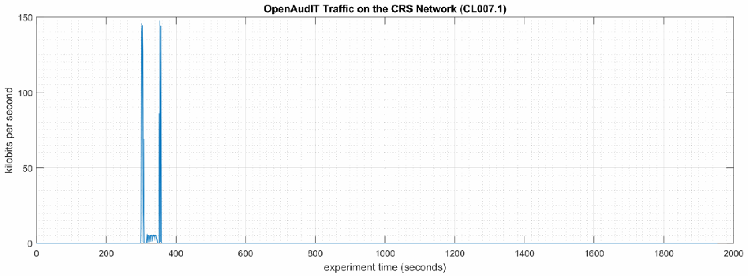
「OpenAudIT Traffic on the CRS Network (CL007.1)」と題した時系列グラフです。縦軸は「kilobits per second」（0〜150）、横軸は「experiment time (seconds)」（0〜2000）です。約 300〜360 秒に約 145 kbps の突出があるほかは、通信量はほぼ 0 です。
Figure 4-4 - Time series plot showing the rate of network traffic (in kilobits per second) transmitted and received by the Open-AudIT tool during the experiment time period, with the most prominent activity between 300 to 358 seconds.
図4-4 - 実験期間中に Open-AudIT ツールが送受信したネットワークトラフィックの速度（キロビット毎秒）を示す時系列プロット。最も顕著な活動は300秒から358秒の間にあります。
No performance impact to the manufacturing process was measured during the experiment.
実験中に、製造プロセスへの性能上の影響は測定されませんでした。
![Two panels. Left: "Part Production Time Bihistogram", x axis "production time (seconds)" from 94.15 to 94.6, y axis "count" from -6 to 4; the experiment counts are drawn upward in orange and the baseline counts downward in blue. Right: "Bootstrap (34 parts, 1000 iterations)", x axis "production time (seconds)" from 94.3 to 94.44, y axis "probability" from -0.4 to 0.4; legend "Experiment (CL007.1)" (orange, upward) and "Baseline (CL001.2)" (blue, downward). The experiment distribution in the bootstrap panel lies slightly to the right of the baseline (around 94.37 to 94.40 versus 94.34 to 94.36).](assets/ir-8183av3/p0119-figure-01.png)
2 つのグラフです。左は「Part Production Time Bihistogram」で、横軸は「production time (seconds)」（94.15〜94.6）、縦軸は「count」（-6〜4）です。実験の度数を橙で上向きに、ベースラインの度数を青で下向きに描いています。右は「Bootstrap (34 parts, 1000 iterations)」で、横軸は「production time (seconds)」（94.3〜94.44）、縦軸は「probability」（-0.4〜0.4）、凡例は「Experiment (CL007.1)」（橙、上向き）と「Baseline (CL001.2)」（青、下向き）です。bootstrap のグラフでは、実験の分布（約 94.37〜94.40）がベースライン（約 94.34〜94.36）よりわずかに右にあります。
Figure 4-5 - Bihistograms showing the part production time (left) and estimated mean production time using the bootstrap method (right) using the measurements from baseline CL001.2 and experiment CL007.1.
図4-5 - ベースライン CL001.2 と実験 CL007.1 の測定値を使用した、部品の生産時間（左）と、ブートストラップ法を使用した推定平均生産時間（右）を示すバイヒストグラム。
4.2.6.2 Experiment CL007.2
4.2.6.2 実験 CL007.2
An Open-AudIT “discovery” scan with credentials (i.e., authenticated scan) was performed on three IP address ranges in the CRS network:
CRS ネットワーク内の3つの IP アドレス範囲に対して、認証情報を使用した Open-AudIT の「検出」スキャン（認証付きスキャン）を実施しました。
•192.168.1.101 to 192.168.1.104 (CRS Control LAN),
•192.168.1.101 から 192.168.1.104（CRS 制御用 LAN）、
•192.168.1.1 to 192.168.1.5 (CRS Control LAN), and
•192.168.1.1 から 192.168.1.5（CRS 制御用 LAN）、および
•192.168.0.1 to 192.168.0.239 (CRS Supervisory LAN).
•192.168.0.1 から 192.168.0.239（CRS 監督用 LAN）。
Credentials were provided to Open-AudIT, which gave the tool access to the following CRS hosts: the engineering workstation (POLARIS), the robot driver (MINTAKA), the robot controllers (vController1, vController2), and the machining stations. The Open-AudIT logs reported scanning was active for each IP address range for 5 minutes 17 seconds, 6 minutes 18 seconds, and 7 minutes 24 seconds, respectively. Notes taken by the researchers while the experiment was underway reported that the tool was actively scanning from 293 seconds to around 750 seconds (experiment time). The network traffic captures show that the tool was actively communicating on the CRS network from 290 seconds to 681 seconds (experiment time), with a peak network throughput of around 300 kbps (see Figure 4-6).
Open-AudIT に認証情報を提供し、ツールが次の CRS ホストにアクセスできるようにしました。エンジニアリングワークステーション（POLARIS）、ロボットドライバー（MINTAKA）、ロボットコントローラー（vController1、vController2）、加工ステーションです。Open-AudIT のログには、各 IP アドレス範囲について、スキャンがそれぞれ5分17秒、6分18秒、7分24秒間アクティブであったと記録されています。実験の進行中に研究者が取ったメモには、ツールが（実験時間で）293秒から約750秒まで能動的にスキャンしていたと記録されています。ネットワークトラフィックのキャプチャでは、ツールが（実験時間で）290秒から681秒まで CRS ネットワーク上で能動的に通信しており、ネットワークスループットのピークは約300 kbps であったことが示されています（図4-6を参照）。
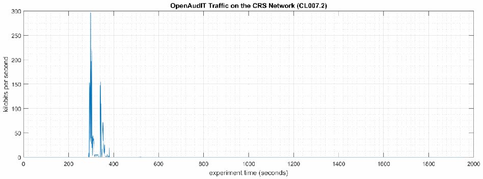
「OpenAudIT Traffic on the CRS Network (CL007.2)」と題した時系列グラフです。縦軸は「kilobits per second」（0〜300）、横軸は「experiment time (seconds)」（0〜2000）です。約 290〜380 秒に最大約 300 kbps の突出があり、それ以外はほぼ 0 です。
Figure 4-6 - Time series plot showing the rate of network traffic (in kilobits per second) transmitted and received by the Open-AudIT tool during the experiment time period, with the most prominent activity between 290 to 380 seconds.
図4-6 - 実験期間中に Open-AudIT ツールが送受信したネットワークトラフィックの速度（キロビット毎秒）を示す時系列プロット。最も顕著な活動は290秒から380秒の間にあります。
Increased CPU utilization was observed on vController1 and vController2 between 340 to 420 seconds experiment time. CPU utilization for vController1 increased to an approximate average of 36% with a peak of 46% during the scan period (see Figure 4-7). A constant increase of the average CPU utilization was also observed on vController1 for the entire experiment, from the baseline value of approximately 2% to 8%. The cause of this increase is unknown at the time of publishing. CPU utilization for vController2 increased to an approximate average of 32% with a peak of 58% during the scan period (see Figure 4-8).
実験時間で340秒から420秒の間に、vController1 と vController2 の CPU 使用率の上昇が観測されました。vController1 の CPU 使用率は、スキャン期間中に平均約36%、ピーク46%まで上昇しました（図4-7を参照）。また、vController1 では、実験全体を通じて平均 CPU 使用率が、ベースライン値の約2%から8%へと、継続的に上昇していることも観測されました。この上昇の原因は、公表時点では不明です。vController2 の CPU 使用率は、スキャン期間中に平均約32%、ピーク58%まで上昇しました（図4-8を参照）。
![Two time series panels, both titled "CPU Utilization Ratio - vController1", with legend "Baseline (CL001.2)" (blue) and "Experiment (CL007.2)" (orange). Left: y axis "CPU utilization ratio" from 0 to 0.5, x axis "experiment time (seconds)" from 0 to 1800. Right (enlarged period): y axis labeled "bits per second" from 0 to 0.5, x axis "experiment time (seconds)" from 320 to 440. The experiment ratio is about 0.07 for the whole run (baseline about 0.02) and rises to about 0.3 to 0.46 between about 340 and 420 seconds.](assets/ir-8183av3/p0120-figure-02.png)
どちらも「CPU Utilization Ratio - vController1」と題した 2 つの時系列グラフで、凡例は「Baseline (CL001.2)」（青）と「Experiment (CL007.2)」（橙）です。左は縦軸「CPU utilization ratio」（0〜0.5）、横軸「experiment time (seconds)」（0〜1800）です。右は期間を拡大したもので、縦軸のラベルは「bits per second」（0〜0.5）、横軸は「experiment time (seconds)」（320〜440）です。実験では全体を通じて約 0.07（ベースラインは約 0.02）で、約 340〜420 秒に約 0.3〜0.46 に上がります。
Figure 4-7 - Time series plots showing the CPU utilization ratio for vController1 during the experiment (left), and during the period of measured impact (right).
図4-7 - 実験中（左）と、影響が測定された期間中（右）の、vController1 の CPU 使用率を示す時系列プロット。
![Two time series panels, both titled "CPU Utilization Ratio - vController2", with legend "Baseline (CL001.2)" (blue) and "Experiment (CL007.2)" (orange). Left: y axis "CPU utilization ratio" from 0 to 0.6, x axis "experiment time (seconds)" from 0 to 1800. Right (enlarged period): y axis labeled "bits per second" from 0 to 0.6, x axis "experiment time (seconds)" from 320 to 440. The experiment ratio rises to about 0.3 (peak about 0.58) between about 340 and 420 seconds; otherwise both series stay near 0.02 to 0.03.](assets/ir-8183av3/p0121-figure-02.png)
どちらも「CPU Utilization Ratio - vController2」と題した 2 つの時系列グラフで、凡例は「Baseline (CL001.2)」（青）と「Experiment (CL007.2)」（橙）です。左は縦軸「CPU utilization ratio」（0〜0.6）、横軸「experiment time (seconds)」（0〜1800）です。右は期間を拡大したもので、縦軸は「bits per second」（0〜0.6）、横軸は「experiment time (seconds)」（320〜440）です。実験では約 340〜420 秒に約 0.3（最大約 0.58）に上がり、それ以外は両系列とも約 0.02〜0.03 にとどまります。
Figure 4-8 - Time series plots showing the CPU utilization ratio for vController2 during the experiment (left), and during the period of measured impact (right).
図4-8 - 実験中（左）と、影響が測定された期間中（右）の、vController2 の CPU 使用率を示す時系列プロット。
A slight increase of the part production time mean and variance was observed during this experiment, but they are not statistically significant.
この実験中、部品の生産時間の平均と分散にわずかな増加が観測されましたが、統計的に有意ではありません。
![Two panels. Left: "Part Production Time Bihistogram", x axis "production time (seconds)" from 94.15 to 94.65, y axis "count" from -6 to 4; the experiment counts are drawn upward in orange and the baseline counts downward in blue. Right: "Bootstrap (34 parts, 1000 iterations)", x axis "production time (seconds)" from 94.3 to 94.48, y axis "probability" from -0.4 to 0.3; legend "Experiment (CL007.2)" (orange, upward) and "Baseline (CL001.2)" (blue, downward). The experiment distribution in the bootstrap panel lies to the right of the baseline (around 94.40 to 94.43 versus 94.34 to 94.36).](assets/ir-8183av3/p0121-figure-03.png)
2 つのグラフです。左は「Part Production Time Bihistogram」で、横軸は「production time (seconds)」（94.15〜94.65）、縦軸は「count」（-6〜4）です。実験の度数を橙で上向きに、ベースラインの度数を青で下向きに描いています。右は「Bootstrap (34 parts, 1000 iterations)」で、横軸は「production time (seconds)」（94.3〜94.48）、縦軸は「probability」（-0.4〜0.3）、凡例は「Experiment (CL007.2)」（橙、上向き）と「Baseline (CL001.2)」（青、下向き）です。bootstrap のグラフでは、実験の分布（約 94.40〜94.43）がベースライン（約 94.34〜94.36）より右にあります。
Figure 4-9 - Bihistograms showing the part production time (left) and estimated mean production time using the bootstrap method (right) using the measurements from baseline CL001.2 and experiment CL007.2.
図4-9 - ベースライン CL001.2 と実験 CL007.2 の測定値を使用した、部品の生産時間（左）と、ブートストラップ法を使用した推定平均生産時間（右）を示すバイヒストグラム。
4.2.7 Links to Entire Performance Measurement Data Set
4.2.7 性能測定データセット全体へのリンク
•CL007.1-OpenAudITNetworkScan.zip
•CL007.1-OpenAudITNetworkScan.zip
•CL007.2-OpenAudITAuthenticatedNetworkScan.zip
•CL007.2-OpenAudITAuthenticatedNetworkScan.zip
4.3 CSET
4.3 CSET
4.3.1 Technical Solution Overview
4.3.1 技術ソリューションの概要
Cyber Security Evaluation Tool (CSET) is a tool provided by the Department of Homeland Security for performing Cybersecurity evaluation against an organization. This evaluation is a completely manual process of answering multiple questions to determine organizational cybersecurity posture based on implemented cybersecurity practices against current cybersecurity status. This evaluation will help identify areas within the organization that required more attention and resources.
サイバーセキュリティ評価ツール（Cyber Security Evaluation Tool、CSET）は、組織に対するサイバーセキュリティの評価を行うために、国土安全保障省が提供しているツールです。この評価は、実施されているサイバーセキュリティの実践と現在のサイバーセキュリティの状況に基づいて、組織のサイバーセキュリティ態勢を判断するための、複数の質問に答える完全に手動のプロセスです。この評価は、組織内で、より多くの注意とリソースを必要とする領域を特定するのに役立ちます。
4.3.2 Technical Capabilities Provided by Solution
4.3.2 ソリューションが提供する技術的能力
CSET provides components of the following Technical Capabilities described in Section 6 of Volume 1:
CSET は、第1巻の第6節で説明した、次の技術的能力の構成要素を提供します。
•Network Architecture Documentation
•ネットワークアーキテクチャの文書化
•Risk Assessment
•リスクアセスメント
4.3.3 Subcategories Addressed by Implementing Solution
4.3.3 ソリューションの実装によって対処するサブカテゴリ
ID.AM-3, ID.AM-4, ID.RA-1
ID.AM-3, ID.AM-4, ID.RA-1
4.3.4 Architecture Map of Where Solution was Implemented
4.3.4 ソリューションを実装した場所のアーキテクチャマップ
![Network architecture diagram of the testbed. Internet → "Corporate Network" → "Manufacturing System Router/Firewall", which connects the "Manufacturing DMZ" ("DMZ Historian 10.100.1.4" on "Manufacturing DMZ LAN - 10.100.1.0/24") and the "Cybersecurity LAN" ("Cybersecurity LAN - 10.100.0.0/24" with "NTP/PTP Clock 10.100.0.15", "Microsoft ActiveDirectory 10.100.0.13,17", "Symantec Antivirus 10.100.0.5", "GTB Data Loss Prev. 10.100.0.175,176", "Veeam Backup 10.100.0.10", "Graylog Syslog 10.100.0.14"). Below, "Workcell #1" is reached through the "CRS LAN Router (NAT) 10.100.0.20/32" (192.168.0.2, 192.168.1.2). On "Supervisory LAN - 192.168.0.0/24": "Engineering Workstation 192.168.0.20", "Supervisory and Safety PLC's 192.168.0.30", "Operator HMI 192.168.0.98", "Local Historian 192.168.0.10", "Remote I/O 192.168.0.60". On "Control LAN - 192.168.1.0/24": "Station 1 192.168.1.101", "Station 2 192.168.1.102", "Station 3 192.168.1.103", "Station 4 192.168.1.104", "Robot Driver 192.168.1.5" connected to two robots by "Field Bus", and "Robot Controllers 192.168.1.3,4". Legend: padlock icon = "CSET". A "Cybersecurity Scanning Laptop CSET 192.168.0.11" with the padlock icon is connected by a dashed line to the Supervisory LAN, with the note "NOTE: Connection present only during vulnerability and asset scanning."](assets/ir-8183av3/p0123-figure-02.png)
試験環境のネットワーク構成図です。Internet →「Corporate Network」→「Manufacturing System Router/Firewall」とつながり、このルーターに「Manufacturing DMZ」（「Manufacturing DMZ LAN - 10.100.1.0/24」上の「DMZ Historian 10.100.1.4」）と「Cybersecurity LAN」（「Cybersecurity LAN - 10.100.0.0/24」上の「NTP/PTP Clock 10.100.0.15」「Microsoft ActiveDirectory 10.100.0.13,17」「Symantec Antivirus 10.100.0.5」「GTB Data Loss Prev. 10.100.0.175,176」「Veeam Backup 10.100.0.10」「Graylog Syslog 10.100.0.14」）が接続されています。その下の「Workcell #1」には「CRS LAN Router (NAT) 10.100.0.20/32」（192.168.0.2、192.168.1.2）を経由して接続します。「Supervisory LAN - 192.168.0.0/24」には「Engineering Workstation 192.168.0.20」「Supervisory and Safety PLC's 192.168.0.30」「Operator HMI 192.168.0.98」「Local Historian 192.168.0.10」「Remote I/O 192.168.0.60」が、「Control LAN - 192.168.1.0/24」には「Station 1 192.168.1.101」〜「Station 4 192.168.1.104」、「Field Bus」で 2 台のロボットとつながる「Robot Driver 192.168.1.5」、「Robot Controllers 192.168.1.3,4」が接続されています。凡例は南京錠のアイコンが「CSET」です。南京錠のアイコンの付いた「Cybersecurity Scanning Laptop CSET 192.168.0.11」が破線で Supervisory LAN に接続され、「NOTE: Connection present only during vulnerability and asset scanning.」と注記されています。
4.3.5 Installation Instructions and Configurations
4.3.5 インストール手順と構成
Details of the solution implemented:
実装したソリューションの詳細：
| Name | Version | Hardware Details |
|---|---|---|
| CSET | 8.1 | Laptop with the following specs:
|
| 名称 | バージョン | ハードウェアの詳細 |
|---|---|---|
| CSET | 8.1 | 次の仕様のノートパソコン：
|
4.3.5.1 Environment setup
4.3.5.1 環境のセットアップ
1.CSET was installed on a temporary Windows laptop in the workcell network on an on-demand basis
1.CSET は、ワークセルのネットワーク内の臨時の Windows ノートパソコンに、オンデマンドでインストールした
4.3.5.2 Installation
4.3.5.2 インストール
1.Download CSET57. After clicking the link, you will be asked to identify yourself and will then be given the opportunity to download the file CSET_x.x.iso (where x.x represents the download version).
1.CSET をダウンロードする57。リンクをクリックすると、身元の確認を求められ、その後、CSET_x.x.iso ファイル（x.x はダウンロードするバージョンを表す）をダウンロードできるようになります。
2.Use any ISO-specific utility program that can mount the file.
2.ファイルをマウントできる、ISO 対応のユーティリティプログラムを使用します。
3.Find and run the CSET_Setup.exe file in the folder, virtual drive, or CD.
3.フォルダー、仮想ドライブ、または CD 内にある CSET_Setup.exe ファイルを見つけて実行します。
4.Complete the instructions in the installation wizard to install the program.
4.インストールウィザードの指示に従って、プログラムをインストールします。
4.3.5.3 Running CSET
4.3.5.3 CSET の実行
1.Launch the program by double-clicking its desktop icon
1.デスクトップアイコンをダブルクリックして、プログラムを起動する
2.Select New Assetment on the home screen.
2.ホーム画面で New Assessment を選択します。
3.Click Start Here button in the lower right corner of program.
3.プログラムの右下にある Start Here ボタンをクリックします。
4.Enter all required information
4.必要な情報をすべて入力する
［第三者の画像。第三者の著作物のため、この非公式サイトには掲載していません。原本 PDF を参照してください。］
5.Click Continue to proceed.
5.Continue をクリックして先へ進みます。
6.Click the drop down menus and select the appropriate choices.
6.ドロップダウンメニューをクリックして、適切な選択肢を選びます。
［第三者の画像。第三者の著作物のため、この非公式サイトには掲載していません。原本 PDF を参照してください。］
7.Click Continue to proceed.
7.Continue をクリックして先へ進みます。
8.(Optional) Click the Create a network diagram button to create one, otherwise click Continue.
8.（任意）Create a network diagram ボタンをクリックしてネットワーク図を作成します。作成しない場合は Continue をクリックします。
9.Change Mode Selection to Advanced and Cybersecurity Frame-based Approach
9.Mode Selection を Advanced と Cybersecurity Frame-based Approach に変更する
［第三者の画像。第三者の著作物のため、この非公式サイトには掲載していません。原本 PDF を参照してください。］
10.Click Continue to use default profile or create a new profile.
10.Continue をクリックして、デフォルトのプロファイルを使用するか、新しいプロファイルを作成します。
11.Click Continue again.
11.もう一度 Continue をクリックします。
12.Answer all the questions as they appear.
12.表示される質問にすべて答えます。
13.Complete all questions and generate a final report.
13.すべての質問に答えて、最終レポートを生成します。
4.3.5.4 Additional Information
4.3.5.4 追加情報
Video tutorials58 are available on the CSET YouTube Channel to help you better understand how to use this tool.
このツールの使い方をよりよく理解するために、CSET の YouTube チャンネルでビデオチュートリアル58 を利用できます。
Lessons Learned
得られた教訓
•The tool is only as good as information entered. Make sure each answer is thought out before answering.
•ツールの精度は、入力された情報の質次第です。回答する前に、各回答をよく考えるようにします。
•Mark any answer for review as needed so there will be follow up.
•必要に応じて、回答にレビューのマークを付け、後でフォローアップできるようにします。
•When completed your organization will receive a 0 to 100 score depending on readiness.
•完了すると、組織は準備状況に応じて0から100のスコアを受け取ります。
4.3.6 Highlighted Performance Impacts
4.3.6 注目すべき性能への影響
No performance measurement experiments were performed for CSET due to its typical installation location (i.e., external to the manufacturing system).
通常のインストール場所（すなわち製造システムの外部）を理由に、CSET について性能測定実験は実施されませんでした。
4.3.7 Links to Entire Performance Measurement Data Set
4.3.7 性能測定データセット全体へのリンク
N/A
N/A
4.4 GRASSMARLIN
4.4 GRASSMARLIN
4.4.1 Technical Solution Overview
4.4.1 技術ソリューションの概要
GRASSMARLIN is an open source, passive network mapper dedicated to industrial networks and developed by the National Security Agency (NSA). GRASSMARLIN gives a snapshot of the industrial system including:
GRASSMARLIN は、国家安全保障局（NSA）が開発した、産業用ネットワーク専用のオープンソースのパッシブなネットワークマッパーです。GRASSMARLIN は、次のものを含む産業システムのスナップショットを提供します。
•Devices on the network
•ネットワーク上のデバイス
•Communications between these devices
•これらのデバイス間の通信
•Metadata extracted from these communications
•これらの通信から抽出されたメタデータ
Points to consider:59
考慮すべき点：59
•Passive IP network mapping tool
•パッシブな IP ネットワークマッピングツール
•Hardware agnostic portable Java based tool
•ハードウェアに依存しない、可搬性のある Java ベースのツール
•Can only see and map hosts where you are capturing data from.
•データをキャプチャしているホストしか見たり、マッピングしたりできません。
4.4.2 Technical Capabilities Provided by Solution
4.4.2 ソリューションが提供する技術的能力
GRASSMARLIN provides components of the following Technical Capabilities described in Section 6 of Volume 1:
GRASSMARLIN は、第1巻の第6節で説明した、次の技術的能力の構成要素を提供します。
•Network Architecture Documentation
•ネットワークアーキテクチャの文書化
•Baseline Establishment
•ベースラインの確立
•Map Data Flows
•データフローのマッピング
4.4.3 Subcategories Addressed by Implementing Solution
4.4.3 ソリューションの実装によって対処するサブカテゴリ
ID.AM-3, ID.AM-4, PR.AC-5, PR.IP-1, DE.AE-1, DE.CM-7
ID.AM-3, ID.AM-4, PR.AC-5, PR.IP-1, DE.AE-1, DE.CM-7
4.4.4 Architecture Map of Where Solution was Implemented
4.4.4 ソリューションを実装した場所のアーキテクチャマップ
![Network architecture diagram of the testbed. Internet → "Corporate Network" → "Manufacturing System Router/Firewall", which connects the "Manufacturing DMZ" ("DMZ Historian 10.100.1.4" on "Manufacturing DMZ LAN - 10.100.1.0/24") and the "Cybersecurity LAN" ("Cybersecurity LAN - 10.100.0.0/24" with "NTP/PTP Clock 10.100.0.15", "Microsoft ActiveDirectory 10.100.0.13,17", "Symantec Antivirus 10.100.0.5", "GTB Data Loss Prev. 10.100.0.175,176", "Veeam Backup 10.100.0.10", "Graylog Syslog 10.100.0.14"). Below, "Workcell #1" is reached through the "CRS LAN Router (NAT) 10.100.0.20/32" (192.168.0.2, 192.168.1.2). On "Supervisory LAN - 192.168.0.0/24": "Engineering Workstation 192.168.0.20", "Supervisory and Safety PLC's 192.168.0.30", "Operator HMI 192.168.0.98", "Local Historian 192.168.0.10", "Remote I/O 192.168.0.60". On "Control LAN - 192.168.1.0/24": "Station 1 192.168.1.101", "Station 2 192.168.1.102", "Station 3 192.168.1.103", "Station 4 192.168.1.104", "Robot Driver 192.168.1.5" connected to two robots by "Field Bus", and "Robot Controllers 192.168.1.3,4". Legend: marlin logo = "Grass Marlin". A "Cybersecurity Scanning Laptop Grass-Marlin 192.168.0.11" with the marlin logo is connected by a dashed line to the Supervisory LAN, with the note "NOTE: Connection present only during vulnerability and asset scanning."](assets/ir-8183av3/p0128-figure-02.png)
試験環境のネットワーク構成図です。Internet →「Corporate Network」→「Manufacturing System Router/Firewall」とつながり、このルーターは「Manufacturing DMZ」（「Manufacturing DMZ LAN - 10.100.1.0/24」上の「DMZ Historian 10.100.1.4」）と「Cybersecurity LAN」（「Cybersecurity LAN - 10.100.0.0/24」上の「NTP/PTP Clock 10.100.0.15」「Microsoft ActiveDirectory 10.100.0.13,17」「Symantec Antivirus 10.100.0.5」「GTB Data Loss Prev. 10.100.0.175,176」「Veeam Backup 10.100.0.10」「Graylog Syslog 10.100.0.14」）に接続しています。その下では、「CRS LAN Router (NAT) 10.100.0.20/32」（192.168.0.2、192.168.1.2）を経由して「Workcell #1」に接続します。「Supervisory LAN - 192.168.0.0/24」には「Engineering Workstation 192.168.0.20」「Supervisory and Safety PLC's 192.168.0.30」「Operator HMI 192.168.0.98」「Local Historian 192.168.0.10」「Remote I/O 192.168.0.60」があります。「Control LAN - 192.168.1.0/24」には「Station 1 192.168.1.101」「Station 2 192.168.1.102」「Station 3 192.168.1.103」「Station 4 192.168.1.104」「Robot Driver 192.168.1.5」「Robot Controllers 192.168.1.3,4」があり、「Robot Driver」は「Field Bus」を介して2台のロボットに接続しています。凡例：カジキのロゴは「Grass Marlin」を表します。カジキのロゴが付いた「Cybersecurity Scanning Laptop Grass-Marlin 192.168.0.11」は破線でSupervisory LANに接続されています。注記：「脆弱性および資産のスキャン中に限り接続が存在します。」
4.4.5 Installation Instructions and Configurations
4.4.5 インストール手順と構成
Details of the solution implemented:
実装したソリューションの詳細：
| Name | Version | Hardware Details |
|---|---|---|
| GRASSMARLIN | 3.2.1 | Laptop with the following specs:
|
| 名称 | バージョン | ハードウェアの詳細 |
|---|---|---|
| GRASSMARLIN | 3.2.1 | 次の仕様のノートパソコン：
|
4.4.5.1 Environment Setup
4.4.5.1 環境のセットアップ
1.A temporary Windows laptop with GRASSMARLIN installed was setup in the workcell network on an on-demand basis.
1.GRASSMARLIN をインストールした臨時の Windows ノートパソコンを、ワークセルのネットワーク内に、オンデマンドでセットアップしました。
4.4.5.2 Installation
4.4.5.2 インストール
1.Download GRASSMARLIN60
1.GRASSMARLIN をダウンロードする60
2.Run the installer. The installer will install additional programs such as Java and Wireshark during the setup.
2.インストーラーを実行します。インストーラーは、セットアップ中に Java や Wireshark などの追加プログラムをインストールします。
4.4.5.3 Using the Software
4.4.5.3 ソフトウェアの使用
GRASSMARLIN can operate in a real time passive mode by sniffing the live traffic or by importing a recorded pcap file. Data in GRASSMARLIN is stored in a Session. The Session contains imported files and visual state information.
GRASSMARLIN は、ライブトラフィックをスニッフィングするか、記録済みの pcap ファイルをインポートすることで、リアルタイムのパッシブモードで動作できます。GRASSMARLIN のデータは、セッションに保存されます。セッションには、インポートしたファイルと、視覚的な状態情報が含まれます。
1.Use tcpdump to capture network packets & save to a pcap file on a Linux system
1.Linux システム上で、tcpdump を使用してネットワークパケットをキャプチャし、pcap ファイルに保存する
a.Install tcpdump package if not present already
a.tcpdump パッケージがまだない場合は、インストールする
b.Run, tcpdump -i <mirror-port interface> - w mypcap.pcap For example: tcpdump -i eth1 -w /home/icssec/pcs.pcap Where eth1 is the span / mirror port connection
b.tcpdump -i <mirror-port interface> - w mypcap.pcap を実行します。例：tcpdump -i eth1 -w /home/icssec/pcs.pcap（eth1 は SPAN／ミラーポートへの接続です）
2.Run GRASSMARLIN on a Windows system by double clicking the program icon from the Programs Menu. On a Linux system, run sudo grassmarlin to launch the installer.
2.Windows システムでは、プログラムメニューからプログラムアイコンをダブルクリックして GRASSMARLIN を実行します。Linux システムでは、sudo grassmarlin を実行してインストーラーを起動します。
3.Import a pcap in GRASSMARLIN as follows,
3.GRASSMARLIN に pcap を次のようにインポートします。
•Click on the Import icon in the toolbar (or select Import files from the File Menu)
•ツールバーの Import アイコンをクリックする（または、File メニューから Import files を選択する）
［第三者の画像。第三者の著作物のため、この非公式サイトには掲載していません。原本 PDF を参照してください。］
•Click on Add Files. Browse to the pcap file. Once done, the pcap will now show up under Pending Imports.
•Add Files をクリックします。pcap ファイルを参照します。完了すると、pcap が Pending Imports の下に表示されます。
［第三者の画像。第三者の著作物のため、この非公式サイトには掲載していません。原本 PDF を参照してください。］
•Select the file and click on Import Selected. Hit the Close button upon completion to back to the Main interface. The Import process can take several minutes to hours depending on the size of the pcap file.
•ファイルを選択し、Import Selected をクリックします。完了したら Close ボタンを押して、メインインターフェースに戻ります。インポート処理には、pcap ファイルのサイズに応じて、数分から数時間かかることがあります。
Upon the completion of Import, the main screen will display a Logical Graph of the network topology as shown below.
インポートが完了すると、メイン画面に、次のようなネットワークトポロジーの論理グラフ（Logical Graph）が表示されます。
［第三者の画像。第三者の著作物のため、この非公式サイトには掲載していません。原本 PDF を参照してください。］
4.Review the logical graph. All public IP addresses will also be highlighted with their respective country’s flag. This can be useful in finding out information about any external IPs that your network is communicating with.
4.論理グラフを確認します。すべてのパブリック IP アドレスは、それぞれの国の国旗とともに強調表示されます。これは、ネットワークが通信している外部 IP に関する情報を調べるのに役立ちます。
5.Right-click any external IP address > View Details.
5.外部 IP アドレスを右クリック > View Details。
［第三者の画像。第三者の著作物のため、この非公式サイトには掲載していません。原本 PDF を参照してください。］
6.Generate a list of all nodes in the Graph as follows
6.グラフ内のすべてのノードの一覧を、次のように生成する
1.Click View (Top Menu) > Logical Nodes Report. By default, only a single column (IP) is present, although additional columns can be added with any Property present in the set of Nodes.
1.View（トップメニュー）> Logical Nodes Report をクリックします。デフォルトでは列は IP の1列のみですが、ノードのセットに存在する任意のプロパティで列を追加できます。
2.Select any Property Name from the drop-down and click Add button to add new Columns in the Report.
2.ドロップダウンから任意の Property Name を選択し、Add ボタンをクリックして、レポートに新しい列を追加します。
［第三者の画像。第三者の著作物のため、この非公式サイトには掲載していません。原本 PDF を参照してください。］
7.Click on report of all connections in the pcap file as follows
7.pcap ファイル内のすべての接続のレポートを、次のようにクリックして表示する
•Click View (Top Menu)>> Logical Connections Report.
•View（トップメニュー）>> Logical Connections Report をクリックします。
［第三者の画像。第三者の著作物のため、この非公式サイトには掲載していません。原本 PDF を参照してください。］
•Click on Export CSV for further analysis of all the communications happening on your network.
•Export CSV をクリックして、ネットワーク上で行われているすべての通信をさらに分析します。
8.To view all the logical communications for a specific host for capturing a baseline,
8.ベースラインを取得するために、特定のホストのすべての論理通信を表示するには、
a.Right-click on a Node > View Frames. This opens a new screen as shown below displaying all the different IP addresses that particular host is communicating with including Port and Protocol information.
a.ノードを右クリック > View Frames。これにより、次のような新しい画面が開き、そのホストが通信しているすべての IP アドレスがポートとプロトコルの情報とともに表示されます。
b.Click on Export CSV button to export this data to a csv file.
b.Export CSV ボタンをクリックして、このデータを csv ファイルにエクスポートします。
Note: This process needs to be repeated for every node.
注記：この手順は、ノードごとに繰り返す必要があります。
［第三者の画像。第三者の著作物のため、この非公式サイトには掲載していません。原本 PDF を参照してください。］
9.Generate a Watch -Graph as follows,
9.Watch -Graph を次のように生成します。
•Right-click a node > Select Watch Connections from the Watch- connections menu. This will generate a graph in a new window Watch <IP address>
•ノードを右クリックし、Watch-Connections メニューから Watch Connections を選択します。これにより、新しいウィンドウに Watch <IP address> というグラフが生成されます。
［第三者の画像。第三者の著作物のため、この非公式サイトには掲載していません。原本 PDF を参照してください。］
［第三者の画像。第三者の著作物のため、この非公式サイトには掲載していません。原本 PDF を参照してください。］
4.4.5.4 Additional Information
4.4.5.4 追加情報
A User guide61 is available for GRASSMARLIN.
GRASSMARLIN には、ユーザーガイド61 があります。
4.4.6 Highlighted Performance Impacts
4.4.6 注目すべき性能への影響
No performance measurement experiments were performed for the use of GRASSMARLIN due to its installation location and how it was used (i.e., the software performed offline analysis of PCAP files captured by other software).
GRASSMARLIN の使用については、そのインストール場所と使い方（ソフトウェアは、他のソフトウェアがキャプチャした PCAP ファイルのオフライン分析を行った）の都合上、性能測定の実験を実施しませんでした。
4.4.7 Links to Entire Performance Measurement Data Set
4.4.7 性能測定データセット全体へのリンク
N/A
N/A
4.5 Wireshark
4.5 Wireshark
4.5.1 Technical Solution Overview
4.5.1 技術ソリューションの概要
Wireshark is a free and open-source packet analyzer.
Wireshark は、無料のオープンソースのパケットアナライザーです。
4.5.2 Technical Capabilities Provided by Solution
4.5.2 ソリューションが提供する技術的能力
Wireshark provides components of the following Technical Capabilities described in Section 6 of Volume 1:
Wireshark は、第1巻の第6節で説明した、次の技術的能力の構成要素を提供します。
•Network Architecture Documentation
•ネットワークアーキテクチャの文書化
•Baseline Establishment
•ベースラインの確立
•Map Data Flows
•データフローのマッピング
•Forensics
•フォレンジック
4.5.3 Subcategories Addressed by Implementing Solution
4.5.3 ソリューションの実装によって対処するサブカテゴリ
ID.AM-3, ID.AM-4, PR.AC-5, PR.IP-1, DE.AE-1, DE.AE-2, DE.CM-7, RS.AN-3
ID.AM-3, ID.AM-4, PR.AC-5, PR.IP-1, DE.AE-1, DE.AE-2, DE.CM-7, RS.AN-3
4.5.4 Architecture Map of Where Solution was Implemented
4.5.4 ソリューションを実装した場所のアーキテクチャマップ
![Network architecture diagram of the testbed. Internet → "Corporate Network" → "Manufacturing System Router/Firewall", which connects the "Manufacturing DMZ" ("DMZ Historian 10.100.1.4" on "Manufacturing DMZ LAN - 10.100.1.0/24") and the "Cybersecurity LAN" ("Cybersecurity LAN - 10.100.0.0/24" with "NTP/PTP Clock 10.100.0.15", "Microsoft ActiveDirectory 10.100.0.13,17", "Symantec Antivirus 10.100.0.5", "GTB Data Loss Prev. 10.100.0.175,176", "Veeam Backup 10.100.0.10", "Graylog Syslog 10.100.0.14"). Below, "Workcell #1" is reached through the "CRS LAN Router (NAT) 10.100.0.20/32" (192.168.0.2, 192.168.1.2). On "Supervisory LAN - 192.168.0.0/24": "Engineering Workstation 192.168.0.20", "Supervisory and Safety PLC's 192.168.0.30", "Operator HMI 192.168.0.98", "Local Historian 192.168.0.10", "Remote I/O 192.168.0.60". On "Control LAN - 192.168.1.0/24": "Station 1 192.168.1.101", "Station 2 192.168.1.102", "Station 3 192.168.1.103", "Station 4 192.168.1.104", "Robot Driver 192.168.1.5" connected to two robots by "Field Bus", and "Robot Controllers 192.168.1.3,4". Legend: Wireshark logo = "Wireshark". A "Cybersecurity Scanning Laptop Wireshark installed 192.168.0.11" with the Wireshark logo is connected by a dashed line to the Supervisory LAN, with the note "NOTE: Connection present only during vulnerability and asset scanning."](assets/ir-8183av3/p0137-figure-02.png)
試験環境のネットワーク構成図です。Internet →「Corporate Network」→「Manufacturing System Router/Firewall」とつながり、このルーターは「Manufacturing DMZ」（「Manufacturing DMZ LAN - 10.100.1.0/24」上の「DMZ Historian 10.100.1.4」）と「Cybersecurity LAN」（「Cybersecurity LAN - 10.100.0.0/24」上の「NTP/PTP Clock 10.100.0.15」「Microsoft ActiveDirectory 10.100.0.13,17」「Symantec Antivirus 10.100.0.5」「GTB Data Loss Prev. 10.100.0.175,176」「Veeam Backup 10.100.0.10」「Graylog Syslog 10.100.0.14」）に接続されています。その下の「Workcell #1」には「CRS LAN Router (NAT) 10.100.0.20/32」（192.168.0.2、192.168.1.2）を経由して接続します。「Supervisory LAN - 192.168.0.0/24」には「Engineering Workstation 192.168.0.20」「Supervisory and Safety PLC's 192.168.0.30」「Operator HMI 192.168.0.98」「Local Historian 192.168.0.10」「Remote I/O 192.168.0.60」が、「Control LAN - 192.168.1.0/24」には「Station 1 192.168.1.101」「Station 2 192.168.1.102」「Station 3 192.168.1.103」「Station 4 192.168.1.104」「Robot Driver 192.168.1.5」が接続され、このロボットドライバーは「Field Bus」で2台のロボットと接続されています。また、「Robot Controllers 192.168.1.3,4」も接続されています。凡例：Wireshark のロゴは「Wireshark」を表します。Wireshark のロゴが付いた「Cybersecurity Scanning Laptop Wireshark installed 192.168.0.11」は破線で Supervisory LAN に接続されています。注記：「脆弱性および資産のスキャン中に限り接続が存在します。」
4.5.5 Installation Instructions and Configurations
4.5.5 インストール手順と構成
Details of the solution implemented:
実装したソリューションの詳細：
| Name | Version | Hardware Details |
|---|---|---|
| Wireshark | 3.0.2 | Laptop with the following specs.
|
| 名称 | バージョン | ハードウェアの詳細 |
|---|---|---|
| Wireshark | 3.0.2 | 次の仕様のノートパソコン。
|
4.5.5.1 Environment Setup
4.5.5.1 環境のセットアップ
A Windows laptop with Wireshark installed was setup on an on-demand basis.
Wireshark をインストールした Windows ノートパソコンを、オンデマンドでセットアップしました。
4.5.5.2 Installation
4.5.5.2 インストール
1.Download Wireshark62 (Select 32bit or 64 bit)
1.Wireshark をダウンロードする62（32 ビットまたは 64 ビットを選択）
2.Run the exe to start install process. For instance, Wireshark-win64-3.0.1.exe
2.exe を実行して、インストールプロセスを開始します。たとえば、Wireshark-win64-3.0.1.exe。
3.Click Next, leave the defaults selected and continue install.
3.Next をクリックし、デフォルトの選択のままインストールを続けます。
4.Click I Agree to continue, when prompted for Npcap install
4.Npcap のインストールを促されたら、I Agree をクリックして続けます。
5.Now click Next and Finish to start process.
5.次に Next と Finish をクリックして、プロセスを開始します。
6.Select Reboot Now or I want to manually reboot later.
6.Reboot Now または I want to manually reboot later を選択します。
7.Click Finish to complete.
7.Finish をクリックして完了します。
4.5.5.3 Running Wireshark
4.5.5.3 Wireshark の実行
1.Launch Wireshark by doing a right-click on the Wireshark Desktop icon > Run as Administrator (Windows 10). Wireshark requires administrative privileges to be fully functional, otherwise there will be undesired results.
1.Wireshark のデスクトップアイコンを右クリックし、［Run as Administrator］を選択して起動します（Windows 10）。Wireshark が完全に機能するには管理者権限が必要です。管理者権限がないと、望ましくない結果になります。
2.Select the interface to capture traffic from, from the list of interfaces displayed
2.表示されたインターフェースの一覧から、トラフィックをキャプチャするインターフェースを選択する
［第三者の画像。第三者の著作物のため、この非公式サイトには掲載していません。原本 PDF を参照してください。］
4.5.5.4 Capturing Network Baseline using Wireshark
4.5.5.4 Wireshark を使用したネットワークベースラインの取得
1.Click Open to load a previously captured pcap file or run a Start Capture
1.Open をクリックして、以前にキャプチャした pcap ファイルを読み込むか、Start Capture を実行する
2.Click on Statistics > Conversations upon loading the pcap or capturing live traffic.
2.pcap を読み込んだとき、またはライブトラフィックをキャプチャしたときに、Statistics > Conversations をクリックします。
3.Click COPY > as Csv to save this data as a Csv file for further analysis. Screenshot shown below for reference
3.COPY > as Csv をクリックして、このデータを Csv ファイルとして保存し、さらに分析します。参考として、スクリーンショットを以下に示す
［第三者の画像。第三者の著作物のため、この非公式サイトには掲載していません。原本 PDF を参照してください。］
4.(Optional) Click on Statistics > IPv4 Statistics > Destination and Ports to get a list of all the ports. This will generate a list of ports used by all the IP addresses in the traffic. Click Copy, to copy the results to a word document or click Save as to save as a plain text file. Hit Close when done.
4.（任意）Statistics > IPv4 Statistics > Destination and Ports をクリックして、すべてのポートの一覧を取得します。これにより、トラフィック内のすべての IP アドレスが使用しているポートの一覧が生成されます。Copy をクリックして結果を Word 文書にコピーするか、Save as をクリックしてプレーンテキストファイルとして保存します。終わったら Close を押します。
［第三者の画像。第三者の著作物のため、この非公式サイトには掲載していません。原本 PDF を参照してください。］
［第三者の画像。第三者の著作物のため、この非公式サイトには掲載していません。原本 PDF を参照してください。］
4.5.6 Highlighted Performance Impacts
4.5.6 注目すべき性能への影響
No performance measurement experiments were performed for the use of Wireshark due to its typical usage (i.e., the software performs passive capturing of network packets using existing mirror/SPAN ports or bump-in-the-wire network taps, and the software was installed a laptop that is attached to the network only during maintenance and engineering activities).
Wireshark の通常の使用方法（既存のミラー／SPAN ポートまたはバンプインザワイヤ型ネットワークタップを使用して、ソフトウェアがネットワークパケットをパッシブにキャプチャすること、および保守・エンジニアリング作業中にのみネットワークに接続するノートパソコンにソフトウェアがインストールされていること）を踏まえ、性能測定実験は実施しませんでした。
4.5.7 Links to Entire Performance Measurement Data Set
4.5.7 性能測定データセット全体へのリンク
N/A
N/A
4.6 Veeam Backup and Replication
4.6 Veeam Backup and Replication
4.6.1 Technical Solution Overview
4.6.1 技術ソリューションの概要
Veeam Backup and Replication63 is a proprietary backup and system recovery software developed by Veeam for virtual environments. It is built on VMware vSphere and Microsoft Hyper-V hypervisors. The software provides backup, restore and replication functionality. Veeam also has products such as “Veeam agent for Windows” and “Veeam agent for Linux” for backing up physical Windows and Linux servers respectively.
Veeam Backup and Replication63 は、Veeam が仮想環境向けに開発した、独自のバックアップおよびシステム復旧ソフトウェアです。VMware vSphere と Microsoft Hyper-V のハイパーバイザーの上に構築されています。このソフトウェアは、バックアップ、復元、レプリケーションの機能を提供します。Veeam には、物理的な Windows サーバーと Linux サーバーをそれぞれバックアップするための、「Veeam agent for Windows」や「Veeam agent for Linux」といった製品もあります。
Points to consider:
考慮すべき点：
•Free backup edition available for virtual and physical servers.
•仮想サーバーと物理サーバー向けの、無料のバックアップエディションがあります。
•Support for file level backups as well as system image type of backups.
•ファイルレベルのバックアップと、システムイメージ型のバックアップをサポートしています。
•Backups can be run without having to shut down the system. This can be very critical in manufacturing environments.
•システムをシャットダウンせずにバックアップを実行できます。これは製造環境において非常に重要となりえます。
•Tech support available for Free edition users.
•無料エディションのユーザーも、技術サポートを利用できます。
•Easy to setup and use.
•セットアップと使用が容易です。
4.6.2 Technical Capabilities Provided by Solution
4.6.2 ソリューションが提供する技術的能力
Veeam Backup and Replication provides components of the following Technical Capabilities described in Section 6 of Volume 1:
Veeam Backup and Replication は、第1巻の第6節で説明した、次の技術的能力の構成要素を提供します。
•Data Backup
•データバックアップ
•Data Replication
•データレプリケーション
4.6.3 Subcategories Addressed by Implementing Solution
4.6.3 ソリューションの実装によって対処するサブカテゴリ
PR.IP-4
PR.IP-4
4.6.4 Architecture Map of Where Solution was Implemented
4.6.4 ソリューションを実装した場所のアーキテクチャマップ
![Network architecture diagram of the testbed. Internet → "Corporate Network" → "Manufacturing System Router/Firewall", which connects the "Manufacturing DMZ" ("DMZ Historian 10.100.1.4" on "Manufacturing DMZ LAN - 10.100.1.0/24") and the "Cybersecurity LAN" ("Cybersecurity LAN - 10.100.0.0/24" with "NTP/PTP Clock 10.100.0.15", "Microsoft ActiveDirectory 10.100.0.13,17", "Symantec Antivirus - SEPM 10.100.0.5", "GTB Data Loss Prev. 10.100.0.175,176", "Veeam Backup & Replication 10.100.0.10", "Graylog Syslog 10.100.0.14"). Below, "Workcell #1" is reached through the "CRS LAN Router (NAT) 10.100.0.20/32" (192.168.0.2, 192.168.1.2). On "Supervisory LAN - 192.168.0.0/24": "Engineering Workstation 192.168.0.20", "Supervisory and Safety PLC's 192.168.0.30", "Operator HMI 192.168.0.98", "Local Historian 192.168.0.10", "Remote I/O 192.168.0.60". On "Control LAN - 192.168.1.0/24": "Station 1 192.168.1.101", "Station 2 192.168.1.102", "Station 3 192.168.1.103", "Station 4 192.168.1.104", "Robot Driver 192.168.1.5" connected to two robots by "Field Bus", and "Robot Controllers 192.168.1.3,4". Legend: green Veeam icon with a green line = "Veeam Backup". Green Veeam icons are placed on the Microsoft ActiveDirectory servers, the Symantec Antivirus - SEPM server, a GTB server, the Veeam Backup & Replication server, the Engineering Workstation, the Local Historian, the Robot Driver and the Robot Controllers, and green lines connect them. A "Cybersecurity Scanning Laptop (Nessus, OpenAudIT) 192.168.0.11.12" is connected by a dashed line, with the note "NOTE: Connection present only during vulnerability and asset scanning."](assets/ir-8183av3/p0143-figure-02.png)
試験環境のネットワーク構成図です。Internet →「Corporate Network」→「Manufacturing System Router/Firewall」とつながり、このルーターに「Manufacturing DMZ」（「Manufacturing DMZ LAN - 10.100.1.0/24」上の「DMZ Historian 10.100.1.4」）と「Cybersecurity LAN」（「Cybersecurity LAN - 10.100.0.0/24」上の「NTP/PTP Clock 10.100.0.15」「Microsoft ActiveDirectory 10.100.0.13,17」「Symantec Antivirus - SEPM 10.100.0.5」「GTB Data Loss Prev. 10.100.0.175,176」「Veeam Backup & Replication 10.100.0.10」「Graylog Syslog 10.100.0.14」）が接続されています。その下の「Workcell #1」には「CRS LAN Router (NAT) 10.100.0.20/32」（192.168.0.2、192.168.1.2）を経由して接続します。「Supervisory LAN - 192.168.0.0/24」には「Engineering Workstation 192.168.0.20」「Supervisory and Safety PLC's 192.168.0.30」「Operator HMI 192.168.0.98」「Local Historian 192.168.0.10」「Remote I/O 192.168.0.60」が接続されています。「Control LAN - 192.168.1.0/24」には「Station 1 192.168.1.101」「Station 2 192.168.1.102」「Station 3 192.168.1.103」「Station 4 192.168.1.104」「Robot Driver 192.168.1.5」があり、Robot Driver は「Field Bus」で2台のロボットに接続されています。また、「Robot Controllers 192.168.1.3,4」も同 LAN にあります。凡例：緑の Veeam アイコンと緑の線は「Veeam Backup」を表します。緑の Veeam アイコンは Microsoft ActiveDirectory のサーバー、Symantec Antivirus - SEPM サーバー、GTB サーバー、Veeam Backup & Replication サーバー、Engineering Workstation、Local Historian、Robot Driver、Robot Controllers に付いており、緑の線で結ばれています。「Cybersecurity Scanning Laptop (Nessus, OpenAudIT) 192.168.0.11.12」は破線で接続され、「NOTE: Connection present only during vulnerability and asset scanning.」と注記されています。
4.6.5 Installation Instructions and Configurations
4.6.5 インストール手順と構成
Details of the solutions implemented:
実装したソリューションの詳細：
| Name | Version | Hardware Details |
|---|---|---|
| Veeam Backup and Replication | 9.5 | VMware Virtual Machine
|
| Veeam Agent for Linux (Free version) | 3.0.0.748 | Installed on all physical Linux systems of the workcell |
| 名称 | バージョン | ハードウェアの詳細 |
|---|---|---|
| Veeam Backup and Replication | 9.5 | VMware 仮想マシン
|
| Veeam Agent for Linux（無料版） | 3.0.0.748 | ワークセルのすべての物理 Linux システムにインストール |
4.6.5.1 Environment Setup
4.6.5.1 環境のセットアップ
1.A virtual machine running Windows 2012 R2 was setup with hardware specifications as described in the table above.
1.Windows 2012 R2 が動作する仮想マシンを、上の表のハードウェア仕様でセットアップしました。
2.The guest OS IP information was set as follows:
2.ゲスト OS の IP 情報は次のように設定しました。
IP address: 10.100.0.10
IP address: 10.100.0.10
Gateway: 10.100.0.1
Gateway: 10.100.0.1
Subnet Mask: 255.255.255.0
Subnet Mask: 255.255.255.0
DNS:10.100.0.17
DNS:10.100.0.17
3.An NFS share folder (called linux-backups) as shown below was setup on the Veeam server for saving backups. Within this folder, different sub folders were created as per the hostnames of each system to be backed up. This NFS directory would then be mounted on the Linux clients of the workcell system.
3.バックアップを保存するために、Veeam サーバー上に、次のような NFS 共有フォルダー（linux-backups という名前）をセットアップしました。このフォルダー内に、バックアップ対象の各システムのホスト名ごとに、異なるサブフォルダーを作成しました。この NFS ディレクトリは、ワークセルシステムの Linux クライアントにマウントされます。
［第三者の画像。第三者の著作物のため、この非公式サイトには掲載していません。原本 PDF を参照してください。］
4.Access to the NFS-share was regulated by allowing read/write access to the NAT IP address 10.100.0.20 of Work-cell network. For Security reasons, avoid selecting Allow Root access.
4.ワークセルネットワークの NAT IP アドレス 10.100.0.20 に読み取り／書き込みアクセスを許可することにより、NFS 共有へのアクセスを制御します。セキュリティ上の理由から、Allow Root access は選択しないでください。
4.6.5.2 Initial Setup
4.6.5.2 初期セットアップ
1.Download Veeam Backup & Replication.64
1.Veeam Backup & Replication をダウンロードします。64
2.Install the prerequisites as mentioned in the product guide. Run the installer, follow the on-screen instructions to complete the install.65
2.製品ガイドに記載された前提条件をインストールします。インストーラーを実行し、画面の指示に従ってインストールを完了します。65
3.Create a network share folder on the Veeam server for storing all the backups.
3.すべてのバックアップを保存するために、Veeam サーバー上にネットワーク共有フォルダーを作成します。
4.Create a Service account in Active Directory with read/write permissions to this network share.
4.Active Directory に、このネットワーク共有への読み取り／書き込み権限を持つサービスアカウントを作成します。
The Free Edition of Veeam Backup and Replication lets you manage virtual machine backups from the Central Veeam Backup and Replication Console. However, any physical servers using the Free version of Veeam agent for Linux cannot be managed from the Central console. These need to be managed locally from the client system itself.
Veeam Backup and Replication の無料エディションでは、中央の Veeam Backup and Replication コンソールから、仮想マシンのバックアップを管理できます。ただし、無料版の Veeam agent for Linux を使用している物理サーバーは、中央のコンソールから管理できません。これらは、クライアントシステム自体からローカルで管理する必要があります。
4.6.5.3 Performing Backups
4.6.5.3 バックアップの実施
1.Download and install the Veeam agent for Linux66 on the physical Linux systems as required. Use the Offline Mode67 of agent installation for air-gapped environments (without internet access).
1.必要に応じて、物理 Linux システムに Veeam agent for Linux66 をダウンロードしてインストールします。エアギャップ環境（インターネットにアクセスできない環境）では、エージェントのインストールのオフラインモード67 を使用します。
2.Run sudo veeam to launch the Veeam Control Panel utility. The initial screen will look as shown below. Accept the End User Agreement and click on Continue.
2.sudo veeam を実行して、Veeam Control Panel ユーティリティを起動します。最初の画面は次のように表示されます。エンドユーザー契約に同意して、Continue をクリックします。
［第三者の画像。第三者の著作物のため、この非公式サイトには掲載していません。原本 PDF を参照してください。］
3.Select either Patch Veeam Recovery media ISO and/or Download and patch ISO if the Linux system has internet connectivity else uncheck both of these options to proceed. The Veeam Recovery Media for Linux can also be downloaded manually from the Veeam website.
3.Linux システムがインターネットに接続している場合は、Patch Veeam Recovery media ISO と Download and patch ISO のいずれか、または両方を選択します。接続していない場合は、これらのオプションをどちらもオフにして先へ進みます。Linux 向けの Veeam Recovery Media は、Veeam の Web サイトから手動でダウンロードすることもできます。
4.Click FINISH Under License screen for Free Edition Mode
4.無料エディションモードの場合は、License 画面で FINISH をクリックします。
［第三者の画像。第三者の著作物のため、この非公式サイトには掲載していません。原本 PDF を参照してください。］
5.Press C to Configure a new backup job.
5.C を押して、新しいバックアップジョブを構成します。
［第三者の画像。第三者の著作物のため、この非公式サイトには掲載していません。原本 PDF を参照してください。］
6.Enter a Job name. Click Next.
6.Job name を入力します。Next をクリックします。
［第三者の画像。第三者の著作物のため、この非公式サイトには掲載していません。原本 PDF を参照してください。］
7.Choose the type of backup to perform under Backup Mode. Click Enter. For instance, to capture a full system image select Entire Machine.
7.Backup Mode で、実行するバックアップの種類を選択します。Enter をクリックします。たとえば、システム全体のイメージを取得するには、Entire Machine を選択します。
［第三者の画像。第三者の著作物のため、この非公式サイトには掲載していません。原本 PDF を参照してください。］
8.Select Shared Folder under Destination, to enable saving backups to the NFS folder created earlier on the Veeam Storage server. The option Local can be used to save the backup to a directly connected external USB device.
8.Destination で Shared Folder を選択すると、先に Veeam ストレージサーバー上に作成した NFS フォルダーにバックアップを保存できます。Local オプションを使用すると、直接接続された外部 USB デバイスにバックアップを保存できます。
［第三者の画像。第三者の著作物のため、この非公式サイトには掲載していません。原本 PDF を参照してください。］
9.Select NFS and enter the network path of the NFS mount setup earlier
9.NFS を選択し、先にセットアップした NFS マウントのネットワークパスを入力する
［第三者の画像。第三者の著作物のため、この非公式サイトには掲載していません。原本 PDF を参照してください。］
10.Enable other options as required under Advanced screen. For security purposes, enable Backup Encryption
10.必要に応じて、Advanced 画面でその他のオプションを有効にします。セキュリティのため、Backup Encryption を有効にする
［第三者の画像。第三者の著作物のため、この非公式サイトには掲載していません。原本 PDF を参照してください。］
11.Configure a schedule under Schedule screen or select Run the job automatically option to run a onetime manual backup.
11.Schedule 画面でスケジュールを構成するか、Run the job automatically オプションを選択して、1回限りのバックアップを実行します。
12.Verify the settings on the Summary Screen. Click Next to kick off the job. Click FINISH when done.
12.Summary 画面で設定を確認します。Next をクリックして、ジョブを開始します。完了したら FINISH をクリックします。
4.6.5.4 Performing Recovery
4.6.5.4 復旧の実施
A Restore operation can only be initiated from the client (if using Free edition) and requires the Veeam Recovery Media.
復元操作は、クライアントからのみ開始でき（無料エディションを使用している場合）、Veeam Recovery Media が必要です。
1.Download the Veeam Recovery Media68 (if not already) and burn it to a bootable USB. Boot the server off it.
1.Veeam Recovery Media68 を（まだ入手していなければ）ダウンロードし、起動可能な USB に書き込みます。サーバーをそれで起動します。
2.Accept the License at the initial screen. Click Continue.
2.最初の画面でライセンスに同意します。Continue をクリックします。
3.Click Configure Network (if performing a restore from a network drive). Assign an IP address to the system. The Media supports both Static and DHCP method for obtaining an IP address as shown below. Once done, Hit ESC to go Back
3.（ネットワークドライブから復元する場合は）Configure Network をクリックします。システムに IP アドレスを割り当てます。この媒体は、次のように、IP アドレスの取得方法として Static と DHCP の両方の方式をサポートしています。完了したら、ESC を押して戻ります。
4.Click Restore Volumes to restore backup type of Entire Computer.
4.Restore Volumes をクリックして、Entire Computer の種類のバックアップを復元します。
［第三者の画像。第三者の著作物のため、この非公式サイトには掲載していません。原本 PDF を参照してください。］
5.Click on Add Shared folder for restoring from a Network Share Drive using NFS/SMB as in our case. If restoring from an External USB drive, Click on Mount Local Drive.
5.今回のように NFS/SMB を使ってネットワーク共有ドライブから復元する場合は、Add Shared folder をクリックします。外部 USB ドライブから復元する場合は、Mount Local Drive をクリックします。
［第三者の画像。第三者の著作物のため、この非公式サイトには掲載していません。原本 PDF を参照してください。］
6.Configure the Network Path of the backup target as required. Below image shows the Path set to connect to Veeam backup server using NFS.
6.必要に応じて、バックアップ先のネットワークパスを構成します。次の画像は、NFS を使って Veeam バックアップサーバーに接続するように設定したパスを示しています。
［第三者の画像。第三者の著作物のため、この非公式サイトには掲載していません。原本 PDF を参照してください。］
7.Select a Restore Point under Imported Backups screen from the Right. Click I for Import Backup
7.Imported Backups 画面の右側にある復元ポイントを選択します。I を押して Import Backup を実行します。
Note: The screen will auto populate Restore points based off the backup jobs saved previously.
注記：画面には、以前に保存したバックアップジョブに基づいて、復元ポイントが自動的に入力されます。
［第三者の画像。第三者の著作物のため、この非公式サイトには掲載していません。原本 PDF を参照してください。］
8.Select the Appropriate volume/disk to Restore and hit Enter. This will confirm your selection. This screen displays a comparison of the filesystem layout that’s currently on the Linux server versus to what it currently has on that Backup Restore point.
8.復元する適切なボリューム／ディスクを選択して、Enter を押します。これにより選択が確定します。この画面には、Linux サーバー上の現在のファイルシステムのレイアウトと、バックアップの復元ポイントにあるファイルシステムのレイアウトとの比較が表示されます。
［第三者の画像。第三者の著作物のため、この非公式サイトには掲載していません。原本 PDF を参照してください。］
9.Select the “Restore Whole Disk from” if restoring an Entire Volume / System Image or other options as shown in the list. Basically, this is telling the system to restore the image of /sda volume to the local /sda that’s currently only the system.
9.ボリューム全体／システムイメージを復元する場合は「Restore Whole Disk from」を選択するか、一覧に示されているほかのオプションを選択します。基本的に、これは、/sda ボリュームのイメージを、現在システムのみが存在するローカルの /sda に復元するようシステムに指示するものです。
［第三者の画像。第三者の著作物のため、この非公式サイトには掲載していません。原本 PDF を参照してください。］
10.Choose the disk from backup to restore from. Select the appropriate disk and hit Enter.
10.復元元とするバックアップのディスクを選択します。適切なディスクを選択して、Enter を押します。
［第三者の画像。第三者の著作物のため、この非公式サイトには掲載していません。原本 PDF を参照してください。］
11.Hit S to Start the restore.
11.S を押して、復元を開始します。
［第三者の画像。第三者の著作物のため、この非公式サイトには掲載していません。原本 PDF を参照してください。］
12.Review the Recovery Summary screen. Hit Enter to start the Recovery.
12.Recovery Summary 画面を確認します。Enter を押して、復旧を開始します。
13.Eject the Veeam Recovery Media once restore completes and Reboot the server.
13.復元が完了したら、Veeam Recovery Media を取り出し、サーバーを再起動します。
4.6.5.5 Changing Backup Job Type
4.6.5.5 バックアップジョブの種類の変更
The free edition allows to schedule only one Backup job at a time. To change the backup mode, delete any existing job and re-run the configure wizard.
無料エディションでは、一度にスケジュールできるバックアップジョブは1つだけです。バックアップモードを変更するには、既存のジョブを削除して、構成ウィザードを再度実行します。
1.Run the commands below to delete an existing backup job and recreate a new one
1.次のコマンドを実行して、既存のバックアップジョブを削除し、新しいジョブを作り直す
sudo veeamconfig job list
sudo veeamconfig job list
sudo veeamconfig job delete - - name <job name>
sudo veeamconfig job delete - - name <job name>
sudo veeamconfig job delete - - id < id >
sudo veeamconfig job delete - - id < id >
2.Run sudo veeam to launch the Veeam Config Menu Once deleted. Hit C for Configure to create a new job.
2.削除したら、sudo veeam を実行して Veeam Config Menu を起動します。C（Configure）を押して、新しいジョブを作成します。
4.6.6 Highlighted Performance Impacts
4.6.6 注目すべき性能への影響
Three performance measurement experiments were performed for the Veeam tool while the manufacturing system was operational:
製造システムの稼働中に、Veeam ツールについて次の3つの性能測定実験を実施しました。
1.CL004.1 - Veeam agent is installed and running on predetermined CRS hosts.
1.CL004.1 - 事前に定められた CRS ホストに Veeam エージェントがインストールされ、稼働しています。
2.CL004.2 - A full image backup is performed on CRS hosts.
2.CL004.2 - CRS ホストで全体イメージのバックアップが実施される。
3.CL004.3 - A directory backup (i.e., incremental backup) is performed on CRS hosts.
3.CL004.3 - CRS ホストでディレクトリバックアップ（増分バックアップ）が実施される。
4.6.6.1 Experiment CL004.1
4.6.6.1 実験 CL004.1
No performance impact to the manufacturing process was measured during the experiment.
実験中、製造プロセスへの性能上の影響は測定されませんでした。
![Two panels. Left: "Part Production Time Bihistogram", x axis "production time (seconds)" from 94.25 to 94.6, y axis "count" from -4 to 4; the experiment counts are drawn upward in orange and the baseline counts downward in blue. Right: "Bootstrap (34 parts, 1000 iterations)", x axis "production time (seconds)" from 94.36 to 94.48, y axis "probability" from -0.3 to 0.3; legend "Experiment (CL004.1)" (orange, upward) and "Baseline (CL001.1)" (blue, downward). The experiment and baseline distributions in the bootstrap panel overlap, both centered around 94.41 to 94.42.](assets/ir-8183av3/p0155-figure-02.png)
2 つのグラフです。左は「Part Production Time Bihistogram」で、横軸は「production time (seconds)」（94.25〜94.6）、縦軸は「count」（-4〜4）です。実験の度数を橙で上向きに、ベースラインの度数を青で下向きに描いています。右は「Bootstrap (34 parts, 1000 iterations)」で、横軸は「production time (seconds)」（94.36〜94.48）、縦軸は「probability」（-0.3〜0.3）、凡例は「Experiment (CL004.1)」（橙、上向き）と「Baseline (CL001.1)」（青、下向き）です。bootstrap のグラフでは、実験とベースラインの分布が重なり、どちらも約 94.41〜94.42 を中心としています。
Figure 4-10 - Bihistograms showing the part production time (left) and estimated mean production time using the bootstrap method (right) using the measurements from baseline CL001.1 and experiment CL004.1.
図4-10 - ベースライン CL001.1 と実験 CL004.1 の測定値を使用した、部品の生産時間（左）と、ブートストラップ法を使用した推定平均生産時間（右）を示すバイヒストグラム。
4.6.6.2 Experiment CL004.2
4.6.6.2 実験 CL004.2
A full image of three CRS hosts was performed during the experiment:
実験中に、3つの CRS ホストの全体イメージを取得しました。
•Engineering Workstation (POLARIS, on the CRS Network),
•エンジニアリングワークステーション（POLARIS、CRS ネットワーク上）、
•Robot Controller vController1 (on the hypervisor over Management Network), and
•ロボットコントローラー vController1（管理ネットワーク経由のハイパーバイザー上）、および
•Robot Controller vController2 (on the hypervisor over Management Network).
•ロボットコントローラー vController2（管理ネットワーク経由のハイパーバイザー上）。
The imaging of POLARIS was performed from 210 sec. to 1023 sec. (experiment time), and all data was transferred over the CRS network. The vController1 and vController2 imaging was performed from 1050 sec. to 1710 sec. (experiment time) from the hypervisor, and all data was transferred over the Management network. The network traffic generated by the imaging of POLARIS is shown in Figure 4-11.
POLARIS のイメージ取得は（実験時間で）210秒から1023秒まで実施され、すべてのデータは CRS ネットワーク経由で転送されました。vController1 と vController2 のイメージ取得は、ハイパーバイザーから（実験時間で）1050秒から1710秒まで実施され、すべてのデータは管理ネットワーク経由で転送されました。POLARIS のイメージ取得によって生成されたネットワークトラフィックを、図4-11に示します。
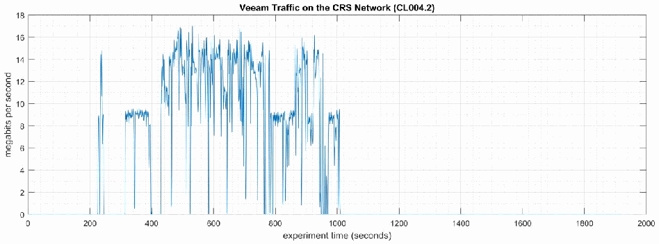
「Veeam Traffic on the CRS Network (CL004.2)」と題した時系列グラフです。縦軸は「megabits per second」で 0〜18、横軸は「experiment time (seconds)」で 0〜2000 です。通信量は約 220 秒で約 14 Mbps に跳ね上がり、約 330〜430 秒は約 9 Mbps で推移し、約 430〜1010 秒は約 2〜17 Mbps の間で大きく変動します。それ以外の時間はほぼ 0 です。
Figure 4-11 - Time series plot showing the rate of network traffic (in megabits per second) transmitted and received by the Veeam tool during the CL004.2 experiment. Network traffic transmitted and received by the vControllers are not shown in this plot.
図4-11 - CL004.2 実験中に Veeam ツールが送受信したネットワークトラフィックの速度（メガビット毎秒）を示す時系列プロット。vController が送受信したネットワークトラフィックは、このプロットには示していません。
Loss-of-view events were observed on the HMI multiple times during the experiment, as evident by the large inter-packet delay measurements between the HMI and Station 1 shown in Figure 4-12. The longest loss-of-view event occurred over 130 sec. in length. Based on the large inter-packet delay measurements, it is hypothesized that the loss-of-view events can also be classified as loss-of-control incidents, although this was not tested during the experiment. All the observed incidents occurred while the Veeam tool was imaging the POLARIS host.
実験中に、HMI で視認喪失イベントが複数回観測されました。これは、図4-12に示す、HMI とステーション1の間のパケット間遅延の測定値が大きいことから明らかです。最も長い視認喪失イベントは、130秒を超えました。パケット間遅延の測定値が大きいことから、視認喪失イベントは制御喪失のインシデントにも分類できるという仮説が立てられますが、これは実験中にはテストされませんでした。観測されたインシデントはすべて、Veeam ツールが POLARIS ホストのイメージを取得している間に発生しました。
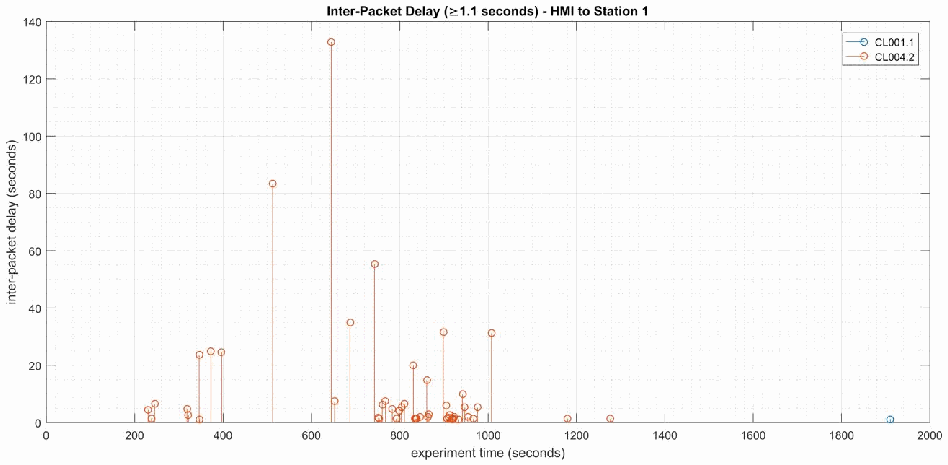
「Inter-Packet Delay (≥1.1 seconds) - HMI to Station 1」と題した幹葉図（ステムプロット）です。縦軸は「inter-packet delay (seconds)」で 0〜140、横軸は「experiment time (seconds)」で 0〜2000 です。凡例は CL001.1（青）と CL004.2（橙）です。CL004.2 では約 230〜1010 秒に多くの遅延があり、多くは 35 秒未満ですが、約 83 秒（約 510 秒付近）、約 55 秒（約 745 秒付近）、約 132 秒（約 645 秒付近）の大きな遅延があります。約 1180 秒と約 1270 秒にも小さな遅延が 2 つあります。CL001.1 は約 1910 秒付近の小さな遅延 1 つだけです。
Figure 4-12 - Stem plot displaying the inter-packet delays (greater than or equal to 1.10 seconds) of Modbus TCP traffic between the HMI and Station 1, as measured during the baseline CL001.2 and experiment CL004.2. Note the large inter-packet delays measured between experiment time 400 to 1000 sec., resulting in multiple HMI loss-of-view events of over 15 seconds, and the largest event over 130 seconds in length.
図4-12 - ベースライン CL001.2 と実験 CL004.2 の間に測定された、HMI とステーション1の間の Modbus TCP トラフィックのパケット間遅延（1.10秒以上）を示すステムプロット。実験時間で400秒から1000秒の間に、大きなパケット間遅延が測定され、15秒を超える HMI の視認喪失イベントが複数回発生し、最大のイベントは130秒を超えていることに注意してください。
The loss-of-view events were likely caused by the large round-trip (RTT) times (shown in Figure 4-13) observed between the HMI and Station 1 while the Veeam tool was imaging the POLARIS host, which were larger than the configured connection timeout value on the HMI (100 msec.). Measurements of the packet path delay (shown in Figure 4-14) show a similar increase, suggesting that one or more of the CRS network devices may have been overloaded while Veeam was active.
視認喪失イベントは、Veeam ツールが POLARIS ホストのイメージを取得している間に、HMI とステーション1の間で観測された大きなラウンドトリップ時間（RTT）（図4-13に示す）が、HMI に設定された接続タイムアウト値（100ミリ秒）よりも大きくなったことが原因である可能性が高いです。パケット経路遅延の測定値（図4-14に示す）にも同様の増加が見られ、Veeam の稼働中に CRS のネットワークデバイスの1つ以上が過負荷になっていた可能性を示唆しています。
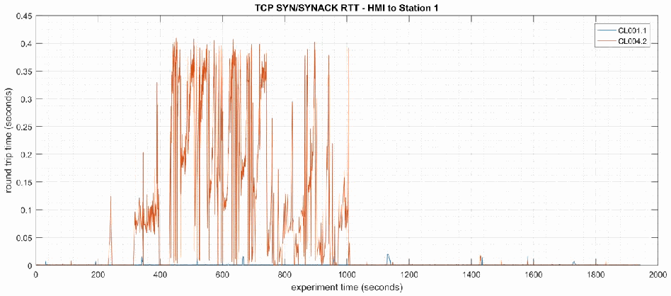
「TCP SYN/SYNACK RTT - HMI to Station 1」と題した時系列グラフです。縦軸は「round trip time (seconds)」で 0〜0.45、横軸は「experiment time (seconds)」で 0〜2000 です。凡例は CL001.1（青）と CL004.2（橙）です。CL004.2 は約 330〜430 秒に約 0.05〜0.15 秒へ上がり、約 430〜1010 秒には最大約 0.41 秒まで変動します。CL001.1 はほぼ 0 で、小さな突出がいくつかあるだけです。
Figure 4-13 - Time-series plot showing the measured round-trip time of SYN and SYN-ACK packets sent between the HMI and Station 1 during the experiment. Large round-trip times (>350 msec.) occurred regularly from 400 seconds to 1000 seconds (experiment time).
図4-13 - 実験中に HMI とステーション1の間で送信された SYN パケットと SYN-ACK パケットの、測定されたラウンドトリップ時間を示す時系列プロット。大きなラウンドトリップ時間（>350ミリ秒）が、（実験時間で）400秒から1000秒まで定期的に発生しました。

左右に並んだ 2 つの時系列グラフです。左は「Packet Path Delay - HMI to Station 1」で縦軸「packet path delay (seconds)」は 0〜0.14、右は「Packet Path Delay - Station 1 to HMI」で縦軸は 0〜0.12 です。横軸はどちらも「experiment time (seconds)」で 0〜2000 です。凡例は CL001.1（青）と CL004.2（橙）です。どちらのグラフでも CL004.2 は約 330〜430 秒に最大約 0.09 秒、約 600〜1000 秒に最大約 0.13 秒（左）または約 0.11 秒（右）の大きな遅延を示します。CL001.1 はおおむね約 0.02 秒未満です。
Figure 4-14 - Time-series plots showing the measured packet path delay Modbus TCP packets sent from the HMI to Station 1 (left) and sent from Station 1 to the HMI (right) during the experiment.
図4-14 - 実験中に HMI からステーション1へ送信された Modbus TCP パケット（左）と、ステーション1から HMI へ送信された Modbus TCP パケット（右）の、測定された経路遅延を示す時系列プロット。
An increase in the robot job actuation time was observed on Robot 1 for Job 102 (see Figure 4-15). No other increases were observed for any of the other jobs. The two increases were measured while the Veeam tool was imaging the two vControllers.
ロボット1のジョブ102で、ロボットのジョブ作動時間の増加が観測されました（図4-15を参照）。ほかのジョブでは増加は観測されませんでした。2回の増加は、Veeam ツールが2つの vController のイメージを取得している間に測定されました。
![Two plots side by side. Left: time series "Robot Jobs Actuation Times per Part", Y axis "job actuation time (sec)" 0.04 to 0.14, X axis "part number" 0 to 35, legend Job 101, Job 102, Job 103, Job 201, Job 202, Job 203. Right: "Robot Jobs Actuation Times Boxplot", Y axis "job actuation time (sec)" 0.04 to 0.13, X axis "job number" 101, 102, 103, 201, 202, 203. Most actuation times lie between about 0.045 and 0.065 sec. Job 102 has two outliers, about 0.08 sec (near part 24) and about 0.133 sec (part 35).](assets/ir-8183av3/p0158-figure-01.png)
左右に並んだ 2 つのグラフです。左は時系列の「Robot Jobs Actuation Times per Part」で、縦軸は「job actuation time (sec)」0.04〜0.14、横軸は「part number」0〜35、凡例は Job 101、Job 102、Job 103、Job 201、Job 202、Job 203 です。右は「Robot Jobs Actuation Times Boxplot」で、縦軸は「job actuation time (sec)」0.04〜0.13、横軸は「job number」101、102、103、201、202、203 です。動作時間の大部分は約 0.045〜0.065 秒です。Job 102 には外れ値が 2 つあり、約 0.08 秒（部品 24 付近）と約 0.133 秒（部品 35）です。
Figure 4-15 - Time-series (left) and boxplot (right) showing the job actuation times for each job during the CL004.2 experiment. Note the two increased actuation times for job 102, which occurred while the Veeam tool was imaging the vControllers.
図4-15 - CL004.2 実験中の各ジョブのジョブ作動時間を示す時系列（左）と箱ひげ図（右）。Veeam ツールが vController のイメージを取得している間に発生した、ジョブ102の2回の作動時間の増加に注意してください。
A slight increase of the part production time variance was observed during this experiment, but it is not statistically significant.
この実験中、部品の生産時間の分散にわずかな増加が観測されましたが、統計的に有意ではありませんでした。

左右に並んだ 2 つの二重ヒストグラムです。左は「Part Production Time Bihistogram」で、縦軸は「count」（-4 to 4）、横軸は「production time (seconds)」（94.2 to 94.7）です。実験の度数を上向きの橙の棒、ベースラインの度数を下向きの青の棒で示します。右は「Bootstrap (34 parts, 1000 iterations)」で、縦軸は「probability」（-0.3 to 0.2）、横軸は「production time (seconds)」（94.36 to 94.5）です。凡例は「Experiment (CL004.2)」（橙、上向き）と「Baseline (CL001.1)」（青、下向き）です。
Figure 4-16 - Bihistograms showing the part production time (left) and estimated mean production time using the bootstrap method (right) using the measurements from baseline CL001.1 and experiment CL004.2.
図4-16 - ベースライン CL001.1 と実験 CL004.2 の測定値を使用した、部品の生産時間（左）と、ブートストラップ法を使用した推定平均生産時間（右）を示すバイヒストグラム。
4.6.6.3 Experiment CL004.3
4.6.6.3 実験 CL004.3
A directory backup of the /opt/ directory on the Engineering Workstation (POLARIS) host was performed for this experiment. The backup was performed from 347 sec. to 1052 sec. (experiment time), and all data was transferred over the CRS network. The network traffic generated by the backup is shown in Figure 4-17.
この実験では、エンジニアリングワークステーション（POLARIS）ホストの /opt/ ディレクトリのディレクトリバックアップを実施しました。バックアップは（実験時間で）347秒から1052秒まで実施され、すべてのデータは CRS ネットワーク経由で転送されました。バックアップによって生成されたネットワークトラフィックを、図4-17に示します。
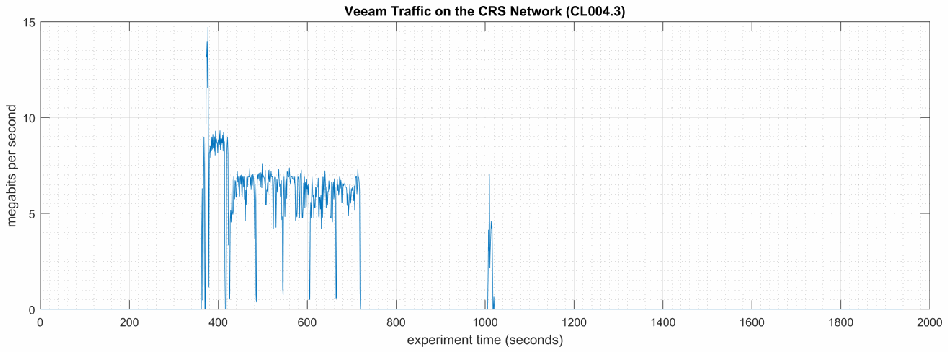
「Veeam Traffic on the CRS Network (CL004.3)」と題した時系列グラフです。縦軸は「megabits per second」で 0〜15、横軸は「experiment time (seconds)」で 0〜2000 です。通信量は約 370 秒で約 14 Mbps に跳ね上がり、約 400 秒までは約 9 Mbps、その後約 720 秒までは約 5〜7 Mbps です。約 1010 秒にも約 7 Mbps の短い突出があり、それ以外はほぼ 0 です。
Figure 4-17 - Time series plot showing the rate of network traffic (in megabits per second) transmitted and received by the Veeam tool during the CL004.3 experiment.
図4-17 - CL004.3 実験中に Veeam ツールが送受信したネットワークトラフィックの速度（メガビット毎秒）を示す時系列プロット。
Loss-of-view events with Station 3 and Station 4 were observed on the HMI multiple times during the experiment. Large inter-packet delay measurements between the HMI and Station 1 are shown in Figure 4-18. The longest loss-of-view event occurred over 9 sec. in length. Based on the large inter-packet delay measurements, it is hypothesized that the loss-of-view events can also be classified as loss-of-control incidents, although this was not tested during the experiment. All the observed incidents occurred while the Veeam tool was actively backing up POLARIS.
実験中に、HMI でステーション3とステーション4の視認喪失イベントが複数回観測されました。HMI とステーション1の間のパケット間遅延の測定値が大きいことを、図4-18に示します。最も長い視認喪失イベントは、9秒を超えました。パケット間遅延の測定値が大きいことから、視認喪失イベントは制御喪失のインシデントにも分類できるという仮説が立てられますが、これは実験中にはテストされませんでした。観測されたインシデントはすべて、Veeam ツールが POLARIS を能動的にバックアップしている間に発生しました。

「Inter-Packet Delay (≥1.1 seconds) - HMI to Station 1」と題したステムプロットです。縦軸は「inter-packet delay (seconds)」で 0〜10、横軸は「experiment time (seconds)」で 0〜2000 です。凡例は CL001.1（青）と CL004.3（橙）です。CL004.3 は約 370〜720 秒に遅延が集中し、多くは 1.2〜3.3 秒ですが、約 4.7 秒と最大の約 9.2 秒（約 380 秒付近）があります。約 910、1010、1160、1370、1440、1730 秒付近にも約 1.2 秒の遅延があります。CL001.1 は約 1910 秒付近に約 1.2 秒の遅延が 1 つあります。
Figure 4-18 - Stem plot showing the inter-packet delays (greater than or equal to 1.10 seconds) of Modbus TCP traffic between the HMI and Station 1, as measured during the baseline CL001.2 and experiment CL004.3. Note the large inter-packet delays measured between experiment time 370 to 700 sec., resulting in multiple HMI loss-of-view events of over 2 seconds, and the largest event over 9 seconds in length.
図4-18 - ベースライン CL001.2 と実験 CL004.3 の間に測定された、HMI とステーション1の間の Modbus TCP トラフィックのパケット間遅延（1.10秒以上）を示すステムプロット。実験時間で370秒から700秒の間に、大きなパケット間遅延が測定され、2秒を超える HMI の視認喪失イベントが複数回発生し、最大のイベントは9秒を超えていることに注意してください。
The loss-of-view events were likely caused by the large round-trip (RTT) times (shown in Figure 4-19) observed between the HMI and Station 1 while the Veeam tool was active, which were larger than the configured connection timeout value on the HMI (100 msec.). Measurements of the packet path delay (shown in Figure 4-20) show a similar increase, suggesting that one or more of the CRS network devices may have been overloaded while Veeam was active.
視認喪失イベントは、Veeam ツールの稼働中に、HMI とステーション1の間で観測された大きなラウンドトリップ時間（RTT）（図4-19に示す）が、HMI に設定された接続タイムアウト値（100ミリ秒）よりも大きくなったことが原因である可能性が高いです。パケット経路遅延の測定値（図4-20に示す）にも同様の増加が見られ、Veeam の稼働中に CRS のネットワークデバイスの1つ以上が過負荷になっていた可能性を示唆しています。
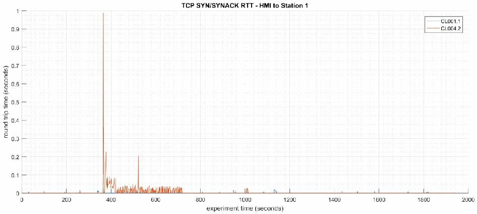
「TCP SYN/SYNACK RTT - HMI to Station 1」と題した時系列グラフです。縦軸は「round trip time (seconds)」で 0〜1、横軸は「experiment time (seconds)」で 0〜2000 です。凡例の表記は CL001.1（青）と CL004.2（橙）です。橙の系列は約 380 秒で約 0.98 秒の最大値となり、その後約 720 秒まで最大約 0.2 秒の値と小さな変動が続き、それ以外はほぼ 0 です。青の系列はほぼ 0 です。
Figure 4-19 - Time-series plot showing the measured round-trip time of SYN and SYN-ACK packets sent between the HMI and Station 1 during the experiment.
図4-19 - 実験中に HMI とステーション1の間で送信された SYN パケットと SYN-ACK パケットの、測定されたラウンドトリップ時間を示す時系列プロット。
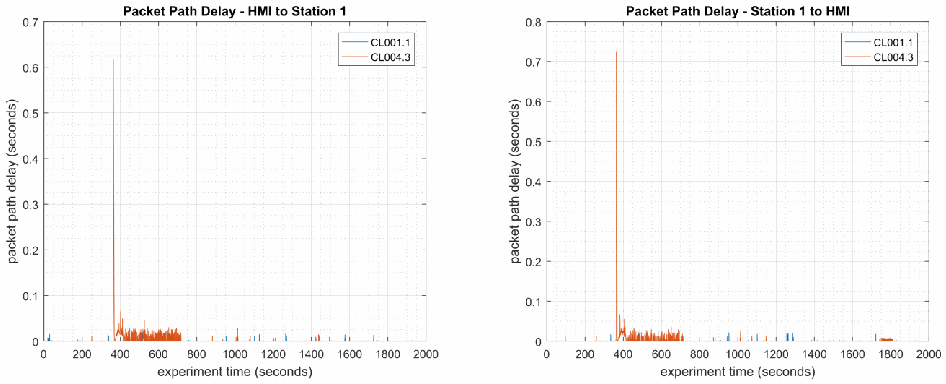
左右に並んだ 2 つの時系列グラフです。左は「Packet Path Delay - HMI to Station 1」で縦軸「packet path delay (seconds)」は 0〜0.7、右は「Packet Path Delay - Station 1 to HMI」で縦軸は 0〜0.8 です。横軸はどちらも「experiment time (seconds)」で 0〜2000 です。凡例は CL001.1（青）と CL004.3（橙）です。CL004.3 は約 380 秒に大きな突出（左は約 0.62 秒、右は約 0.73 秒）があり、その後約 700 秒まで約 0.02〜0.04 秒の小さな遅延が続きます。CL001.1 はほぼ 0 です。
Figure 4-20 - Time-series plots showing the measured packet path delay Modbus TCP packets sent from the HMI to Station 1 (left) and sent from Station 1 to the HMI (right) during the experiment. Note the large path delay of over 600 msec. around 350 sec., followed by consistent delays of around 20 msec. until around 700 sec.
図4-20 - 実験中に HMI からステーション1へ送信された Modbus TCP パケット（左）と、ステーション1から HMI へ送信された Modbus TCP パケット（右）の、測定された経路遅延を示す時系列プロット。350秒付近で600ミリ秒を超える大きな経路遅延があり、その後700秒付近まで約20ミリ秒の遅延が一貫して続いていることを示しています。
A slight increase of the part production time mean was observed during this experiment but it is not statistically significant.
この実験中、部品の生産時間の平均にわずかな増加が観測されましたが、統計的に有意ではありませんでした。

左右に並んだ 2 つの二重ヒストグラムです。左は「Part Production Time Bihistogram」で、縦軸は「count」（-4 to 3）、横軸は「production time (seconds)」（94.15 to 94.6）です。実験の度数を上向きの橙の棒、ベースラインの度数を下向きの青の棒で示します。右は「Bootstrap (34 parts, 1000 iterations)」で、縦軸は「probability」（-0.3 to 0.3）、横軸は「production time (seconds)」（94.3 to 94.5）です。凡例は「Experiment (CL004.3)」（橙、上向き）と「Baseline (CL001.1)」（青、下向き）です。
Figure 4-21 - Bihistograms showing the part production time (left) and estimated mean production time using the bootstrap method (right) using the measurements from baseline CL001.1 and experiment CL004.3.
図4-21 - ベースライン CL001.1 と実験 CL004.3 の測定値を使用した、部品の生産時間（左）と、ブートストラップ法を使用した推定平均生産時間（右）を示すバイヒストグラム。
4.6.7 Links to Entire Performance Measurement Data Set
4.6.7 性能測定データセット全体へのリンク
•CL004.1-HostBackups.zip
•CL004.1-HostBackups.zip
•CL004.2-FullImageBackup.zip
•CL004.2-FullImageBackup.zip
•CL004.3-DirectoryBackup.zip
•CL004.3-DirectoryBackup.zip
4.7 TeamViewer
4.7 TeamViewer
4.7.1 Technical Solution Overview
4.7.1 技術ソリューションの概要
TeamViewer69 is a remote desktop sharing tool that provides secure remote access.
TeamViewer69 は、セキュアなリモートアクセスを提供する、リモートデスクトップ共有ツールです。
4.7.2 Technical Capabilities Provided by Solution
4.7.2 ソリューションが提供する技術的能力
TeamViewer provides components of the following Technical Capabilities described in Section 6 of Volume 1:
TeamViewer は、第1巻の第6節で説明した、次の技術的能力の構成要素を提供します。
•Secure Remote Access
•セキュアなリモートアクセス
Secure Remote Access
セキュアなリモートアクセス
4.7.3 Subcategories Addressed by Implementing Solution
4.7.3 ソリューションの実装によって対処するサブカテゴリ
PR.AC-5, PR.MA-2
PR.AC-5, PR.MA-2
4.7.4 Architecture Map of Where Solution was Implemented
4.7.4 ソリューションを実装した場所のアーキテクチャマップ
![Network architecture map of the Collaborative Robotics System (CRS) testbed, with a legend for the "TeamViewer" traffic. Internet → Corporate Network → Manufacturing System Router/Firewall. Manufacturing DMZ: DMZ Historian 10.100.1.4 on "Manufacturing DMZ LAN - 10.100.1.0/24". Cybersecurity LAN ("Cybersecurity LAN - 10.100.0.0/24"): NTP/PTP Clock 10.100.0.15, Microsoft ActiveDirectory 10.100.0.13,17, Symantec Antivirus - SEPM 10.100.0.5, GTB Data Loss Prev. 10.100.0.175,176, Veeam Backup & Replication 10.100.0.10, Graylog Syslog 10.100.0.14. Workcell #1: CRS LAN Router (NAT) 10.100.0.20 / 192.168.0.2 / 192.168.1.2; "Supervisory LAN - 192.168.0.0/24" with Engineering Workstation 192.168.0.20, Supervisory and Safety PLC's 192.168.0.30, Operator HMI 192.168.0.98, Local Historian 192.168.0.10, Remote I/O 192.168.0.60; "Control LAN - 192.168.1.0/24" with Station 1 to Station 4 (192.168.1.101 to 192.168.1.104), Robot Driver 192.168.1.5 (connected to two robot arms by Field Bus) and Robot Controllers 192.168.1.3,4. A remote user with TeamViewer installed on a PC (TeamViewer logo) connects through the Internet, Corporate Network and Manufacturing System Router/Firewall down to the Cybersecurity Scanning Laptop (TeamViewer Installed, TeamViewer logo) attached to the Supervisory LAN; a red dashed line marks the TeamViewer traffic. Note: "NOTE: Connection present during TeamViewer session".](assets/ir-8183av3/p0163-figure-02.png)
協働ロボットシステム（CRS）試験環境のネットワーク構成図で、「TeamViewer」の通信を示す凡例があります。Internet → Corporate Network → Manufacturing System Router/Firewall と接続します。Manufacturing DMZ には「Manufacturing DMZ LAN - 10.100.1.0/24」上の DMZ Historian 10.100.1.4 があります。Cybersecurity LAN（「Cybersecurity LAN - 10.100.0.0/24」）には NTP/PTP Clock 10.100.0.15、Microsoft ActiveDirectory 10.100.0.13,17、Symantec Antivirus - SEPM 10.100.0.5、GTB Data Loss Prev. 10.100.0.175,176、Veeam Backup & Replication 10.100.0.10、Graylog Syslog 10.100.0.14 があります。Workcell #1 には CRS LAN Router (NAT) 10.100.0.20 / 192.168.0.2 / 192.168.1.2 があり、「Supervisory LAN - 192.168.0.0/24」に Engineering Workstation 192.168.0.20、Supervisory and Safety PLC's 192.168.0.30、Operator HMI 192.168.0.98、Local Historian 192.168.0.10、Remote I/O 192.168.0.60、「Control LAN - 192.168.1.0/24」に Station 1〜Station 4（192.168.1.101〜192.168.1.104）、Robot Driver 192.168.1.5（Field Bus で 2 台のロボットアームに接続）、Robot Controllers 192.168.1.3,4 があります。TeamViewer をインストールした PC の遠隔利用者（TeamViewer のロゴ付き）が、Internet、Corporate Network、Manufacturing System Router/Firewall を経て、Supervisory LAN に接続した Cybersecurity Scanning Laptop（TeamViewer Installed、TeamViewer のロゴ付き）に接続します。赤い破線が TeamViewer の通信を示します。注記は「NOTE: Connection present during TeamViewer session」です。
4.7.5 Installation Instructions and Configurations
4.7.5 インストール手順と構成
Details of the solution implemented:
実装したソリューションの詳細：
| Name | Version | Hardware Details |
|---|---|---|
| TeamViewer | 14 | Laptop with the following specs.
|
| 名称 | バージョン | ハードウェアの詳細 |
|---|---|---|
| TeamViewer | 14 | 次の仕様のノートパソコン。
|
4.7.5.1 Environment setup
4.7.5.1 環境のセットアップ
1.A temporary laptop (referred as Cybersecurity scanning laptop) with TeamViewer installed and was setup on an on-demand basis. The scanning laptop had internet access via wireless along with a connection to the Work-cell by connecting a physical network connection to the Layer-2 switch of the Supervisory LAN network.
1.TeamViewer をインストールした臨時のノートパソコン（サイバーセキュリティスキャン用ノートパソコンと呼ぶ）を、必要に応じて用意しました。スキャン用ノートパソコンは、無線でインターネットにアクセスできるとともに、監督用 LAN ネットワークのレイヤー2スイッチに物理的に接続することで、ワークセルにも接続しました。
2.The guest OS IP information of this system was set as follows:
2.このシステムのゲスト OS の IP 情報は次のように設定しました。
IP address: 192.168.0.11
Gateway: 192.168.0.2
Subnet Mask: 255.255.255.0
DNS:10.100.0.17
IP address: 192.168.0.11
Gateway: 192.168.0.2
Subnet Mask: 255.255.255.0
DNS:10.100.0.17
3.To complete a connection, the remote user needs to have TeamViewer installed on his/her computer too. The Cybersecurity scanning laptop was used a jump box for installing TeamViewer and connecting remotely to the work-cell network within.
3.接続を完了するには、リモートユーザーも自分のコンピューターに TeamViewer をインストールしている必要があります。サイバーセキュリティスキャン用ノートパソコンをジャンプボックスとして使用し、TeamViewer をインストールしてワークセルネットワークにリモートから接続しました。
4.7.5.2 Setup Instructions
4.7.5.2 セットアップ手順
•Download TeamViewer70 on a supported OS computer.
•サポートされている OS のコンピュータに、TeamViewer をダウンロードする70。
•Run the installer (.msi for Windows) to complete the installation. Ensure to have internet access on this computer.
•インストーラー（Windows では .msi）を実行して、インストールを完了します。このコンピュータでインターネットにアクセスできることを確認します。
•Repeat steps 1 and 2 on the remote user’s computer as well.
•リモートユーザーのコンピュータでも、手順1と2を繰り返します。
4.7.5.3 Using TeamViewer
4.7.5.3 TeamViewer の使用
1.Perform the following steps on the on-premise system acting as the Jump box.
1.ジャンプボックスとして機能するオンプレミスのシステムで、次の手順を実行します。
a.Launch TeamViewer. Note down the ID and password displayed on the screen. For example
a.TeamViewer を起動します。画面に表示される ID とパスワードを書き留めます。たとえば、
［第三者の画像。第三者の著作物のため、この非公式サイトには掲載していません。原本 PDF を参照してください。］
2.Convey this information (ID and password) to the remote user.
2.この情報（ID とパスワード）をリモートユーザーに伝えます。
3.Perform the following actions on the remote user’s computer:
3.リモートユーザーのコンピュータで、次の操作を実行します。
•Enter the ID provided in the Partner ID box.
•Partner ID ボックスに、提供された ID を入力します。
•Select Remote Control.
•Remote Control を選択します。
•Click Connect button to initiate a session.
•Connect ボタンをクリックして、セッションを開始します。
•Enter password as prompted.
•求められたら、パスワードを入力します。
Two factor authentication71 was configured for this connection.
この接続には、二要素認証71 を構成しました。
Once the connection is established, the remote user should be able to access the Desktop of the Destination system. For instance, in our case the HMI Panel was accessed off a browser on the Cybersecurity Scanning laptop to perform maintenance on the HMI.
接続が確立されると、リモートユーザーは接続先システムのデスクトップにアクセスできるはずです。たとえば、このケースでは、HMI の保守を行うため、サイバーセキュリティスキャン用ノートパソコンのブラウザーから HMI パネルにアクセスしました。
［NIST のロゴが写っている図。公的な標章のため、この非公式サイトには掲載していません。原本 PDF を参照してください。］
4.7.6 Highlighted Performance Impacts
4.7.6 注目すべき性能への影響
No performance measurement experiments were performed for the use of Team Viewer due to its intended usage (i.e., Team Viewer was installed on a laptop that is attached to the network only during maintenance and engineering activities).
Team Viewer の使用については、その想定される使い方（Team Viewer は、保守・エンジニアリング作業中にのみネットワークに接続するノートパソコンにインストールした）の都合上、性能測定の実験を実施しませんでした。
4.7.7 Links to Entire Performance Measurement Data Set
4.7.7 性能測定データセット全体へのリンク
N/A
N/A
4.8 Microsoft Active Directory
4.8 Microsoft Active Directory
4.8.1 Technical Solution Overview
4.8.1 技術ソリューションの概要
Active Directory (AD) is a directory service developed by Microsoft for Windows domain networks. A directory is a hierarchical structure that stores information about objects on the network. A directory service, such as Active Directory Domain Services (AD DS), provides the methods for storing directory data and making this data available to network users and administrators. For example, AD DS stores information about user accounts, such as names, passwords, phone numbers, and so on, and enables other authorized users on the same network to access this information. A server running Active Directory Domain Services (AD DS) is called a domain controller. It authenticates and authorizes all users and computers in a Windows domain type network—assigning and enforcing security policies for all computers and installing or updating software. Active Directory uses Lightweight Directory Access Protocol (LDAP) versions 2 and 3, Microsoft's version of Kerberos and DNS.72
Active Directory（AD）は、Microsoft が Windows ドメインネットワーク向けに開発した、ディレクトリサービスです。ディレクトリは、ネットワーク上のオブジェクトに関する情報を格納する階層構造です。Active Directory Domain Services（AD DS）などのディレクトリサービスは、ディレクトリデータを格納し、そのデータをネットワークのユーザーや管理者が利用できるようにする方法を提供します。たとえば AD DS は、ユーザーアカウントに関する情報（名前、パスワード、電話番号など）を格納し、同じネットワーク上のほかの認可されたユーザーがこの情報にアクセスできるようにします。Active Directory Domain Services（AD DS）が動作しているサーバーは、ドメインコントローラーと呼ばれます。ドメインコントローラーは、Windows ドメイン型ネットワーク内のすべてのユーザーとコンピュータを認証し、認可します。すべてのコンピュータにセキュリティポリシーを割り当てて適用し、ソフトウェアをインストールまたは更新します。Active Directory は、Lightweight Directory Access Protocol（LDAP）のバージョン2と3、Microsoft 版の Kerberos、DNS を使用します。72
Points to consider:
考慮すべき点：
•Cost of infrastructure can get high.
•インフラのコストが高くなる場合があります。
•Requires expertise to setup and maintain. Setup involves detailed planning.
•セットアップと保守に専門知識が必要です。セットアップには、詳細な計画が必要です。
•It is prone to being hacked.
•ハッキングされやすいです。
4.8.2 Technical Capabilities Provided by Solution
4.8.2 ソリューションが提供する技術的能力
Microsoft Active Directory provides components of the following Technical Capabilities described in Section 6 of Volume 1:
Microsoft Active Directory は、第1巻の第6節で説明した、次の技術的能力の構成要素を提供します。
•Credential Management
•認証情報の管理
•Authentication and Authorization
•認証と認可
4.8.3 Subcategories Addressed by Implementing Solution
4.8.3 ソリューションの実装によって対処するサブカテゴリ
PR.AC-1, PR.MA-1, PR.MA-2, PR-PT-3, PR.PT-4, DE.CM-3
PR.AC-1, PR.MA-1, PR.MA-2, PR-PT-3, PR.PT-4, DE.CM-3
4.8.4 Architecture Map of Where Solution was Implemented
4.8.4 ソリューションを実装した場所のアーキテクチャマップ
![Network architecture map of the Collaborative Robotics System (CRS) testbed, with a legend for the "Active Directory" traffic. Internet → Corporate Network → Manufacturing System Router/Firewall. Manufacturing DMZ: DMZ Historian 10.100.1.4 on "Manufacturing DMZ LAN - 10.100.1.0/24". Cybersecurity LAN ("Cybersecurity LAN - 10.100.0.0/24"): NTP/PTP Clock 10.100.0.15, Microsoft ActiveDirectory 10.100.0.13,17, Symantec Antivirus - SEPM 10.100.0.5, GTB Data Loss Prev. 10.100.0.175,176, Veeam Backup & Replication 10.100.0.10, Graylog Syslog 10.100.0.14. Workcell #1: CRS LAN Router (NAT) 10.100.0.20 / 192.168.0.2 / 192.168.1.2; "Supervisory LAN - 192.168.0.0/24" with Engineering Workstation 192.168.0.20, Supervisory and Safety PLC's 192.168.0.30, Operator HMI 192.168.0.98, Local Historian 192.168.0.10, Remote I/O 192.168.0.60; "Control LAN - 192.168.1.0/24" with Station 1 to Station 4 (192.168.1.101 to 192.168.1.104), Robot Driver 192.168.1.5 (connected to two robot arms by Field Bus) and Robot Controllers 192.168.1.3,4. Blue lines and Active Directory icons mark the hosts joined to Active Directory (the Active Directory servers, Symantec, Veeam, Engineering Workstation, Robot Driver, Robot Controllers and the Cybersecurity Scanning Laptop). The Cybersecurity Scanning Laptop (Nessus, OpenAudIT) 192.168.0.11.12 is attached to the Supervisory LAN by a dashed line with the note "NOTE: Connection present only during vulnerability and asset scanning."; the CRS LAN Router is labeled 10.100.0.20/32.](assets/ir-8183av3/p0168-figure-02.png)
協働ロボットシステム（CRS）試験環境のネットワーク構成図で、「Active Directory」の通信を示す凡例があります。インターネット → 企業ネットワーク → 製造システムルーター／ファイアウォールと接続します。製造DMZには、「製造DMZ LAN - 10.100.1.0/24」上のDMZ Historian 10.100.1.4があります。サイバーセキュリティLAN（「Cybersecurity LAN - 10.100.0.0/24」）には、NTP/PTP Clock 10.100.0.15、Microsoft ActiveDirectory 10.100.0.13,17、Symantec Antivirus - SEPM 10.100.0.5、GTB Data Loss Prev. 10.100.0.175,176、Veeam Backup & Replication 10.100.0.10、Graylog Syslog 10.100.0.14があります。Workcell #1には、CRS LAN Router (NAT) 10.100.0.20 / 192.168.0.2 / 192.168.1.2があります。「Supervisory LAN - 192.168.0.0/24」には、Engineering Workstation 192.168.0.20、Supervisory and Safety PLC's 192.168.0.30、Operator HMI 192.168.0.98、Local Historian 192.168.0.10、Remote I/O 192.168.0.60があります。「Control LAN - 192.168.1.0/24」には、Station 1〜Station 4（192.168.1.101〜192.168.1.104）、Robot Driver 192.168.1.5（フィールドバス経由で2台のロボットアームに接続）、Robot Controllers 192.168.1.3,4があります。青い線とActive Directoryのアイコンは、Active Directoryに参加しているホスト（Active Directoryサーバー、Symantec、Veeam、Engineering Workstation、Robot Driver、Robot Controllers、Cybersecurity Scanning Laptop）を示します。Cybersecurity Scanning Laptop (Nessus, OpenAudIT) 192.168.0.11.12は、脆弱性および資産のスキャン時のみ接続する旨の注記（「NOTE: Connection present only during vulnerability and asset scanning.」）とともに、破線でSupervisory LANに接続されています。CRS LAN Routerには「10.100.0.20/32」と記されています。
4.8.5 Installation Instructions and Configurations
4.8.5 インストール手順と構成
Details of the environment:
環境の詳細：
| Hostname | Roles | Domain Name | Hardware Details |
|---|---|---|---|
| LAN-AD | Active Directory, DNS Server | LAN.lab | Hyper-V Virtual Machine (Generation 2):
|
| LAN-AD02 | Active Directory, DNS Server | LAN.lab | Hyper-V Virtual Machine (Generation 2):
|
| ホスト名 | 役割 | ドメイン名 | ハードウェアの詳細 |
|---|---|---|---|
| LAN-AD | Active Directory、DNS サーバー | LAN.lab | Hyper-V 仮想マシン（第2世代）：
|
| LAN-AD02 | Active Directory、DNS サーバー | LAN.lab | Hyper-V 仮想マシン（第2世代）：
|
4.8.5.1 Environment Setup
4.8.5.1 環境のセットアップ
1.Two virtual machines, each running Windows 2012 R2 were setup on a Hyper-V host server of the Cybersecurity LAN network for authenticating Linux devices. The hardware specifications of these are described in the table above.
1.Linux デバイスを認証するために、サイバーセキュリティ LAN ネットワークの Hyper-V ホストサーバー上に、Windows 2012 R2 が動作する仮想マシンを2台セットアップしました。これらのハードウェア仕様は上の表のとおりです。
2.The guest OS IP information of these servers was set as follows:
2.これらのサーバーのゲスト OS の IP 情報は次のように設定しました。
Hostname: LAN-AD
IP address: 10.100.0.5
Gateway: 10.100.0.1
Subnet Mask: 255.255.255.0
DNS:127.0.0.1, 10.100.0.13
Hostname: LAN-AD
IP address: 10.100.0.5
Gateway: 10.100.0.1
Subnet Mask: 255.255.255.0
DNS:127.0.0.1, 10.100.0.13
Hostname: LAN-AD02
IP address: 10.100.0.13
Gateway: 10.100.0.1
Subnet Mask: 255.255.255.0
DNS:10.100.0.17,127.0.0.1
Hostname: LAN-AD02
IP address: 10.100.0.13
Gateway: 10.100.0.1
Subnet Mask: 255.255.255.0
DNS:10.100.0.17,127.0.0.1
4.8.5.2 Installing Active Directory Domain Services & DNS Server
4.8.5.2 Active Directory Domain Services と DNS サーバーのインストール
Prerequisites
前提条件
Windows 2012 R2 server (preferably two for redundancy) up to date on patches, static IP address assigned with primary DNS server set to 127.0.0.1 (localhost)
パッチが最新の状態の Windows 2012 R2 サーバー（冗長化のため2台が望ましい）。静的 IP アドレスを割り当て、プライマリ DNS サーバーを 127.0.0.1（localhost）に設定します。
1.Launch the Windows Server Manager and click on Add Roles and Features
1.Windows のサーバーマネージャーを起動し、Add Roles and Features をクリックする
2.Click “Next” at the first page as shown below
2.次のように、最初のページで「Next」をクリックする
［第三者の画像。第三者の著作物のため、この非公式サイトには掲載していません。原本 PDF を参照してください。］
3.Select Role Based or Feature Based Installation under Installation Type
3.Installation Type で、Role Based or Feature Based Installation を選択する
［第三者の画像。第三者の著作物のため、この非公式サイトには掲載していません。原本 PDF を参照してください。］
4.Select Active Directory Domain Services and DNS Server to install. Click Next.
4.インストールする Active Directory Domain Services と DNS Server を選択します。Next をクリックします。
［第三者の画像。第三者の著作物のため、この非公式サイトには掲載していません。原本 PDF を参照してください。］
5.Click Next on the Features screen, leave the default options selected,
5.Features 画面で Next をクリックし、デフォルトのオプションを選択したままにします。
6.Click Next on the AD DS screen and the following DNS Server screen as well.
6.AD DS 画面と、それに続く DNS Server 画面でも Next をクリックします。
［第三者の画像。第三者の著作物のため、この非公式サイトには掲載していません。原本 PDF を参照してください。］
7.Verify your settings on the Confirmation screen. Click Install to proceed.
7.Confirmation 画面で設定を確認します。Install をクリックして先へ進みます。
［第三者の画像。第三者の著作物のため、この非公式サイトには掲載していません。原本 PDF を参照してください。］
8.Wait till the installation process completes and shows an Installation succeeded message. Hit Close button.
8.インストールプロセスが完了し、Installation succeeded というメッセージが表示されるまで待ちます。Close ボタンを押します。
［第三者の画像。第三者の著作物のため、この非公式サイトには掲載していません。原本 PDF を参照してください。］
9.Launch Server Manager again and click on Promote this server to a domain controller.
9.サーバーマネージャーを再度起動し、Promote this server to a domain controller をクリックします。
［第三者の画像。第三者の著作物のため、この非公式サイトには掲載していません。原本 PDF を参照してください。］
10.Select Add a new forest on the Deployment Configuration step, as this would be a new domain controller in a new forest. Mention a Root Domain name as applicable to your environment.
10.Deployment Configuration の手順で Add a new forest を選択します。これは、新しいフォレスト内の新しいドメインコントローラーとなるためです。環境に適した Root Domain name を指定します。
［第三者の画像。第三者の著作物のため、この非公式サイトには掲載していません。原本 PDF を参照してください。］
11.Set a Directory Services Restore Mode password in the next step. Click Next.
11.次の手順で、Directory Services Restore Mode のパスワードを設定します。Next をクリックします。
［第三者の画像。第三者の著作物のため、この非公式サイトには掲載していません。原本 PDF を参照してください。］
12.Under “DNS Options” leave the default options selected. Click Next.
12.「DNS Options」では、デフォルトのオプションを選択したままにします。Next をクリックします。
［第三者の画像。第三者の著作物のため、この非公式サイトには掲載していません。原本 PDF を参照してください。］
13.Confirm the NETBIOS domain name under Additional Options. Click Next.
13.Additional Options で NETBIOS ドメイン名を確認します。Next をクリックします。
［第三者の画像。第三者の著作物のため、この非公式サイトには掲載していません。原本 PDF を参照してください。］
14.Leave the default folder paths as it is Under Paths. Click Next.
14.Paths で、デフォルトのフォルダーパスをそのままにします。Next をクリックします。
［第三者の画像。第三者の著作物のため、この非公式サイトには掲載していません。原本 PDF を参照してください。］
15.Confirm all the settings On the Review Options page. Click Next.
15.Review Options ページで、すべての設定を確認します。Next をクリックします。
16.Click Install on the Prerequisites Check to launch the installation process. The server will auto reboot upon completion.
16.Prerequisites Check で Install をクリックして、インストールプロセスを開始します。完了すると、サーバーは自動的に再起動します。
［第三者の画像。第三者の著作物のため、この非公式サイトには掲載していません。原本 PDF を参照してください。］
17.Login with domain administrator credentials upon reboot. Open Server Manager and click on Active Directory Users and Computers under Tools to manage your AD.
17.再起動後、ドメイン管理者の認証情報でログインします。サーバーマネージャーを開き、Tools の下にある Active Directory Users and Computers をクリックして、AD を管理します。
［第三者の画像。第三者の著作物のため、この非公式サイトには掲載していません。原本 PDF を参照してください。］
4.8.5.3 Joining Linux Systems to Active Directory Domain
4.8.5.3 Linux システムの Active Directory ドメインへの参加
All the Linux systems from the work-cell were joined to the AD domain lan.lab using Centrify Express. The initial domain join process is a onetime task and involves a system restart. The procedure to join Ubuntu Linux Systems to Active Directory domain using Centrify is mentioned below. In addition, DNS records for each Linux host were manually created on the Active Directory server.
ワークセルのすべての Linux システムは、Centrify Express を使用して、AD ドメイン lan.lab に参加させました。最初のドメイン参加のプロセスは1回限りの作業であり、システムの再起動を伴います。Centrify を使用して Ubuntu Linux システムを Active Directory ドメインに参加させる手順を、以下に示します。さらに、各 Linux ホストの DNS レコードは、Active Directory サーバー上に手動で作成しました。
4.8.5.4 Installing Centrify
4.8.5.4 Centrify のインストール
Prerequisites
前提条件
Connectivity between your Linux clients and AD server: Ensure the Linux clients can reach the AD Domain Controller. Configure the appropriate DNS settings on the Linux client. Set the search domain to domain name of Active Directory. Verify the DNS-settings in the /etc/resolv.conf file of your Linux server.
Linux クライアントと AD サーバーの間の接続性：Linux クライアントが AD ドメインコントローラーに到達できることを確認します。Linux クライアントに、適切な DNS 設定を構成します。検索ドメインを Active Directory のドメイン名に設定します。Linux サーバーの /etc/resolv.conf ファイルで、DNS 設定を確認します。
The following instructions are for a Debian/Ubuntu system:
次の手順は、Debian/Ubuntu システム向けです。
1.Download the Centrify Express (CentrifyDC) free package from https://launchpad.net or https://www.centrify.com/express/linux/download/ as per CPU architecture of the Linux client.
1.Linux クライアントの CPU アーキテクチャに応じて、https://launchpad.net または https://www.centrify.com/express/linux/download/ から、Centrify Express（CentrifyDC）の無料パッケージをダウンロードします。
2.Install the package: dpkg -i <package_name>
2.パッケージをインストールする：dpkg -i <package_name>
3.Install any dependencies if prompted. Re-run when done.
3.促された場合は、依存関係をインストールします。完了したら再度実行します。
![Terminal window (white text on a dark background) showing the following output: "root@rigel:/home/icssec# dpkg -i /media/CDROM/centrifydc_5.1.1-831-0ubuntu1_amd64.deb / Selecting previously unselected package centrifydc. / (Reading database ... 270726 files and directories currently installed.) / Unpacking centrifydc (from .../centrifydc_5.1.1-831-0ubuntu1_amd64.deb) ... / Setting up centrifydc (5.1.1-831-0ubuntu1) ... / Processing triggers for man-db ... / Processing triggers for ureadahead ... / Processing triggers for libc-bin ... / ldconfig deferred processing now taking place / root@rigel:/home/icssec#"](assets/ir-8183av3/p0178-figure-01.png)
暗い背景に白い文字の端末画面で、次の出力が表示されています。"root@rigel:/home/icssec# dpkg -i /media/CDROM/centrifydc_5.1.1-831-0ubuntu1_amd64.deb / Selecting previously unselected package centrifydc. / (Reading database ... 270726 files and directories currently installed.) / Unpacking centrifydc (from .../centrifydc_5.1.1-831-0ubuntu1_amd64.deb) ... / Setting up centrifydc (5.1.1-831-0ubuntu1) ... / Processing triggers for man-db ... / Processing triggers for ureadahead ... / Processing triggers for libc-bin ... / ldconfig deferred processing now taking place / root@rigel:/home/icssec#"
4.Run the command adlicense --express to activate the free express mode.
4.コマンド adlicense --express を実行して、無料の express モードを有効にします。
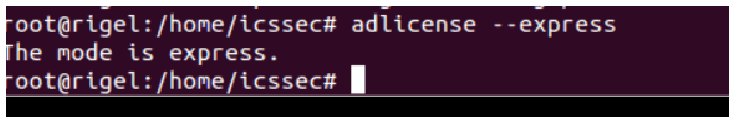
暗い背景に白い文字の端末画面で、次の出力が表示されています。"root@rigel:/home/icssec# adlicense --express / The mode is express. / root@rigel:/home/icssec#"
5.Run the command: adjoin --workstation domain-name. This will prompt you to enter a Domain Administrator password.
5.コマンド adjoin --workstation domain-name を実行します。ドメイン管理者のパスワードの入力を求められます。
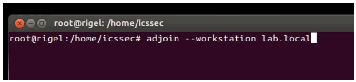
暗い背景に白い文字の端末画面で、次の出力が表示されています。"root@rigel: /home/icssec" (title bar) / "root@rigel:/home/icssec# adjoin --workstation lab.local"
6.Run adinfo to verify the domain join status. The CentrifyDC mode should show as connected.
6.adinfo を実行して、ドメイン参加の状態を確認します。CentrifyDC のモードは connected と表示されるべきです。
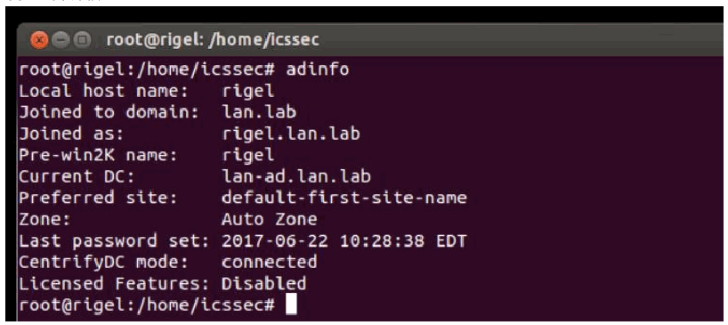
暗い背景に白い文字の端末画面で、次の出力が表示されています。"root@rigel:/home/icssec# adinfo / Local host name: rigel / Joined to domain: lan.lab / Joined as: rigel.lan.lab / Pre-win2K name: rigel / Current DC: lan-ad.lan.lab / Preferred site: default-first-site-name / Zone: Auto Zone / Last password set: 2017-06-22 10:28:38 EDT / CentrifyDC mode: connected / Licensed Features: Disabled / root@rigel:/home/icssec#"
7.Login to the Linux host using AD credentials.
7.AD の認証情報で、Linux ホストにログインします。
a.For example: ssh username.domain-name@hostname.domain-name
a.例：ssh username.domain-name@hostname.domain-name
b.OR by entering <Domain-Name\Username> on a Desktop based version
b.または、デスクトップ版では <Domain-Name\Username> を入力します。
8.Enable sudo for AD-resources using the following steps
8.次の手順で、AD のリソースに対して sudo を有効にします。
a.Add the following line in /etc/sudoers file (using the command visudo) to make an AD Domain Group a sudoer
a.AD ドメイングループを sudoer にするために、/etc/sudoers ファイルに（visudo コマンドを使用して）次の行を追加します。
%adgroup ALL=(ALL) ALL
%adgroup ALL=(ALL) ALL
Where, adgroup, is a group from the Active directory. The group names from active directory are transformed into all lower-case letters with underscores replacing spaces. For instance, %domain_admins for the Domain Admins group.
ここで adgroup は、Active Directory のグループです。Active Directory のグループ名は、すべて小文字に変換され、スペースはアンダースコアに置き換えられます。たとえば、Domain Admins グループの場合は %domain_admins となります。
4.8.6 Highlighted Performance Impacts
4.8.6 注目すべき性能への影響
One performance measurement experiment was performed for the Active Directory service while the manufacturing system was operational:
製造システムの稼働中に、Active Directory サービスについて1つの性能測定の実験を実施しました。
1.CL002.1 - The Active Directory service is installed and running on CRS hosts.
1.CL002.1 - Active Directory サービスが CRS ホストにインストールされ、稼働しています。
4.8.6.1 Experiment CL002.1
4.8.6.1 実験 CL002.1
No performance impact to the manufacturing process was measured during the experiment.
実験中に、製造プロセスへの性能上の影響は測定されませんでした。

左右に並んだ 2 つの二重ヒストグラムです。左は「Part Production Time Bihistogram」で、縦軸は「count」（-4 to 4）、横軸は「production time (seconds)」（94.15 to 94.6）です。実験の度数を上向きの橙の棒、ベースラインの度数を下向きの青の棒で示します。右は「Bootstrap (34 parts, 1000 iterations)」で、縦軸は「probability」（-0.3 to 0.3）、横軸は「production time (seconds)」（94.32 to 94.48）です。凡例は「Experiment (CL002.1)」（橙、上向き）と「Baseline (CL001.1)」（青、下向き）です。
Figure 4-22 - Bihistograms showing the part production time (left) and estimated mean production time using the bootstrap method (right) using the measurements from baseline CL001.1 and experiment CL002.1.
図4-22 - ベースライン CL001.1 と実験 CL002.1 の測定値を使用した、部品の生産時間（左）と、ブートストラップ法を使用した推定平均生産時間（右）を示すバイヒストグラム。
4.8.7 Link to Entire Performance Measurement Data Set
4.8.7 性能測定データセット全体へのリンク
•CL002.1-ActiveDir.zip
•CL002.1-ActiveDir.zip
4.9 Symantec Endpoint Protection
4.9 Symantec Endpoint Protection
4.9.1 Technical Solution Overview
4.9.1 技術ソリューションの概要
Symantec Endpoint Protection (SEP)73 is an endpoint protection solution that can help defend against ransomware and other emerging threats.
Symantec Endpoint Protection（SEP）73 は、ランサムウェアやその他の新たな脅威からの防御に役立つ、エンドポイント保護ソリューションです。
Points to consider:
考慮すべき点：
•Next Generation Antivirus / Endpoint protection solution to prevent against virus attacks and emerging cyber threats such as zero-day attacks, ransomware etc.
•ウイルス攻撃や、ゼロデイ攻撃、ランサムウェアなどの新たなサイバー脅威を防ぐ、次世代のウイルス対策／エンドポイント保護ソリューション。
•OS Platform independent: The endpoint agents are supported on Windows and Linux.
•OS プラットフォームに依存しない：エンドポイントエージェントは、Windows と Linux でサポートされています。
•Comes with a lightweight agent and virus definition sets that require minimal network bandwidth.
•必要なネットワーク帯域幅が最小限の、軽量なエージェントとウイルス定義セットを備えています。
•Diverse Feature set: Core capabilities include Antivirus, Host Firewall, Intrusion Prevention, Host Integrity, System lockdown, Application White listing and USB Device Control.
•多様な機能セット：主な機能には、ウイルス対策、ホストファイアウォール、侵入防止、ホスト完全性、システムロックダウン、アプリケーションのホワイトリスト化、USB デバイス制御があります。
•Centralized Management: All endpoints, rule sets, policies can be centrally managed from the Symantec Endpoint Manager console.
•一元管理：すべてのエンドポイント、ルールセット、ポリシーを、Symantec Endpoint Manager コンソールから一元的に管理できます。
•The Symantec Manager component is supported only on Windows OS.
•Symantec Manager コンポーネントは、Windows OS でのみサポートされています。
•The Linux agent requires the OS kernel on Linux systems to be at a certain level for installation. In addition, the Linux agent is a 32-bit installer. If installing on a 64-bit Linux system, it requires certain 32-bit packages/libraries to be installed as a prerequisite. This may conflict with some of the existing packages on the system.
•Linux エージェントは、インストールに、Linux システムの OS カーネルが一定のレベルであることを必要とします。さらに、Linux エージェントは 32 ビットのインストーラーです。64 ビットの Linux システムにインストールする場合は、前提条件として、特定の 32 ビットのパッケージやライブラリをインストールする必要があります。これは、システム上の既存のパッケージの一部と競合する場合があります。
•The endpoint agent on each system by default needs to communicate outbound with a range of public IP addresses for its Reputation analysis and Global Threat intelligence feature. It is recommended to allow this traffic from your firewall to leverage the advanced features of the product.
•各システムのエンドポイントエージェントは、レピュテーション分析とグローバル脅威インテリジェンス機能のために、デフォルトで一定範囲のパブリック IP アドレスとアウトバウンド通信する必要があります。製品の高度な機能を利用するため、この通信をファイアウォールで許可すべきです。
•Important: System reboot is required to complete the installation process on clients/endpoints.
•重要：クライアント／エンドポイントでインストールプロセスを完了するには、システムの再起動が必要です。
4.9.2 Technical Capabilities Provided by Solution
4.9.2 ソリューションが提供する技術的能力
Symantec Endpoint Protection provides components of the following Technical Capabilities described in Section 6 of Volume 1:
Symantec Endpoint Protection は、第1巻の第6節で説明した、次の技術的能力の構成要素を提供します。
•Anti-virus/malware
•ウイルス・マルウェア対策
4.9.3 Subcategories Addressed by Implementing Solution
4.9.3 ソリューションの実装によって対処するサブカテゴリ
DE.CM-4
DE.CM-4
4.9.4 Architecture Map of Where Solution was Implemented
4.9.4 ソリューションを実装した場所のアーキテクチャマップ
![Network architecture map of the Collaborative Robotics System (CRS) testbed, with a legend for the "Symantec AV" traffic. Internet → Corporate Network → Manufacturing System Router/Firewall. Manufacturing DMZ: DMZ Historian 10.100.1.4 on "Manufacturing DMZ LAN - 10.100.1.0/24". Cybersecurity LAN ("Cybersecurity LAN - 10.100.0.0/24"): NTP/PTP Clock 10.100.0.15, Microsoft ActiveDirectory 10.100.0.13,17, Symantec Antivirus - SEPM 10.100.0.5, GTB Data Loss Prev. 10.100.0.175,176, Veeam Backup & Replication 10.100.0.10, Graylog Syslog 10.100.0.14. Workcell #1: CRS LAN Router (NAT) 10.100.0.20 / 192.168.0.2 / 192.168.1.2; "Supervisory LAN - 192.168.0.0/24" with Engineering Workstation 192.168.0.20, Supervisory and Safety PLC's 192.168.0.30, Operator HMI 192.168.0.98, Local Historian 192.168.0.10, Remote I/O 192.168.0.60; "Control LAN - 192.168.1.0/24" with Station 1 to Station 4 (192.168.1.101 to 192.168.1.104), Robot Driver 192.168.1.5 (connected to two robot arms by Field Bus) and Robot Controllers 192.168.1.3,4. Yellow lines and Symantec AV shield icons mark the hosts with the Symantec agent (DMZ Historian, Active Directory, Symantec Antivirus - SEPM, Veeam, Engineering Workstation, Local Historian, Robot Driver and Robot Controllers). The Cybersecurity Scanning Laptop (Nessus, OpenAudIT) 192.168.0.11.12 is attached by a dashed line with the note "NOTE: Connection present only during vulnerability and asset scanning."; the CRS LAN Router is labeled 10.100.0.20/32.](assets/ir-8183av3/p0182-figure-02.png)
協働ロボットシステム（CRS）試験環境のネットワーク構成図で、「Symantec AV」の通信を示す凡例があります。インターネット → 企業ネットワーク → 製造システムルーター／ファイアウォール。製造DMZ：「Manufacturing DMZ LAN - 10.100.1.0/24」上に DMZ Historian 10.100.1.4。サイバーセキュリティLAN（「Cybersecurity LAN - 10.100.0.0/24」）：NTP/PTP Clock 10.100.0.15、Microsoft ActiveDirectory 10.100.0.13,17、Symantec Antivirus - SEPM 10.100.0.5、GTB Data Loss Prev. 10.100.0.175,176、Veeam Backup & Replication 10.100.0.10、Graylog Syslog 10.100.0.14。Workcell #1：CRS LAN Router (NAT) 10.100.0.20 / 192.168.0.2 / 192.168.1.2。「Supervisory LAN - 192.168.0.0/24」には Engineering Workstation 192.168.0.20、Supervisory and Safety PLC's 192.168.0.30、Operator HMI 192.168.0.98、Local Historian 192.168.0.10、Remote I/O 192.168.0.60。「Control LAN - 192.168.1.0/24」には Station 1 から Station 4（192.168.1.101 から 192.168.1.104）、Robot Driver 192.168.1.5（Field Bus 経由で 2 台のロボットアームに接続）、Robot Controllers 192.168.1.3,4。黄色の線と Symantec AV の盾アイコンは、Symantec エージェントが導入されているホスト（DMZ Historian、Active Directory、Symantec Antivirus - SEPM、Veeam、Engineering Workstation、Local Historian、Robot Driver、Robot Controllers）を示します。Cybersecurity Scanning Laptop (Nessus, OpenAudIT) 192.168.0.11.12 は、脆弱性スキャンと資産スキャン中のみ接続されるという注記「NOTE: Connection present only during vulnerability and asset scanning.」とともに、破線で接続されています。CRS LAN Router には 10.100.0.20/32 と記載されています。
4.9.5 Installation Instructions and Configurations
4.9.5 インストール手順と構成
Details of the solutions implemented:
実装したソリューションの詳細：
| Product Name | Version |
|---|---|
| Symantec Endpoint Protection Manager (SEPM) | 14.2 Build 758 |
| Symantec Endpoint agent for Linux (Client) | 14.2.758.0000 |
| 製品名 | バージョン |
|---|---|
| Symantec Endpoint Protection Manager (SEPM) | 14.2 Build 758 |
| Symantec Endpoint agent for Linux (Client) | 14.2.758.0000 |
4.9.5.1 Environment Setup
4.9.5.1 環境のセットアップ
1.A virtual machine running Windows 2012 R2 was setup on a Hyper-V host server of the Cybersecurity LAN network of the workcell with hardware specifications as described in the table above.
1.ワークセルのサイバーセキュリティ LAN ネットワークの Hyper-V ホストサーバー上に、Windows 2012 R2 が動作する仮想マシンを、上の表のハードウェア仕様でセットアップしました。
2.The guest OS IP information of this server was set as follows:
2.このサーバーのゲスト OS の IP 情報は次のように設定しました。
IP address: 10.100.0.5
Gateway: 10.100.0.1
Subnet Mask: 255.255.255.0
DNS:10.100.0.17
IP address: 10.100.0.5
Gateway: 10.100.0.1
Subnet Mask: 255.255.255.0
DNS:10.100.0.17
3.The Symantec Endpoint Protection Manager (SEPM) virtual machine was deployed in the Cybersecurity LAN network of the workcell. This central instance communicates with all the endpoint agents deployed on to the workcell. Likewise, all endpoints report their status to the Manager server. The communication ports required to be opened are different for Windows clients as compared to Mac/Linux clients. A detailed list74 of firewall ports is available.
3.Symantec Endpoint Protection Manager（SEPM）仮想マシンは、ワークセルのサイバーセキュリティ LAN ネットワークにデプロイしました。この中央のインスタンスは、ワークセルにデプロイされたすべてのエンドポイントエージェントと通信します。同様に、すべてのエンドポイントは、Manager サーバーに自身の状態を報告します。開放する必要のある通信ポートは、Windows クライアントと Mac/Linux クライアントでは異なります。ファイアウォールのポートの詳細な一覧74 が利用できます。
4.9.5.2 Setup of the SEPM Server
4.9.5.2 SEPM サーバーのセットアップ
1.Download the Symantec Endpoint Protection .zip bundle from the Symantec website. A license is required to register and download the product.
1.Symantec の Web サイトから、Symantec Endpoint Protection の .zip バンドルをダウンロードします。製品の登録とダウンロードには、ライセンスが必要です。
2.Open the extracted folder and run the Setup.exe file. Mid-way during the install, enter a strong admin password when prompted.
2.展開したフォルダーを開き、Setup.exe ファイルを実行します。インストールの途中で、求められたら、強力な管理者パスワードを入力します。
3.Select the Backed Database selection page on the Database selection page. Choose the Embedded database if you do not have a MS SQL Server. Follow the on-screen instructions and complete the installation wizard.
3.Database selection ページで、バックエンドデータベースの選択ページを選びます。MS SQL Server がない場合は、Embedded database を選択します。画面の指示に従って、インストールウィザードを完了します。
4.Reboot the server once done.
4.完了したら、サーバーを再起動します。
5.Launch the Symantec Endpoint Protection Manager (SEPM) console and login with the admin user created earlier.
5.Symantec Endpoint Protection Manager（SEPM）コンソールを起動し、先に作成した管理者ユーザーでログインします。
6.Activate the license key to begin using the product.
6.ライセンスキーを有効化して、製品の使用を開始します。
4.9.5.3 Configuration of the SEPM Server
4.9.5.3 SEPM サーバーの構成
1.Configure Client groups to group devices as follows
1.デバイスを次のようにグループ化するため、クライアントグループを構成します。
a.Click on Clients option from left-side menu
a.左側のメニューから Clients オプションをクリックします。
b.Click on Add a group
b.Add a group をクリックする
c.Enter a Name
c.Name を入力する
For instance, the image below shows the different client groups created in our network to group devices from each of the systems.
たとえば、次の画像は、各システムのデバイスをグループ化するために、今回のネットワークで作成した各種のクライアントグループを示しています。
［第三者の画像。第三者の著作物のため、この非公式サイトには掲載していません。原本 PDF を参照してください。］
2.Integrate SEPM with Active Directory/LDAP using the following instructions
2.次の手順で、SEPM を Active Directory/LDAP と統合する
a.Click on ADMIN > Servers > Local Site > Server Name > Edit Server Properties
a.ADMIN > Servers > Local Site > Server Name > Edit Server Properties をクリックする
b.Click on Directory servers tab under Server Properties for <Server>.
b.Server Properties for <Server> の下にある Directory servers タブをクリックします。
c.Click further on ADD button as shown below to configure domain details.
c.次のように、ADD ボタンをさらにクリックして、ドメインの詳細を構成します。
d.Logout and log back in this time with your AD credentials.
d.ログアウトし、今度は AD の認証情報で再度ログインします。
［第三者の画像。第三者の著作物のため、この非公式サイトには掲載していません。原本 PDF を参照してください。］
3.Configure SMTP server using the following instructions,
3.次の手順で、SMTP サーバーを構成します。
a.Click on ADMIN > Servers > Local Site > Server Name > Edit Server Properties
a.ADMIN > Servers > Local Site > Server Name > Edit Server Properties をクリックする
b.Click on Email server tab under Server Properties for <Server>.
b.Server Properties for <Server> の下にある Email server タブをクリックします。
c.Enter the details. Click OK when done.
c.詳細を入力します。完了したら OK をクリックします。
4.Configure a policy for Excluded Hosts to exclude IP addresses of systems such as vulnerability scanners from getting blocked when performing a scan.
4.脆弱性スキャナーなどのシステムの IP アドレスを、スキャン実行時にブロックされないよう除外するために、Excluded Hosts のポリシーを構成します。
a.Click Policies > Intrusion Prevention or Create a new Policy
a.Policies > Intrusion Prevention をクリックするか、新しいポリシーを作成する
b.Click Excluded Hosts. Add the IP address of the system in question.
b.Excluded Hosts をクリックします。対象システムの IP アドレスを追加します。
c.Link the policy to the appropriate client group.
c.ポリシーを、適切なクライアントグループにリンクします。
The figure below shows some of our Excluded hosts such as Nessus scanner.
次の図は、Nessus スキャナーなどの Excluded hosts の一部を示しています。
［第三者の画像。第三者の著作物のため、この非公式サイトには掲載していません。原本 PDF を参照してください。］
5.(Optional) Setup device control such as restricting USB devices using the following instructions.
5.（任意）次の手順で、USB デバイスの制限などのデバイス制御を設定します。
a.Create a policy under Application and Device Control.
a.Application and Device Control の下にポリシーを作成します。
b.Click Device Control
b.Device Control をクリックする
c.Click Add under Blocked devices
c.Blocked devices の下で Add をクリックする
d.Select one or more devices to block. For instance: USB
d.ブロックするデバイスを1つ以上選択します。例：USB
e.Ensure to select Keyboard and Mice under Devices excluded from blocking.75
e.Devices excluded from blocking の下で、Keyboard and Mice を必ず選択します。75
［第三者の画像。第三者の著作物のため、この非公式サイトには掲載していません。原本 PDF を参照してください。］
4.9.5.4 Installing Endpoint Agent on Linux Client Systems
4.9.5.4 Linux クライアントシステムへのエンドポイントエージェントのインストール
The high-level steps in getting the AV installed on client systems are as follows:
クライアントシステムにウイルス対策をインストールするための大まかな手順は、次のとおりです。
•Create a deployment package specific for a client group
•クライアントグループ専用のデプロイメントパッケージを作成する
•Install the endpoint agent.
•エンドポイントエージェントをインストールします。
•Restart the client system to complete the install.
•インストールを完了するために、クライアントシステムを再起動します。
Creating a deployment package
デプロイメントパッケージの作成
a.Login to the Symantec Manager console. Click on Clients > Group Name where the endpoint device needs to be in.
a.Symantec Manager コンソールにログインします。エンドポイントデバイスを所属させるグループの、Clients > Group Name をクリックします。
b.Click on Install client under Tasks. For instance, to create a deployment package for the group Process Control, click on that group name followed by Install Client option.
b.Tasks の下にある Install client をクリックします。たとえば、グループ Process Control のデプロイメントパッケージを作成するには、そのグループ名をクリックし、続いて Install Client オプションをクリックします。
c.Select New Package Deployment if this is your first agent installation of that group. If you have already deployed the agent on other systems of this group, you can re-use the same package and skip this wizard completely.
c.そのグループで初めてのエージェントのインストールである場合は、New Package Deployment を選択します。このグループのほかのシステムにすでにエージェントをデプロイしている場合は、同じパッケージを再利用でき、このウィザードを完全に省略できます。
［第三者の画像。第三者の著作物のため、この非公式サイトには掲載していません。原本 PDF を参照してください。］
d.Click Next. Choose the appropriate OS Platform as per the endpoint OS, from the dropdown list of Install Packages. Notice the Group Name is already prepopulated. This ensure the client will be placed directly in that group upon install.
d.Next をクリックします。Install Packages のドロップダウンリストから、エンドポイントの OS に応じた OS Platform を選択します。Group Name があらかじめ入力されていることに注意してください。これにより、クライアントはインストール時にそのグループに直接配置されます。
［第三者の画像。第三者の著作物のため、この非公式サイトには掲載していません。原本 PDF を参照してください。］
e.(Optional) Select Include virus definitions in the client installation package under Content Options. Click Next.
e.（任意）Content Options の下で、Include virus definitions in the client installation package を選択します。Next をクリックします。
f.Select Save Package to create a local installer. This is the recommended option for Linux clients.
f.Save Package を選択して、ローカルのインストーラーを作成します。これは、Linux クライアントに推奨されるオプションです。
g.Click Next
g.Next をクリックする
h.Verify if the installer bundle (.zip) was successfully created.
h.インストーラーのバンドル（.zip）が正常に作成されたことを確認します。
［第三者の画像。第三者の著作物のため、この非公式サイトには掲載していません。原本 PDF を参照してください。］
Installing the endpoint protection agent on Linux
Linux へのエンドポイント保護エージェントのインストール
Prerequisites:
前提条件：
•Symantec AV on Linux requires some 32-bit packages to be installed as a prerequisite.76
•Linux 上の Symantec ウイルス対策は、前提条件として、一部の 32 ビットのパッケージをインストールしておく必要があります。76
•If installing it on a 64-bit server, ensure to enable/check if multi-architecture mode is enabled as follows, prior to installing those 32-bit libraries.
•64 ビットのサーバーにインストールする場合は、それらの 32 ビットライブラリをインストールする前に、次のようにマルチアーキテクチャモードを有効にするか、有効になっていることを確認してください。
For instance, for a Debian /Ubuntu system; run the following commands:
たとえば、Debian /Ubuntu システムの場合は、次のコマンドを実行します。
a.Verify if the system has 64-bit architecture by running the command:
a.次のコマンドを実行して、システムが 64 ビットアーキテクチャであることを確認します。
dpkg --print-architecture
Expected output: amd64
dpkg --print-architecture
期待される出力：amd64
b.Verify that you have multi-arch mode enabled by running the following command. Multi-architecture mode lets us install 32-bit packages on a 64-bit system.
b.次のコマンドを実行して、マルチアーキテクチャモードが有効であることを確認します。マルチアーキテクチャモードでは、64 ビットのシステムに 32 ビットのパッケージをインストールできます。
dpkg --print-architecture
Output: i386
dpkg --print-architecture
出力：i386
c.Enable multi-arch support by running the command:
c.次のコマンドを実行して、マルチアーキテクチャのサポートを有効にします。
Sudo dpkg --add-architecture i386
Sudo dpkg --add-architecture i386
d.Install those 32-bit packages
d.それらの 32 ビットのパッケージをインストールする
sudo apt-get install libc6:i386 libx11-6:i386 libncurses5:i386 libstdc++6:i386
sudo apt-get install libc6:i386 libx11-6:i386 libncurses5:i386 libstdc++6:i386
e.Copy the installer bundle (.zip) file created in Step.1 to the Linux client. Grant execute permissions to the “install.sh” file found in the extracted folder.
e.手順1で作成したインストーラーバンドル（.zip）ファイルを Linux クライアントにコピーします。展開したフォルダー内にある「install.sh」ファイルに実行権限を付与します。
chmod u+x install.sh
chmod u+x install.sh
f.Run the install.sh script: sudo ./install.sh -i
f.install.sh スクリプトを実行する：sudo ./install.sh -i
g.Verify if the output shows Installation completed. For example,
g.出力に Installation completed と表示されることを確認します。例：
![PuTTY terminal window titled "youbot@vSaiph: /var/sepfiles" showing the installer output: "Pre-compiled Auto-Protect kernel modules are not loaded yet, need compile them from source code / Build Auto-Protect kernel modules from source code successfully / Running LiveUpdate to get the latest defintions... / sep::lux::Cseplux: Failed to run session, error code: 0x80010830 / Live update session failed. Please enable debug logging for more information / Unable to perform update / Installation completed / Daemon status: symcfgd [running] rtvscand [running] smcd [running] / Drivers loaded: symap_custom_3_19_0_25_generic_x86_64 symev_custom_3_19_0_25_generic_x86_64 / Auto-Protect starting / Protection status: Definition: Waiting for update. AP: Malfunctioning / The log files for installation of Symantec Endpoint Protection for Linux are under ~/: sepfl-install.log sep-install.log sepap-install.log sepui-install.log sepfl-kbuild.log / youbot@vSaiph:/var/sepfiles$". Red hand-drawn marks circle "Installation completed" and the three "[running]" statuses.](assets/ir-8183av3/p0190-figure-01.png)
「youbot@vSaiph: /var/sepfiles」というタイトルの PuTTY 端末ウィンドウにインストーラーの出力が表示されています。出力には、Auto-Protect カーネルモジュールがまだ読み込まれておらず、ソースコードからのコンパイルが必要であること、モジュールのビルド成功、最新の定義を取得するための LiveUpdate の実行、セッションの失敗とエラーコード 0x80010830、デバッグログの有効化を求めるメッセージ、更新を実行できなかったこと、「Installation completed」、デーモンの状態（symcfgd、rtvscand、smcd はいずれも [running]）、読み込まれたドライバー（symap_custom_3_19_0_25_generic_x86_64、symev_custom_3_19_0_25_generic_x86_64）、Auto-Protect の起動、保護状態（定義は更新待ち、AP は故障）と、Symantec Endpoint Protection for Linux のインストールログの保存場所（~/）およびログファイル名が表示されています。「Installation completed」と 3 つの「[running]」の状態が赤い手書きの囲みで強調されています。
1.Restart the Linux client.
1.Linux クライアントを再起動します。
2.Check the SEPM console to see if the Linux client shows as green ONLINE
2.SEPM コンソールで、Linux クライアントが緑色の ONLINE と表示されているか確認します。
4.9.5.5 Additional Configuration for Linux
4.9.5.5 Linux の追加構成
Create an Exceptions policy for excluding the /sys and /proc directories from scanning as follows:
次の手順で、/sys ディレクトリと /proc ディレクトリをスキャン対象から除外するポリシーを作成します。
•Login to the SEPM console.
•SEPM コンソールにログインします。
•Click on Policies > Exceptions > Default policy or create your own > Exceptions
•Policies > Exceptions > Default policy をクリックするか、独自のポリシーを作成して、その Exceptions を開きます。
•Click Add to add folders to exclude from scanning.
•Add をクリックして、スキャンから除外するフォルダーを追加します。
•Click OK. Logout
•OK をクリックしてログアウトします。
［第三者の画像。第三者の著作物のため、この非公式サイトには掲載していません。原本 PDF を参照してください。］
4.9.5.6 Additional Information
4.9.5.6 追加情報
•Official Symantec Endpoint Protection v14 installation guides77
•Symantec Endpoint Protection v14 の公式インストールガイド77
•How-to-guides from Symantec for Endpoint protection78 can be found at
•Symantec の Endpoint Protection に関する操作ガイド78は次の場所にあります
•Official install guide for Windows systems79
•Windows システム用の公式インストールガイド79
Lessons learned
得られた教訓
•Have a proper backup of the Linux machine prior to installing the endpoint agent. The Linux agent being a 32bit binary requires some 32-bit packages to be installed as a prerequisite.80
•エンドポイントエージェントをインストールする前に、Linux マシンの適切なバックアップを取っておきます。Linux エージェントは 32 ビットのバイナリであるため、前提条件として、一部の 32 ビットのパッケージをインストールしておく必要があります。80
•On 64bit Linux systems, this will install 32bit packages alongside their 64bit counterparts. This may cause issues/conflicts with some of existing packages such as python libraries especially if you are on older versions of Linux such as Ubuntu 12.04.
•64 ビットの Linux システムでは、32 ビットのパッケージが対応する 64 ビット版と並行してインストールされます。特に Ubuntu 12.04 などの古いバージョンの Linux を使用している場合、Python ライブラリなど一部の既存パッケージで問題や競合が生じる可能性があります。
•On newer versions of Linux, ensure Multiarch81 mode is enabled to allow 32bit apps to install on 64bit systems.
•新しいバージョンの Linux では、32 ビットのアプリを 64 ビットのシステムにインストールできるよう、Multiarch81 モードを有効にしてください。
•On the Ubuntu 12.04 servers (such as Engineering Workstation) we couldn’t get the agent to install due to these package conflicts. Other compensating controls were then applied.
•Ubuntu 12.04 のサーバー（エンジニアリングワークステーションなど）では、これらのパッケージの競合により、エージェントをインストールできませんでした。その後、他の代替の管理策を適用しました。
4.9.6 Highlighted Performance Impacts
4.9.6 注目すべき性能への影響
Two performance measurement experiments were performed for the Symantec tool while the manufacturing system was operational:
製造システムの稼働中に、Symantec ツールについて2つの性能測定の実験を実施しました。
1.CL005.1 - Symantec agent is installed, and real-time scanning is enabled on CRS hosts.
1.CL005.1 - Symantec エージェントをインストールし、CRS ホストでリアルタイムスキャンを有効にします。
2.CL005.2 - A full system scan is performed on predetermined CRS hosts.
2.CL005.2 - 事前に決めた CRS ホストに対して、システム全体のスキャンを実施します。
4.9.6.1 Experiment CL005.1
4.9.6.1 実験 CL005.1
The Symantec agent was installed and real-time scanning enabled on following CRS hosts: the robot driver (MINTAKA), robot controller vController1, and robot controller vController2.
次の CRS ホストに Symantec エージェントをインストールし、リアルタイムスキャンを有効にしました。ロボットドライバー（MINTAKA）、ロボットコントローラー vController1、ロボットコントローラー vController2 です。
CPU utilization increased from around 2% to 7% on vController1 during the experiment (see Figure 4-23). However, this CPU increase was not observed on vController2 (see Figure 4-24), which performs all of the same functions as vController1. At the time of publishing, it is unknown if this CPU increase on vController1 was caused by the Symantec agent.
実験中に、vController1 の CPU 使用率が約2%から7%に上昇しました（図4-23を参照）。ただし、この CPU の上昇は、vController1 とまったく同じ機能をすべて実行している vController2 では観測されませんでした（図4-24を参照）。公表時点では、vController1 での CPU の上昇が Symantec エージェントによって引き起こされたかどうかは不明です。
![Two time series plots, both titled "CPU Utilization Ratio - vController1", legend "Baseline (CL001.2)" (blue) and "Experiment (CL005.1)" (orange). Left: Y axis "CPU utilization ratio" 0 to 0.35, X axis "experiment time (seconds)" 0 to 1800; the baseline stays around 0.02 and the experiment around 0.07, with spikes up to about 0.14 and one near 0.31 at the start. Right (zoomed): Y axis labeled "bits per second" 0 to 0.14, X axis "experiment time (seconds)" 640 to 750; the experiment fluctuates around 0.05 to 0.08 with peaks near 0.13, the baseline around 0.01 to 0.03.](assets/ir-8183av3/p0193-figure-02.png)
左右に並んだ 2 つの時系列グラフで、どちらも「CPU Utilization Ratio - vController1」と題し、凡例は「Baseline (CL001.2)」（青）と「Experiment (CL005.1)」（橙）です。左は縦軸「CPU utilization ratio」0〜0.35、横軸「experiment time (seconds)」0〜1800 で、ベースラインは約 0.02、実験は約 0.07 で推移し、最大約 0.14 の突出と開始直後の約 0.31 の突出があります。右（拡大）は縦軸の表記が「bits per second」で 0〜0.14、横軸「experiment time (seconds)」640〜750 で、実験は約 0.05〜0.08 で変動して約 0.13 の山があり、ベースラインは約 0.01〜0.03 です。
Figure 4-23 - Time series plots showing the CPU utilization ratio for vController1 during the CL005.1 experiment and CL001.2 baseline (left), and during the period of measured impact (right).
図4-23 - CL005.1 実験と CL001.2 ベースライン中（左）と、影響が測定された期間中（右）の、vController1 の CPU 使用率を示す時系列プロット。

左右に並んだ 2 つの時系列グラフで、どちらも「CPU Utilization Ratio - vController2」と題し、凡例は「Baseline (CL001.2)」（青）と「Experiment (CL005.1)」（橙）です。左は縦軸「CPU utilization ratio」0〜0.35、横軸「experiment time (seconds)」0〜1800 で、両系列とも約 0.02〜0.03 で推移し、開始直後に約 0.3、ほかに最大約 0.11 の突出がいくつかあります。右（拡大）は縦軸の表記が「bits per second」で 0.005〜0.035、横軸 640〜750 で、両系列が重なり約 0.007〜0.034 の間で変動します。
Figure 4-24 - Time series plots showing the CPU utilization ratio for vController2 during the CL005.1 experiment and CL001.2 baseline (left).
図4-24 - CL005.1 実験と CL001.2 ベースライン中（左）の、vController2 の CPU 使用率を示す時系列プロット。
A slight increase of the part production time mean was observed during this experiment but is not statistically significant.
この実験中、部品の生産時間の平均にわずかな増加が観測されましたが、統計的に有意ではありません。

左右に並んだ 2 つの二重ヒストグラムです。左は「Part Production Time Bihistogram」で、縦軸は「count」（-6 to 4）、横軸は「production time (seconds)」（94.15 to 94.55）です。実験の度数を上向きの橙の棒、ベースラインの度数を下向きの青の棒で示します。右は「Bootstrap (34 parts, 1000 iterations)」で、縦軸は「probability」（-0.4 to 0.4）、横軸は「production time (seconds)」（94.3 to 94.44）です。凡例は「Experiment (CL005.1)」（橙、上向き）と「Baseline (CL001.2)」（青、下向き）です。
Figure 4-25 - Bihistograms showing the part production time (left) and estimated mean production time using the bootstrap method (right) using the measurements from baseline CL001.2 and experiment CL005.1.
図4-25 - ベースライン CL001.2 と実験 CL005.1 の測定値を使用した、部品の生産時間（左）と、ブートストラップ法を使用した推定平均生産時間（右）を示すバイヒストグラム。
4.9.6.2 Experiment CL005.2
4.9.6.2 実験 CL005.2
A full system scan of the robot driver (MINTAKA), robot controller vController1, and robot controller vController2 were initiated at 106 sec., 140 sec., and 309 sec. experiment time, respectively. The tool did not report when the scanning ended, so it was not recorded. The host MINTAKA does not run a performance logger, so data from this host is not available.
ロボットドライバー（MINTAKA）、ロボットコントローラー vController1、ロボットコントローラー vController2 のシステム全体のスキャンを、それぞれ実験時間で106秒、140秒、309秒に開始しました。ツールはスキャンの終了時刻を報告しなかったため、記録されていません。ホスト MINTAKA は性能ロガーを実行していないため、このホストのデータはありません。
The CPU utilization increased during the scan period on both vController1 and vController2. CPU utilization on vController1 (see Figure 4-26) increased from 7% to 29% while the scan was executing (from 140 sec. to 750 sec. experiment time), with a peak of 78%. CPU utilization on vController2 (see Figure 4-27) increased from 2% to 26% while the scan was executing (from 300 sec. to 920 sec. experiment time), with a peak of 33%.
スキャン期間中、vController1 と vController2 の両方で CPU 使用率が上昇しました。vController1 の CPU 使用率（図4-26を参照）は、スキャンの実行中（実験時間で140秒から750秒）に7%から29%に上昇し、ピークは78%でした。vController2 の CPU 使用率（図4-27を参照）は、スキャンの実行中（実験時間で300秒から920秒）に2%から26%に上昇し、ピークは33%でした。
![Two time series plots, both titled "CPU Utilization Ratio - vController1", legend "Baseline (CL001.2)" (blue) and "Experiment (CL005.2)" (orange). Left: Y axis "CPU utilization ratio" 0 to 0.7, X axis "experiment time (seconds)" 0 to 1800; the experiment rises from about 0.07 to about 0.29 between about 140 and 750 s, with a peak of about 0.68 near 420 s, and returns to about 0.07; the baseline stays near 0.02. Right (zoomed): Y axis labeled "bits per second" 0 to 0.7, X axis 100 to 800, showing the same plateau of about 0.3 from about 140 to 750 s.](assets/ir-8183av3/p0195-figure-01.png)
左右に並んだ 2 つの時系列グラフで、どちらも「CPU Utilization Ratio - vController1」と題し、凡例は「Baseline (CL001.2)」（青）と「Experiment (CL005.2)」（橙）です。左は縦軸「CPU utilization ratio」0〜0.7、横軸「experiment time (seconds)」0〜1800 で、実験は約 140〜750 秒に約 0.07 から約 0.29 へ上がり、約 420 秒に約 0.68 の山があり、その後約 0.07 に戻ります。ベースラインは約 0.02 です。右（拡大）は縦軸の表記が「bits per second」で 0〜0.7、横軸 100〜800 で、約 140〜750 秒の約 0.3 の高止まりを示します。
Figure 4-26 - Time series plots showing the CPU utilization ratio for vController1 during the CL005.2 experiment and the CL001.2 baseline (left), and during the period of measured impact (right).
図4-26 - CL005.2 実験と CL001.2 ベースライン中（左）と、影響が測定された期間中（右）の、vController1 の CPU 使用率を示す時系列プロット。
![Two time series plots, both titled "CPU Utilization Ratio - vController2", legend "Baseline (CL001.2)" (blue) and "Experiment (CL005.2)" (orange). Left: Y axis "CPU utilization ratio" 0 to 0.35, X axis "experiment time (seconds)" 0 to 1800; the experiment rises to about 0.26 between about 300 and 920 s (with a dip to about 0.15 near 340 s and a peak of about 0.33 near 830 s); otherwise both series stay near 0.02. Right (zoomed): Y axis labeled "bits per second" 0 to 0.35, X axis 300 to 950, showing the same plateau.](assets/ir-8183av3/p0195-figure-02.png)
左右に並んだ 2 つの時系列グラフで、どちらも「CPU Utilization Ratio - vController2」と題し、凡例は「Baseline (CL001.2)」（青）と「Experiment (CL005.2)」（橙）です。左は縦軸「CPU utilization ratio」0〜0.35、横軸「experiment time (seconds)」0〜1800 で、実験は約 300〜920 秒に約 0.26 へ上がり（約 340 秒に約 0.15 への落ち込み、約 830 秒に約 0.33 の山があります）、それ以外は両系列とも約 0.02 です。右（拡大）は縦軸の表記が「bits per second」で 0〜0.35、横軸 300〜950 で、同じ高止まりを示します。
Figure 4-27 - Time series plots showing the CPU utilization ratio for vController2 during the CL005.2 experiment and the CL001.2 baseline (left), and during the period of measured impact (right).
図4-27 - CL005.2 実験と CL001.2 ベースライン中（左）と、影響が測定された期間中（右）の、vController2 の CPU 使用率を示す時系列プロット。
Network activity increased for a short time on both vController1 and vController2 while the scan was active, but the activity occurred at different times. Network activity on vController1 (see Figure 4-28) increased at the end of the scan (from 720 sec. to 750 sec. experiment time), while network activity on vController2 (see Figure 4-29) increased towards the beginning of the scan (from 335 sec. to 365 sec. experiment time). Sustained network bitrates over 2 Mbps for around 30 seconds total were measured on both vControllers.
スキャンの実行中、vController1 と vController2 の両方で、ネットワークアクティビティが短時間増加しましたが、その発生時期は異なっていました。vController1 のネットワークアクティビティ（図4-28を参照）はスキャンの終了時（実験時間で720秒から750秒）に増加し、vController2 のネットワークアクティビティ（図4-29を参照）はスキャンの開始付近（実験時間で335秒から365秒）に増加しました。両方の vController で、合計約30秒間にわたり、2 Mbps を超える持続的なネットワークビットレートが測定されました。

左右に並んだ 2 つの時系列グラフで、どちらも「Network Bitrate - Received - vController1」と題し、凡例は「Baseline (CL001.2)」（青）と「Experiment (CL005.2)」（橙）、縦軸は「megabits per second」0〜2.5 です。左は横軸「experiment time (seconds)」0〜1800 で、両系列とも約 0.3 Mbps ですが、実験は約 720〜750 秒に約 2.5 Mbps まで突出します。右（拡大）は横軸 710〜760 で、実験は約 720〜750 秒に約 1.6〜2.5 Mbps へ上がり、ベースラインは約 0.3 Mbps のままです。
Figure 4-28 - Time series plots showing the quantity of network traffic received by vController1 during the experiment (left), and during the period of measured impact (right). The peak in traffic shown between 720 sec. to 750 sec. occurred while the scan was active.
図4-28 - 実験中（左）と、影響が測定された期間中（右）に vController1 が受信したネットワークトラフィックの量を示す時系列プロット。720秒から750秒の間に示されたトラフィックのピークは、スキャンの実行中に発生しました。

左右に並んだ 2 つの時系列グラフで、どちらも「Network Bitrate - Received - vController2」と題し、凡例は「Baseline (CL001.2)」（青）と「Experiment (CL005.2)」（橙）、縦軸は「megabits per second」0〜2.5 です。左は横軸「experiment time (seconds)」0〜1800 で、両系列とも約 0.3 Mbps ですが、実験は約 335〜365 秒に約 2.4 Mbps まで突出します。右（拡大）は横軸 330〜370 で、実験は約 335〜365 秒に約 1.7〜2.4 Mbps へ上がり、ベースラインは約 0.3 Mbps のままです。
Figure 4-29 - Time series plots showing the quantity of network traffic received by vController2 during the experiment (left), and during the period of measured impact (right). The peak in traffic shown between 330 sec. to 365 sec. occurred while the scan was active.
図4-29 - 実験中（左）と、影響が測定された期間中（右）に vController2 が受信したネットワークトラフィックの量を示す時系列プロット。330秒から365秒の間に示されたトラフィックのピークは、スキャンの実行中に発生しました。
No performance impact to the manufacturing process was measured during the experiment.
実験中に、製造プロセスへの性能影響は測定されませんでした。

左右に並んだ 2 つの二重ヒストグラムです。左は「Part Production Time Bihistogram」で、縦軸は「count」（-6 to 6）、横軸は「production time (seconds)」（94.15 to 94.55）です。実験の度数を上向きの橙の棒、ベースラインの度数を下向きの青の棒で示します。右は「Bootstrap (34 parts, 1000 iterations)」で、縦軸は「probability」（-0.4 to 0.3）、横軸は「production time (seconds)」（94.3 to 94.42）です。凡例は「Experiment (CL005.2)」（橙、上向き）と「Baseline (CL001.2)」（青、下向き）です。
Figure 4-30 - Bihistograms showing the part production time (left) and estimated mean production time using the bootstrap method (right) using the measurements from baseline CL001.2 and experiment CL005.2.
図4-30 - ベースライン CL001.2 と実験 CL005.2 の測定値を使用した、部品の生産時間（左）と、ブートストラップ法を使用した推定平均生産時間（右）を示すバイヒストグラム。
4.9.7 Links to Entire Performance Measurement Data Set
4.9.7 性能測定データセット全体へのリンク
•CL005.1-AntivirusRealTimeScan.zip
•CL005.1-AntivirusRealTimeScan.zip
•CL005.2-AntivirusFullScan.zip
•CL005.2-AntivirusFullScan.zip
4.10 Tenable Nessus
4.10 Tenable Nessus
4.10.1 Technical Solution Overview
4.10.1 技術ソリューションの概要
Nessus Professional is a vulnerability assessment software from Tenable. It features high-speed asset discovery, configuration auditing, target profiling, malware detection, sensitive data discovery and more. Nessus supports technologies such as scanning operating systems, network devices, next generation firewalls, hypervisors, databases, web servers and critical infrastructure for vulnerabilities, threats and compliance violations.82 It supports both authenticated and unauthenticated scans.
Nessus Professional は、Tenable の脆弱性評価ソフトウェアです。高速な資産検出、構成監査、ターゲットのプロファイリング、マルウェア検知、機微なデータの検出などの機能を備えています。Nessus は、オペレーティングシステム、ネットワークデバイス、次世代ファイアウォール、ハイパーバイザー、データベース、ウェブサーバー、重要インフラなどをスキャンし、脆弱性、脅威、コンプライアンス違反を検出する機能をサポートしています。82 認証付きスキャンと認証なしスキャンの両方をサポートしています。
Points to consider:
考慮すべき点：
•Easy to setup, User friendly dashboard, fast scanning and can be configured to work in a distributed environment.
•セットアップが容易で、ユーザーフレンドリーなダッシュボードを備え、スキャンが高速で、分散環境で動作するように構成できます。
•Support for Industrial Protocols such as MODBUS, DNP3 etc. It has the necessary plugins to detect vulnerabilities on ICS/SCADA systems making it ideal to use in OT environments.
•MODBUS、DNP3 などの産業用プロトコルをサポートしています。ICS/SCADA システムの脆弱性を検知するために必要なプラグインを備えており、OT 環境での使用に理想的です。
•Comes with a variety of Out-of-box policy and configuration templates.
•さまざまな、すぐに使えるポリシーと構成のテンプレートが付属しています。
•No limit on number of IPs or number of assessments you can run.
•実行できる IP の数や評価の回数に制限がありません。
•Support for scanning devices behind a firewall.
•ファイアウォールの背後にあるデバイスのスキャンをサポートしています。
•No integration available with LDAP or AD in the Professional edition.
•Professional エディションでは、LDAP や AD との統合は利用できません。
•Multiple user accounts not supported for logging in to the Web UI.
•Web UI へのログインでは、複数のユーザーアカウントはサポートされていません。
4.10.2 Technical Capabilities Provided by Solution
4.10.2 ソリューションが提供する技術的能力
Tenable Nessus provides components of the following Technical Capabilities described in Section 6 of Volume 1:
Tenable Nessus は、第1巻の第6節で説明した、次の技術的能力の構成要素を提供します。
•Vulnerability Scanning
•脆弱性スキャン
•Vulnerability Management
•脆弱性管理
4.10.3 Subcategories Addressed by Implementing Solution
4.10.3 ソリューションの実装によって対処するサブカテゴリ
ID.RA-1, DE.CM-4, DE.CM-8, RS.MI-3
ID.RA-1, DE.CM-4, DE.CM-8, RS.MI-3
4.10.4 Architecture Map of Where Solution was Implemented
4.10.4 ソリューションを実装した場所のアーキテクチャマップ
![Network architecture map of the Collaborative Robotics System (CRS) testbed, with a legend for the "Nessus Scan Traffic" traffic. Internet → Corporate Network → Manufacturing System Router/Firewall. Manufacturing DMZ: DMZ Historian 10.100.1.4 on "Manufacturing DMZ LAN - 10.100.1.0/24". Cybersecurity LAN ("Cybersecurity LAN - 10.100.0.0/24"): NTP/PTP Clock 10.100.0.15, Microsoft ActiveDirectory 10.100.0.13,17, Symantec Antivirus - SEPM 10.100.0.5, GTB Data Loss Prev. 10.100.0.175,176, Veeam Backup & Replication 10.100.0.10, Graylog Syslog 10.100.0.14. Workcell #1: CRS LAN Router (NAT) 10.100.0.20 / 192.168.0.2 / 192.168.1.2; "Supervisory LAN - 192.168.0.0/24" with Engineering Workstation 192.168.0.20, Supervisory and Safety PLC's 192.168.0.30, Operator HMI 192.168.0.98, Local Historian 192.168.0.10, Remote I/O 192.168.0.60; "Control LAN - 192.168.1.0/24" with Station 1 to Station 4 (192.168.1.101 to 192.168.1.104), Robot Driver 192.168.1.5 (connected to two robot arms by Field Bus) and Robot Controllers 192.168.1.3,4. The Cybersecurity Scanning Laptop (Nessus) 192.168.0.11, marked with a green eye icon, sends "Vulnerability Scans" along green dashed lines to the Supervisory LAN and the Control LAN, with the note "NOTE: Connection present only during vulnerability and asset scanning."; the CRS LAN Router is labeled 10.100.0.20/24.](assets/ir-8183av3/p0199-figure-02.png)
協働ロボットシステム（CRS）試験環境のネットワーク構成図で、「Nessus Scan Traffic」の通信を示す凡例があります。Internet → Corporate Network → Manufacturing System Router/Firewall と接続します。Manufacturing DMZ には「Manufacturing DMZ LAN - 10.100.1.0/24」上の DMZ Historian 10.100.1.4 があります。Cybersecurity LAN（「Cybersecurity LAN - 10.100.0.0/24」）には NTP/PTP Clock 10.100.0.15、Microsoft ActiveDirectory 10.100.0.13,17、Symantec Antivirus - SEPM 10.100.0.5、GTB Data Loss Prev. 10.100.0.175,176、Veeam Backup & Replication 10.100.0.10、Graylog Syslog 10.100.0.14 があります。Workcell #1 には CRS LAN Router (NAT) 10.100.0.20 / 192.168.0.2 / 192.168.1.2 があり、「Supervisory LAN - 192.168.0.0/24」に Engineering Workstation 192.168.0.20、Supervisory and Safety PLC's 192.168.0.30、Operator HMI 192.168.0.98、Local Historian 192.168.0.10、Remote I/O 192.168.0.60、「Control LAN - 192.168.1.0/24」に Station 1 から Station 4（192.168.1.101 から 192.168.1.104）、Robot Driver 192.168.1.5（Field Bus で 2 台のロボットアームに接続）、Robot Controllers 192.168.1.3,4 があります。緑の目のアイコンが付いた Cybersecurity Scanning Laptop (Nessus) 192.168.0.11 が、緑の破線で Supervisory LAN と Control LAN に「Vulnerability Scans」を送ります。「NOTE: Connection present only during vulnerability and asset scanning.」と注記されています。CRS LAN Router の表記は 10.100.0.20/24 です。
4.10.5 Installation Instructions and Configurations
4.10.5 インストール手順と構成
Details of the solution implemented:
実装したソリューションの詳細：
| Name | Version | Deployment Mode | Hardware Details |
|---|---|---|---|
| Nessus Professional | 7.2.0 | Standalone | Laptop with the following specs.
|
| 名称 | バージョン | デプロイメントモード | ハードウェアの詳細 |
|---|---|---|---|
| Nessus Professional | 7.2.0 | スタンドアロン | 次の仕様のノートパソコン。
|
4.10.5.1 Environment Setup
4.10.5.1 環境のセットアップ
1.A temporary laptop (referred as Cybersecurity scanning laptop) running Windows and connected to Supervisory LAN network was setup on an on-demand basis.
1.Windows が動作し、監督用 LAN ネットワークに接続された臨時のノートパソコン（サイバーセキュリティスキャン用ノートパソコンと呼ぶ）を、オンデマンドでセットアップしました。
2.The guest OS IP information of this server was set as follows:
2.このサーバーのゲスト OS の IP 情報は次のように設定しました。
IP address: 192.168.0.11
Gateway: 192.168.0.2
Subnet Mask: 255.255.255.0
DNS:10.100.0.17
IP address: 192.168.0.11
Gateway: 192.168.0.2
Subnet Mask: 255.255.255.0
DNS:10.100.0.17
4.10.5.2 Setup Instructions
4.10.5.2 セットアップ手順
1.Download the Nessus Professional installer.83
1.Nessus Professional のインストーラーをダウンロードします。83
2.Run the installer. Follow the on-screen instructions of the setup wizard.
2.インストーラーを実行します。セットアップウィザードの画面の指示に従います。
3.Register the product during installation either in online or offline mode. An online mode84 is suitable for environments where Nessus server has internet access while an offline mode is suitable for air-gapped environments.
3.インストール中に、オンラインモードまたはオフラインモードのいずれかで、製品を登録します。オンラインモード84 は、Nessus サーバーがインターネットにアクセスできる環境に適しており、オフラインモードはエアギャップ環境に適しています。
4.Navigate to the Nessus web interface85 post installation.
4.インストール後、Nessus の Web インターフェース85 に移動します。
5.Login to the Nessus UI, Click Settings to configure SMTP Server, LDAP Server and Custom CA Certificate (if applicable)
5.Nessus の UI にログインし、Settings をクリックして、SMTP サーバー、LDAP サーバー、カスタム CA 証明書（該当する場合）を構成します。
6.Configure Firewall rules as described in the Nessus documentation for credentials scans to allow SSH, WMI or SNMP traffic depending on the type of hosts between the Nessus server and the scan targets. For unauthenticated scans, the firewall should be allowed for any-any communication between the Nessus server and target network.
6.認証情報スキャンについては、Nessus のドキュメントに記載されているとおり、ホストの種類に応じて、Nessus サーバーとスキャン対象との間で SSH、WMI、SNMP の通信を許可するように、ファイアウォールルールを構成します。認証なしスキャンの場合は、ファイアウォールで、Nessus サーバーと対象ネットワークとの間の、あらゆる送信元からあらゆる宛先への通信を許可する必要があります。
4.10.5.3 Configuring Scans and Policies
4.10.5.3 スキャンとポリシーの構成
Use the Policy feature of Nessus for performing credentials checks. A Policy lets you create a scan template where in device credentials and other custom settings can be saved for scanning assets. Once created, a policy can then later be assigned to a scan.
認証情報のチェックを実施するには、Nessus のポリシー機能を使用します。ポリシーを使用すると、資産のスキャンに使うデバイスの認証情報やその他のカスタム設定を保存できる、スキャンテンプレートを作成できます。ポリシーは、作成後に、スキャンに割り当てることができます。
1.Create a Policy using the following instructions
1.次の手順で、ポリシーを作成します。
b.Click on Policies from the left-side explorer bar
b.左側のエクスプローラーバーから Policies をクリックします。
c.Click on New Policy button.
c.New Policy ボタンをクリックします。
［第三者の画像。第三者の著作物のため、この非公式サイトには掲載していません。原本 PDF を参照してください。］
d.Choose from any on the default templates available. The Advanced Scan template was selected for our use. Click on Credentials tab under a template to configure host-based credentials (SSH, Windows, SNMP, etc.).
d.利用可能なデフォルトのテンプレートから選択します。今回使用するテンプレートには Advanced Scan を選びました。テンプレートの Credentials タブをクリックして、ホストベースの認証情報（SSH、Windows、SNMP など）を構成します。
e.Click Save when done.
e.完了したら Save をクリックします。
2.Create a Scan using the following instructions
2.次の手順で、スキャンを作成します。
a.Click Scans on the Home Page > +New Scan > User Defined > Select <Policy>
a.ホームページで Scans > +New Scan > User Defined > Select <Policy> をクリックします。
b.Enter a Name, Description and Network Range or Host IP addresses.
b.Name、Description、ネットワーク範囲またはホストの IP アドレスを入力します。
c.Click on Schedule to configure a schedule
c.Schedule をクリックして、スケジュールを構成します。
d.Click Notifications to configure Email recipients.
d.Notifications をクリックして、電子メールの宛先を構成します。
e.Click Save.
e.Save をクリックします。
［第三者の画像。第三者の著作物のため、この非公式サイトには掲載していません。原本 PDF を参照してください。］
3.Assign the Scan created to a Policy as follows
3.作成したスキャンを、次のようにポリシーに割り当てる
a.Click All Scans > Click on the <Scan> created earlier.
a.All Scans > 先に作成した <Scan> をクリックします。
b.Under Policy, Select the appropriate Policy from the drop-down list to associate the scan with a policy.
b.Policy の下で、ドロップダウンリストから適切なポリシーを選択して、スキャンをポリシーに関連付けます。
c.Click Save.
c.Save をクリックします。
4.(Optional) Click on the launch button next to the scan to start on-demand scan
4.（任意）スキャンの横にある launch ボタンをクリックして、オンデマンドスキャンを開始します。
5.Review the scan results upon completion of the scan.
5.スキャンの完了後に、スキャン結果を確認します。
4.10.5.4 Additional Information
4.10.5.4 追加情報
•Official Nessus Documentation86
•Nessus の公式ドキュメント86
•Credentials checks for scanning Windows targets87
•Windows のターゲットをスキャンするための認証情報チェック87
4.10.6 Highlighted Performance Impacts
4.10.6 取り上げた性能への影響
Two performance measurement experiments were performed for the Nessus tool while the manufacturing system was operational:
製造システムの稼働中に、Nessus ツールについて2つの性能測定の実験を実施しました。
1.CL006.1 - A host discovery scan was performed on the CRS network.
1.CL006.1 - CRS ネットワークに対して、ホスト検出スキャンを実施しました。
2.CL006.2 - Credentialed checks were performed on predetermined CRS hosts.
2.CL006.2 - 事前に決めた CRS ホストに対して、認証情報チェックを実施しました。
4.10.6.1 Experiment CL006.1
4.10.6.1 実験 CL006.1
A “host discovery” scan was performed on the two CRS networks: Supervisory LAN (192.168.0.0/24) and Control LAN (192.168.1.0/24). The Nessus GUI reported scanning was active between 452 to 1412 seconds (experiment time).
2つの CRS ネットワーク（監督用 LAN（192.168.0.0/24）と制御用 LAN（192.168.1.0/24））に対して、「ホスト検出」スキャンを実施しました。Nessus の GUI には、（実験時間で）452秒から1412秒の間にスキャンがアクティブであったと記録されています。
Multiple performance impacts were observed while the Nessus tool was actively scanning the HMI and machining stations. Loss-of-view events likely occurred (but were not directly observed) on the HMI multiple times during the experiment, as evident by the large inter-packet delay measurements between the HMI and Station 1 shown in Figure 4-32. Two large round-trip time transients (over 500 milliseconds) were observed on TCP traffic between the HMI and Station 1.
Nessus ツールが HMI と加工ステーションを能動的にスキャンしている間に、複数の性能上の影響が観測されました。実験中、HMI では視認喪失イベントが複数回発生した可能性が高いものの、直接観測されたわけではありません。この推定は、図4-32に示す HMI とステーション1の間の大きなパケット間遅延測定値から裏付けられます。HMI とステーション1の間の TCP トラフィックでは、大きなラウンドトリップ時間の過渡的変動（500ミリ秒超）が2回観測されました。
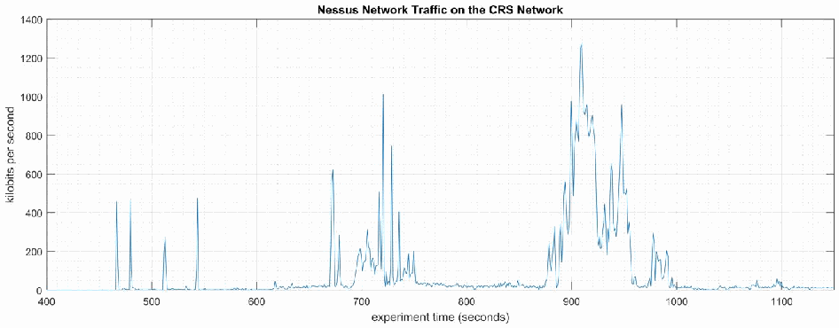
「Nessus Network Traffic on the CRS Network」と題した時系列グラフです。縦軸は「kilobits per second」で 0〜1400、横軸は「experiment time (seconds)」で 400〜1150 です。約 460〜545 秒に約 270〜470 kbps の短い突出があり、約 675〜745 秒には最大約 1000 kbps の通信があり、約 880〜1000 秒には最大約 1270 kbps の最も大きな通信があります。それ以外の時間帯の通信量はほぼ 0 です。
Figure 4-31 - Time series plot showing the quantity of network traffic transmitted and received by the Nessus tool during the experiment time period 400 to 1200 seconds, with the most prominent activity between 700 to 750 seconds and 875 to 1000 seconds. The Nessus GUI reported it was active between 450 to 1400 seconds experiment time.
図4-31 - 実験時間の400秒から1200秒の間に Nessus ツールが送受信したネットワークトラフィックの量を示す時系列プロット。最も顕著な活動は700秒から750秒の間と、875秒から1000秒の間にあります。Nessus の GUI には、実験時間で450秒から1400秒の間にアクティブであったと記録されています。
![Stem plot titled "Inter-Packet Delay (≥1.10 seconds) - HMI to Station 1". Y axis: "inter-packet delay (seconds)", 0 to 6. X axis: "experiment time (seconds)", 0 to 2000. Legend: "Baseline (CL001.2, μ=1.011 σ=0.032)" (blue) and "Experiment (CL006.1, μ=1.017 σ=0.151)" (orange). The baseline shows a few delays of about 1.2 s (near 370, 680, 1100 and 1920 s). The experiment shows delays of about 1.2 to 1.6 s spread over the run and a cluster near 700 to 740 s with delays of about 1.7, 1.8, 2.2, 5.4 and 5.8 s.](assets/ir-8183av3/p0204-figure-01.png)
「Inter-Packet Delay (≥1.10 seconds) - HMI to Station 1」と題したステムプロットです。縦軸は「inter-packet delay (seconds)」で 0〜6、横軸は「experiment time (seconds)」で 0〜2000 です。凡例は「Baseline (CL001.2, μ=1.011 σ=0.032)」（青）と「Experiment (CL006.1, μ=1.017 σ=0.151)」（橙）です。ベースラインでは、約 370、680、1100、1920 秒付近に約 1.2 秒の遅延が少数見られます。実験では約 1.2〜1.6 秒の遅延が全体に散らばり、約 700〜740 秒付近には、約 1.7、1.8、2.2、5.4、5.8 秒の遅延が集まっています。
Figure 4-32 - Stem plot displaying the inter-packet delays (greater than or equal to 1.10 seconds) of Modbus TCP traffic between the HMI and Station 1, as measured during the baseline CL001.2 and experiment CL006.1. Note the large inter-packet delays between experiment time 600 to 800, resulting in HMI loss-of-view for over 5 seconds.
図4-32 - ベースライン CL001.2 と実験 CL006.1 で測定された、HMI とステーション1の間の Modbus TCP トラフィックのパケット間遅延（1.10秒以上）を示すステムプロット。実験時間600～800の間に大きなパケット間遅延があり、その結果、5秒を超える HMI の視認喪失が生じていることに注意してください。
Performance impacts to the supervisory PLC task execution time were observed while the Nessus tool was actively scanning. Relatively large fluctuations of the average task execution time and the maximum task execution time were observed from 800 to 1000 seconds experiment time. The largest maximum task execution time was observed at 930 seconds with a value of 2088 microseconds (a threefold increase above the average). Impacts to the measured inter-packet delay between the PLC and Station 2 were also observed during this period. Further analysis revealed Nessus was actively scanning the machining stations while these PLC impacts were observed. It is hypothesized that the impacts were caused by interruptions to Modbus TCP communications between the supervisory PLC and the machining stations, likely due to increased resource utilization on the machining stations.
Nessus ツールが能動的にスキャンしている間に、監督用 PLC のタスク実行時間への性能上の影響が観測されました。実験時間800～1000秒の間に、平均タスク実行時間と最大タスク実行時間に比較的大きな変動が観測されました。最大タスク実行時間は930秒に観測され、その値は2088マイクロ秒（平均の3倍）でした。この期間中、PLC とステーション2の間で測定されたパケット間遅延にも影響が観測されました。さらなる分析により、これらの PLC への影響が観測された間、Nessus が加工ステーションを能動的にスキャンしていたことが明らかになりました。これらの影響は、監督用 PLC と加工ステーションの間の Modbus TCP 通信の中断によって生じたと推測されます。これはおそらく、加工ステーションでのリソース使用率の増加によるものです。
![Two time series plots side by side, both titled "Maximum PLC Task Execution Time", legend "Baseline (CL001.2)" (blue) and "Experiment (CL006.1)" (orange). Y axes: "task execution time (μseconds)", 400 to 2200. Left: X axis "experiment time (seconds)" 0 to 1800; both series mostly lie between about 500 and 1000 μs with spikes up to about 1700 (baseline) and about 2090 μs (experiment, near 930 s). Right (zoomed): X axis 800 to 1100; the experiment fluctuates between about 550 and 1100 μs with a peak of about 2090 μs near 930 s, while the baseline stays mostly around 500 to 700 μs.](assets/ir-8183av3/p0205-figure-01.png)
左右に並んだ 2 つの時系列グラフで、どちらも「Maximum PLC Task Execution Time」と題し、凡例は「Baseline (CL001.2)」（青）と「Experiment (CL006.1)」（橙）です。縦軸は「task execution time (μseconds)」で 400〜2200 です。左は横軸「experiment time (seconds)」0〜1800 で、両系列ともおおむね約 500〜1000 μs にあり、ベースラインでは約 1700 μs まで、実験では約 930 秒付近で約 2090 μs まで達する突出があります。右（拡大）は横軸800〜1100で、実験は約 550〜1100 μs の間で変動し、約930秒付近には約2090 μsのピークがあります。ベースラインは主に約500〜700 μsです。
Figure 4-33 - Plots showing the maximum PLC task execution time during the experiment (left) and during the period of measured impact (right). While the Nessus tool was active, the PLC experienced periods of fluctuating and increased task execution time.
図4-33 - 実験中（左）と、影響が測定された期間中（右）の、PLC の最大タスク実行時間を示すプロット。Nessus ツールの稼働中、PLC ではタスク実行時間が変動し、増加する期間がありました。
A slight increase of the part production time mean and variance were observed during this experiment, but they are not statistically significant.
この実験中、部品の生産時間の平均と分散にわずかな増加が観測されましたが、これらの変化は統計的に有意ではありません。

左右に並んだ 2 つの二重ヒストグラムです。左は「Part Production Time Bihistogram」で、縦軸は「count」（-6 to 4）、横軸は「production time (seconds)」（94.15 to 94.65）です。実験は上向きの橙色の棒、ベースラインは下向きの青色の棒で示されています。右は「Bootstrap (34 parts, 1000 iterations)」で、縦軸は「probability」（-0.4 to 0.3）、横軸は「production time (seconds)」（94.3 to 94.48）です。凡例は「Experiment (CL006.1)」（橙、上向き）と「Baseline (CL001.2)」（青、下向き）です。
Figure 4-34 - Bihistograms showing the part production time (left) and estimated mean production time using the bootstrap method (right) using the measurements from baseline CL001.2 and experiment CL006.1.
図4-34 - ベースライン CL001.2 と実験 CL006.1 の測定値を用いた、部品生産時間（左）およびブートストラップ法による平均生産時間の推定値（右）のバイヒストグラム。
4.10.6.2 Experiment CL006.2
4.10.6.2 実験 CL006.2
“Credentialed checks” were performed on the two CRS networks: Supervisory LAN (192.168.0.0/24) and Control LAN (192.168.1.0/24). The credentials gave Nessus access to the following hosts and ICS devices: the engineering workstation (POLARIS), the robot driver (MINTAKA), the robot controller vController1, and the robot controller vController2, and the four machining stations.
2つの CRS ネットワーク（監督用 LAN（192.168.0.0/24）と制御用 LAN（192.168.1.0/24））に対して、「認証情報チェック」を実施しました。認証情報により、Nessus は、次のホストと ICS デバイスにアクセスできました。エンジニアリングワークステーション（POLARIS）、ロボットドライバー（MINTAKA）、ロボットコントローラー vController1、ロボットコントローラー vController2、および4台の加工ステーションです。
The Nessus GUI reported scanning was active between 200 to 1500 seconds (experiment time).
Nessus の GUI には、（実験時間で）200秒から1500秒の間にスキャンがアクティブであったと記録されています。
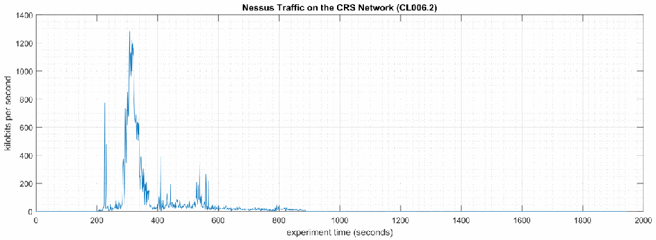
「Nessus Traffic on the CRS Network (CL006.2)」と題した時系列グラフです。縦軸は「kilobits per second」で 0〜1400、横軸は「experiment time (seconds)」で 0〜2000 です。通信は約 210 秒に約 780 kbps の突出とともに始まり、約 300 秒付近で約 1280 kbps に達した後、約 600 秒頃まで最大約 330 kbps のより小さなバーストを伴いながら減少し、約 1000 秒まで低い活動が続きます。その後はほぼ 0 です。
Figure 4-35 - Time series plot showing the quantity of network traffic transmitted and received by the Nessus tool during the experiment, with the most prominent activity from 200 to 600 seconds.
図4-35 - 実験中に Nessus ツールが送受信したネットワークトラフィックの量を示す時系列プロット。最も顕著な活動は200秒から600秒の間にあります。

「Nessus Traffic to/from Machining Stations (CL006.2)」と題した時系列グラフです。縦軸は「kilobits per second」で 0〜450、横軸は「experiment time (seconds)」で 200〜600 です。凡例は Station 1、Station 2、Station 3、Station 4 です。4つのステーションすべてで約285〜370秒の間に通信量が増加し、ピークは約300〜410 kbpsです（Station 3と4のピークが先に現れ、Station 2は約345秒付近で約370 kbpsまで達します）。約520〜580秒には最大約160 kbpsの小さなバーストがあり、それ以外の時間帯の通信量はほぼ0です。
Figure 4-36 - Time series plot showing the quantity of network traffic transmitted and received by the Nessus tool and the machining stations during the experiment. Performance impacts to the PLC appear to correlate Nessus scanning the machining stations, likely due to the limited processing power of the devices.
図4-36 - 実験中に Nessus ツールと加工ステーションが送受信したネットワークトラフィック量を示す時系列プロット。PLC への性能上の影響は、Nessus による加工ステーションのスキャンと相関しているように見えます。これはおそらく、デバイスの処理能力が限られているためです。
Multiple performance impacts were observed while the Nessus tool was actively scanning the HMI and machining stations. Loss-of-view events likely occurred (but were not directly observed) on the HMI multiple times during the experiment, as evident by the large inter-packet delay measurements between the HMI and Station 1 shown in Figure 4-37. Two large round-trip time transients (over 500 milliseconds) were observed on TCP traffic between the HMI and Station 1.
Nessus ツールが HMI と加工ステーションを能動的にスキャンしている間に、複数の性能上の影響が観測されました。実験中、HMI では視認喪失イベントが複数回発生した可能性が高いものの、直接観測されたわけではありません。このことは、図4-37に示す HMI とステーション1の間の大きなパケット間遅延測定値からうかがえます。HMI とステーション1の間の TCP トラフィックでは、大きなラウンドトリップ時間の過渡的変動（500ミリ秒超）が2回観測されました。

「Inter-Packet Delay (≥0.065 seconds) - PLC to Station 2」と題したステムプロットです。縦軸は「inter-packet delay (seconds)」で 0〜0.25、横軸は「experiment time (seconds)」で 0〜2000 です。凡例は「CL001.2 (μ=0.050 σ=0.002)」（青）と「CL006.2 (μ=0.051 σ=0.005)」（橙）です。両系列とも約 0.07〜0.09 秒の遅延が全体に散らばっています。CL006.2 は約 250〜560 秒に遅延が密集し、最大約 0.17 秒のほか、約 0.23、0.20、0.21 秒の山があります。
Figure 4-37 - Stem plot displaying the inter-packet delays (greater than or equal to 0.065 seconds) of Modbus TCP traffic between the PLC and Station 2, as measured during the baseline CL001.2 and experiment CL006.2. Note the large inter-packet delays between experiment time 250 to 600.
図4-37 - ベースライン CL001.2 と実験 CL006.2 で測定された、PLC とステーション2の間の Modbus TCP トラフィックのパケット間遅延（0.065秒以上）を示すステムプロット。実験時間250～600秒の範囲に大きなパケット間遅延があることに注意してください。
Performance impacts to the supervisory PLC task execution time were observed while the Nessus tool was actively scanning. Relatively large fluctuations of the average task execution time and the maximum task execution time were observed from 250 to 600 seconds experiment time (see Figure 4-38). Impacts to the measured inter-packet delay between the PLC and Station 2 were also observed during this period. Further analysis revealed Nessus was actively scanning the machining stations while these PLC impacts were observed. It is hypothesized that the impacts were caused by interruptions to Modbus TCP communications between the supervisory PLC and the machining stations, likely due to increased resource utilization on the machining stations.
Nessus ツールが能動的にスキャンしている間に、監督用 PLC のタスク実行時間への性能上の影響が観測されました。実験時間250～600秒の間に、平均タスク実行時間と最大タスク実行時間に比較的大きな変動が観測されました（図4-38を参照）。この期間中、PLC とステーション2の間で測定されたパケット間遅延にも影響が観測されました。さらなる分析により、これらの PLC への影響が観測された間、Nessus が加工ステーションを能動的にスキャンしていたことが明らかになりました。影響は、監督用 PLC と加工ステーションの間の Modbus TCP 通信の中断によって生じたと推測されます。これはおそらく、加工ステーションでのリソース使用率の増加によるものです。
![Two time series plots side by side, both titled "Maximum PLC Task Execution Time", legend "Baseline (CL001.2)" (blue) and "Experiment (CL006.2)" (orange). Y axes: "task execution time (μseconds)", 400 to 2200. Left: X axis "experiment time (seconds)" 0 to 1800; both series lie mostly between about 500 and 1000 μs with spikes up to about 2030 μs. Right (zoomed): X axis 250 to 600; the experiment fluctuates between about 500 and 1100 μs with peaks of about 1370 μs (near 270 s) and about 2030 μs (near 590 s); the baseline stays mostly around 550 to 700 μs with a peak of about 1600 μs near 350 s.](assets/ir-8183av3/p0208-figure-01.png)
左右に並んだ 2 つの時系列グラフで、どちらも「Maximum PLC Task Execution Time」と題し、凡例は「Baseline (CL001.2)」（青）と「Experiment (CL006.2)」（橙）です。縦軸は「task execution time (μseconds)」で 400〜2200 です。左は横軸「experiment time (seconds)」0〜1800 で、両系列ともおおむね約 500〜1000 μs の範囲にあり、最大約 2030 μs の突出があります。右（拡大）は横軸 250〜600 で、実験は約 500〜1100 μs の範囲で変動し、約 270 秒付近に約 1370 μs、約 590 秒付近に約 2030 μs のピークがあります。ベースラインはおおむね約 550〜700 μs で推移し、約 350 秒付近に約 1600 μs のピークがあります。
![Two time series plots side by side, both titled "Average PLC Task Execution Time", legend "Baseline (CL001.2)" (blue) and "Experiment (CL006.2)" (orange). Left: Y axis "task execution time (μseconds)" 260 to 420, X axis "experiment time (seconds)" 0 to 1800; both series lie mostly between about 300 and 360 μs, with the experiment dipping to about 280 μs near 450 to 480 s and spikes up to about 410 μs. Right (zoomed): Y axis 260 to 400, X axis 250 to 600; the experiment fluctuates between about 280 and 380 μs, mostly below the baseline, which stays around 310 to 360 μs with a peak of about 395 μs near 450 s.](assets/ir-8183av3/p0208-figure-02.png)
左右に並んだ 2 つの時系列グラフで、どちらも「Average PLC Task Execution Time」と題し、凡例は「Baseline (CL001.2)」（青）と「Experiment (CL006.2)」（橙）です。左は縦軸「task execution time (μseconds)」260〜420、横軸「experiment time (seconds)」0〜1800 で、両系列ともおおむね約 300〜360 μs にあり、実験は約 450〜480 秒付近で約 280 μs まで下がり、最大約 410 μs の突出があります。右（拡大）は縦軸 260〜400、横軸 250〜600 で、実験は約 280〜380 μs で変動し、おおむねベースラインより低くなっています。ベースラインは約 310〜360 μs で、約 450 秒付近に約 395 μs の山があります。
Figure 4-38 - Plots showing the maximum (top) and average (bottom) PLC task execution time during the experiment (left) and during the period of measured impact (right). While the Nessus tool was active, the PLC experienced periods of fluctuating and increased task execution time.
図4-38 - 実験中（左）と、影響が測定された期間中（右）の、PLC の最大（上）と平均（下）のタスク実行時間を示すプロット。Nessus ツールの稼働中、PLC ではタスク実行時間が変動し、増加する期間がありました。
Since Nessus was configured to perform an authenticated scan, vController1 and vController2 both hosts experienced increased utilization of resources (i.e., CPU, disk, memory).
Nessus は認証付きスキャンを実行するように構成されていたため、vController1 と vController2 の両方のホストで、リソース（CPU、ディスク、メモリ）の使用率が上昇しました。
![Two time series plots side by side, both titled "CPU Utilization Ratio - vController1", legend "Baseline (CL001.2)" (blue) and "Experiment (CL006.2)" (orange). Left: Y axis "CPU utilization ratio" 0 to 0.7, X axis "experiment time (seconds)" 0 to 1800; the baseline stays around 0.02 and the experiment around 0.07, with spikes from about 200 to 450 s up to about 0.68. Right (zoomed): Y axis labeled "bits per second" 0 to 0.7, X axis 200 to 450; the experiment fluctuates between about 0.05 and 0.68, with the highest values after about 340 s; the baseline stays near 0.02.](assets/ir-8183av3/p0209-figure-01.png)
左右に並んだ 2 つの時系列グラフで、どちらも「CPU Utilization Ratio - vController1」と題し、凡例は「Baseline (CL001.2)」（青）と「Experiment (CL006.2)」（橙）です。左は縦軸「CPU utilization ratio」0〜0.7、横軸「experiment time (seconds)」0〜1800 で、ベースラインは約 0.02、実験は約 0.07 で推移し、約 200〜450 秒に最大約 0.68 の突出があります。右（拡大）は縦軸の表記が「bits per second」で 0〜0.7、横軸 200〜450 で、実験は約 0.05〜0.68 で変動し、約 340 秒以降に特に高い値になります。ベースラインは約 0.02 です。
![Two time series plots side by side, both titled "CPU Utilization Ratio - vController2", legend "Baseline (CL001.2)" (blue) and "Experiment (CL006.2)" (orange). Left: Y axis "CPU utilization ratio" 0 to 0.8, X axis "experiment time (seconds)" 0 to 1800; both series stay near 0.02, with experiment spikes between about 225 and 560 s up to about 0.8. Right (zoomed): Y axis labeled "bits per second" 0 to 0.8, X axis 200 to 600; the experiment shows isolated spikes of about 0.15 to 0.35 between about 225 and 420 s and a burst up to about 0.8 between about 510 and 560 s; the baseline stays near 0.02 with one spike of about 0.11 near 410 s.](assets/ir-8183av3/p0209-figure-02.png)
左右に並んだ 2 つの時系列グラフで、どちらも「CPU Utilization Ratio - vController2」と題し、凡例は「Baseline (CL001.2)」（青）と「Experiment (CL006.2)」（橙）です。左は縦軸「CPU utilization ratio」0〜0.8、横軸「experiment time (seconds)」0〜1800 で、両系列とも約 0.02 で推移し、約 225〜560 秒に実験の最大約 0.8 の突出があります。右（拡大）は縦軸の表記が「bits per second」で 0〜0.8、横軸 200〜600 で、実験は約 225〜420 秒に約 0.15〜0.35 の単発の突出、約 510〜560 秒に最大約 0.8 の集中した突出があります。ベースラインは約 0.02 で、約 410 秒付近に約 0.11 の突出が 1 つあります。
Figure 4-39 - Time series plots showing the CPU utilization of vController1 and vController2 during the CL006.2 experiment. vController1 experienced intermittent periods of increased CPU utilization from 200 sec. to 450 sec., with a maximum of 68% utilization. vController2 experienced intermitted periods of increased CPU from 225 sec. to 560 sec., and a maximum of 80% utilization.
図4-39 - CL006.2 実験中の vController1 と vController2 の CPU 使用率を示す時系列プロット。vController1 では、200秒から450秒の間に、CPU 使用率が断続的に上昇する期間があり、最大使用率は68%でした。vController2 では、225秒から560秒の間に、CPU 使用率が断続的に上昇する期間があり、最大使用率は80%でした。
A slight increase of the part production time variance was observed during this experiment, but it is not statistically significant.
この実験中、部品の生産時間の分散にわずかな増加が観測されましたが、統計的に有意ではありません。

左右に並んだ 2 つの二重ヒストグラムです。左は「Part Production Time Bihistogram」で、縦軸は「count」（-6 to 4）、横軸は「production time (seconds)」（94.15 to 94.65）です。実験の度数を上向きの橙の棒、ベースラインの度数を下向きの青の棒で示します。右は「Bootstrap (34 parts, 1000 iterations)」で、縦軸は「probability」（-0.4 to 0.3）、横軸は「production time (seconds)」（94.3 to 94.48）です。凡例は「Experiment (CL006.2)」（橙、上向き）と「Baseline (CL001.2)」（青、下向き）です。
Figure 4-40 - Bihistograms showing the part production time (left) and estimated mean production time using the bootstrap method (right) using the measurements from baseline CL001.2 and experiment CL006.2.
図4-40 - ベースライン CL001.2 と実験 CL006.2 の測定値を使用した、部品の生産時間（左）と、ブートストラップ法を使用した推定平均生産時間（右）を示すバイヒストグラム。
4.10.7 Links to Entire Performance Measurement Data Set
4.10.7 性能測定データセット全体へのリンク
•CL006.1-NessusNetworkScan.zip
•CL006.1-NessusNetworkScan.zip
•CL006.2-NessusAuthenticatedScan.zip
•CL006.2-NessusAuthenticatedScan.zip
4.11 NamicSoft
4.11 NamicSoft
4.11.1 Technical Solution Overview
4.11.1 技術ソリューションの概要
NamicSoft Scan Report Assistant is a parser and reporting tool for Nessus, Burp, Nexpose OpenVAS and NCATS.88
NamicSoft Scan Report Assistant は、Nessus、Burp、Nexpose OpenVAS、NCATS 向けの、パーサーおよびレポート作成ツールです。88
4.11.2 Technical Capabilities Provided by Solution
4.11.2 ソリューションが提供する技術的能力
NamicSoft provides components of the following Technical Capabilities described in Section 6 of Volume 1:
NamicSoft は、第1巻の第6節で説明した、次の技術的能力の構成要素を提供します。
•Vulnerability Management
•脆弱性管理
4.11.3 Subcategories Addressed by Implementing Solution
4.11.3 ソリューションの実装によって対処するサブカテゴリ
ID.RA-1, DE.CM-4, RS.MI-3
ID.RA-1, DE.CM-4, RS.MI-3
4.11.4 Architecture Map of Where Solution was Implemented
4.11.4 ソリューションを実装した場所のアーキテクチャマップ
![Network architecture map of the Collaborative Robotics System (CRS) testbed, with a legend for the "NamicSoft Scan Report Assistant" traffic. Internet → Corporate Network → Manufacturing System Router/Firewall. Manufacturing DMZ: DMZ Historian 10.100.1.4 on "Manufacturing DMZ LAN - 10.100.1.0/24". Cybersecurity LAN ("Cybersecurity LAN - 10.100.0.0/24"): NTP/PTP Clock 10.100.0.15, Microsoft ActiveDirectory 10.100.0.13,17, Symantec Antivirus - SEPM 10.100.0.5, GTB Data Loss Prev. 10.100.0.175,176, Veeam Backup & Replication 10.100.0.10, Graylog Syslog 10.100.0.14. Workcell #1: CRS LAN Router (NAT) 10.100.0.20 / 192.168.0.2 / 192.168.1.2; "Supervisory LAN - 192.168.0.0/24" with Engineering Workstation 192.168.0.20, Supervisory and Safety PLC's 192.168.0.30, Operator HMI 192.168.0.98, Local Historian 192.168.0.10, Remote I/O 192.168.0.60; "Control LAN - 192.168.1.0/24" with Station 1 to Station 4 (192.168.1.101 to 192.168.1.104), Robot Driver 192.168.1.5 (connected to two robot arms by Field Bus) and Robot Controllers 192.168.1.3,4. The Cybersecurity Scanning Laptop (Nessus) 192.168.0.11 with the NamicSoft logo is attached to the Supervisory LAN by a dashed line with the note "NOTE: Connection present only during vulnerability and asset scanning."; the CRS LAN Router is labeled 10.100.0.20/32.](assets/ir-8183av3/p0212-figure-02.png)
協働ロボットシステム（CRS）試験環境のネットワーク構成図で、「NamicSoft Scan Report Assistant」の通信を示す凡例があります。Internet → Corporate Network → Manufacturing System Router/Firewall と接続します。Manufacturing DMZ には「Manufacturing DMZ LAN - 10.100.1.0/24」上の DMZ Historian 10.100.1.4 があります。Cybersecurity LAN（「Cybersecurity LAN - 10.100.0.0/24」）には NTP/PTP Clock 10.100.0.15、Microsoft ActiveDirectory 10.100.0.13,17、Symantec Antivirus - SEPM 10.100.0.5、GTB Data Loss Prev. 10.100.0.175,176、Veeam Backup & Replication 10.100.0.10、Graylog Syslog 10.100.0.14 があります。Workcell #1 には CRS LAN Router (NAT) 10.100.0.20 / 192.168.0.2 / 192.168.1.2 があり、「Supervisory LAN - 192.168.0.0/24」に Engineering Workstation 192.168.0.20、Supervisory and Safety PLC's 192.168.0.30、Operator HMI 192.168.0.98、Local Historian 192.168.0.10、Remote I/O 192.168.0.60、「Control LAN - 192.168.1.0/24」に Station 1〜Station 4（192.168.1.101〜192.168.1.104）、Robot Driver 192.168.1.5（Field Bus で 2 台のロボットアームに接続）、Robot Controllers 192.168.1.3,4 があります。NamicSoft のロゴが付いた Cybersecurity Scanning Laptop (Nessus) 192.168.0.11 が破線で Supervisory LAN に接続し、「NOTE: Connection present only during vulnerability and asset scanning.」と注記されています。CRS LAN Router の表記は 10.100.0.20/32 です。
4.11.5 Installation Instructions and Configurations
4.11.5 インストール手順と構成
Details of the solution implemented:
実装したソリューションの詳細：
| Name | Version | Hardware Details |
|---|---|---|
| NamicSoft Scan Report Assistant | 3.5.0 | Laptop with the following specs.
|
| 名称 | バージョン | ハードウェアの詳細 |
|---|---|---|
| NamicSoft Scan Report Assistant | 3.5.0 | 次の仕様のノートパソコン。
|
4.11.5.1 Environment Setup
4.11.5.1 環境のセットアップ
1.NamicSoft was installed on a temp. Windows 10 laptop setup on a need-by basis.
1.NamicSoft は、必要に応じてセットアップする臨時の Windows 10 ノートパソコンにインストールしました。
2.The guest OS IP information of this server was set as follows:
2.このサーバーのゲスト OS の IP 情報は次のように設定しました。
IP address: 192.168.0.11
Gateway: 192.168.0.2
Subnet Mask: 255.255.255.0
IP address: 192.168.0.11
Gateway: 192.168.0.2
Subnet Mask: 255.255.255.0
4.11.5.2 Setup Instructions
4.11.5.2 セットアップ手順
1.Download NamicSoft89
1.NamicSoft をダウンロードする89
2.Run the installer on a Windows PC. NamicSoft is currently supported on 64-bit Windows with .Net Framework 4.5 installed
2.Windows PC でインストーラーを実行します。NamicSoft は現在、.Net Framework 4.5 がインストールされた 64 ビット Windows でサポートされている
3.Launch the program by double clicking its Desktop icon. If using for the first time, the installation will prompt for a license file. If a license is not entered, it runs in free mode. The free mode is limited to five hosts.
3.デスクトップアイコンをダブルクリックして、プログラムを起動します。初めて使用する場合は、インストール時にライセンスファイルを求められます。ライセンスを入力しない場合は、無料モードで動作します。無料モードは5台のホストに制限されています。
Note: The software is tied to a Windows user account. Any changes made by a user would not be visible to a different user logging in to the same system.
注記：このソフトウェアは、Windows のユーザーアカウントに紐付けられています。あるユーザーが加えた変更は、同じシステムにログインする別のユーザーには表示されません。
4.11.5.3 Configuration for Reporting Nessus Scans
4.11.5.3 Nessus スキャンのレポート作成の構成
1.Export a Scan Report of Nessus format from the Nessus web interface.
1.Nessus の Web インターフェースから、Nessus 形式のスキャンレポートをエクスポートします。
2.Launch NamicSoft Report Assistant. Click Import on left-side explorer, select Nessus
2.NamicSoft Report Assistant を起動します。左側のエクスプローラーで Import をクリックし、Nessus を選択する
3.Click on Choose button to import files
3.Choose ボタンをクリックして、ファイルをインポートする
［第三者の画像。第三者の著作物のため、この非公式サイトには掲載していません。原本 PDF を参照してください。］
4.Browse to the Nessus scan report. Under Import Vulnerabilities with following vulnerabilities, Check / Uncheck whichever severity of vulnerabilities you wish to be included in the report and click Import.
4.Nessus のスキャンレポートを開きます。「Import Vulnerabilities with following vulnerabilities」の下で、レポートに含める脆弱性の重大度を選択し、「Import」をクリックします。
For instance, the image below shows Informational types being excluded and other severity levels such as High, Critical, Medium Low being selected. When the Import finishes, the Status bar should display All files read.
たとえば、次の画像は、Informational の種類を除外し、High、Critical、Medium、Low などのその他の重大度レベルを選択している状態を示しています。インポートが完了すると、ステータスバーに All files read と表示されるはずです。
［第三者の画像。第三者の著作物のため、この非公式サイトには掲載していません。原本 PDF を参照してください。］
5.Click the Hosts page upon completion of Import, to view all the hosts level summary. Similarly, clicking on Vulnerabilities page shows all the vulnerabilities
5.インポートの完了後、Hosts ページをクリックして、すべてのホストレベルの概要を表示します。同様に、Vulnerabilities ページをクリックすると、すべての脆弱性が表示される
［第三者の画像。第三者の著作物のため、この非公式サイトには掲載していません。原本 PDF を参照してください。］
［第三者の画像。第三者の著作物のため、この非公式サイトには掲載していません。原本 PDF を参照してください。］
6.(Optional)Mark a Vulnerability as Fixed, by Vulnerability >> Right Click >> Fixed.
6.（任意）脆弱性を Fixed としてマークするには、Vulnerability >> 右クリック >> Fixed を選択します。
［第三者の画像。第三者の著作物のため、この非公式サイトには掲載していません。原本 PDF を参照してください。］
7.Click on Save Workspace. Ensure to Save your workspace after every change made. When running NamicSoft the next time, you can load this saved workspace file.
7.Save Workspace をクリックします。変更を加えるたびに、必ずワークスペースを保存します。次に NamicSoft を実行するときに、この保存したワークスペースファイルを読み込むことができます。
8.Click on Report to generate one. Select from one of the default reporting templates from the list or create a custom one. To use a default template, select one from the list >> Create Report.
8.Report をクリックして、レポートを生成します。一覧にあるデフォルトのレポートテンプレートのいずれかを選択するか、カスタムのテンプレートを作成します。デフォルトのテンプレートを使用するには、一覧から1つ選択 >> Create Report を選択します。
［第三者の画像。第三者の著作物のため、この非公式サイトには掲載していません。原本 PDF を参照してください。］
9.Click Open Report to view the report.
9.Open Report をクリックして、レポートを表示します。
［第三者の画像。第三者の著作物のため、この非公式サイトには掲載していません。原本 PDF を参照してください。］
4.11.5.4 Creating Custom Template
4.11.5.4 カスタムテンプレートの作成
1.Copy one of the existing template files located under C:\Program Files(x86)\NamicSoft Scan Report Assistant\templates and save it to a different folder.
1.C:\Program Files(x86)\NamicSoft Scan Report Assistant\templates の下にある既存のテンプレートファイルの1つをコピーして、別のフォルダーに保存します。
2.Open the copied file in MS Word to begin editing. The image below shows a customized template file created for this work-cell. This report generates a summary of hosts and their respective vulnerabilities based on the Severity level.
2.コピーしたファイルを MS Word で開いて、編集を始めます。次の画像は、このワークセル向けに作成したカスタマイズ済みのテンプレートファイルを示しています。このレポートは、重大度レベルに基づいて、ホストとそれぞれの脆弱性の概要を生成します。
Custom reports90 can also be created.
カスタムレポート90も作成することができます。
［NIST のロゴが写っている図。公的な標章のため、この非公式サイトには掲載していません。原本 PDF を参照してください。］
3.Save your changes and give the file a name.
3.変更を保存し、ファイルに名前を付けます。
4.Copy this file back to the templates directory on the NamicSoft machine. For instance, the image below shows our customized file – ICS-Lab-Host Summary copied back to the templates folder.
4.このファイルを、NamicSoft のマシンの templates ディレクトリにコピーして戻します。たとえば、次の画像は、カスタマイズしたファイル ICS-Lab-Host Summary を templates フォルダーにコピーして戻した状態を示しています。
［第三者の画像。第三者の著作物のため、この非公式サイトには掲載していません。原本 PDF を参照してください。］
5.Launch NamicSoft again. The custom report should now appear under the list. Select it and click on Create Report.
5.NamicSoft を再度起動します。カスタムレポートが、一覧に表示されるはずです。それを選択して、Create Report をクリックします。
［第三者の画像。第三者の著作物のため、この非公式サイトには掲載していません。原本 PDF を参照してください。］
6.Review the output to confirm your changes.
6.出力を確認して、変更が反映されていることを確かめます。
［NIST のロゴが写っている図。公的な標章のため、この非公式サイトには掲載していません。原本 PDF を参照してください。］
7.(Optional) Use the Compare Workspaces feature under Action Menu to report on Vulnerabilities remediated based off the previous vulnerability scans as follows
7.（任意）以前の脆弱性スキャンに基づいて、是正された脆弱性をレポートするには、次のように、Action メニューの Compare Workspaces 機能を使用する
a.Load Nessus result from your previous scan. Save as a workspace.
a.以前のスキャンの Nessus の結果を読み込みます。ワークスペースとして保存します。
b.Clear the workspace in the GUI (or restart NamicSoft)
b.GUI でワークスペースをクリアする（または NamicSoft を再起動する）
c.Load Nessus results from the latest scan
c.最新のスキャンの Nessus の結果を読み込む
d.Open Actions > Compare workspaces. Choose Compare with current workspace and point Workspace 2 to your workspace saved earlier.
d.Actions > Compare workspaces を開きます。Compare with current workspace を選択し、Workspace 2 に、先に保存したワークスペースを指定します。
e.Choose Excel output file (target)
e.Excel の出力ファイル（ターゲット）を選択する
f.Click Compare Workspaces
f.Compare Workspaces をクリックする
4.11.6 Highlighted Performance Impacts
4.11.6 注目すべき性能への影響
Two performance measurement experiments were performed for the vulnerability management technical capability while the manufacturing system was operational:
製造システムの稼働中に、脆弱性管理の技術的能力について2つの性能測定の実験を実施しました。
1.CL011.1 - Patches are installed on network hardware.
1.CL011.1 - ネットワークハードウェアにパッチをインストールします。
2.CL011.2 - Patches are installed on servers and ICS devices (e.g., PLC).
2.CL011.2 - サーバーと ICS デバイス（PLC など）にパッチをインストールします。
4.11.6.1 Experiment CL011.1
4.11.6.1 実験 CL011.1
The firmware and operating systems for all three of the networking devices in the CRS (one router, two switches) were updated and patched to the most current versions. The firmware was updated while the CRS system was not operational.
CRS 内の3つのネットワークデバイス（ルーター1台、スイッチ2台）すべてのファームウェアとオペレーティングシステムを、最新のバージョンに更新し、パッチを適用しました。ファームウェアは、CRS システムが稼働していないときに更新しました。
A slight increase of the part production time mean was observed during this experiment but is not statistically significant.
この実験中、部品の生産時間の平均にわずかな増加が観測されましたが、統計的に有意ではありません。

左右に並んだ 2 つの二重ヒストグラムです。左は「Part Production Time Bihistogram」で、縦軸は「count」（-6〜3）、横軸は「production time (seconds)」（94.15〜94.55）です。実験の度数を上向きの橙色の棒、ベースラインの度数を下向きの青色の棒で示します。右は「Bootstrap (34 parts, 1000 iterations)」で、縦軸は「probability」（-0.4〜0.4）、横軸は「production time (seconds)」（94.3〜94.45）です。凡例は「Experiment (CL011.1)」（橙色、上向き）と「Baseline (CL001.2)」（青色、下向き）です。
Figure 4-41 - Bihistograms showing the part production time (left) and estimated mean production time using the bootstrap method (right) using the measurements from baseline CL001.1 and experiment CL011.1.
図4-41 - ベースライン CL001.1 と実験 CL011.1 の測定値を使用した、部品の生産時間（左）と、ブートストラップ法を使用した推定平均生産時間（右）を示すバイヒストグラム。
4.11.6.2 Experiment CL011.2
4.11.6.2 実験 CL011.2
The firmware and operating systems for each server (MINTAKA, POLARIS, vController1, and vController2) and each ICS device (HMI, PLC, and Engineering Laptop) were updated and patched to the most current versions. The firmware and operating systems were updated while the CRS system was not operational, and all of the devices were restarted after the updates completed.
各サーバー（MINTAKA、POLARIS、vController1、vController2）と各 ICS デバイス（HMI、PLC、エンジニアリングノートパソコン）のファームウェアとオペレーティングシステムを、最新のバージョンに更新し、パッチを適用しました。ファームウェアとオペレーティングシステムは、CRS システムが稼働していないときに更新し、更新の完了後にすべてのデバイスを再起動しました。
A decrease in the average inter-packet delay (IPD) was observed on the PLC Modbus TCP communications to Station 2. Further analysis revealed that the performance impact also showed a relatively unstable IPD, as compared to the baseline (see Figure 4-42). These new performance characteristics were consistent throughout the experiment. An increase in the average IPD was also observed on the Modbus TCP communications between Robot 2 and the PLC. Again, further analysis revealed that the performance impact showed a relatively unstable IPD, as compared to the baseline (see Figure 4-43).
ステーション2への PLC の Modbus TCP 通信で、平均パケット間遅延（IPD）の減少が観測されました。さらなる分析により、この性能への影響には、ベースラインと比べて IPD が比較的不安定になることも含まれていることがわかりました（図4-42を参照）。これらの新しい性能特性は、実験全体を通じて一貫していました。ロボット2と PLC の間の Modbus TCP 通信でも、平均 IPD の増加が観測されました。ここでも、さらなる分析により、この性能への影響には、ベースラインと比べて IPD が比較的不安定になることも含まれていることがわかりました（図4-43を参照）。

「Inter-Packet Delay - PLC to Station 2」と題した時系列グラフです。縦軸は「inter-packet delay (seconds)」で 0.04〜0.085、横軸は「experiment time (seconds)」で 460〜508 です。凡例は「Baseline (CL001.2, μ=0.050 σ=0.002)」（青）と「Experiment (CL011.2, μ=0.042 σ=0.005)」（橙）です。ベースラインは約0.050秒で推移し、最大約0.08秒の突出が数回あります。実験は約0.04秒と最大約0.07〜0.08秒の値の間を行き来し、460〜約470秒では密に変動しています。
Figure 4-42 - Time series plot displaying the inter-packet delay of Modbus TCP traffic between the PLC and Station 2, as measured during the baseline CL001.2 and experiment CL011.2. Note the relatively constant baseline average delay of around 0.050 sec., while the experimental delay is decreased to an average of 0.042 sec. with large deviations.
図4-42 - ベースライン CL001.2 と実験 CL011.2 の間に測定された、PLC とステーション2の間の Modbus TCP トラフィックのパケット間遅延を示す時系列プロット。ベースラインの平均遅延が約0.050秒でほぼ一定である一方、実験では遅延が平均0.042秒に減少し、大きな偏差が生じていることに注意してください。
![Stem plot titled "Inter-Packet Delay - Robot 2 to PLC". Y axis: "inter-packet delay (seconds)", 0 to 0.05. X axis: "experiment time (seconds)", 102 to 105. Legend: "Baseline (CL001.2, μ=0.016 σ=0.001)" (blue) and "Experiment (CL011.2, μ=0.019 σ=0.003)" (orange). The baseline delays lie between about 0.014 and 0.019 s from about 102.6 to 104.2 s; the experiment delays lie mostly between about 0.016 and 0.024 s from about 102.8 to 104.4 s, with peaks of about 0.03 to 0.035 s. One stem in each series at the start of the sequence extends beyond 0.05 s.](assets/ir-8183av3/p0222-figure-02.png)
「Inter-Packet Delay - Robot 2 to PLC」と題したステムプロットです。縦軸は「inter-packet delay (seconds)」で 0〜0.05、横軸は「experiment time (seconds)」で 102〜105 です。凡例は「Baseline (CL001.2, μ=0.016 σ=0.001)」（青）と「Experiment (CL011.2, μ=0.019 σ=0.003)」（橙）です。ベースラインの遅延は約 102.6〜104.2 秒で約 0.014〜0.019 秒、実験の遅延は約 102.8〜104.4 秒でおおむね約 0.016〜0.024 秒で、約 0.03〜0.035 秒の山があります。各系列の始まりの 1 本は 0.05 秒を超えて伸びています。
Figure 4-43 - Stem plot displaying the inter-packet delay of Modbus TCP traffic between Robot 2 and the PLC, as measured during the baseline CL001.2 and experiment CL011.2. Note the relatively constant baseline average delay of around 0.016 sec., while the experimental delay is increased to an average of 0.019 sec. and relatively unstable.
図4-43 - ベースライン CL001.2 と実験 CL011.2 の間に測定された、ロボット2と PLC の間の Modbus TCP トラフィックのパケット間遅延を示すステムプロット。ベースラインの平均遅延が約0.016秒でほぼ一定である一方、実験では遅延が平均0.019秒に増加し、比較的不安定になっていることに注意してください。
A small increase in the average robot job actuation time was observed on Robot 1 for Job 103 (see Figure 4-44). No other increases were observed for any of the other jobs. This added actuation time was also observed for all the experiments performed after CL011.2.
ロボット1のジョブ103で、ロボットの平均ジョブ作動時間のわずかな増加が観測されました（図4-44を参照）。ほかのジョブでは、その他の増加は観測されませんでした。この追加の作動時間は、CL011.2 の後に実施したすべての実験でも観測されました。
![Two plots side by side. Left: time series "Robot Job 103 Execution Time", Y axis "job actuation time (sec)" 12.4 to 12.52, X axis "part number" 0 to 35, legend "Baseline (CL001.2)" (blue) and "Experiment (CL011.2)" (orange); both series fluctuate between about 12.40 and 12.50 sec, with the experiment generally higher. Right: "Robot Job 103 Execution Time Box Plot", Y axis "job actuation time (sec)" 13.69 to 13.8, X axis "experiment ID" with boxes for CL001.2 and CL011.2; the CL011.2 box (median about 13.765) lies above the CL001.2 box (median about 13.731).](assets/ir-8183av3/p0223-figure-01.png)
左右に並んだ 2 つのグラフです。左は時系列の「Robot Job 103 Execution Time」で、縦軸は「job actuation time (sec)」12.4〜12.52、横軸は「part number」0〜35、凡例は「Baseline (CL001.2)」（青）と「Experiment (CL011.2)」（橙）です。両系列とも約 12.40〜12.50 秒で変動し、実験のほうがおおむね高い値です。右は「Robot Job 103 Execution Time Box Plot」で、縦軸は「job actuation time (sec)」13.69〜13.8、横軸は「experiment ID」で CL001.2 と CL011.2 の箱ひげ図があります。CL011.2 の箱（中央値約 13.765）は CL001.2 の箱（中央値約 13.731）より上にあります。
Figure 4-44 - Time-series (left) and boxplot (right) showing the job actuation times for Job 103 during the CL001.2 baseline and CL011.2 experiment.
図4-44 - CL001.2 ベースラインと CL011.2 実験の間の、ジョブ103のジョブ作動時間を示す時系列（左）と箱ひげ図（右）。
Performance impacts to the supervisory PLC task execution time were observed after the PLC operating system was updated. The task execution time increased from an average of around 330 μsec. during the baseline to around 690 μsec., with the maximum task execution time now consistently exceeding 2000 μsec. (see Figure 4-45).
PLC のオペレーティングシステムが更新された後、監督用 PLC のタスク実行時間に対する性能上の影響が観測されました。タスク実行時間は、ベースライン時の平均約330 μsec.から約690 μsec.に増加し、最大タスク実行時間は一貫して2000 μsec.を超えるようになりました（図4-45を参照）。
CPU utilization on vController2 also increased from an average of around 2% during the baseline to an average of around 7% during the experiment (consistent with the increase vController1 had experienced in previous experiments). This CPU increase was observed for all the experiments performed after CL011.2 but was not consistent with vController1, which measured a consistent average of 2% CPU utilization for CL011.2 and all subsequent experiments.
vController2 の CPU 使用率も、ベースライン時の平均約2%から、実験中の平均約7%に上昇しました（vController1 が以前の実験で経験した上昇と一致しています）。この CPU の上昇は、CL011.2 の後に実施したすべての実験で観測されましたが、vController1 とは一致しませんでした。vController1 では、CL011.2 とそれ以降のすべての実験で、一貫して平均2%の CPU 使用率が測定されました。
![Two time series plots side by side, both titled "Maximum PLC Task Execution Time", legend "Baseline (CL001.2)" (blue) and "Experiment (CL011.2)" (orange). Y axes: "task execution time (μseconds)", 0 to 3000. Left: X axis "experiment time (seconds)" 0 to 1800; the baseline lies mostly around 500 to 1000 μs, while the experiment lies around 1300 to 2200 μs with a peak of about 2700 μs. Right (zoomed): X axis 250 to 600; the same separation is visible, with the experiment around 1300 to 2200 μs and the baseline around 500 to 800 μs.](assets/ir-8183av3/p0224-figure-01.png)
左右に並んだ 2 つの時系列グラフで、どちらも「Maximum PLC Task Execution Time」と題し、凡例は「Baseline (CL001.2)」（青）と「Experiment (CL011.2)」（橙）です。縦軸は「task execution time (μseconds)」で 0〜3000 です。左は横軸「experiment time (seconds)」0〜1800 で、ベースラインはおおむね約 500〜1000 μs、実験は約 1300〜2200 μs にあり、最大約 2700 μs の山があります。右（拡大）は横軸 250〜600 で、同じく実験は約 1300〜2200 μs、ベースラインは約 500〜800 μs と分かれています。
![Two time series plots side by side, both titled "Average PLC Task Execution Time", legend "Baseline (CL001.2)" (blue) and "Experiment (CL011.2)" (orange). Left: Y axis "task execution time (μseconds)" 200 to 800, X axis "experiment time (seconds)" 0 to 1800; the baseline stays around 330 μs and the experiment around 690 μs. Right (zoomed): Y axis 300 to 750, X axis 250 to 600; the experiment fluctuates around 650 to 740 μs and the baseline around 310 to 360 μs, with one peak of about 395 μs near 455 s.](assets/ir-8183av3/p0224-figure-02.png)
左右に並んだ 2 つの時系列グラフで、どちらも「Average PLC Task Execution Time」と題し、凡例は「Baseline (CL001.2)」（青）と「Experiment (CL011.2)」（橙）です。左は縦軸「task execution time (μseconds)」200〜800、横軸「experiment time (seconds)」0〜1800 で、ベースラインは約 330 μs、実験は約 690 μs で推移します。右（拡大）は縦軸 300〜750、横軸 250〜600 で、実験は約 650〜740 μs、ベースラインは約 310〜360 μs で変動し、約 455 秒付近に約 395 μs の山が 1 つあります。
Figure 4-45 - Plots showing the maximum (top) and average (bottom) PLC task execution time during the experiment (left) and during the period of measured impact (right). The PLC task execution time characteristics changed considerably after patches were applied to the PLC and other ICS devices.
図4-45 - 実験中（左）と、影響が測定された期間中（右）の、PLC の最大（上）と平均（下）のタスク実行時間を示すプロット。PLC のタスク実行時間の特性は、PLC とその他の ICS デバイスにパッチを適用した後に、大きく変化しました。
![Two time series plots side by side, both titled "CPU Utilization Ratio - vController2", legend "Baseline (CL001.2)" (blue) and "Experiment (CL011.2)" (orange). Left: Y axis "CPU utilization ratio" 0 to 0.35, X axis "experiment time (seconds)" 0 to 1800; the baseline stays around 0.02 and the experiment around 0.07, with a spike of about 0.32 at the start and others up to about 0.16. Right (zoomed): Y axis labeled "bits per second" 0 to 0.14, X axis 175 to 600; the experiment fluctuates around 0.05 to 0.09 with peaks up to about 0.135, the baseline around 0.01 to 0.03 with one spike of about 0.11 near 420 s.](assets/ir-8183av3/p0224-figure-03.png)
左右に並んだ 2 つの時系列グラフで、どちらも「CPU Utilization Ratio - vController2」と題し、凡例は「Baseline (CL001.2)」（青）と「Experiment (CL011.2)」（橙）です。左は縦軸「CPU utilization ratio」0〜0.35、横軸「experiment time (seconds)」0〜1800 で、ベースラインは約 0.02、実験は約 0.07 で推移し、開始直後に約 0.32、そのほかに最大約 0.16 の突出があります。右（拡大）は縦軸の表記が「bits per second」で 0〜0.14、横軸 175〜600 です。実験は約 0.05〜0.09 で変動し、最大約 0.135 の山があり、ベースラインは約 0.01〜0.03 で、約 420 s 付近に約 0.11 の突出が 1 つあります。
Figure 4-46 - Time series plots showing the CPU utilization ratio for vController2 during the CL011.2 experiment and the CL001.2 baseline (left), and a detailed view of the same data (right).
図4-46 - CL011.2 実験と CL001.2 ベースライン中（左）の vController2 の CPU 使用率と、同じデータの詳細表示（右）を示す時系列プロット。
A slight increase of the part production time mean was observed during this experiment, but it is not statistically significant.
この実験中、部品生産時間の平均にわずかな増加が観測されましたが、統計的に有意ではありませんでした。

左右に並んだ 2 つの二重ヒストグラムです。左は「Part Production Time Bihistogram」で、縦軸は「count」（-6 to 6）、横軸は「production time (seconds)」（94.15 to 94.6）です。実験の度数を上向きの橙の棒、ベースラインの度数を下向きの青の棒で示します。右は「Bootstrap (34 parts, 1000 iterations)」で、縦軸は「probability」（-0.4 to 0.4）、横軸は「production time (seconds)」（94.3 to 94.48）です。凡例は「Experiment (CL011.2)」（橙、上向き）と「Baseline (CL001.2)」（青、下向き）です。
Figure 4-47 - Bihistograms showing the part production time (left) and estimated mean production time using the bootstrap method (right) using the measurements from baseline CL001.2 and experiment CL011.2.
図4-47 - ベースライン CL001.2 と実験 CL011.2 の測定値を用いた、部品生産時間（左）と、ブートストラップ法で推定した平均生産時間（右）を示す図。
4.11.7 Links to Entire Performance Measurement Data Set
4.11.7 性能測定データセット全体へのリンク
•CL011.1-PatchesNetworkHardware.zip
•CL011.1-PatchesNetworkHardware.zip
•CL011.2-PatchesServersICSDevices.zip
•CL011.2-PatchesServersICSDevices.zip
4.12 GTB Inspector
4.12 GTB Inspector
4.12.1 Technical Solution Overview
4.12.1 技術ソリューションの概要
GTB Inspector by GTB Technologies is a Data Loss Prevention (DLP) solution that has the ability to detect, log, and block network traffic trying to leave the network. Inspector detects and blocks FTP, Email, HTTP, HTTPS (SSL/TLS), Finger Printed files, USB protection, and other configured exfiltration methods. Inspector is the main component that analyzes all network traffic. GTB Central Console is the device Inspector reports back to. Central Console allows for groups and escalation paths depending on the alerting required.
GTB Technologies の GTB Inspector は、ネットワークから流出しようとするネットワークトラフィックを、検知し、ログに記録し、ブロックできる、データ損失防止（Data Loss Prevention、DLP）ソリューションです。Inspector は、FTP、電子メール、HTTP、HTTPS（SSL/TLS）、フィンガープリントされたファイル、USB 保護、およびその他の構成された流出手段を検知し、ブロックします。Inspector は、すべてのネットワークトラフィックを分析する主要なコンポーネントです。GTB Central Console は、Inspector が報告を返す先のデバイスです。Central Console では、必要なアラートに応じて、グループとエスカレーション経路を設定できます。
Points to consider:
考慮すべき点：
•All DLP products have a high cost to implement.
•すべての DLP 製品は、導入コストが高いです。
•All DLP products require configuration that can be extensive.
•すべての DLP 製品は、大規模になりうる構成作業が必要です。
4.12.2 Technical Capabilities Provided by Solution
4.12.2 ソリューションが提供する技術的能力
GTB Inspector provides components of the following Technical Capabilities described in Section 6 of Volume 1:
GTB Inspector は、第1巻の第6節で説明した、次の技術的能力の構成要素を提供します。
•Data Loss Prevention
•データ損失防止
4.12.3 Subcategories Addressed by Implementing Solution
4.12.3 ソリューションの実装によって対処するサブカテゴリ
PR.DS-5
PR.DS-5
4.12.4 Architecture Map of Where Solution was Implemented
4.12.4 ソリューションを実装した場所のアーキテクチャマップ
![Network architecture map of the Collaborative Robotics System (CRS) testbed, with a legend for the "DLP Traffic" traffic. Internet → Corporate Network → Manufacturing System Router/Firewall. Manufacturing DMZ: DMZ Historian 10.100.1.4 on "Manufacturing DMZ LAN - 10.100.1.0/24". Cybersecurity LAN ("Cybersecurity LAN - 10.100.0.0/24"): NTP/PTP Clock 10.100.0.15, Microsoft ActiveDirectory 10.100.0.13,17, Symantec Antivirus - SEPM 10.100.0.5, GTB Data Loss Prev. 10.100.0.175,176, Veeam Backup & Replication 10.100.0.10, Graylog Syslog 10.100.0.14. Workcell #1: CRS LAN Router (NAT) 10.100.0.20 / 192.168.0.2 / 192.168.1.2; "Supervisory LAN - 192.168.0.0/24" with Engineering Workstation 192.168.0.20, Supervisory and Safety PLC's 192.168.0.30, Operator HMI 192.168.0.98, Local Historian 192.168.0.10, Remote I/O 192.168.0.60; "Control LAN - 192.168.1.0/24" with Station 1 to Station 4 (192.168.1.101 to 192.168.1.104), Robot Driver 192.168.1.5 (connected to two robot arms by Field Bus) and Robot Controllers 192.168.1.3,4. The GTB Data Loss Prev. servers 10.100.0.175,176 are outlined in red, and a red line marks the DLP traffic path from the Manufacturing System Router/Firewall through the GTB servers and the CRS LAN Router (10.100.0.20/32) to the Supervisory LAN and Control LAN. The Cybersecurity Scanning Laptop (Nessus, OpenAudIT) 192.168.0.11,12 is attached to the Supervisory LAN by a dashed line with the note "NOTE: Connection present only during vulnerability and asset scanning.".](assets/ir-8183av3/p0227-figure-02.png)
協働ロボットシステム（CRS）試験環境のネットワーク構成図で、「DLP Traffic」（DLP通信）を示す凡例があります。Internet → Corporate Network → Manufacturing System Router/Firewall と接続します。Manufacturing DMZ には「Manufacturing DMZ LAN - 10.100.1.0/24」上の DMZ Historian 10.100.1.4 があります。Cybersecurity LAN（「Cybersecurity LAN - 10.100.0.0/24」）には NTP/PTP Clock 10.100.0.15、Microsoft ActiveDirectory 10.100.0.13,17、Symantec Antivirus - SEPM 10.100.0.5、GTB Data Loss Prev. 10.100.0.175,176、Veeam Backup & Replication 10.100.0.10、Graylog Syslog 10.100.0.14 があります。Workcell #1 には CRS LAN Router (NAT) 10.100.0.20 / 192.168.0.2 / 192.168.1.2 があり、「Supervisory LAN - 192.168.0.0/24」に Engineering Workstation 192.168.0.20、Supervisory and Safety PLC's 192.168.0.30、Operator HMI 192.168.0.98、Local Historian 192.168.0.10、Remote I/O 192.168.0.60、「Control LAN - 192.168.1.0/24」に Station 1〜Station 4（192.168.1.101〜192.168.1.104）、Robot Driver 192.168.1.5（Field Bus で 2 台のロボットアームに接続）、Robot Controllers 192.168.1.3,4 があります。GTB Data Loss Prev. サーバー 10.100.0.175,176 が赤枠で示され、赤い線が Manufacturing System Router/Firewall から GTB サーバーと CRS LAN Router（10.100.0.20/32）を経て Supervisory LAN と Control LAN に至る DLP通信の経路を示します。Cybersecurity Scanning Laptop (Nessus, OpenAudIT) 192.168.0.11,12 は破線で Supervisory LAN に接続し、「注記：脆弱性および資産のスキャン中にのみ接続されます。」と示されています。
4.12.5 Installation Instructions and Configurations
4.12.5 インストール手順と構成
Details of the solutions implemented:
実装したソリューションの詳細：
| Name | Version | Purpose | Hardware Details |
|---|---|---|---|
| GTB Inspector | 15.6.0 | Network DLP | Hyper-V Virtual Machine (Generation 1):
|
| GTB Central Console | 15.6.0 | Central Reporting and Management for all GTB products | Hyper-V Virtual Machine (Generation 1):
|
| 名称 | バージョン | 目的 | ハードウェアの詳細 |
|---|---|---|---|
| GTB Inspector | 15.6.0 | ネットワーク DLP | Hyper-V 仮想マシン（第1世代）：
|
| GTB Central Console | 15.6.0 | すべての GTB 製品の一元的なレポート作成と管理 | Hyper-V 仮想マシン（第1世代）：
|
4.12.5.1 Environment Setup
4.12.5.1 環境のセットアップ
1.Two virtual machines were setup in the Cybersecurity LAN network of the workcell, using the ISO image provided by the vendor. Their hardware specifications are described in the table above.
1.ベンダーが提供する ISO イメージを使用して、ワークセルのサイバーセキュリティ LAN ネットワークに、仮想マシンを2台セットアップしました。それらのハードウェア仕様は、上の表のとおり。
2.The GTB Inspector server was deployed in Bridge [Inline] mode as per the official diagram provided by the vendor which is shown below. For additional details, refer to the official install guide.
2.GTB Inspector サーバーは、ベンダーが提供する公式の図（下に示す）に従って、ブリッジ［インライン］モードでデプロイしました。詳細は、公式のインストールガイドを参照してください。
［第三者の画像。第三者の著作物のため、この非公式サイトには掲載していません。原本 PDF を参照してください。］
3.The guest OS networking information on the VM’s was set as follows:
3.VM のゲスト OS のネットワーク情報は次のように設定しました。
Virtual Machine: GTB-Inspector
Network interface:eth0
IP address: 10.100.0.175
Gateway: 10.100.0.1
Subnet Mask: 255.255.255.0
DNS:10.100.0.17
Network interface:eth2->connected to Monitor Port1 of a Network Aggregator device
Network interface:eth3->connected to WAN interface of our Cisco-ASA firewall.
Virtual Machine: GTB-Inspector
Network interface:eth0
IP address: 10.100.0.175
Gateway: 10.100.0.1
Subnet Mask: 255.255.255.0
DNS:10.100.0.17
Network interface:eth2->connected to Monitor Port1 of a Network Aggregator device
Network interface:eth3->connected to WAN interface of our Cisco-ASA firewall.
Virtual Machine: GTB-Central
Network interface:eth0
IP address: 10.100.0.176
Gateway: 10.100.0.1
Subnet Mask: 255.255.255.0
DNS:10.100.0.17
Virtual Machine: GTB-Central
Network interface:eth0
IP address: 10.100.0.176
Gateway: 10.100.0.1
Subnet Mask: 255.255.255.0
DNS:10.100.0.17
4.12.5.2 Setting up the GTB Central Console
4.12.5.2 GTB Central Console のセットアップ
1.Download the ISO file of GTB Central Console and install guides91
1.GTB Central Console の ISO ファイルとインストールガイドをダウンロードする91
2.Setup the virtual machine using the ISO on your preferred Hypervisor.
2.使用するハイパーバイザー上で、ISO を使って仮想マシンをセットアップします。
3.Perform initial configuration such as creating a DNS record, assigning a Static IP address to the server, etc.
3.DNS レコードの作成、サーバーへの静的 IP アドレスの割り当てなど、初期構成を行います。
4.Login to the Central Console Web UI using the default credentials. Click Administration > Licensing to upload the license file. Restart once done.
4.デフォルトの認証情報で、Central Console の Web UI にログインします。Administration > Licensing をクリックして、ライセンスファイルをアップロードします。完了したら再起動します。
5.Click DLP Setup tab > Network to enter the network settings.
5.DLP Setup タブ > Network をクリックして、ネットワーク設定を入力します。
6.Click DLP Setup tab > LDAP to configure AD server details.
6.DLP Setup タブ > LDAP をクリックして、AD サーバーの詳細を構成します。
7.Click DLP Setup tab > Email & Alerts. to configure smtp server settings.
7.DLP Setup タブ > Email & Alerts をクリックして、SMTP サーバーの設定を構成します。
8.Click DLP Setup tab > Date & Time > Enter NTP Server details.
8.DLP Setup タブ > Date & Time > NTP サーバーの詳細を入力します。
9.Click DLP Setup tab > SIEM > Enter the IP address of Syslog / SIEM server
9.DLP Setup タブ > SIEM > Syslog / SIEM サーバーの IP アドレスを入力します。
4.12.5.3 Setting up the GTB Inspector
4.12.5.3 GTB Inspector のセットアップ
1.Download the ISO file of GTB Inspector and install guides92
1.GTB Inspector の ISO ファイルとインストールガイドをダウンロードする92
2.Setup the virtual machine using the ISO files on your preferred Hypervisor.
2.使用するハイパーバイザー上で、ISO ファイルを使って仮想マシンをセットアップします。
3.Perform initial configuration such as creating DNS records, assigning Static IP address, setting up the LAN and WAN interfaces for the Inspector server, etc. For detailed instructions, refer to the GTB product install guides.
3.DNS レコードの作成、静的 IP アドレスの割り当て、Inspector サーバーの LAN インターフェースと WAN インターフェースの設定など、初期構成を行います。詳細な手順は、GTB 製品のインストールガイドを参照してください。
4.Login to the Inspector server Web UI using the default credentials as provided. Click Administration > Licensing to upload the license file. Restart once done.
4.提供されたデフォルトの認証情報で、Inspector サーバーの Web UI にログインします。Administration > Licensing をクリックして、ライセンスファイルをアップロードします。完了したら再起動します。
5.Click Configuration tab > Email Alerts. to configure smtp server settings.
5.Configuration タブ > Email Alerts をクリックして、SMTP サーバーの設定を構成します。
6.Click Configuration tab > LDAP Integration, to configure Active Directory server details.
6.Configuration タブ > LDAP Integration をクリックして、Active Directory サーバーの詳細を構成します。
7.Click Configuration tab > Network > Set the Deployment Mode as required.
7.Configuration タブ > Network > Deployment Mode を必要に応じて設定します。
8.Click Configuration tab > SIEM > Enter the IP address of Syslog / SIEM server.
8.Configuration タブ > SIEM > Syslog / SIEM サーバーの IP アドレスを入力します。
9.Click Configuration tab > SSL Proxy > Upload a Public Certificate (if any) for SSL decryption.
9.Configuration タブ > SSL Proxy > SSL 復号用の公開証明書（ある場合）をアップロードします。
10.Click Configuration tab > Central Console > Enter the hostname of the GTB Central server. Ensure the inspector can reach the Central console.
10.Configuration タブ > Central Console > GTB Central サーバーのホスト名を入力します。Inspector が Central Console に到達できることを確認します。
4.12.5.4 Creating ACL Rules on the Central Console
4.12.5.4 Central Console での ACL ルールの作成
1.Login to the Central Console Web UI. Click DLP-Setup > Network DLP
1.Central Console の Web UI にログインします。DLP-Setup > Network DLP をクリックします。
2.Click on the <Inspector server name> listed under Categories.
2.Categories の下に一覧表示されている <Inspector server name> をクリックします。
3.Click Add button. The Add New ACL Rule window should pop-up
3.Add ボタンをクリックします。Add New ACL Rule ウィンドウがポップアップ表示されるはずです。
［第三者の画像。第三者の著作物のため、この非公式サイトには掲載していません。原本 PDF を参照してください。］
4.Enter the information as required under Name, Protocol, Source, Destination, File Type. Selecting Protocol = Any will enable the Inspector to inspect all protocols.
4.Name、Protocol、Source、Destination、File Type の下に、必要な情報を入力します。Protocol = Any を選択すると、Inspector がすべてのプロトコルを検査できるようになります。
Note: This may cause a performance impact depending on the number of clients within your organization.
注記：これにより、組織内のクライアントの数によっては、性能に影響が生じる場合があります。
5.Click Add under Enforcement to configure Policy/Sets. Select from any of the default policies for Credit Card Numbers (CCN), Social Security etc., or create a new one.
5.Enforcement の下の Add をクリックして、ポリシー／セットを構成します。クレジットカード番号（CCN）、社会保障番号などのデフォルトのポリシーのいずれかを選択するか、新しいポリシーを作成します。
6.Select the action to be taken – Log, Block, S-Block and Pass.
6.実行する処置を選択する – Log、Block、S-Block、Pass。
7.Check mark the File Capture option to retain a copy of the offending data.
7.File Capture オプションにチェックを付けて、違反データのコピーを保持します。
8.Click Save.
8.Save をクリックします。
9.Click Deploy-All. This sends newly created policy to the Inspector.
9.Deploy-All をクリックします。これにより、新しく作成したポリシーが Inspector に送信されます。
10.(Optional) Order rules if more than one by clicking the UP / DOWN arrows. Rules always work from Top to down.
10.（任意）ルールが複数ある場合は、UP / DOWN の矢印をクリックして順序を並べ替えます。ルールは常に上から下へ適用されます。
4.12.5.5 Fingerprint Files using Security Manager
4.12.5.5 Security Manager を使用したファイルのフィンガープリント
1.Click Help Tab on the Central Console. Download GTB Security Manager on a Windows system.
1.Central Console の Help タブをクリックします。Windows システムに GTB Security Manager をダウンロードします。
2.Run the installer (For example GTBSecurityManager_15.3.0.msi). Follow the on-screen instructions to complete the install. Reboot the system once done.
2.インストーラー（例：GTBSecurityManager_15.3.0.msi）を実行します。画面の指示に従って、インストールを完了します。完了したらシステムを再起動します。
3.Launch the GTB Security Manager by doing a Run as Administrator.
3.Run as Administrator で GTB Security Manager を起動します。
4.Click Settings. Enter the IP address of the Central Console server. The user and password are prepopulated. Click OK to save changes.
4.Settings をクリックします。Central Console サーバーの IP アドレスを入力します。ユーザーとパスワードはあらかじめ入力されています。OK をクリックして、変更を保存します。
［第三者の画像。第三者の著作物のため、この非公式サイトには掲載していません。原本 PDF を参照してください。］
5.Click File from the Menu > New > New File Profile. This will launch a new window with an Explorer like interface allowing to select files/folders for fingerprinting.
5.メニューから File > New > New File Profile をクリックします。これにより、エクスプローラーのようなインターフェースを持つ新しいウィンドウが開き、フィンガープリントするファイルやフォルダーを選択できます。
6.Select the files or folders that need fingerprinting. Once a folder is selected all files within selected folder will receive a check mark indicating which files will be fingerprinted.
6.フィンガープリントが必要なファイルまたはフォルダーを選択します。フォルダーを選択すると、選択したフォルダー内のすべてのファイルにチェックマークが付き、どのファイルがフィンガープリントされるかが示されます。
［第三者の画像。第三者の著作物のため、この非公式サイトには掲載していません。原本 PDF を参照してください。］
［第三者の画像。第三者の著作物のため、この非公式サイトには掲載していません。原本 PDF を参照してください。］
7.Click Save. Select a Location to save the newly created profile.
7.Save をクリックします。新しく作成したプロファイルの保存先を選択します。
8.Click on the padlock icon to start the fingerprinting process.
8.南京錠のアイコンをクリックして、フィンガープリントのプロセスを開始します。
9.View the Output screen to monitor the progress of Fingerprinting. Once completed, click Close.
9.Output 画面を表示して、フィンガープリントの進行状況を監視します。完了したら Close をクリックします。
［第三者の画像。第三者の著作物のため、この非公式サイトには掲載していません。原本 PDF を参照してください。］
10.Click View on the Menu bar > Profiles > Profiles Window > <Profile Name>
10.メニューバーの View > Profiles > Profiles Window > <Profile Name> をクリックします。
11.Select the Profile that was created earlier. Right click > Start Monitoring. Once monitoring is enabled, files will be listed under Currently Monitoring tab.
11.先に作成したプロファイルを選択します。右クリック > Start Monitoring を選択します。監視が有効になると、ファイルが Currently Monitoring タブの下に一覧表示されます。
12.Login back to Central Console, navigate to Account Manager Tab and click Refesh Polices.
12.Central Console に再度ログインし、Account Manager タブに移動して、Refresh Policies をクリックします。
［第三者の画像。第三者の著作物のため、この非公式サイトには掲載していません。原本 PDF を参照してください。］
You’ll see a message indicating Fingerprint polices successfully synchronized.
フィンガープリントポリシーが正常に同期されたことを示すメッセージが表示されます。
［第三者の画像。第三者の著作物のため、この非公式サイトには掲載していません。原本 PDF を参照してください。］
13.Click DLP Setup > Policy Management > Double-click Default to launch a new Window.
13.DLP Setup > Policy Management > Default をダブルクリックして、新しいウィンドウを開きます。
14.Click Add Policy.
14.Add Policy をクリックします。
15.Click the drop-down and select a File.
15.ドロップダウンをクリックして、File を選択します。
16.Click Save once done. Upon completion, all fingerprinted files from above steps will automatically be added to default Network DLP policy applied ACL. New Default values are SSN, CCN, and File
16.完了したら Save をクリックします。完了すると、上記の手順でフィンガープリントしたすべてのファイルが、デフォルトのネットワーク DLP ポリシーに適用される ACL に自動的に追加されます。新しいデフォルト値は SSN、CCN、File です。
Additional Information on Fingerprinting:
フィンガープリントに関する追加情報：
•Fingerprint feature only allows for one active Profile at a time. If another profile is set to Start Monitoring, a warning message as shown below will be generated
•フィンガープリント機能では、一度に有効にできるプロファイルは1つのみです。別のプロファイルを Start Monitoring に設定すると、次のような警告メッセージが生成されます。
［第三者の画像。第三者の著作物のため、この非公式サイトには掲載していません。原本 PDF を参照してください。］
•Install GTB Security Manager on a machine that can be the central repositoiry for all fingerprinted files. Creating a large folder were the files can placed into for fingerprinting. Files need not remain in saved location once the profile has been fingerprinted and uploaded to Central Console. Access to fingerprinted files is only required when changes are made to profile containing said files.
•フィンガープリントされたすべてのファイルの中央リポジトリにできるマシンに、GTB Security Manager をインストールします。フィンガープリントするファイルを配置できる大きなフォルダーを作成します。プロファイルのフィンガープリントを行い、Central Console にアップロードした後は、ファイルを保存場所に残しておく必要はありません。フィンガープリントされたファイルへのアクセスは、それらのファイルを含むプロファイルを変更するときにのみ必要となります。
•Fingerprinted files follow acl rules created within Central Console. Rules are processed in order from top to bottom. The first rule with a matching violation takes precedence over rules below.
•フィンガープリントされたファイルは、Central Console 内で作成した ACL ルールに従います。ルールは上から下の順に処理されます。一致する違反がある最初のルールが、その下のルールよりも優先されます。
4.12.6 Highlighted Performance Impacts
4.12.6 注目すべき性能への影響
No performance measurement experiments were performed for the installation of GTB into the CRS due to its location within the network topology. No workcell components involved with controlling the manufacturing process communicate across the boundary on a regular basis while the system is operational.
GTB を CRS に導入する際は、ネットワークトポロジー内での配置場所の都合上、性能測定の実験を実施しませんでした。製造プロセスの制御に関わるワークセルの構成要素は、システムの稼働中に、定常的に境界を越えて通信することはありません。
4.12.7 Links to Entire Performance Measurement Data Set
4.12.7 性能測定データセット全体へのリンク
N/A
N/A
4.13 Graylog
4.13 Graylog
4.13.1 Technical Solution Overview
4.13.1 技術ソリューションの概要
Graylog is an open source log management tool. It can collect, parse and enrich logs, wire data, and event data from any data source. Graylog also provides centralized configuration management for 3rd party collectors such as beats, fluentd and nxlog. The processing pipelines allow for greater flexibility in routing, blacklisting, modifying and enriching messages in real-time as they enter Graylog. It has a powerful search syntax to help query exactly what we are looking for. With Graylog one can even create dashboards to visualize metrics and observe trends in one central location.93
Graylog は、オープンソースのログ管理ツールです。任意のデータソースから、ログ、ワイヤーデータ、イベントデータを収集し、解析し、拡充できます。Graylog は、beats、fluentd、nxlog などのサードパーティのコレクターに対する一元的な構成管理も提供します。処理パイプラインにより、メッセージが Graylog に入ってくる際に、ルーティング、ブラックリスト化、変更、拡充をリアルタイムでより柔軟に行えます。探しているものを正確に検索するのに役立つ、強力な検索構文を備えています。Graylog を使えば、メトリクスを可視化し、傾向を観察するためのダッシュボードを作成して、1か所で一元的に確認することもできます。93
Points to consider:
考慮すべき点：
•Open source product with good community support
•コミュニティのサポートが充実した、オープンソース製品
•Easy to setup and customize. Support log collection from any OS platform.
•セットアップとカスタマイズが容易です。あらゆる OS プラットフォームからのログ収集をサポートしています。
•It is packaged for major Linux distributions, has a VM ready for use and Docker images are also available.
•主要な Linux ディストリビューション向けにパッケージ化されており、すぐに使える VM があり、Docker イメージも利用できます。
•The dashboard part, even if though well integrated and useful, lacks many features and visualizations contained in other elastic search tools such as Kibana (like aggregations).
•ダッシュボードの部分は、よく統合されていて有用ではあるものの、Kibana などの他の elastic search ツールにある多くの機能や可視化（集計など）を欠いています。
4.13.2 Technical Capabilities Provided by Solution
4.13.2 ソリューションが提供する技術的能力
Graylog provides components of the following Technical Capabilities described in Section 6 of Volume 1:
Graylog は、第1巻の第6節で説明されている次の技術的能力の構成要素を提供します。
•Network Monitoring
•ネットワーク監視
•Event Logging
•イベントのログ記録
•Forensics
•フォレンジック
4.13.3 Subcategories Addressed by Implementing Solution
4.13.3 ソリューションの実装によって対処するサブカテゴリ
PR.DS-5, PR.MA-2, PR.PT-1, PR.PT-4, DE.AE-2, DE.AE-3, DE.CM-1, DE.CM-6, DE.CM-7, DE.DP-3, RS.AN-3
PR.DS-5, PR.MA-2, PR.PT-1, PR.PT-4, DE.AE-2, DE.AE-3, DE.CM-1, DE.CM-6, DE.CM-7, DE.DP-3, RS.AN-3
4.13.4 Architecture Map of Where Solution was Implemented
4.13.4 ソリューションを実装した場所のアーキテクチャマップ
![Network architecture map of the Collaborative Robotics System (CRS) testbed, with a legend for the "Graylog Syslog" traffic. Internet → Corporate Network → Manufacturing System Router/Firewall. Manufacturing DMZ: DMZ Historian 10.100.1.4 on "Manufacturing DMZ LAN - 10.100.1.0/24". Cybersecurity LAN ("Cybersecurity LAN - 10.100.0.0/24"): NTP/PTP Clock 10.100.0.15, Microsoft ActiveDirectory 10.100.0.13,17, Symantec Antivirus - SEPM 10.100.0.5, GTB Data Loss Prev. 10.100.0.175,176, Veeam Backup & Replication 10.100.0.10, Graylog Syslog 10.100.0.14. Workcell #1: CRS LAN Router (NAT) 10.100.0.20 / 192.168.0.2 / 192.168.1.2; "Supervisory LAN - 192.168.0.0/24" with Engineering Workstation 192.168.0.20, Supervisory and Safety PLC's 192.168.0.30, Operator HMI 192.168.0.98, Local Historian 192.168.0.10, Remote I/O 192.168.0.60; "Control LAN - 192.168.1.0/24" with Station 1 to Station 4 (192.168.1.101 to 192.168.1.104), Robot Driver 192.168.1.5 (connected to two robot arms by Field Bus) and Robot Controllers 192.168.1.3,4. Orange lines mark the syslog traffic from the hosts and network devices (Manufacturing System Router/Firewall, DMZ Historian, Cybersecurity LAN servers, CRS LAN Router 10.100.0.20/32, Supervisory LAN and Control LAN devices) to the Graylog Syslog server, which is outlined in orange. The Cybersecurity Scanning Laptop (Nessus, OpenAudIT) 192.168.0.11,12 is attached to the Supervisory LAN by a dashed line with the note "NOTE: Connection present only during vulnerability and asset scanning.".](assets/ir-8183av3/p0235-figure-02.png)
協働ロボットシステム（CRS）試験環境のネットワーク構成図で、「Graylog Syslog」の通信を示す凡例があります。Internet → Corporate Network → Manufacturing System Router/Firewall と接続します。Manufacturing DMZ には「Manufacturing DMZ LAN - 10.100.1.0/24」上の DMZ Historian 10.100.1.4 があります。Cybersecurity LAN（「Cybersecurity LAN - 10.100.0.0/24」）には NTP/PTP Clock 10.100.0.15、Microsoft ActiveDirectory 10.100.0.13,17、Symantec Antivirus - SEPM 10.100.0.5、GTB Data Loss Prev. 10.100.0.175,176、Veeam Backup & Replication 10.100.0.10、Graylog Syslog 10.100.0.14 があります。Workcell #1 には CRS LAN Router (NAT) 10.100.0.20 / 192.168.0.2 / 192.168.1.2 があり、「Supervisory LAN - 192.168.0.0/24」に Engineering Workstation 192.168.0.20、Supervisory and Safety PLC's 192.168.0.30、Operator HMI 192.168.0.98、Local Historian 192.168.0.10、Remote I/O 192.168.0.60、「Control LAN - 192.168.1.0/24」に Station 1〜Station 4（192.168.1.101〜192.168.1.104）、Robot Driver 192.168.1.5（Field Bus で2台のロボットアームに接続）、Robot Controllers 192.168.1.3,4 があります。橙の線が、各ホストとネットワーク機器（Manufacturing System Router/Firewall、DMZ Historian、Cybersecurity LAN のサーバー、CRS LAN Router 10.100.0.20/32、Supervisory LAN と Control LAN の機器）から橙の枠で示した Graylog Syslog サーバーへの syslog 通信を示します。Cybersecurity Scanning Laptop (Nessus, OpenAudIT) 192.168.0.11,12 は破線で Supervisory LAN に接続し、「注記：脆弱性および資産のスキャン中にのみ接続されます。」と注記されています。
4.13.5 Installation Instructions and Configurations
4.13.5 インストール手順と構成
Details of the solution implemented:
実装したソリューションの詳細：
| Name | Version | Hardware Details |
|---|---|---|
| Graylog Enterprise | 2.4.6 | Hyper-V Virtual Machine (Generation 1):
|
| 名称 | バージョン | ハードウェアの詳細 |
|---|---|---|
| Graylog Enterprise | 2.4.6 | Hyper-V 仮想マシン（第1世代）：
|
4.13.5.1 Environment Setup
4.13.5.1 環境のセットアップ
1.A preconfigured virtual machine (.ova) provided by the vendor was setup on a Hyper-V host server of the Cybersecurity LAN network of the workcell with hardware specifications as described in the table above.
1.ベンダーが提供する、構成済みの仮想マシン（.ova）を、ワークセルのサイバーセキュリティ LAN ネットワークの Hyper-V ホストサーバー上に、上の表のハードウェア仕様でセットアップしました。
2.The guest OS IP information of this server was set as follows:
2.このサーバーのゲスト OS の IP 情報は次のように設定しました。
a. IP address: 10.100.0.14
b. Gateway: 10.100.0.1
c. Subnet Mask: 255.255.255.0
d. DNS:10.100.0.17
a. IP address: 10.100.0.14
b. Gateway: 10.100.0.1
c. Subnet Mask: 255.255.255.0
d. DNS:10.100.0.17
3.UDP ports 514, 5415 and 1202 were opened on the firewall as required by Graylog to collect syslog messages from the clients.94
3.クライアントから syslog メッセージを収集するために Graylog が必要とする、UDP ポート 514、5415、1202 を、ファイアウォールで開放しました。94
4.13.5.2 Initial Setup
4.13.5.2 初期セットアップ
1.Download the installation package as per the Operating system from the Graylog website.95
1.Graylog の Web サイトから、オペレーティングシステムに応じたインストールパッケージをダウンロードします。95
Note: Graylog provides a preconfigured VM for use in test/training environments.
注記：Graylog は、テスト・トレーニング環境で使用するための構成済み VM を提供しています。
2.Assign a static IP address to the Linux system (if not already).
2.（まだ割り当てていない場合は）Linux システムに静的 IP アドレスを割り当てます。
3.Install the package using the instructions mentioned in the Graylog documentation.96
3.Graylog のドキュメントに記載された手順を使って、パッケージをインストールします。96
4.Login to the Web Interface using the default credentials and change the admin password.
4.デフォルトの認証情報で Web インターフェースにログインし、管理者のパスワードを変更します。
5.Configure Active Directory integration as follows
5.次のように、Active Directory との統合を構成します。
a.Click on System > Authentication on the Top menu.
a.トップメニューの System > Authentication をクリックします。
b.Click on LDAP / Active Directory on the Authentication Management page and enter the AD server details. Refer to the Graylog docs for detailed instructions.
b.Authentication Management ページで LDAP / Active Directory をクリックし、AD サーバーの詳細を入力します。詳細な手順は、Graylog のドキュメントを参照してください。
c.Click on LDAP Group Mapping to configure Group Mapping options to control the type of access to be assigned to the users. Change the Default User Role depending on your requirement.
c.LDAP Group Mapping をクリックして、ユーザーに割り当てるアクセスの種類を制御する、グループマッピングのオプションを構成します。必要に応じて、Default User Role を変更します。
4.13.5.3 Receiving Syslog from Linus Servers
4.13.5.3 Linux サーバーからの Syslog の受信
The Rsyslog package was leveraged to forward log messages from Linux clients to Graylog. Rsyslog is available by default in majority of the Linux distributions.
Linux クライアントから Graylog にログメッセージを転送するために、Rsyslog パッケージを活用しました。Rsyslog は、大半の Linux ディストリビューションで、デフォルトで利用できます。
1.Edit the /etc/rsyslog.conf file on the Linux system to enable forwarding the logs to the IP address of the Graylog server.
1.Linux システム上の /etc/rsyslog.conf ファイルを編集して、Graylog サーバーの IP アドレスへのログ転送を有効にします。
2.Enter the following line with IP address of the Graylog server.97
2.Graylog サーバーの IP アドレスを使って、次の行を入力します。97
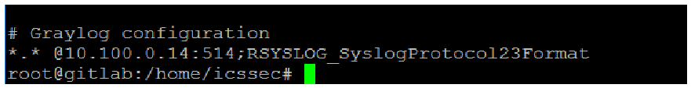
暗い背景の端末画面で、「# Graylog configuration」「*.* @10.100.0.14:514;RSYSLOG_SyslogProtocol23Format」の行と、緑のカーソルの付いたプロンプト「root@gitlab:/home/icssec#」が表示されています。
4.Save the change.
4.変更を保存します。
5.Restart rsyslog service: sudo systemctl restart rsyslog
5.rsyslog サービスを再起動する：sudo systemctl restart rsyslog
6.Login to the Graylog Web UI. Look for the events from these hosts.
6.Graylog の Web UI にログインします。これらのホストからのイベントを探します。
7.Click on Sources in the Top menu bar to verify if the Linux host shows up under the list of Selected sources.
7.トップメニューバーの Sources をクリックして、Linux ホストが Selected sources の一覧に表示されているか確認します。
8.Search for events from a host by entering a search query and selecting the appropriate time interval in the home page.
8.ホームページで、検索クエリを入力し、適切な時間間隔を選択して、ホストからのイベントを検索します。
For example: To search for events by hostname, enter source: <server name> in the Search box
たとえば、ホスト名でイベントを検索するには、Search ボックスに source: <server name> と入力します。
4.13.5.4 Configuring Syslog on the Boundary Firewall (RuggedCom
4.13.5.4 境界ファイアウォール（RuggedCom）での Syslog の構成
1.Login to the web UI of the RuggedCom firewall.
1.RuggedCom ファイアウォールの Web UI にログインします。
2.Click on Edit Private to enter configuration mode.
2.Edit Private をクリックして、構成モードに入ります。
3.Click on admin > logging > server. Click on Add a server
3.admin > logging > server をクリックします。Add a server をクリックします。
4.Enter the IP address of the syslog (Graylog) server.
4.syslog（Graylog）サーバーの IP アドレスを入力します。
5.Set the logging level as required. For example: Informational and above
5.必要に応じて、ロギングレベルを設定します。例：Informational 以上
6.Click Apply. Logout of the device.
6.Apply をクリックします。デバイスからログアウトします。
Detailed instructions can be found in the product manual.98
詳細な手順は、製品マニュアルに記載されています。98
4.13.5.5 Configuring Syslog on the Layer 2 Switches on the Workcell
4.13.5.5 ワークセルのレイヤー2スイッチでの Syslog の構成
Both the network switches (Netgear and Siemens i800) were configured to log to the Graylog server. The image below shows Syslog server configuration on the Netgear SW pointing to the IP address of the Graylog server.
両方のネットワークスイッチ（Netgear と Siemens i800）を、Graylog サーバーにログを記録するように構成しました。次の画像は、Netgear スイッチでの、Graylog サーバーの IP アドレスを指す Syslog サーバーの構成を示しています。
［第三者の画像。第三者の著作物のため、この非公式サイトには掲載していません。原本 PDF を参照してください。］
4.13.5.6 Configuring Email Notifications for Alert Conditions
4.13.5.6 アラート条件に対する電子メール通知の構成
Email alerts for any custom events, alert conditions can be setup. The process below shows how our Graylog was configured to send out email notifications for any events related to Veeam Backups that were received from the Windows clients.
任意のカスタムイベントおよびアラート条件に対する電子メールアラートを設定できます。次の手順では、Windows クライアントから受信した Veeam バックアップ関連のイベントについて、電子メール通知を送信するよう Graylog を構成した方法を示します。
Follow this process to define your custom alert conditions.
このプロセスに従って、カスタムのアラート条件を定義します。
There are three configuration settings required for email notification to work:
電子メール通知を機能させるには、3つの構成設定が必要です。
•Creating a stream.
•ストリームを作成します。
•Adding an alert condition.
•アラート条件を追加します。
•Creating a notification.
•通知を作成します。
1.Click on Streams on the Top-Menu > Create a Stream > Enter Title, Description, and Index Set which should default to Default index set
1.トップメニューの Streams > Create a Stream をクリックし、Title、Description、Index Set（デフォルトは Default index set）を入力する
2.Click Save to save the changes
2.Save をクリックして、変更を保存する
［第三者の画像。第三者の著作物のため、この非公式サイトには掲載していません。原本 PDF を参照してください。］
3.Click on Alerts in the Top menu > Manage conditions > Add New Condition to define a condition.
3.トップメニューの Alerts > Manage conditions > Add New Condition をクリックして、条件を定義します。
4.Click the Drop menu under Alert on Stream and select the stream created earlier. Under Condition Type, select Message Count Alert Condition.
4.Alert on Stream の下のドロップメニューをクリックし、先に作成したストリームを選択します。Condition Type の下で、Message Count Alert Condition を選択します。
［第三者の画像。第三者の著作物のため、この非公式サイトには掲載していません。原本 PDF を参照してください。］
5.Click Add Alert Condition. Fill out the required information in the window.
5.Add Alert Condition をクリックします。ウィンドウに、必要な情報を入力します。
6.Click Save to complete (See below for example of current Message Count Alert Condition).
6.Save をクリックして完了します（現在の Message Count Alert Condition の例は、以下を参照）。
［第三者の画像。第三者の著作物のため、この非公式サイトには掲載していません。原本 PDF を参照してください。］
7.Create a notification as follows:
7.次のように、通知を作成します。
a.Click on Manage notifications in upper right-hand corner.
a.右上隅の Manage notifications をクリックします。
b.Click Add New Notification
b.Add New Notification をクリックする
c.Select notification created earlier from the drop-down menu under Notify on Stream.
c.Notify on Stream の下のドロップダウンメニューから、先に作成した通知を選択します。
d.Select Email Alert Callback under Notification Type
d.Notification Type の下で Email Alert Callback を選択する
e.Click Add alert notification button
e.Add alert notification ボタンをクリックする
f.Title: < Some text> For instance: Veeam Backup Alerts
f.Title: < Some text> 例：Veeam Backup Alerts
g.(For Reference) Email Subject: “Successful Veeam Backup source: ${foreach backlog message}${message.source}${end}” without the quotes, see below for screen shot of current callback wording.
g.（参考）電子メールの件名：“Successful Veeam Backup source: ${foreach backlog message}${message.source}${end}”（引用符は含めない）。現在のコールバックの文言のスクリーンショットは、以下を参照してください。
h.Sender: < sender address >
h.Sender: < sender address >
i.E-mail Body:
i.E-mail Body:
Alert Description: ${check_result.resultDescription}
Date: ${check_result.triggeredAt}
Stream ID: ${stream.id}
Stream title: ${stream.title}
Stream description: ${stream.description}
Alert Condition Title: ${alertCondition.title}
${if backlog}Last messages accounting for this alert:
${foreach backlog message}${message}
${end}${else}<No backlog>
${end}
Alert Description: ${check_result.resultDescription}
Date: ${check_result.triggeredAt}
Stream ID: ${stream.id}
Stream title: ${stream.title}
Stream description: ${stream.description}
Alert Condition Title: ${alertCondition.title}
${if backlog}Last messages accounting for this alert:
${foreach backlog message}${message}
${end}${else}<No backlog>
${end}
j.User Receivers: Select a Graylog user if desired
j.User Receivers: 必要に応じて Graylog ユーザーを選択する
k.Email Receivers: Enter email address for individuals receiving these alerts
k.Email Receivers: これらのアラートを受け取る個人の電子メールアドレスを入力する
l.Click Save
l.Save をクリックする
8.Test new Streams / Alerts / Notifications to ensure they are configured correctly.
8.新しい Streams / Alerts / Notifications をテストして、正しく構成されていることを確認します。
4.13.5.7 Additional Information
4.13.5.7 追加情報
•There are many useful Content packs and plugins available99 as per vendor specific technologies, devices such as Cisco, Microsoft DNS, Bro IDS, Cacti, Symantec etc.
•ベンダー固有の技術や、Cisco、Microsoft DNS、Bro IDS、Cacti、Symantec などのデバイス向けの有用なコンテンツパックとプラグインが多数利用可能です99。
•Additional guidance is available on creating pipelines.100
•パイプラインの作成に関する追加のガイダンスが利用できます。100
Lessons Learned
得られた教訓
Carefully configure the level of logging on each system. In case of Windows clients, filter out Event IDs in the nxlog.conf instead of enabling every event category, as this can generate a high volume of events which in turn will impact search operations in Graylog and overall performance of the Graylog server. When using Group Policy to enable auditing, select only the categories which are required. Some categories such as Process Creation generate tremendous amount of noise.
各システムのログ記録レベルを慎重に構成してください。Windows クライアントの場合、すべてのイベントカテゴリを有効にするのではなく、nxlog.conf でイベント ID を絞り込んでください。すべてのカテゴリを有効にすると大量のイベントが生成され、Graylog での検索操作や Graylog サーバー全体の性能に影響します。グループポリシーで監査を有効にする場合は、必要なカテゴリだけを選択してください。Process Creation などの一部のカテゴリは、非常に大量のノイズを生成します。
4.13.6 Highlighted Performance Impacts
4.13.6 注目すべき性能への影響
Two performance measurement experiments were performed for the Graylog tool while the manufacturing system was operational:
製造システムの稼働中に、Graylog ツールについて2つの性能測定の実験を実施しました。
1.CL003.1 - Syslog service was installed and running on CRS network hosts, and all generated syslog messages were forwarded from CRS hosts to Graylog server.
1.CL003.1 - Syslog サービスを CRS ネットワークホストにインストールして稼働させ、生成されたすべての syslog メッセージを CRS ホストから Graylog サーバーへ転送しました。
2.CL003.2 - Syslog forwarding to Graylog was configured on CRS networking devices.
2.CL003.2 - CRS のネットワークデバイスで、Graylog への Syslog 転送を構成しました。
4.13.6.1 Experiment CL003.1
4.13.6.1 実験 CL003.1
The rsyslog service was installed and configured on CRS hosts to forward all syslog messages to the Graylog server. A total of 13 syslog packets were transmitted during the experiment by the rsyslog service on all CRS hosts (see Figure 4-48).
すべての syslog メッセージを Graylog サーバーに転送するよう、CRS ホストに rsyslog サービスをインストールして構成しました。実験中に、すべての CRS ホストの rsyslog サービスによって、合計13個の syslog パケットが送信されました（図4-48を参照）。
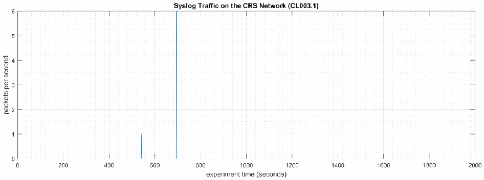
「Syslog Traffic on the CRS Network (CL003.1)」と題した時系列グラフです。縦軸は「packets per second」で 0〜6、横軸は「experiment time (seconds)」で 0〜2000 です。約 545 秒付近に毎秒約 1 パケット、約 690 秒付近に毎秒約 6 パケットの 2 つの突出があるだけで、それ以外は 0 です。
Figure 4-48 - Time series plot showing the rate of syslog network traffic (in packets per second) transmitted during the CL003.1 experiment.
図4-48 - CL003.1 実験中に送信された syslog ネットワークトラフィックの速度（パケット毎秒）を示す時系列プロット。
No performance impact to the manufacturing process was measured during the experiment.
実験中に、製造プロセスの性能への影響は測定されませんでした。

左右に並んだ 2 つの二重ヒストグラムです。左は「Part Production Time Bihistogram」で、縦軸は「count」（-4 to 3）、横軸は「production time (seconds)」（94.2 to 94.6）です。実験の度数を上向きの橙の棒、ベースラインの度数を下向きの青の棒で示します。右は「Bootstrap (34 parts, 1000 iterations)」で、縦軸は「probability」（-0.25 to 0.25）、横軸は「production time (seconds)」（94.34 to 94.48）です。凡例は「Experiment (CL003.1)」（橙、上向き）と「Baseline (CL001.1)」（青、下向き）です。
Figure 4-49 - Bihistograms showing the part production time (left) and estimated mean production time using the bootstrap method (right) using the measurements from baseline CL001.1 and experiment CL003.1.
図4-49 - ベースライン CL001.1 と実験 CL003.1 の測定値を使用した、部品の生産時間（左）と、ブートストラップ法を使用した推定平均生産時間（右）を示すバイヒストグラム。
4.13.6.2 Experiment CL003.2
4.13.6.2 実験 CL003.2
The rsyslog service was installed and configured on CRS networking devices to forward all syslog messages to the Graylog server. A total of 28 syslog packets were transmitted during the experiment by the rsyslog service from CRS hosts and networking devices (see Figure 4-50).
すべての syslog メッセージを Graylog サーバーに転送するよう、CRS のネットワークデバイスに rsyslog サービスをインストールして構成しました。実験中に、CRS ホストとネットワークデバイスの rsyslog サービスによって、合計28個の syslog パケットが送信されました（図4-50を参照）。
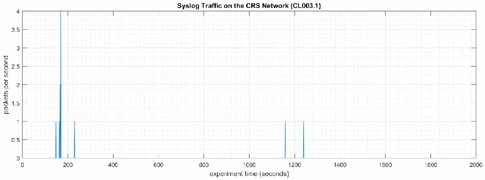
「Syslog Traffic on the CRS Network (CL003.1)」と題した時系列グラフです。縦軸は「packets per second」で 0〜4、横軸は「experiment time (seconds)」で 0〜2000 です。約 150〜175 秒に毎秒約 1〜4 パケットの突出があり、約 225 秒付近に約 1、約 1160 秒と約 1240 秒付近にも約 1 の突出があります。それ以外は 0 です。
Figure 4-50 - Time series plot showing the rate of syslog network traffic (in packets per second) transmitted during the CL003.2 experiment.
図4-50 - CL003.2 実験中に送信された syslog ネットワークトラフィックの速度（パケット毎秒）を示す時系列プロット。
No performance impact to the manufacturing process was measured during the experiment.
実験中に、製造プロセスの性能への影響は測定されませんでした。

左右に並んだ 2 つの二重ヒストグラムです。左は「Part Production Time Bihistogram」で、縦軸は「count」（-6 to 4）、横軸は「production time (seconds)」（94.15 to 94.55）です。実験の度数を上向きの橙の棒、ベースラインの度数を下向きの青の棒で示します。右は「Bootstrap (34 parts, 1000 iterations)」で、縦軸は「probability」（-0.4 to 0.4）、横軸は「production time (seconds)」（94.3 to 94.44）です。凡例は「Experiment (CL003.2)」（橙、上向き）と「Baseline (CL001.2)」（青、下向き）です。
Figure 4-51 - Bihistograms showing the part production time (left) and estimated mean production time using the bootstrap method (right) using the measurements from baseline CL001.1 and experiment CL003.2.
図4-51 - ベースライン CL001.1 と実験 CL003.2 の測定値を使用した、部品の生産時間（左）と、ブートストラップ法を使用した推定平均生産時間（右）を示すバイヒストグラム。
4.13.7 Links to Entire Performance Measurement Data Set
4.13.7 性能測定データセット全体へのリンク
•CL003.1-Syslog.zip
•CL003.1-Syslog.zip
•CL003.2-Syslog.zip
•CL003.2-Syslog.zip
4.14 DBAN
4.14 DBAN
4.14.1 Technical Solution Overview
4.14.1 技術ソリューションの概要
DBAN is a free open source data wiping utility allowing the ability to sanitize hard drives to ensure data is not left behind when drives are beginning decommissioned and prepared for removal from on premise. DBAN and other hard drive sanitization tools only work with spinning hard drives, SSD hard drives and other flash media refer to vendors for specific directions for sanitizing media before removing from company control.
DBAN は、無料のオープンソースのデータ消去ユーティリティで、ドライブを廃棄してオンプレミス環境からの撤去を準備する際にデータが残らないよう、ハードドライブをサニタイズできます。DBAN やその他のハードドライブ用サニタイズツールは回転式ハードドライブでのみ動作します。SSD ハードドライブやその他のフラッシュ媒体については、会社の管理下から外す前に媒体をサニタイズする具体的な手順をベンダーに確認してください。
4.14.2 Technical Capabilities Provided by Solution
4.14.2 ソリューションが提供する技術的能力
DBAN provides components of the following Technical Capabilities described in Section 6 of Volume 1:
DBAN は、第1巻の第6節で説明した、次の技術的能力の構成要素を提供します。
•Media Sanitization
•媒体のサニタイズ
4.14.3 Subcategories Addressed by Implementing Solution
4.14.3 ソリューションの実装によって対処するサブカテゴリ
PR.DS-3, PR.IP-6
PR.DS-3, PR.IP-6
4.14.4 Architecture Map of Where Solution was Implemented
4.14.4 ソリューションを実装した場所のアーキテクチャマップ
![Network architecture map of the Collaborative Robotics System (CRS) testbed, with a legend for the "DBAN Bootable media" traffic. Internet → Corporate Network → Manufacturing System Router/Firewall. Manufacturing DMZ: DMZ Historian 10.100.1.4 on "Manufacturing DMZ LAN - 10.100.1.0/24". Cybersecurity LAN ("Cybersecurity LAN - 10.100.0.0/24"): NTP/PTP Clock 10.100.0.15, Microsoft ActiveDirectory 10.100.0.13,17, Symantec Antivirus - SEPM 10.100.0.5, GTB Data Loss Prev. 10.100.0.175,176, Veeam Backup & Replication 10.100.0.10, Graylog Syslog 10.100.0.14. Workcell #1: CRS LAN Router (NAT) 10.100.0.20 / 192.168.0.2 / 192.168.1.2; "Supervisory LAN - 192.168.0.0/24" with Engineering Workstation 192.168.0.20, Supervisory and Safety PLC's 192.168.0.30, Operator HMI 192.168.0.98, Local Historian 192.168.0.10, Remote I/O 192.168.0.60; "Control LAN - 192.168.1.0/24" with Station 1 to Station 4 (192.168.1.101 to 192.168.1.104), Robot Driver 192.168.1.5 (connected to two robot arms by Field Bus) and Robot Controllers 192.168.1.3,4. A blue DBAN disc icon is placed on each host that can be sanitized: the DMZ Historian, the Cybersecurity LAN servers (Microsoft ActiveDirectory, Symantec, GTB, Veeam, Graylog), the Engineering Workstation, the Local Historian, Station 1 to Station 4, the Robot Driver, the Robot Controllers and the Cybersecurity Scanning Laptop 192.168.0.11 (attached to the Supervisory LAN by a dashed line with the note "NOTE: Connection present only during vulnerability and asset scanning."). The CRS LAN Router is labeled 10.100.0.20/32.](assets/ir-8183av3/p0245-figure-02.png)
協働ロボットシステム（CRS）試験環境のネットワーク構成図で、「DBAN Bootable media」の通信を示す凡例があります。Internet → Corporate Network → Manufacturing System Router/Firewall と接続します。Manufacturing DMZ には「Manufacturing DMZ LAN - 10.100.1.0/24」上の DMZ Historian 10.100.1.4 があります。Cybersecurity LAN（「Cybersecurity LAN - 10.100.0.0/24」）には NTP/PTP Clock 10.100.0.15、Microsoft ActiveDirectory 10.100.0.13,17、Symantec Antivirus - SEPM 10.100.0.5、GTB Data Loss Prev. 10.100.0.175,176、Veeam Backup & Replication 10.100.0.10、Graylog Syslog 10.100.0.14 があります。Workcell #1 には CRS LAN Router (NAT) 10.100.0.20 / 192.168.0.2 / 192.168.1.2 があり、「Supervisory LAN - 192.168.0.0/24」に Engineering Workstation 192.168.0.20、Supervisory and Safety PLC's 192.168.0.30、Operator HMI 192.168.0.98、Local Historian 192.168.0.10、Remote I/O 192.168.0.60、「Control LAN - 192.168.1.0/24」に Station 1〜Station 4（192.168.1.101〜192.168.1.104）、Robot Driver 192.168.1.5（Field Bus で 2 台のロボットアームに接続）、Robot Controllers 192.168.1.3,4 があります。消去の対象となる各ホストに青い DBAN のディスクのアイコンが付いています。対象は DMZ Historian、Cybersecurity LAN のサーバー（Microsoft ActiveDirectory、Symantec、GTB、Veeam、Graylog）、Engineering Workstation、Local Historian、Station 1〜Station 4、Robot Driver、Robot Controllers、Cybersecurity Scanning Laptop 192.168.0.11（破線で Supervisory LAN に接続し、「NOTE: Connection present only during vulnerability and asset scanning.」と注記）です。CRS LAN Router の表記は 10.100.0.20/32 です。
4.14.5 Installation Instructions and Configurations
4.14.5 インストール手順と構成
4.14.5.1 Setup
4.14.5.1 セットアップ
1.Download the DBAN ISO file101
1.DBAN の ISO ファイルをダウンロードする101
2.Burn to a CD/DVD, or USB drive using any of the available ISO bootable utilities.
2.利用可能な ISO の起動可能メディア作成ユーティリティを使って、CD/DVD または USB ドライブに書き込みます。
4.14.5.2 Instructions
4.14.5.2 手順
1.Boot up the computer requiring sanitization using the bootable media created earlier.
1.先に作成した起動可能な媒体を使って、サニタイズが必要なコンピュータを起動します。
2.Select the desire option for media sanitization upon boot. Typically, the default mode is applicable for most cases.
2.起動時に、媒体のサニタイズに使用する希望のオプションを選択します。通常は、ほとんどの場合にデフォルトのモードが適用できます。
［第三者の画像。第三者の著作物のため、この非公式サイトには掲載していません。原本 PDF を参照してください。］
3.Hit Enter Key to continue. The default sanitization mode is short DoD 5520.22-M, but this can be changed depending on the level your security program indicates.
3.Enter キーを押して続行します。デフォルトのサニタイズモードは short DoD 5520.22-M ですが、セキュリティプログラムが示すレベルに応じて、変更できます。
4.Follow the on-screen menu options to Start the Wiping process. Once the wipe has completed, you will see a screen like the image below.
4.画面のメニューオプションに従って、消去プロセスを開始（Start）します。消去が完了すると、次の画像のような画面が表示されます。
［第三者の画像。第三者の著作物のため、この非公式サイトには掲載していません。原本 PDF を参照してください。］
5.Remove the physical hard drive from device post completion. It is now ready for disposal.
5.完了後に、デバイスから物理ハードドライブを取り外します。これで廃棄の準備ができました。
Additional Information
追加情報
Not all hard drives can be wiped clean using this sanitization method. Media that is either SSD or flash memory is written differently than spinning drives, so follow SSD/Flash media vendors’ recommendations for proper media sanitization for all non-spinning hard drives.
すべてのハードドライブを、このサニタイズ方法で完全に消去できるわけではありません。SSD やフラッシュメモリの媒体は、回転式ドライブとは書き込み方法が異なるため、回転式ではないすべてのハードドライブについて、適切な媒体のサニタイズに関する SSD／フラッシュ媒体ベンダーの推奨事項に従ってください。
4.14.6 Highlighted Performance Impacts
4.14.6 注目すべき性能への影響
No performance measurement experiments were performed for the use of DBAN due to its typical installation and usage location.
DBAN の使用については、その通常のインストール場所と使用場所の都合上、性能測定の実験を実施しませんでした。
4.14.7 Links to Entire Performance Measurement Data Set
4.14.7 性能測定データセット全体へのリンク
N/A
N/A
4.15 Network Segmentation and Segregation
4.15 ネットワークのセグメンテーションと分離
4.15.1 Technical Solution Overview
4.15.1 技術ソリューションの概要
Network segmentation and segregation solutions enable a manufacturer to separate the manufacturing system network from other networks (e.g., corporate networks, guest networks), segment the internal manufacturing system network into smaller networks, and control the communication between specific hosts and services.
ネットワークのセグメンテーションと分離のソリューションにより、製造者は、製造システムのネットワークを他のネットワーク（企業ネットワーク、ゲストネットワークなど）から分離し、製造システム内部のネットワークをより小さなネットワークに分割し、特定のホストやサービス間の通信を制御できます。
Each router’s native capabilities were leveraged to implemented network segmentation.
ネットワークのセグメンテーションの実装には、各ルーターの標準機能を活用しました。
4.15.2 Technical Capabilities Provided by Solution
4.15.2 ソリューションが提供する技術的能力
Network Segmentation and Segregation provides components of the following Technical Capabilities described in Section 6 of Volume 1:
ネットワークのセグメンテーションと分離は、第1巻の第6節で説明した、次の技術的能力の構成要素を提供します。
•Network Segmentation and Segregation
•ネットワークのセグメンテーションと分離
4.15.3 Subcategories Addressed by Implementing Solution
4.15.3 ソリューションの実装によって対処するサブカテゴリ
PR.AC-5
PR.AC-5
4.15.4 Architecture Map of Where Solution was Implemented
4.15.4 ソリューションを実装した場所のアーキテクチャマップ
![Network architecture map of the Collaborative Robotics System (CRS) testbed. Internet → Corporate Network → Manufacturing System Router/Firewall. Manufacturing DMZ: DMZ Historian 10.100.1.4 on "Manufacturing DMZ LAN - 10.100.1.0/24". Cybersecurity LAN ("Cybersecurity LAN - 10.100.0.0/24"): NTP/PTP Clock 10.100.0.15, Microsoft ActiveDirectory 10.100.0.13,17, Symantec Antivirus - SEPM 10.100.0.5, GTB Data Loss Prev. 10.100.0.175,176, Veeam Backup & Replication 10.100.0.10, Graylog Syslog 10.100.0.14. Workcell #1: CRS LAN Router (NAT) 10.100.0.20 / 192.168.0.2 / 192.168.1.2; "Supervisory LAN - 192.168.0.0/24" with Engineering Workstation 192.168.0.20, Supervisory and Safety PLC's 192.168.0.30, Operator HMI 192.168.0.98, Local Historian 192.168.0.10, Remote I/O 192.168.0.60; "Control LAN - 192.168.1.0/24" with Station 1 to Station 4 (192.168.1.101 to 192.168.1.104), Robot Driver 192.168.1.5 (connected to two robot arms by Field Bus) and Robot Controllers 192.168.1.3,4. Small switch icons labeled "Switch" are drawn at the Manufacturing System Router/Firewall (toward the Manufacturing DMZ LAN), at the top of the Cybersecurity LAN, and on both sides of the CRS LAN Router (10.100.0.20/32, 192.168.0.2, 192.168.1.2) in Workcell #1, marking where each segment is separated. The Cybersecurity Scanning Laptop (Nessus, OpenAudIT) 192.168.0.11 is attached to the Supervisory LAN by a dashed line with the note "NOTE: Connection present only during vulnerability and asset scanning.".](assets/ir-8183av3/p0249-figure-02.png)
協働ロボットシステム（CRS）試験環境のネットワーク構成図です。Internet → Corporate Network → Manufacturing System Router/Firewall と接続します。Manufacturing DMZ には「Manufacturing DMZ LAN - 10.100.1.0/24」上の DMZ Historian 10.100.1.4 があります。Cybersecurity LAN（「Cybersecurity LAN - 10.100.0.0/24」）には NTP/PTP Clock 10.100.0.15、Microsoft ActiveDirectory 10.100.0.13,17、Symantec Antivirus - SEPM 10.100.0.5、GTB Data Loss Prev. 10.100.0.175,176、Veeam Backup & Replication 10.100.0.10、Graylog Syslog 10.100.0.14 があります。Workcell #1 には CRS LAN Router (NAT) 10.100.0.20 / 192.168.0.2 / 192.168.1.2 があり、「Supervisory LAN - 192.168.0.0/24」に Engineering Workstation 192.168.0.20、Supervisory and Safety PLC's 192.168.0.30、Operator HMI 192.168.0.98、Local Historian 192.168.0.10、Remote I/O 192.168.0.60、「Control LAN - 192.168.1.0/24」に Station 1〜Station 4（192.168.1.101〜192.168.1.104）、Robot Driver 192.168.1.5（Field Bus で 2 台のロボットアームに接続）、Robot Controllers 192.168.1.3,4 があります。「Switch」と記したスイッチのアイコンが、Manufacturing System Router/Firewall（Manufacturing DMZ LAN 側）、Cybersecurity LAN の上部、Workcell #1 の CRS LAN Router（10.100.0.20/32、192.168.0.2、192.168.1.2）の両側にあり、各セグメントを分ける位置を示します。Cybersecurity Scanning Laptop (Nessus, OpenAudIT) 192.168.0.11 は破線で Supervisory LAN に接続し、「NOTE: Connection present only during vulnerability and asset scanning.」と注記されています。
4.15.5 Installation Instructions and Configurations
4.15.5 インストール手順と構成
4.15.5.1 Environment Setup
4.15.5.1 環境のセットアップ
The following devices were involved in implementing Network Segmentation:
次のデバイスが、ネットワークのセグメンテーションの実装に関わりました。
| Device | Details | Location |
|---|---|---|
| Cisco-ASA 5512 | NGFW, running Firepower Services FTD 6.2.3 | Manufacturing System |
| RuggedCom RX1510 | Firewall, Router | Workcell |
| デバイス | 詳細 | 場所 |
|---|---|---|
| Cisco-ASA 5512 | NGFW、Firepower Services FTD 6.2.3 を実行 | 製造システム |
| RuggedCom RX1510 | ファイアウォール、ルーター | ワークセル |
4.15.5.2 Segmentation in the Cybersecurity LAN
4.15.5.2 サイバーセキュリティ LAN でのセグメンテーション
Following is a list of interfaces created on the Boundary Router/Firewall – Cisco ASA of the Cybersecurity LAN network:
次に、サイバーセキュリティ LAN ネットワークの境界ルーター／ファイアウォールである Cisco ASA に作成したインターフェースの一覧を示します。
| Interface | IP address of Interface | Subnet | Description |
|---|---|---|---|
| GE 0/0 | 129.6.66.x | 129.x.x.x/x | Uplink to Corporate |
| GE 0/1 | 10.100.0.1 | 10.100.0.0/24 | Cybersecurity LAN |
| GE 0/2 | 129.6.1.x | 129.x.x.x/x | VPN users |
| GE 0/3 | 10.100.2.1 | 10.100.2.0/24 | Management LAN |
| GE 0/4 | 10.100.1.1 | 10.100.1.0/24 | Manufacturing DMZ LAN |
| インターフェース | インターフェースの IP アドレス | サブネット | 説明 |
|---|---|---|---|
| GE 0/0 | 129.6.66.x | 129.x.x.x/x | 企業へのアップリンク |
| GE 0/1 | 10.100.0.1 | 10.100.0.0/24 | サイバーセキュリティ LAN |
| GE 0/2 | 129.6.1.x | 129.x.x.x/x | VPN ユーザー |
| GE 0/3 | 10.100.2.1 | 10.100.2.0/24 | 管理用 LAN |
| GE 0/4 | 10.100.1.1 | 10.100.1.0/24 | 製造 DMZ LAN |
4.15.5.3 Segmentation in the Workcell
4.15.5.3 ワークセルでのセグメンテーション
The Workcell consists of the following network devices:
ワークセルは、次のネットワークデバイスで構成されています。
| Type | Description |
|---|---|
| RuggedCom RX Firewall | Boundary protection firewall, router |
| Siemens i800 Switch | Layer-2 Switch for the Control Network |
| Netgear GS724T Switch | Layer-2 Switch for the Supervisory Network |
| 種類 | 説明 |
|---|---|
| RuggedCom RX ファイアウォール | 境界保護のファイアウォール、ルーター |
| Siemens i800 スイッチ | 制御ネットワーク用のレイヤー2スイッチ |
| Netgear GS724T スイッチ | 監視用ネットワーク用のレイヤー2スイッチ |
List of interfaces created on the firewall. There were two subnets created as listed in the table below.
ファイアウォールに作成したインターフェースの一覧。次の表に示すとおり、2つのサブネットを作成しました。
| Interface | IP address of Interface | Subnet | Description |
|---|---|---|---|
| Ge-2-1 | 192.168.1.2 | 192.168.1.0/24 | Control LAN Network |
| Ge-2-2 | N/A | N/A | Mirror Port |
| Ge-3-1 | 192.168.0.2 | 192.168.0.0/24 | Supervisory LAN Network |
| Ge-3-2 | 10.100.0.20 | N/A | Uplink to Cybersecurity LAN |
| インターフェース | インターフェースの IP アドレス | サブネット | 説明 |
|---|---|---|---|
| Ge-2-1 | 192.168.1.2 | 192.168.1.0/24 | 制御用 LAN ネットワーク |
| Ge-2-2 | N/A | N/A | ミラーポート |
| Ge-3-1 | 192.168.0.2 | 192.168.0.0/24 | 監督用 LAN ネットワーク |
| Ge-3-2 | 10.100.0.20 | N/A | サイバーセキュリティ LAN へのアップリンク |
The Siemens i800 switch is connected to the Ge-2-1 interface of the RX1510 and used for the Control LAN network. Devices connected to this i800 switch such as the 4 Machining stations, Robot Driver server were assigned an IP address from the Control LAN subnet (192.168.1.0/24).
Siemens i800 スイッチは、RX1510 の Ge-2-1 インターフェースに接続され、制御用 LAN ネットワークに使用されます。この i800 スイッチに接続されている、4台の加工ステーションやロボットドライバーサーバーなどのデバイスには、制御用 LAN サブネット（192.168.1.0/24）の IP アドレスが割り当てられました。
The Netgear switch is connected to the Ge-3-1 interface of RX1510 and used for the Supervisory LAN network. Devices connected to this switch such as the PLC, HMI, Engineering workstation were accordingly assigned an IP address from this Supervisory LAN subnet (192.168.0.0/24)
Netgear スイッチは、RX1510 の Ge-3-1 インターフェースに接続され、監視用 LAN ネットワークに使用されます。このスイッチに接続されている PLC、HMI、エンジニアリングワークステーションなどのデバイスには、それに応じて、この監視用 LAN サブネット（192.168.0.0/24）の IP アドレスが割り当てられました。
4.15.6 Highlighted Performance Impacts
4.15.6 注目すべき性能への影響
No performance measurement experiments were performed for network segmentation due to it being implemented on the CRS before the Manufacturing Profile implementation was initiated.
ネットワークのセグメンテーションについては、製造プロファイルの実装を開始する前に CRS に実装済みであったため、性能測定の実験を実施しませんでした。
4.15.7 Links to Entire Performance Measurement Data Set
4.15.7 性能測定データセット全体へのリンク
N/A
N/A
4.16 Network Boundary Protection
4.16 ネットワーク境界保護
4.16.1 Technical Solution Overview
4.16.1 技術ソリューションの概要
Boundary Protection devices are implemented to monitor and control connections and communications at the external boundary and key internal boundaries within the organization. Boundary protection mechanisms include for example, routers, firewalls, gateways, data diodes separating system components into logically separate networks and sub networks.
境界保護デバイスは、組織内の外部境界および主要な内部境界における接続と通信を監視し、制御するために実装されます。境界保護の仕組みには、たとえば、システムの構成要素を論理的に分離されたネットワークやサブネットワークに分けるルーター、ファイアウォール、ゲートウェイ、データダイオードなどがあります。
4.16.2 Technical Capabilities Provided by Solution
4.16.2 ソリューションが提供する技術的能力
Network Boundary Protection provides components of the following Technical Capabilities described in Section 6 of Volume 1:
ネットワーク境界保護は、第1巻の第6節で説明した、次の技術的能力の構成要素を提供します。
•Network Boundary Protection
•ネットワーク境界保護
4.16.3 Subcategories Addressed by Implementing Solution
4.16.3 ソリューションの実装によって対処するサブカテゴリ
PR.AC-5, PR.PT-4, DE.CM-1
PR.AC-5, PR.PT-4, DE.CM-1
4.16.4 Architecture Map of Where Solution was Implemented
4.16.4 ソリューションを実装した場所のアーキテクチャマップ
![Network architecture map of the Collaborative Robotics System (CRS) testbed. Internet → "Corporate Network" → "Manufacturing System Router/Firewall", which connects the "Manufacturing DMZ" ("DMZ Historian 10.100.1.4" on "Manufacturing DMZ LAN - 10.100.1.0/24") and the "Cybersecurity LAN" ("Cybersecurity LAN - 10.100.0.0/24" with "NTP/PTP Clock 10.100.0.15", "Microsoft ActiveDirectory 10.100.0.13,17", "Symantec Antivirus 10.100.0.5", "GTB Data Loss Prev. 10.100.0.175,176", "Veeam Backup 10.100.0.10", "Graylog Syslog 10.100.0.14"). "Workcell #1" is reached through the "CRS LAN Router (NAT) 10.100.0.20/32" (192.168.0.2, 192.168.1.2) with a "Switch" on each side. On "Supervisory LAN - 192.168.0.0/24": "Engineering Workstation 192.168.0.20", "Supervisory and Safety PLC's 192.168.0.30", "Operator HMI 192.168.0.98", "Local Historian 192.168.0.10", "Remote I/O 192.168.0.60". On "Control LAN - 192.168.1.0/24": "Station 1 192.168.1.101" to "Station 4 192.168.1.104", "Robot Driver 192.168.1.5" connected to two robot arms by "Field Bus", and "Robot Controllers 192.168.1.3,4". A "Cybersecurity Scanning Laptop (Nessus, OpenAudIT) 192.168.0.11" is attached by a dashed line with the note "NOTE: Connection present only during vulnerability and asset scanning." Legend: globe-and-padlock icon = "Boundary Protection Device". The icon marks the Manufacturing System Router/Firewall, the GTB Data Loss Prev. servers and the CRS LAN Router.](assets/ir-8183av3/p0253-figure-02.png)
Collaborative Robotics System（CRS）の試験環境のネットワーク構成図です。Internet →「Corporate Network」→「Manufacturing System Router/Firewall」とつながり、このルーターに「Manufacturing DMZ」（「Manufacturing DMZ LAN - 10.100.1.0/24」上の「DMZ Historian 10.100.1.4」）と「Cybersecurity LAN」（「Cybersecurity LAN - 10.100.0.0/24」上の「NTP/PTP Clock 10.100.0.15」「Microsoft ActiveDirectory 10.100.0.13,17」「Symantec Antivirus 10.100.0.5」「GTB Data Loss Prev. 10.100.0.175,176」「Veeam Backup 10.100.0.10」「Graylog Syslog 10.100.0.14」）が接続されています。「Workcell #1」には「CRS LAN Router (NAT) 10.100.0.20/32」（192.168.0.2, 192.168.1.2）を経由して接続し、その両側に「Switch」があります。「Supervisory LAN - 192.168.0.0/24」には「Engineering Workstation 192.168.0.20」「Supervisory and Safety PLC's 192.168.0.30」「Operator HMI 192.168.0.98」「Local Historian 192.168.0.10」「Remote I/O 192.168.0.60」が、「Control LAN - 192.168.1.0/24」には「Station 1 192.168.1.101」から「Station 4 192.168.1.104」、「Field Bus」で 2 台のロボットアームにつながる「Robot Driver 192.168.1.5」、「Robot Controllers 192.168.1.3,4」が接続されています。「Cybersecurity Scanning Laptop (Nessus, OpenAudIT) 192.168.0.11」は破線で接続され、「NOTE: Connection present only during vulnerability and asset scanning.」と注記されています。凡例では、地球と錠のアイコンは「Boundary Protection Device」を表します。このアイコンは、Manufacturing System Router/Firewall、GTB Data Loss Prev. の各サーバー、CRS LAN Router に付いています。
4.16.5 Installation Instructions and Configurations
4.16.5 インストール手順と構成
4.16.5.1 Environment Setup
4.16.5.1 環境のセットアップ
The following devices were setup for Boundary protection:
次のデバイスを、境界保護のためにセットアップしました。
| Device | Details | Location |
|---|---|---|
| Cisco-ASA 5512 | NGFW, running Firepower Services FTD 6.2.3 | Manufacturing System |
| RuggedCom RX1510 | Firewall + Router running ROS 2.12.2 | Workcell |
| GTB Inspector | Data Loss Prevention (DLP) virtual appliance | Cybersecurity LAN |
| デバイス | 詳細 | 場所 |
|---|---|---|
| Cisco-ASA 5512 | NGFW、Firepower Services FTD 6.2.3 を実行 | 製造システム |
| RuggedCom RX1510 | ファイアウォール + ルーター、ROS 2.12.2 を実行 | ワークセル |
| GTB Inspector | データ損失防止（DLP）仮想アプライアンス | サイバーセキュリティ LAN |
4.16.5.2 Configuration on Cisco-ASA
4.16.5.2 Cisco-ASA での構成
The following features, settings were enabled on the ASA firewall:
ASA ファイアウォールでは、次の機能と設定を有効にしました。
•Network Segmentation
•ネットワークのセグメンテーション
•ACL Rules
•ACL ルール
•NAT policy for Internet access
•インターネットアクセス用の NAT ポリシー
•Snort Inspection
•Snort による検査
•DMZ network
•DMZ ネットワーク
Network Segmentation
ネットワークのセグメンテーション
Separate network interfaces were configured for the different network segments as listed below:
次に示すとおり、ネットワークセグメントごとに、別々のネットワークインターフェースを構成しました。
•Inside Interface (Network: 10.100.0.0/24)
•内側インターフェース（ネットワーク：10.100.0.0/24）
•DMZ Interface (Network: 10.100.1.0/24)
•DMZ インターフェース（ネットワーク：10.100.1.0/24）
•Outside Interface (Uplink to NIST Corporate for Internet)
•外側インターフェース（インターネットに向けた NIST 企業ネットワークへのアップリンク）
•Management interface (out of scope)
•管理インターフェース（範囲外）
Access Control List (ACL) rules
アクセス制御リスト（ACL）ルール
The following ACL rules were put in place on the ASA with a default Action to Block all traffic.
次の ACL ルールを ASA に設定しました。デフォルトのアクションは、すべてのトラフィックのブロックです。
| Source | Source Port | Destination | Dest Ports | Protocol | Action |
|---|---|---|---|---|---|
| 10.100.0.0/24, | Any | DMZ network | SSH,RDP,ICMP | TCP | Trust |
| DMZ Historian | TCP_High _Ports | PCS-Historian | 5450 | TCP | Trust |
| CRS-NAT (10.100.0.20) | TCP_High _Ports | DMZ-Historian | 5450, 5460, 5671, 5672 | TCP | Trust |
| DMZ Historian | TCP_High _Ports | CRS-NAT (10.100.0.20) | 5457, 5450 | TCP | Trust |
| DMZ Historian | Any | Active Directory (10.100.0.17) | 53 | UDP | Allow |
| Veeam Server | Any | Hyper-V Host servers, Esxi Host Server | NETBIOS, ICMP, HTTPS, 445, TCP_High_port, 2500-5000, 6160-6163 | TCP | Trust |
| Hyper-V Host Servers, Esxi Host Server | Any | Veeam Server | ICMP, 2500-5000 | TCP | Trust |
| inside_interface | Any | outside_interface | Any | Any | Allow |
| DMZ Historian | Any | Symantec Server | SMB (445), HTTPS | TCP | Trust |
| Symantec Server | Any | DMZ Historian | HTTP, HTTPS, 8014 | TCP | Trust |
| DMZ Historian | Any | Graylog Server | 514 | UDP | Trust |
| 送信元 | 送信元ポート | 宛先 | 宛先ポート | プロトコル | アクション |
|---|---|---|---|---|---|
| 10.100.0.0/24, | Any | DMZ network | SSH,RDP,ICMP | TCP | Trust |
| DMZ Historian | TCP_High _Ports | PCS-Historian | 5450 | TCP | Trust |
| CRS-NAT (10.100.0.20) | TCP_High _Ports | DMZ-Historian | 5450, 5460, 5671, 5672 | TCP | Trust |
| DMZ Historian | TCP_High _Ports | CRS-NAT (10.100.0.20) | 5457, 5450 | TCP | Trust |
| DMZ Historian | Any | Active Directory (10.100.0.17) | 53 | UDP | Allow |
| Veeam Server | Any | Hyper-V Host servers, Esxi Host Server | NETBIOS, ICMP, HTTPS, 445, TCP_High_port, 2500-5000, 6160-6163 | TCP | Trust |
| Hyper-V Host Servers, Esxi Host Server | Any | Veeam Server | ICMP, 2500-5000 | TCP | Trust |
| inside_interface | Any | outside_interface | Any | Any | Allow |
| DMZ Historian | Any | Symantec Server | SMB (445), HTTPS | TCP | Trust |
| Symantec Server | Any | DMZ Historian | HTTP, HTTPS, 8014 | TCP | Trust |
| DMZ Historian | Any | Graylog Server | 514 | UDP | Trust |
NAT Policy
NAT ポリシー
A Dynamic NAT policy was configured to allow internet access:
インターネットアクセスを許可するために、動的 NAT ポリシーを構成しました。
| Type of NAT rule | Auto NAT |
| Source Interface | inside |
| Destination Interface | outside |
| Original sources | 10.100.0.0/8 |
| Translated Source | Destination Interface IP |
| Options | Translate DNS Replies that match this Rule: False |
| NAT ルールの種類 | Auto NAT |
| 送信元インターフェース | inside |
| 宛先インターフェース | outside |
| 元の送信元 | 10.100.0.0/8 |
| 変換後の送信元 | 宛先インターフェースの IP |
| オプション | Translate DNS Replies that match this Rule: False |
［第三者の画像。第三者の著作物のため、この非公式サイトには掲載していません。原本 PDF を参照してください。］
Snort Inspection
Snort による検査
Snort Inspection was enabled on the following ACL rules:
次の ACL ルールで、Snort による検査を有効にしました。
| Name of the ACL | Intrusion Policy |
|---|---|
| Internet-Access rule | Balanced connectivity and security |
| ACL の名前 | 侵入ポリシー |
|---|---|
| Internet-Access rule | Balanced connectivity and security |
［第三者の画像。第三者の著作物のため、この非公式サイトには掲載していません。原本 PDF を参照してください。］
DMZ Network
DMZ ネットワーク
A Separate interface was setup for the Manufacturing DMZ LAN Network for hosting the DMZ Historian server.
DMZ ヒストリアンサーバーをホストするために、製造 DMZ LAN ネットワーク用に別のインターフェースをセットアップしました。
［第三者の画像。第三者の著作物のため、この非公式サイトには掲載していません。原本 PDF を参照してください。］
4.16.5.3 Configuration on RuggedCom Firewall
4.16.5.3 RuggedCom ファイアウォールでの構成
The following features, settings were enabled on this firewall:
このファイアウォールでは、次の機能と設定を有効にしました。
•Network Segmentation
•ネットワークのセグメンテーション
•ACL Rules
•ACL ルール
•Masquerading (NAT) rules
•マスカレード（NAT）ルール
Network Segmentation
ネットワークのセグメンテーション
Separate network interfaces were configured for the different network segments as listed below:
次に示すとおり、ネットワークセグメントごとに、別々のネットワークインターフェースを構成しました。
•Supervisory LAN Interface (Network: 192.168.0.0/24)
•監督用 LAN インターフェース（ネットワーク：192.168.0.0/24）
•Control LAN Interface (Network: 192.168.1.1/24)
•制御用 LAN インターフェース（ネットワーク：192.168.1.1/24）
•LAN Interface (IP: 10.100.0.20, Uplink to Cybersecurity LAN)
•LAN インターフェース（IP：10.100.0.20、サイバーセキュリティ LAN へのアップリンク）
Access Control List (ACL) rules
アクセス制御リスト（ACL）ルール
The following zones were created:
次のゾーンを作成しました。
•WAN - Zone for internet-bound / uplink connections to Cybersecurity LAN.
•WAN - インターネット向け／サイバーセキュリティ LAN へのアップリンク接続用のゾーン。
•CTRL - Zone for the 192.168.1.0/24 subnet.
•CTRL - 192.168.1.0/24 サブネット用のゾーン。
•SUPERVISORY - Zone for the 192.168.0.0/24 subnet.
•SUPERVISORY - 192.168.0.0/24 サブネット用のゾーン。
•MGMT - Zone for the management interface traffic (out of scope)
•MGMT - 管理インターフェースのトラフィック用のゾーン（範囲外）
The following firewall policies were created:
次のファイアウォールポリシーを作成しました。
•Allow traffic between firewall and WAN.
•ファイアウォールと WAN の間のトラフィックを許可します。
•Allow traffic between firewall and MGMT.
•ファイアウォールと MGMT の間のトラフィックを許可します。
•Allow traffic between firewall and CTRL.
•ファイアウォールと CTRL の間のトラフィックを許可します。
•Allow traffic between firewall and Supervisory.
•ファイアウォールと Supervisory の間のトラフィックを許可します。
•All other traffic is DROPPED.
•それ以外のすべてのトラフィックは破棄（DROPPED）されます。
The following firewall rules were created:
次のファイアウォールルールを作成しました。
1.ALLOW: POLARIS:ANY -> 192.168.1.0/24,10.100.0.0/24:22 (TCP)
1.ALLOW: POLARIS:ANY -> 192.168.1.0/24,10.100.0.0/24:22 (TCP)
2.ALLOW: vCONTROLLER1,vCONTROLLER2:ANY -> PLC:502 (TCP)
2.ALLOW: vCONTROLLER1,vCONTROLLER2:ANY -> PLC:502 (TCP)
3.ALLOW: STATION1,STATION2,STATION3,STATION4:ANY -> PLC,HMI:502 (TCP)
3.ALLOW: STATION1,STATION2,STATION3,STATION4:ANY -> PLC,HMI:502 (TCP)
4.ALLOW: STATION4:ANY -> PLC:502 (TCP)
4.ALLOW: STATION4:ANY -> PLC:502 (TCP)
5.ALLOW: HISTORIAN:ANY -> STATION1,STATION2,STATION3,STATION4,PLC:502 (TCP)
5.ALLOW: HISTORIAN:ANY -> STATION1,STATION2,STATION3,STATION4,PLC:502 (TCP)
6.ALLOW: MINTAKA,vCONTROLLER1,vCONTROLLER2:ANY -> POLARIS:11311 (TCP)
6.ALLOW: MINTAKA,vCONTROLLER1,vCONTROLLER2:ANY -> POLARIS:11311 (TCP)
7.ALLOW: vCONTROLLER1,vCONTROLLER2:ANY -> POLARIS:115,2049 (TCP)
7.ALLOW: vCONTROLLER1,vCONTROLLER2:ANY -> POLARIS:115,2049 (TCP)
8.ALLOW: vCONTROLLER1,vCONTROLLER2:ANY -> POLARIS:115,2049 (UDP)
8.ALLOW: vCONTROLLER1,vCONTROLLER2:ANY -> POLARIS:115,2049 (UDP)
9.ALLOW: ANY:ANY -> ANY:ANY (ICMP)
9.ALLOW: ANY:ANY -> ANY:ANY (ICMP)
10.ALLOW: PLC,HMI:ANY -> STATION1,STATION2,STATION3,STATION4:502 (TCP)
10.ALLOW: PLC,HMI:ANY -> STATION1,STATION2,STATION3,STATION4:502 (TCP)
11.ALLOW: PLC:ANY -> vCONTROLLER1,vCONTROLLER2:502 (TCP)
11.ALLOW: PLC:ANY -> vCONTROLLER1,vCONTROLLER2:502 (TCP)
12.ALLOW: POLARIS:32678-65535 -> MINTAKA,vCONTROLLER1,vCONTROLLER2:32768-65535 (TCP)
12.ALLOW: POLARIS:32678-65535 -> MINTAKA,vCONTROLLER1,vCONTROLLER2:32768-65535 (TCP)
13.ALLOW: POLARIS:ANY -> I800Switch-Management-UI:80,443 (TCP)
13.ALLOW: POLARIS:ANY -> I800Switch-Management-UI:80,443 (TCP)
14.ALLOW: NESSUS/OPEN-AUDIT:ANY -> 192.168.1.0/24:22 (TCP)
14.ALLOW: NESSUS/OPEN-AUDIT:ANY -> 192.168.1.0/24:22 (TCP)
15.ALLOW: VCONTROLLER1,VCONTROLLER2:32768-65535 -> POLARIS:32768:65535 (UDP)
15.ALLOW: VCONTROLLER1,VCONTROLLER2:32768-65535 -> POLARIS:32768:65535 (UDP)
［第三者の画像。第三者の著作物のため、この非公式サイトには掲載していません。原本 PDF を参照してください。］
NAT Policy
NAT ポリシー
Two Masquerading rules were created (one for each LAN segment) to NAT all traffic going outbound from the Workcell to the Cybersecurity LAN network. Masquerading is a form of Dynamic NAT. Both hide a single subnetwork behind a single IP address
ワークセルからサイバーセキュリティ LAN ネットワークへ向かうすべての送信トラフィックを NAT するために、（LAN セグメントごとに1つずつ）2つのマスカレードルールを作成しました。マスカレードは動的 NAT の一形態です。どちらも、1つのサブネットワークを、1つの IP アドレスの背後に隠します
| Rule # | Outgoing Interface | Source Network | NAT IP address |
|---|---|---|---|
| 1 | Ge-3-2 (Uplink interface to Cybersecurity LAN) | 192.168.1.0/20 | 10.100.0.20 |
| 2 | Ge-3-2 (Uplink interface to Cybersecurity LAN) | 192.168.0.0/20 | 10.100.0.20 |
| ルール番号 | 送信インターフェース | 送信元ネットワーク | NAT の IP アドレス |
|---|---|---|---|
| 1 | Ge-3-2（サイバーセキュリティ LAN へのアップリンクインターフェース） | 192.168.1.0/20 | 10.100.0.20 |
| 2 | Ge-3-2（サイバーセキュリティ LAN へのアップリンクインターフェース） | 192.168.0.0/20 | 10.100.0.20 |
［第三者の画像。第三者の著作物のため、この非公式サイトには掲載していません。原本 PDF を参照してください。］
4.16.5.4 Configuration on GTB Inspector
4.16.5.4 GTB Inspector での構成
Refer to section 4.12.5
第4.12.5節を参照してください。
4.16.6 Highlighted Performance Impacts
4.16.6 注目すべき性能への影響
Two performance measurement experiments were performed for network boundary protection while the manufacturing system was operational:
製造システムの稼働中に、ネットワーク境界保護について2つの性能測定の実験を実施しました。
1.CL009.1 - Firewall rules and Access control list (ACL) rules are implemented at the CRS boundary router.
1.CL009.1 - ファイアウォールルールとアクセス制御リスト（ACL）ルールを、CRS の境界ルーターに実装します。
2.CL012.1 - Firewall and ACL rules are implemented on an upgraded boundary router.
2.CL012.1 - ファイアウォールルールと ACL ルールを、アップグレードした境界ルーターに実装します。
These two experiments were performed chronologically after the experiment CL011.2 where the activities performed caused permanent performance impacts to the CRS (see Section 4.11.6.2). The performance impacts first observed during CL011.2 (and again measured as part of CL009.1 and CL012.1) are not included in those sections.
これら2つの実験は、実施した作業によって CRS に恒久的な性能への影響が生じた実験 CL011.2 の後に、時系列で実施しました（第4.11.6.2節を参照）。CL011.2 で最初に観測された性能への影響（CL009.1 と CL012.1 の一部として再び測定されたもの）は、それらの項には含めていません。
4.16.6.1 Experiment CL009.1
4.16.6.1 実験 CL009.1
Firewall rules and access control list (ACL) rules were implemented at the CRS boundary router. All authorized connections were verified to be allowed by the firewall before the manufacturing process was operational.
ファイアウォールルールとアクセス制御リスト（ACL）ルールを、CRS の境界ルーターに実装しました。承認されたすべての接続が、製造プロセスの稼働前にファイアウォールで許可されることを確認しました。
A small increase in the average robot job actuation time was observed on Robot 2 for Job 203 (see Figure 4-52). No other increases were observed for any of the other jobs.
ジョブ203のロボット2で、ロボットジョブの平均作動時間がわずかに増加したことが観測されました（図4-52を参照）。ほかのジョブでは増加は観測されませんでした。
![Two panels. Left: time series "Robot Job 203 Execution Time", y axis "job actuation time (sec)" from 12.4 to 12.52, x axis "part number" from 0 to 35; legend "Baseline (CL001.2)" (blue) and "Experiment (CL009.1)" (orange). The experiment values lie mostly between about 12.43 and 12.52, generally above the baseline values (about 12.40 to 12.48). Right: "Robot Job 203 Execution Time Box Plot", y axis "job actuation time (sec)" from about 13.69 to 13.81, x axis "experiment ID" with CL001.2 and CL009.1; the CL009.1 box (median about 13.765) is higher than the CL001.2 box (median about 13.73).](assets/ir-8183av3/p0261-figure-02.png)
2 つのグラフです。左は時系列グラフ「Robot Job 203 Execution Time」で、縦軸は「job actuation time (sec)」（12.4〜12.52）、横軸は「part number」（0〜35）、凡例は「Baseline (CL001.2)」（青）と「Experiment (CL009.1)」（橙）です。実験の値はおおむね約 12.43〜12.52 で、ベースラインの値（約 12.40〜12.48）より全体に高くなっています。右は「Robot Job 203 Execution Time Box Plot」で、縦軸は「job actuation time (sec)」（約 13.69〜13.81）、横軸は「experiment ID」（CL001.2 と CL009.1）です。CL009.1 の箱（中央値 約 13.765）は CL001.2 の箱（中央値 約 13.73）より高い位置にあります。
Figure 4-52 - Time-series (left) and boxplot (right) showing the job actuation times for Job 203 during the CL001.2 baseline and CL009.1 experiment.
図4-52 - CL001.2 ベースラインと CL009.1 実験の間の、ジョブ203のジョブ作動時間を示す時系列（左）と箱ひげ図（右）。
A slight increase of the part production time mean was observed during this experiment but is not statistically significant.
この実験中、部品の生産時間の平均にわずかな増加が観測されましたが、統計的に有意ではありません。
![Two panels. Left: "Part Production Time Bihistogram", x axis "production time (seconds)" from 94.15 to 94.6, y axis "count" from -6 to 6; the experiment counts are drawn upward in orange and the baseline counts downward in blue. Right: "Bootstrap (34 parts, 1000 iterations)", x axis "production time (seconds)" from 94.3 to 94.5, y axis "probability" from -0.4 to 0.4; legend "Experiment (CL009.1)" (orange, upward) and "Baseline (CL001.2)" (blue, downward). The experiment distribution in the bootstrap panel (around 94.41 to 94.44) lies to the right of the baseline (around 94.33 to 94.36).](assets/ir-8183av3/p0262-figure-02.png)
2 つのグラフです。左は「Part Production Time Bihistogram」で、横軸は「production time (seconds)」（94.15〜94.6）、縦軸は「count」（-6〜6）です。実験の度数を橙で上向きに、ベースラインの度数を青で下向きに描いています。右は「Bootstrap (34 parts, 1000 iterations)」で、横軸は「production time (seconds)」（94.3〜94.5）、縦軸は「probability」（-0.4〜0.4）、凡例は「Experiment (CL009.1)」（橙、上向き）と「Baseline (CL001.2)」（青、下向き）です。bootstrap のグラフでは、実験の分布（約 94.41〜94.44）がベースライン（約 94.33〜94.36）より右にあります。
Figure 4-53 - Bihistograms showing the part production time (left) and estimated mean production time using the bootstrap method (right) using the measurements from baseline CL001.2 and experiment CL009.1.
図4-53 - ベースライン CL001.2 と実験 CL009.1 の測定値を使用した、部品の生産時間（左）と、ブートストラップ法を使用した推定平均生産時間（右）を示すバイヒストグラム。
4.16.6.2 Experiment CL012.1
4.16.6.2 実験 CL012.1
The CRS boundary router was replaced with a Cisco ASA-5506, and the same firewall rules and access control list (ACL) rules were implemented. All authorized connections were verified to be allowed by the firewall before the manufacturing process was operational.
CRS の境界ルーターを Cisco ASA-5506 に置き換え、同じファイアウォールルールとアクセス制御リスト（ACL）ルールを実装しました。承認されたすべての接続が、製造プロセスの稼働前にファイアウォールで許可されることを確認しました。
A slight increase of the part production time mean was observed during this experiment but is not statistically significant.
この実験中、部品の生産時間の平均にわずかな増加が観測されましたが、統計的に有意ではありません。
![Two panels. Left: "Part Production Time Bihistogram", x axis "production time (seconds)" from 94.15 to 94.65, y axis "count" from -6 to 3; the experiment counts are drawn upward in orange and the baseline counts downward in blue. Right: "Bootstrap (34 parts, 1000 iterations)", x axis "production time (seconds)" from 94.3 to 94.5, y axis "probability" from -0.4 to 0.3; legend "Experiment (CL012.1)" (orange, upward) and "Baseline (CL001.2)" (blue, downward). The experiment distribution in the bootstrap panel (around 94.41 to 94.44) lies to the right of the baseline (around 94.33 to 94.36).](assets/ir-8183av3/p0262-figure-03.png)
2 つのグラフです。左は「Part Production Time Bihistogram」で、横軸は「production time (seconds)」（94.15〜94.65）、縦軸は「count」（-6〜3）です。実験の度数を橙で上向きに、ベースラインの度数を青で下向きに描いています。右は「Bootstrap (34 parts, 1000 iterations)」で、横軸は「production time (seconds)」（94.3〜94.5）、縦軸は「probability」（-0.4〜0.3）、凡例は「Experiment (CL012.1)」（橙、上向き）と「Baseline (CL001.2)」（青、下向き）です。bootstrap のグラフでは、実験の分布（約 94.41〜94.44）がベースライン（約 94.33〜94.36）より右にあります。
Figure 4-54 - Bihistograms showing the part production time (left) and estimated mean production time using the bootstrap method (right) using the measurements from baseline CL001.2 and experiment CL012.1.
図4-54 - ベースライン CL001.2 と実験 CL012.1 の測定値を使用した、部品の生産時間（左）と、ブートストラップ法を使用した推定平均生産時間（右）を示すバイヒストグラム。
4.16.7 Links to Entire Performance Measurement Data Set
4.16.7 性能測定データセット全体へのリンク
•CL009.1-BoundaryFirewall.zip
•CL009.1-BoundaryFirewall.zip
•CL012.1-CiscoASA5506.zip
•CL012.1-CiscoASA5506.zip
4.17 Managed Network Interfaces
4.17 管理対象ネットワークインターフェース
4.17.1 Technical Solution Overview
4.17.1 技術ソリューションの概要
Managing network interfaces controls what network devices are plugged into switches within the manufacturing system, along with physical labeling of the connections to help with system identification and classification. Required actions will be performed directly on the exterior of the switch. Switch port in use will be labeled logically within switch console itself, along with the corresponding network cable for easy identification. All cable should be labeled/identified at the switch and at the opposite end of the network cable. Switch Port Security should be configured to restrict access to only allowed preconfigured Media Access Control (MAC) addresses devices.
ネットワークインターフェースを管理することで、製造システム内のスイッチにどのネットワークデバイスが接続されるかを制御するとともに、システムの識別と分類に役立つよう、接続に物理的なラベルを付けます。必要な作業は、スイッチの外側で直接行います。使用中のスイッチポートには、スイッチのコンソール上で論理的にラベルを付けるとともに、容易に識別できるよう、対応するネットワークケーブルにもラベルを付けます。すべてのケーブルは、スイッチ側とネットワークケーブルの反対側の端の両方で、ラベルを付けるか識別すべきです。スイッチポートセキュリティは、あらかじめ設定された許可済みのメディアアクセス制御（MAC）アドレスを持つデバイスだけにアクセスを制限するよう構成すべきです。
There is a minimal cost for labeling. The effort to implement can be high, but not difficult. The effort will be spent taking the required time to accurately identify cabling connections.
ラベル付けのコストは最小限です。実装の労力は大きくなりうるものの、難しくはありません。労力は、ケーブルの接続を正確に識別するために必要な時間に費やされます。
Most switches have built in Port security. Since this technical control is built into switches there is no additional cost for implementation. Configuration for Port security is well documented and easily configured.
ほとんどのスイッチには、ポートセキュリティが組み込まれています。この技術的管理策はスイッチに組み込まれているため、実装に追加のコストはかかりません。ポートセキュリティの構成は十分に文書化されており、容易に構成できます。
4.17.2 Technical Capabilities Provided by Solution
4.17.2 ソリューションが提供する技術的能力
Managed Network Interfaces provides components of the following Technical Capabilities described in Section 6 of Volume 1:
管理対象ネットワークインターフェースは、第1巻の第6節で説明した、次の技術的能力の構成要素を提供します。
•Managed Network Interfaces
•管理対象ネットワークインターフェース
4.17.3 Subcategories Addressed by Implementing Solution
4.17.3 ソリューションの実装によって対処するサブカテゴリ
PR.AC-5
PR.AC-5
4.17.4 Architecture Map of Where Solution was Implemented
4.17.4 ソリューションを実装した場所のアーキテクチャマップ
![Network architecture map of the Collaborative Robotics System (CRS) testbed. Internet → "Corporate Network" → "Manufacturing System Router/Firewall", which connects the "Manufacturing DMZ" ("DMZ Historian 10.100.1.4" on "Manufacturing DMZ LAN - 10.100.1.0/24") and the "Cybersecurity LAN" ("Cybersecurity LAN - 10.100.0.0/24" with "NTP/PTP Clock 10.100.0.15", "Microsoft ActiveDirectory 10.100.0.13,17", "Symantec Antivirus 10.100.0.5", "GTB Data Loss Prev. 10.100.0.175,176", "Veeam Backup 10.100.0.10", "Graylog Syslog 10.100.0.14"). "Workcell #1" is reached through the "CRS LAN Router (NAT) 10.100.0.20/32" (192.168.0.2, 192.168.1.2) with a "Switch" on each side. On "Supervisory LAN - 192.168.0.0/24": "Engineering Workstation 192.168.0.20", "Supervisory and Safety PLC's 192.168.0.30", "Operator HMI 192.168.0.98", "Local Historian 192.168.0.10", "Remote I/O 192.168.0.60". On "Control LAN - 192.168.1.0/24": "Station 1 192.168.1.101" to "Station 4 192.168.1.104", "Robot Driver 192.168.1.5" connected to two robot arms by "Field Bus", and "Robot Controllers 192.168.1.3,4". A "Cybersecurity Scanning Laptop (Nessus, OpenAudIT) 192.168.0.11" is attached by a dashed line with the note "NOTE: Connection present only during vulnerability and asset scanning." A switch icon with a padlock marks the two Workcell switches, and a similar device icon appears on the Cybersecurity LAN line; the map has no separate legend box.](assets/ir-8183av3/p0264-figure-02.png)
Collaborative Robotics System（CRS）の試験環境のネットワーク構成図です。Internet →「Corporate Network」→「Manufacturing System Router/Firewall」とつながり、このルーターに「Manufacturing DMZ」（「Manufacturing DMZ LAN - 10.100.1.0/24」上の「DMZ Historian 10.100.1.4」）と「Cybersecurity LAN」（「Cybersecurity LAN - 10.100.0.0/24」上の「NTP/PTP Clock 10.100.0.15」「Microsoft ActiveDirectory 10.100.0.13,17」「Symantec Antivirus 10.100.0.5」「GTB Data Loss Prev. 10.100.0.175,176」「Veeam Backup 10.100.0.10」「Graylog Syslog 10.100.0.14」）が接続されています。「Workcell #1」には「CRS LAN Router (NAT) 10.100.0.20/32」（192.168.0.2、192.168.1.2、両側に「Switch」）を経由して接続します。「Supervisory LAN - 192.168.0.0/24」には「Engineering Workstation 192.168.0.20」「Supervisory and Safety PLC's 192.168.0.30」「Operator HMI 192.168.0.98」「Local Historian 192.168.0.10」「Remote I/O 192.168.0.60」が、「Control LAN - 192.168.1.0/24」には「Station 1 192.168.1.101」〜「Station 4 192.168.1.104」、「Field Bus」で 2 台のロボットアームとつながる「Robot Driver 192.168.1.5」、「Robot Controllers 192.168.1.3,4」が接続されています。「Cybersecurity Scanning Laptop (Nessus, OpenAudIT) 192.168.0.11」が破線で接続され、「NOTE: Connection present only during vulnerability and asset scanning.」と注記されています。ワークセルの 2 台のスイッチに錠付きのアイコンが付き、Cybersecurity LAN の線上にも同様の機器のアイコンがあります。凡例の枠はありません。
4.17.5 Installation Instructions and Configurations
4.17.5 インストール手順と構成
4.17.5.1 Environment Setup
4.17.5.1 環境のセットアップ
The Workcell consists of the following Network Devices.
ワークセルは、次のネットワークデバイスで構成されています。
•Siemens RuggedCom RX1510 (Router/Firewall)
•Siemens RuggedCom RX1510（ルーター／ファイアウォール）
•Siemens RuggedCom i800 (Switch)
•Siemens RuggedCom i800（スイッチ）
•NETGEAR GS724Tv4 (Switch)
•NETGEAR GS724Tv4（スイッチ）
The following actions were performed for implementing Managed Network Interfaces.
管理対象ネットワークインターフェースを実装するために、次の作業を実施しました。
4.17.5.2 Port Labelling
4.17.5.2 ポートのラベル付け
Port labeling provides ability for others to understand and know what network devices belong where. Managing your switches with correct labeling and classification makes troubleshooting simpler along with improving cybersecurity.
ポートのラベル付けにより、どのネットワークデバイスがどこに属しているかを、ほかの人が理解し、把握できるようになります。スイッチを正しいラベル付けと分類で管理することで、トラブルシューティングが容易になるとともに、サイバーセキュリティも向上します。
1.Configure Port Labelling on the Siemens i800 Switch as follows:
1.Siemens i800 スイッチのポートのラベル付けを、次のように構成します。
a.Login to switch web interface/
a.スイッチの Web インターフェースにログインします。
b.Click on Ethernet > Ports > Configure Port Parameters.
b.Ethernet > Ports > Configure Port Parameters をクリックします。
c.Click desired port number for renaming.
c.名前を変更したいポート番号をクリックします。
d.Enter a label under Name to identify the port. click Apply.
d.Name の下に、ポートを識別するラベルを入力します。Apply をクリックします。
2.Configure Port Labelling on the Netgear Switch as follows:
2.Netgear スイッチのポートのラベル付けを、次のように構成します。
a.Login to switch via web browser. https://192.168.0.239
a.Web ブラウザーからスイッチにログインします。https://192.168.0.239
b.Click on Switching
b.Switching をクリックします。
c.Select port that will be labeled.
c.ラベルを付けるポートを選択します。
d.Enter Description.
d.Description を入力します。
e.Click apply button
e.Apply ボタンをクリックします。
4.17.5.3 Port Security
4.17.5.3 ポートセキュリティ
Port security or MAC address filtering is a security method for access control. Using this method, we can blacklist, or whitelist certain devices based on their MAC address. This prevents unauthorized devices from being plugged into a network switch while trying to obtain sensitive information, which could be used for mapping out network connections for possible data exfiltration. When an unauthorized device is plugged into a protected port a warning message is logged and sent to a syslog server if supported by switch vendor.
ポートセキュリティ、または MAC アドレスフィルタリングは、アクセス制御のためのセキュリティ手法です。この手法を使うと、MAC アドレスに基づいて、特定のデバイスをブロックリストまたは許可リストに登録できます。これにより、認可されていないデバイスがネットワークスイッチに接続されて、データ流出の可能性に向けたネットワーク接続のマッピングに使われかねない機微な情報を入手しようとすることを防げます。認可されていないデバイスが保護されたポートに接続されると、警告メッセージが記録され、スイッチベンダーがサポートしている場合は syslog サーバーに送信されます。
1.Configure Port Labelling on the Siemens i800 Switch as follows:
1.Siemens i800 スイッチのポートのラベル付けを、次のように構成します。
a.Login to switch web interface
a.スイッチの Web インターフェースにログインします。
b.Navigate to MAC Address Tables > Configure Static MAC Addresses. The Static MAC Addresses table appears.
b.MAC Address Tables > Configure Static MAC Addresses に移動します。Static MAC Addresses テーブルが表示されます。
c.Click Insert Record. The Static mac-address form appears.
c.Insert Record をクリックします。Static mac-address フォームが表示されます。
d.Enter a learned mac-address. Click apply
d.学習済みの MAC アドレスを入力します。Apply をクリックします。
2.Configure Port Labelling on the Netgear Switch as follows:
2.Netgear スイッチのポートのラベル付けを、次のように構成します。
a.Login to the switch via web browser.
a.Web ブラウザーからスイッチにログインします。
b.Click on Security > Traffic Control > Port Security > Interface Configuration.
b.Security > Traffic Control > Port Security > Interface Configuration に移動します。
c.Select the ports to configure.
c.構成するポートを選択します。
d.Specify the following settings: Port Security, Max Allowed Dynamically Learned MAC, Max Allowed Statically Locked MAC, Enable Violation Traps.
d.次の設定を指定します：Port Security、Max Allowed Dynamically Learned MAC、Max Allowed Statically Locked MAC、Enable Violation Traps。
e.Click Apply button
e.Apply ボタンをクリックします。
4.17.6 Highlighted Performance Impacts
4.17.6 注目すべき性能への影響
Two performance measurement experiments were performed for the Managed Network Interfaces technology implementation while the manufacturing system was operational:
製造システムの稼働中に、管理対象ネットワークインターフェースの技術の実装について、2つの性能測定の実験を実施しました。
1.CL010.1 - Alerts are generated on new physical network connections (via syslog).
1.CL010.1 - 新しい物理的ネットワーク接続について、（syslog 経由で）アラートが生成されます。
2.CL010.2 - MAC address filtering is enabled and configured on CRS network devices, and unused physical network ports are disabled on CRS network devices.
2.CL010.2 - CRS のネットワークデバイスで MAC アドレスフィルタリングが有効化され、構成されていること、また CRS のネットワークデバイスで未使用の物理ネットワークポートが無効化されていること。
4.17.6.1 Experiment CL010.1
4.17.6.1 実験 CL010.1
No performance impact to the manufacturing process was measured during the experiment.
実験中、製造プロセスへの性能影響は測定されませんでした。
![Two panels. Left: "Part Production Time Bihistogram", x axis "production time (seconds)" from 94.15 to 94.55, y axis "count" from -6 to 4; the experiment counts are drawn upward in orange and the baseline counts downward in blue. Right: "Bootstrap (34 parts, 1000 iterations)", x axis "production time (seconds)" from 94.28 to 94.4, y axis "probability" from -0.4 to 0.4; legend "Experiment (CL010.1)" (orange, upward) and "Baseline (CL001.2)" (blue, downward). The experiment distribution in the bootstrap panel (around 94.31 to 94.34) lies slightly to the left of the baseline (around 94.33 to 94.36). (The legend reads "Baseline (CL001.2)" although the caption names CL001.1.)](assets/ir-8183av3/p0266-figure-02.png)
2 つのグラフです。左は「Part Production Time Bihistogram」で、横軸は「production time (seconds)」（94.15〜94.55）、縦軸は「count」（-6〜4）です。実験の度数を橙で上向きに、ベースラインの度数を青で下向きに描いています。右は「Bootstrap (34 parts, 1000 iterations)」で、横軸は「production time (seconds)」（94.28〜94.4）、縦軸は「probability」（-0.4〜0.4）、凡例は「Experiment (CL010.1)」（橙、上向き）と「Baseline (CL001.2)」（青、下向き）です。bootstrap のグラフでは、実験の分布（約 94.31〜94.34）がベースライン（約 94.33〜94.36）よりわずかに左にあります（凡例は「Baseline (CL001.2)」ですが、キャプションでは CL001.1 となっています）。
Figure 4-55 - Bihistograms showing the part production time (left) and estimated mean production time using the bootstrap method (right) using the measurements from baseline CL001.1 and experiment CL010.1.
図4-55 - ベースライン CL001.1 と実験 CL010.1 の測定値を使用した、部品の生産時間（左）と、ブートストラップ法を使用した推定平均生産時間（右）を示すバイヒストグラム。
4.17.6.2 Experiment CL010.2
4.17.6.2 実験 CL010.2
An increase in the robot job execution time was observed on Robot 1 for Job 103 (see Figure 4-56), with two relatively large increases for parts 3 and 24. No other increases were observed for any of the other jobs.
ロボット1のジョブ103で、ロボットのジョブ実行時間の増加が観測され（図4-56を参照）、部品3と部品24で比較的大きな増加が2回ありました。ほかのジョブでは、その他の増加は観測されませんでした。
![Two panels. Left: time series "Robot Job 103 Execution Time", y axis "job actuation time (sec)" from 13.65 to 13.95, x axis "part number" from 0 to 35; legend "CL001.2" (blue) and "CL010.2" (orange). The CL010.2 values lie mostly around 13.75 to 13.8, above CL001.2 (about 13.69 to 13.77), with peaks of about 13.91 at part 3 and about 13.86 at part 24. Right: "Robot Job 103 Execution Time Box Plot", y axis "job actuation time (sec)" from about 13.68 to 13.92, x axis "experiment ID" with CL001.2 and CL010.2; the CL010.2 box (median about 13.77) is higher than the CL001.2 box (median about 13.73), and CL010.2 has two outliers (red +) at about 13.86 and 13.91.](assets/ir-8183av3/p0267-figure-02.png)
2 つのグラフです。左は時系列グラフ「Robot Job 103 Execution Time」で、縦軸は「job actuation time (sec)」（13.65〜13.95）、横軸は「part number」（0〜35）、凡例は「CL001.2」（青）と「CL010.2」（橙）です。CL010.2 の値はおおむね約 13.75〜13.8 で CL001.2（約 13.69〜13.77）より高く、部品 3 で約 13.91、部品 24 で約 13.86 の山があります。右は「Robot Job 103 Execution Time Box Plot」で、縦軸は「job actuation time (sec)」（約 13.68〜13.92）、横軸は「experiment ID」（CL001.2 と CL010.2）です。CL010.2 の箱（中央値 約 13.77）は CL001.2 の箱（中央値 約 13.73）より高く、CL010.2 には約 13.86 と 13.91 の外れ値（赤の +）が 2 つあります。
Figure 4-56 - Time-series (left) and boxplot (right) showing the job execution times for Job 103 during the CL0010.2 experiment and CL001.2 baseline.
図4-56 - CL010.2 実験中および CL001.2 ベースラインのジョブ103のジョブ実行時間を示す時系列（左）と箱ひげ図（右）。
A slight increase of the part production time mean was observed during this experiment but is not statistically significant.
この実験中、部品の生産時間の平均にわずかな増加が観測されましたが、統計的に有意ではありません。
![Two panels. Left: "Part Production Time Bihistogram", x axis "production time (seconds)" from 94.1 to 94.8, y axis "count" from -6 to 3; the experiment counts are drawn upward in orange and the baseline counts downward in blue. Right: "Bootstrap (34 parts, 1000 iterations)", x axis "production time (seconds)" from 94.3 to 94.45, y axis "probability" from -0.4 to 0.3; legend "Experiment (CL010.2)" (orange, upward) and "Baseline (CL001.2)" (blue, downward). The experiment distribution in the bootstrap panel (around 94.38 to 94.41) lies to the right of the baseline (around 94.33 to 94.36). (The legend reads "Baseline (CL001.2)" although the caption names CL001.1.)](assets/ir-8183av3/p0267-figure-03.png)
2 つのグラフです。左は「Part Production Time Bihistogram」で、横軸は「production time (seconds)」（94.1〜94.8）、縦軸は「count」（-6〜3）です。実験の度数を橙で上向きに、ベースラインの度数を青で下向きに描いています。右は「Bootstrap (34 parts, 1000 iterations)」で、横軸は「production time (seconds)」（94.3〜94.45）、縦軸は「probability」（-0.4〜0.3）、凡例は「Experiment (CL010.2)」（橙、上向き）と「Baseline (CL001.2)」（青、下向き）です。bootstrap のグラフでは、実験の分布（約 94.38〜94.41）がベースライン（約 94.33〜94.36）より右にあります（凡例は「Baseline (CL001.2)」ですが、キャプションでは CL001.1 となっています）。
Figure 4-57 - Bihistograms showing the part production time (left) and estimated mean production time using the bootstrap method (right) using the measurements from baseline CL001.1 and experiment CL010.2.
図4-57 - ベースライン CL001.1 と実験 CL010.2 の測定値を使用した、部品の生産時間（左）と、ブートストラップ法を使用した推定平均生産時間（右）を示すバイヒストグラム。
4.17.7 Links to Entire Performance Measurement Data Set
4.17.7 性能測定データセット全体へのリンク
•CL010.1-NetworkPhysicalConnections.zip
•CL010.1-NetworkPhysicalConnections.zip
•CL010.2-NetworkMACFiltering.zip
•CL010.2-NetworkMACFiltering.zip
4.18 Time Synchronization
4.18 時刻同期
4.18.1 Technical Solution Overview
4.18.1 技術ソリューションの概要
Time synchronization allows devices to synchronize with a reliable time source. Time synchronization is vital for system logins, event tracking and all other time sensitive events occurring with a manufacturing system.
時刻同期により、デバイスを信頼できる時刻源と同期させることができます。時刻同期は、システムへのログイン、イベントの追跡、および製造システムで発生するそのほかのすべての時刻に依存するイベントにとって不可欠です。
4.18.2 Technical Capabilities Provided by Solution
4.18.2 ソリューションが提供する技術的能力
Time Synchronization provides components of the following Technical Capabilities described in Section 6 of Volume 1:
時刻同期は、第1巻の第6節で説明した、次の技術的能力の構成要素を提供します。
•Time Synchronization
•時刻同期
4.18.3 Subcategories Addressed by Implementing Solution
4.18.3 ソリューションの実装によって対処するサブカテゴリ
PR.PT-1
PR.PT-1
4.18.4 Architecture Map of Where Solution was Implemented
4.18.4 ソリューションを実装した場所のアーキテクチャマップ
![Network architecture map of the Collaborative Robotics System (CRS) testbed. Internet → "Corporate Network" → "Manufacturing System Router/Firewall", which connects the "Manufacturing DMZ" ("DMZ Historian 10.100.1.4" on "Manufacturing DMZ LAN - 10.100.1.0/24") and the "Cybersecurity LAN" ("Cybersecurity LAN - 10.100.0.0/24" with "NTP/PTP Clock 10.100.0.15", "Microsoft ActiveDirectory 10.100.0.13,17", "Symantec Antivirus 10.100.0.5", "GTB Data Loss Prev. 10.100.0.175,176", "Veeam Backup 10.100.0.10", "Graylog Syslog 10.100.0.14"). "Workcell #1" is reached through the "CRS LAN Router (NAT) 10.100.0.20/32" (192.168.0.2, 192.168.1.2) with a "Switch" on each side. On "Supervisory LAN - 192.168.0.0/24": "Engineering Workstation 192.168.0.20", "Supervisory and Safety PLC's 192.168.0.30", "Operator HMI 192.168.0.98", "Local Historian 192.168.0.10", "Remote I/O 192.168.0.60". On "Control LAN - 192.168.1.0/24": "Station 1 192.168.1.101" to "Station 4 192.168.1.104", "Robot Driver 192.168.1.5" connected to two robot arms by "Field Bus", and "Robot Controllers 192.168.1.3,4". A "Cybersecurity Scanning Laptop (Nessus, OpenAudIT) 192.168.0.11" is attached by a dashed line with the note "NOTE: Connection present only during vulnerability and asset scanning." A clock-like device icon on the Cybersecurity LAN line, next to the NTP/PTP Clock, marks the time source; the map has no separate legend box.](assets/ir-8183av3/p0269-figure-02.png)
Collaborative Robotics System（CRS）の試験環境のネットワーク構成図です。Internet →「Corporate Network」→「Manufacturing System Router/Firewall」とつながり、このルーターに「Manufacturing DMZ」（「Manufacturing DMZ LAN - 10.100.1.0/24」上の「DMZ Historian 10.100.1.4」）と「Cybersecurity LAN」（「Cybersecurity LAN - 10.100.0.0/24」上の「NTP/PTP Clock 10.100.0.15」「Microsoft ActiveDirectory 10.100.0.13,17」「Symantec Antivirus 10.100.0.5」「GTB Data Loss Prev. 10.100.0.175,176」「Veeam Backup 10.100.0.10」「Graylog Syslog 10.100.0.14」）が接続されています。「Workcell #1」には「CRS LAN Router (NAT) 10.100.0.20/32」（192.168.0.2、192.168.1.2、両側に「Switch」）を経由して接続します。「Supervisory LAN - 192.168.0.0/24」には「Engineering Workstation 192.168.0.20」「Supervisory and Safety PLC's 192.168.0.30」「Operator HMI 192.168.0.98」「Local Historian 192.168.0.10」「Remote I/O 192.168.0.60」が、「Control LAN - 192.168.1.0/24」には「Station 1 192.168.1.101」〜「Station 4 192.168.1.104」、「Field Bus」で 2 台のロボットアームとつながる「Robot Driver 192.168.1.5」、「Robot Controllers 192.168.1.3,4」が接続されています。「Cybersecurity Scanning Laptop (Nessus, OpenAudIT) 192.168.0.11」が破線で接続され、「NOTE: Connection present only during vulnerability and asset scanning.」と注記されています。Cybersecurity LAN の線上、NTP/PTP Clock の近くに時計のような機器のアイコンがあり、時刻源を示しています。凡例の枠はありません。
4.18.5 Installation Instructions and Configurations
4.18.5 インストール手順と構成
Details of the NTP server implemented:
実装した NTP サーバーの詳細：
| Name | IP address | Purpose | Hardware Details |
|---|---|---|---|
| Grandmaster | 10.100.0.15 | NTP/PTP Clock | Model: Meinberg Lantime M900 |
| 名称 | IP アドレス | 目的 | ハードウェアの詳細 |
|---|---|---|---|
| Grandmaster | 10.100.0.15 | NTP/PTP クロック | モデル：Meinberg Lantime M900 |
4.18.5.1 Meinberg M900 Time Server
4.18.5.1 Meinberg M900 タイムサーバー
Industrial / Manufacturing environments typically need higher time accuracy than the ones provided by default capabilities of a typical Windows Active Directory environment. To accommodate this, an external hardware clock such as this one was implemented for higher time accuracy up to milliseconds level. This device was configured to obtain its Upstream time from the NIST Time server.
産業・製造環境では通常、一般的な Windows Active Directory 環境の標準機能が提供するものより高い時刻精度が必要です。これに対応するため、このような外部ハードウェアクロックを実装し、ミリ秒レベルの時刻精度を実現しました。このデバイスは、上位の時刻を NIST のタイムサーバーから取得するように構成しました。
4.18.5.2 NTP-client Configuration on the Linux Machines of the Workcell
4.18.5.2 ワークセルの Linux マシンでの NTP クライアントの構成
1.Open the /etc/ntp.conf file in Edit mode.
1./etc/ntp.conf ファイルを編集モードで開きます。
2.Add the line server = <IP address of NTP server> as shown below.
2.次のように、server = <IP address of NTP server> という行を追加します。
3.Save the file.
3.ファイルを保存します。
4.Restart ntp service using the command: sudo service ntp restart
4.次のコマンドで ntp サービスを再起動します：sudo service ntp restart
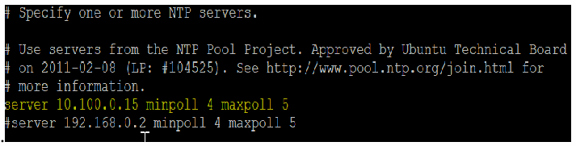
黒地に白と黄の文字の端末画面で、ntp.conf ファイルの行「# Specify one or more NTP servers.」「# Use servers from the NTP Pool Project. Approved by Ubuntu Technical Board」「# on 2011-02-08 (LP: #104525). See http://www.pool.ntp.org/join.html for」「# more information.」「server 10.100.0.15 minpoll 4 maxpoll 5」「#server 192.168.0.2 minpoll 4 maxpoll 5」が表示されています。
5.Run ntpq -p to verify ntp is getting time from correct source.
5.ntpq -p を実行して、ntp が正しい時刻源から時刻を取得していることを確認します。
4.18.5.3 NTP-client Configuration on Network Devices
4.18.5.3 ネットワークデバイスでの NTP クライアントの構成
1.Follow the instructions below for a Siemens RuggedCom RX1510
1.Siemens RuggedCom RX1510 については、次の手順に従います。
•Login into RuggedCom RX 1510 web interface.
•RuggedCom RX 1510 の Web インターフェースにログインします。
•Click on Edit Private in the Top Menu to enter configuration mode
•トップメニューの Edit Private をクリックして、構成モードに入ります。
•Click on Services > Time > ntp > server > Add server
•Services > Time > ntp > server > Add server をクリックします。
•Enter the IP address of the NTP server. Ensure to check ENABLE option.
•NTP サーバーの IP アドレスを入力します。ENABLE オプションにチェックが付いていることを確認します。
•Click Add button. Exit
•Add ボタンをクリックして終了します。
［第三者の画像。第三者の著作物のため、この非公式サイトには掲載していません。原本 PDF を参照してください。］
2.Follow the instructions below to configure NTP on the Siemens i800 Layer-2 switch:
2.Siemens i800 レイヤー2スイッチで NTP を構成するには、次の手順に従います。
a.Login to the Switch web interface
a.スイッチの Web インターフェースにログインします。
b.Click on Administration > System Time Manager > Configure NTP > Configure NTP Servers
b.Administration > System Time Manager > Configure NTP > Configure NTP Servers をクリックします。
c.Select primary or back and make the required changes.
c.primary または back を選択し、必要な変更を行います。
［第三者の画像。第三者の著作物のため、この非公式サイトには掲載していません。原本 PDF を参照してください。］
d.Click Apply to save changes.
d.Apply をクリックして、変更を保存します。
3.Follow the instructions below to configure NTP on the Netgear layer-2 switch:
3.Netgear レイヤー2スイッチで NTP を構成するには、次の手順に従います。
a.Login to the switch web interface
a.スイッチの Web インターフェースにログインします。
b.Click Time from the left side explorer menu
b.左側のエクスプローラーメニューから Time をクリックします。
c.Enter required information.
c.必要な情報を入力します。
d.Click Apply to save the changes.
d.Apply をクリックして、変更を保存します。
Additional Information
追加情報
The master time reference selected should be as close to your physical location as possible. This should reduce the Off Set.
選択する基準時刻源は、物理的な所在地にできるだけ近いものにすべきです。これによりオフセットは小さくなるはずです。
4.18.6 Highlighted Performance Impacts
4.18.6 注目すべき性能への影響
No performance measurement experiments were performed for time synchronization due to its installation in the system before the Manufacturing Profile implementation was initiated.
時刻同期については、製造プロファイルの実装を開始する前にシステムに導入済みであったため、性能測定の実験を実施しませんでした。
4.18.7 Links to Entire Performance Measurement Data Set
4.18.7 性能測定データセット全体へのリンク
N/A
N/A
4.19 System Use Monitoring
4.19 システム利用の監視
4.19.1 Technical Solution Overview
4.19.1 技術ソリューションの概要
System use monitoring is accomplished by multiple tools to protect manufacturing system environment from harmful activities using data loss protection, system hardening and syslog server for monitoring, store and auditing. Each tool provides a different level required to protect the manufacturing system.
システム利用の監視は、データ損失防止、システムのハードニング、および監視、ログの保存、監査に用いる Syslog サーバーなど、複数のツールによって、有害な活動から製造システム環境を保護することで実現されます。各ツールは、製造システムの保護に必要な異なるレベルの機能を提供します。
Implementation effort is moderate requiring understanding of Linux systems, along with virtual machine experience.
実装の労力は中程度で、Linux システムの理解と、仮想マシンの経験が必要です。
4.19.2 Technical Capabilities Provided by Solution
4.19.2 ソリューションが提供する技術的能力
System Use Monitoring provides components of the following Technical Capabilities described in Section 6 of Volume 1:
システム利用の監視は、第1巻の第6節で説明した、次の技術的能力の構成要素を提供します。
•System Use Monitoring
•システム利用の監視
System Use Monitoring was provided by GTB Inspector, Ports and Services Lockdown, and Graylog.
システム利用の監視は、GTB Inspector、ポートとサービスのロックダウン、Graylog によって提供されました。
4.19.3 Subcategories Addressed by Implementing Solution
4.19.3 ソリューションの実装によって対処するサブカテゴリ
PR.AC-1, PR.DS-5, PR.MA-2, DE.CM-3
PR.AC-1, PR.DS-5, PR.MA-2, DE.CM-3
4.19.4 Architecture Map of Where Solution was Implemented
4.19.4 ソリューションを実装した場所のアーキテクチャマップ
DLP Solution:
DLP ソリューション：
![Network architecture map of the Collaborative Robotics System (CRS) testbed. Internet → "Corporate Network" → "Manufacturing System Router/Firewall", which connects the "Manufacturing DMZ" ("DMZ Historian 10.100.1.4" on "Manufacturing DMZ LAN - 10.100.1.0/24") and the "Cybersecurity LAN" ("Cybersecurity LAN - 10.100.0.0/24" with "NTP/PTP Clock 10.100.0.15", "Microsoft ActiveDirectory 10.100.0.13,17", "Symantec Antivirus 10.100.0.5", "GTB Data Loss Prev. 10.100.0.175,176", "Veeam Backup 10.100.0.10", "Graylog Syslog 10.100.0.14"). "Workcell #1" is reached through the "CRS LAN Router (NAT) 10.100.0.20/32" (192.168.0.2, 192.168.1.2) with a "Switch" on each side. On "Supervisory LAN - 192.168.0.0/24": "Engineering Workstation 192.168.0.20", "Supervisory and Safety PLC's 192.168.0.30", "Operator HMI 192.168.0.98", "Local Historian 192.168.0.10", "Remote I/O 192.168.0.60". On "Control LAN - 192.168.1.0/24": "Station 1 192.168.1.101" to "Station 4 192.168.1.104", "Robot Driver 192.168.1.5" connected to two robot arms by "Field Bus", and "Robot Controllers 192.168.1.3,4". A "Cybersecurity Scanning Laptop (Nessus, OpenAudIT) 192.168.0.11" is attached by a dashed line with the note "NOTE: Connection present only during vulnerability and asset scanning." Legend: red line = "DLP Traffic". Red lines run from the Workcell (Supervisory LAN and Control LAN) through the CRS LAN Router and the Cybersecurity LAN to the GTB Data Loss Prev. servers (outlined in red) and up to the Manufacturing System Router/Firewall. In this map the servers are labeled "Symantec Antivirus - SEPM 10.100.0.5" and "Veeam Backup & Replication 10.100.0.10", and the scanning laptop is "192.168.0.11.12".](assets/ir-8183av3/p0273-figure-02.png)
Collaborative Robotics System（CRS）の試験環境のネットワーク構成図です。Internet →「Corporate Network」→「Manufacturing System Router/Firewall」とつながり、このルーターに「Manufacturing DMZ」（「Manufacturing DMZ LAN - 10.100.1.0/24」上の「DMZ Historian 10.100.1.4」）と「Cybersecurity LAN」（「Cybersecurity LAN - 10.100.0.0/24」上の「NTP/PTP Clock 10.100.0.15」「Microsoft ActiveDirectory 10.100.0.13,17」「Symantec Antivirus 10.100.0.5」「GTB Data Loss Prev. 10.100.0.175,176」「Veeam Backup 10.100.0.10」「Graylog Syslog 10.100.0.14」）が接続されています。「Workcell #1」は、「CRS LAN Router (NAT) 10.100.0.20/32」（192.168.0.2、192.168.1.2）の両側にある「Switch」を経由して接続されています。「Supervisory LAN - 192.168.0.0/24」には「Engineering Workstation 192.168.0.20」「Supervisory and Safety PLC's 192.168.0.30」「Operator HMI 192.168.0.98」「Local Historian 192.168.0.10」「Remote I/O 192.168.0.60」が、「Control LAN - 192.168.1.0/24」には「Station 1 192.168.1.101」〜「Station 4 192.168.1.104」、「Field Bus」で 2 台のロボットアームとつながる「Robot Driver 192.168.1.5」、「Robot Controllers 192.168.1.3,4」が接続されています。「Cybersecurity Scanning Laptop (Nessus, OpenAudIT) 192.168.0.11」が破線で接続され、「NOTE: Connection present only during vulnerability and asset scanning.」と注記されています。凡例は赤の線が「DLP Traffic」です。赤の線がワークセル（Supervisory LAN と Control LAN）から CRS LAN Router と Cybersecurity LAN を経て、赤枠で囲んだ GTB Data Loss Prev. のサーバーへ、さらに Manufacturing System Router/Firewall へつながっています。この図ではサーバーの表記が「Symantec Antivirus - SEPM 10.100.0.5」「Veeam Backup & Replication 10.100.0.10」、スキャン用ノート PC が「192.168.0.11.12」です。
Graylog Solution:
Graylog ソリューション：
![Network architecture map of the Collaborative Robotics System (CRS) testbed. Internet → "Corporate Network" → "Manufacturing System Router/Firewall", which connects the "Manufacturing DMZ" ("DMZ Historian 10.100.1.4" on "Manufacturing DMZ LAN - 10.100.1.0/24") and the "Cybersecurity LAN" ("Cybersecurity LAN - 10.100.0.0/24" with "NTP/PTP Clock 10.100.0.15", "Microsoft ActiveDirectory 10.100.0.13,17", "Symantec Antivirus 10.100.0.5", "GTB Data Loss Prev. 10.100.0.175,176", "Veeam Backup 10.100.0.10", "Graylog Syslog 10.100.0.14"). "Workcell #1" is reached through the "CRS LAN Router (NAT) 10.100.0.20/32" (192.168.0.2, 192.168.1.2) with a "Switch" on each side. On "Supervisory LAN - 192.168.0.0/24": "Engineering Workstation 192.168.0.20", "Supervisory and Safety PLC's 192.168.0.30", "Operator HMI 192.168.0.98", "Local Historian 192.168.0.10", "Remote I/O 192.168.0.60". On "Control LAN - 192.168.1.0/24": "Station 1 192.168.1.101" to "Station 4 192.168.1.104", "Robot Driver 192.168.1.5" connected to two robot arms by "Field Bus", and "Robot Controllers 192.168.1.3,4". A "Cybersecurity Scanning Laptop (Nessus, OpenAudIT) 192.168.0.11" is attached by a dashed line with the note "NOTE: Connection present only during vulnerability and asset scanning." Legend: orange line = "Graylog Syslog". Orange lines connect the hosts of the Workcell (Supervisory LAN and Control LAN, including the Robot Driver and Robot Controllers), the Cybersecurity LAN servers, the Manufacturing System Router/Firewall and the Manufacturing DMZ to the Graylog Syslog server (highlighted in orange). In this map the servers are labeled "Symantec Antivirus - SEPM 10.100.0.5" and "Veeam Backup & Replication 10.100.0.10", and the scanning laptop is "192.168.0.11.12".](assets/ir-8183av3/p0274-figure-01.png)
Collaborative Robotics System（CRS）の試験環境のネットワーク構成図です。Internet →「Corporate Network」→「Manufacturing System Router/Firewall」とつながり、このルーターに「Manufacturing DMZ」（「Manufacturing DMZ LAN - 10.100.1.0/24」上の「DMZ Historian 10.100.1.4」）と「Cybersecurity LAN」（「Cybersecurity LAN - 10.100.0.0/24」上の「NTP/PTP Clock 10.100.0.15」「Microsoft ActiveDirectory 10.100.0.13,17」「Symantec Antivirus 10.100.0.5」「GTB Data Loss Prev. 10.100.0.175,176」「Veeam Backup 10.100.0.10」「Graylog Syslog 10.100.0.14」）が接続されています。「Workcell #1」は、「CRS LAN Router (NAT) 10.100.0.20/32」（192.168.0.2、192.168.1.2）の両側にある「Switch」を経由して接続されています。「Supervisory LAN - 192.168.0.0/24」には「Engineering Workstation 192.168.0.20」「Supervisory and Safety PLC's 192.168.0.30」「Operator HMI 192.168.0.98」「Local Historian 192.168.0.10」「Remote I/O 192.168.0.60」が、「Control LAN - 192.168.1.0/24」には「Station 1 192.168.1.101」〜「Station 4 192.168.1.104」、「Field Bus」で 2 台のロボットアームとつながる「Robot Driver 192.168.1.5」、「Robot Controllers 192.168.1.3,4」が接続されています。「Cybersecurity Scanning Laptop (Nessus, OpenAudIT) 192.168.0.11」が破線で接続され、「NOTE: Connection present only during vulnerability and asset scanning.」と注記されています。凡例は橙の線が「Graylog Syslog」です。橙の線が、ワークセルの機器（Supervisory LAN と Control LAN、Robot Driver と Robot Controllers を含む）、Cybersecurity LAN のサーバー、Manufacturing System Router/Firewall、Manufacturing DMZ を、橙で強調した Graylog Syslog サーバーにつないでいます。この図ではサーバーの表記が「Symantec Antivirus - SEPM 10.100.0.5」「Veeam Backup & Replication 10.100.0.10」、スキャン用ノート PC が「192.168.0.11.12」です。
4.19.5 Installation Instructions and Configurations
4.19.5 インストール手順と構成
System use monitoring was implemented using a combination of tools such as GTB Inspector, Graylog and native Linux OS capabilities such as enabling rsyslog, hardening of permissions.
システム利用の監視は、GTB Inspector、Graylog、および rsyslog の有効化や権限のハードニングといった Linux OS 標準の機能などのツールを組み合わせて実装しました。
4.19.5.1 GTB Inspector
4.19.5.1 GTB Inspector
See Section 4.12.5 for instructions.
手順については、第4.12.5節を参照してください。
4.19.5.2 Graylog
4.19.5.2 Graylog
See Section 4.13.5 for instructions.
手順については、第4.13.5節を参照してください。
4.19.5.3 Hardening Permissions on Linux Servers on the Workcell
4.19.5.3 ワークセルの Linux サーバーでの権限のハードニング
Permissions on user home directories were changed from 755 to 700 to protect data from unauthorized access using chmod.
不正なアクセスからデータを保護するために、chmod を使って、ユーザーのホームディレクトリの権限を755から700に変更しました。
4.19.6 Highlighted Performance Impacts
4.19.6 注目すべき性能への影響
Due to the specific implementation of “System Use Monitoring” performed in the CRS, the performance impacts relating to this technical capability can be found in the following sections:
CRS で実施した「システム利用の監視」の具体的な実装のため、この技術的能力に関連する性能への影響は、次の各項に記載しています。
GTB Inspector - Section 4.12.6
GTB Inspector - 第4.12.6節
Graylog - Section 4.13.6
Graylog - 第4.13.6節
4.19.7 Links to Entire Performance Measurement Data Set
4.19.7 性能測定データセット全体へのリンク
N/A
N/A
4.20 Ports and Services Lockdown
4.20 ポートとサービスのロックダウン
4.20.1 Technical Solution Overview
4.20.1 技術ソリューションの概要
Ports and services lockdown solutions enable a manufacturer to discover and disable nonessential logical network ports and services. A logical port is a number assigned to a “logical” connection. Port numbers are assigned to a service, which is helpful to TCP/IP in identifying what ports it must send traffic to. Hackers use port scanners and vulnerability scanners to identify open ports on servers. By revealing which ports are open, the hacker can identify what kind of services are running and the type of system. Closing unnecessary ports by uninstalling unnecessary programs considerably reduces the attack surface. These actions need to be performed manually.
ポートとサービスのロックダウンのソリューションにより、製造者は、必須ではない論理ネットワークポートとサービスを発見し、無効にできます。論理ポートとは、「論理的な」接続に割り当てられた番号です。ポート番号はサービスに割り当てられ、TCP/IP が、トラフィックをどのポートに送る必要があるかを識別するのに役立ちます。ハッカーは、ポートスキャナーや脆弱性スキャナーを使って、サーバー上の開いているポートを特定します。どのポートが開いているかが明らかになると、ハッカーは、どのような種類のサービスが動作しているか、またシステムの種類を特定できます。不要なプログラムをアンインストールして不要なポートを閉じることで、攻撃対象領域が大幅に縮小されます。これらの作業は、手動で行う必要があります。
Native OS capabilities, Open-AudIT and Nessus scanner were leveraged to inventory list of ports and applications currently running on each device of the workcell.
ワークセルの各デバイスで現在動作しているポートとアプリケーションの一覧を作成するために、OS 標準の機能、Open-AudIT、Nessus スキャナーを活用しました。
4.20.2 Technical Capabilities Provided by Solution
4.20.2 ソリューションが提供する技術的能力
Ports and Services Lockdown provides components of the following Technical Capabilities described in Section 6 of Volume 1:
ポートとサービスのロックダウンは、第1巻の第6節で説明した、次の技術的能力の構成要素を提供します。
•Ports and Services Lockdown
•ポートとサービスのロックダウン
4.20.3 Subcategories Addressed by Implementing Solution
4.20.3 ソリューションの実装によって対処するサブカテゴリ
PR.IP-1, PR.PT-3
PR.IP-1, PR.PT-3
4.20.4 Architecture Map of Where Solution was Implemented
4.20.4 ソリューションを実装した場所のアーキテクチャマップ
![Network architecture map of the Collaborative Robotics System (CRS) testbed. Internet → "Corporate Network" → "Manufacturing System Router/Firewall", which connects the "Manufacturing DMZ" ("DMZ Historian 10.100.1.4" on "Manufacturing DMZ LAN - 10.100.1.0/24") and the "Cybersecurity LAN" ("Cybersecurity LAN - 10.100.0.0/24" with "NTP/PTP Clock 10.100.0.15", "Microsoft ActiveDirectory 10.100.0.13,17", "Symantec Antivirus 10.100.0.5", "GTB Data Loss Prev. 10.100.0.175,176", "Veeam Backup 10.100.0.10", "Graylog Syslog 10.100.0.14"). "Workcell #1" is reached through the "CRS LAN Router (NAT) 10.100.0.20/32" (192.168.0.2, 192.168.1.2) with a "Switch" on each side. On "Supervisory LAN - 192.168.0.0/24": "Engineering Workstation 192.168.0.20", "Supervisory and Safety PLC's 192.168.0.30", "Operator HMI 192.168.0.98", "Local Historian 192.168.0.10", "Remote I/O 192.168.0.60". On "Control LAN - 192.168.1.0/24": "Station 1 192.168.1.101" to "Station 4 192.168.1.104", "Robot Driver 192.168.1.5" connected to two robot arms by "Field Bus", and "Robot Controllers 192.168.1.3,4". A "Cybersecurity Scanning Laptop (Nessus, OpenAudIT) 192.168.0.11" is attached by a dashed line with the note "NOTE: Connection present only during vulnerability and asset scanning." Legend: blue padlock icon = "Ports & Services lockdown". The padlock icon marks the two Workcell switches, the CRS LAN Router, the Engineering Workstation, the Supervisory and Safety PLC's, the Operator HMI, the Local Historian, Stations 1 to 4, the Robot Driver and the Robot Controllers.](assets/ir-8183av3/p0277-figure-02.png)
Collaborative Robotics System（CRS）の試験環境のネットワーク構成図です。Internet →「Corporate Network」→「Manufacturing System Router/Firewall」とつながり、このルーターに「Manufacturing DMZ」（「Manufacturing DMZ LAN - 10.100.1.0/24」上の「DMZ Historian 10.100.1.4」）と「Cybersecurity LAN」（「Cybersecurity LAN - 10.100.0.0/24」上の「NTP/PTP Clock 10.100.0.15」「Microsoft ActiveDirectory 10.100.0.13,17」「Symantec Antivirus 10.100.0.5」「GTB Data Loss Prev. 10.100.0.175,176」「Veeam Backup 10.100.0.10」「Graylog Syslog 10.100.0.14」）が接続されています。「Workcell #1」には「CRS LAN Router (NAT) 10.100.0.20/32」（192.168.0.2、192.168.1.2、両側に「Switch」）を経由して接続します。「Supervisory LAN - 192.168.0.0/24」には「Engineering Workstation 192.168.0.20」「Supervisory and Safety PLC's 192.168.0.30」「Operator HMI 192.168.0.98」「Local Historian 192.168.0.10」「Remote I/O 192.168.0.60」が、「Control LAN - 192.168.1.0/24」には「Station 1 192.168.1.101」〜「Station 4 192.168.1.104」、「Field Bus」で 2 台のロボットアームとつながる「Robot Driver 192.168.1.5」、「Robot Controllers 192.168.1.3,4」が接続されています。「Cybersecurity Scanning Laptop (Nessus, OpenAudIT) 192.168.0.11」が破線で接続され、「NOTE: Connection present only during vulnerability and asset scanning.」と注記されています。凡例は青い錠のアイコンが「Ports & Services lockdown」です。このアイコンがワークセルの 2 台のスイッチ、CRS LAN Router、Engineering Workstation、Supervisory and Safety PLC's、Operator HMI、Local Historian、Station 1〜4、Robot Driver、Robot Controllers に付いています。
4.20.5 Installation Instructions and Configurations
4.20.5 インストール手順と構成
The following steps were performed on the workcell infrastructure.
ワークセルのインフラに対して、次の手順を実施しました。
4.20.5.1 Hardening the Linux Systems
4.20.5.1 Linux システムのハードニング
1.Perform a software inventory using the inbuilt package manager utility or via commercial tools such as Open-Audit.
1.組み込みのパッケージマネージャーユーティリティ、または Open-Audit などの市販ツールを使って、ソフトウェアのインベントリを作成します。
2.Uninstall any unwanted software. Disable any services that are not required for operations.
2.不要なソフトウェアをすべてアンインストールします。運用に必要のないサービスをすべて無効にします。
3.Regulate access to device either whether Network Firewall or Host based firewall.
3.ネットワークファイアウォールまたはホストベースのファイアウォールのいずれかで、デバイスへのアクセスを規制します。
4.Follow any of the system hardening guidelines such as CIS, DISA.
4.CIS、DISA などのシステムハードニングのガイドラインのいずれかに従います。
The following actions were performed on the Linux systems of our workcell:
ワークセルの Linux システムでは、次の作業を実施しました。
1.A software inventory of each Linux system was performed using Open-AudIT. The inventory reports were reviewed, and a list of unwanted packages were identified. This includes software that comes with the OS by default such as Remina, vino, Thunderbird etc. These programs were then uninstalled.
1.Open-AudIT を使って、各 Linux システムのソフトウェアインベントリを作成しました。インベントリのレポートをレビューし、不要なパッケージの一覧を特定しました。これには、Remina、vino、Thunderbird など、OS にデフォルトで付属しているソフトウェアが含まれます。これらのプログラムをアンインストールしました。
2.Hardened /etc/exports file on the NFS-server to export nfs-shares to specific client IP addresses with Read only permissions
2.NFS サーバーの /etc/exports ファイルをハードニングして、特定のクライアント IP アドレスに、読み取り専用権限で nfs 共有をエクスポートするようにした
3.Disabled the dnsmasq service and socket on machining stations, as they are not required for normal operations
3.加工ステーションで、通常の運用には不要なため、dnsmasq サービスとソケットを無効にした
4.Disabled services such as mongodb, modem-manager from Robot Driver server and Engineering Workstation.
4.ロボットドライバーサーバーとエンジニアリングワークステーションで、mongodb、modem-manager などのサービスを無効にしました。
5.Restricted SSH access to select users in the /etc/ssh/sshd_config file.
5./etc/ssh/sshd_config ファイルで、SSH アクセスを選択したユーザーに制限しました。
4.20.5.2 Hardening the Workcell HMI
4.20.5.2 ワークセルの HMI のハードニング
1.Disable services such as HTTP, Telnet.
1.HTTP、Telnet などのサービスを無効にします。
2.Use SNMP only if required by changing the default community string.
2.SNMP は、必要な場合にのみ、デフォルトのコミュニティ文字列を変更して使用します。
3.Follow vendor documentation to identify / disable other features that are not in use.
3.ベンダーのドキュメントに従って、使用していないほかの機能を特定し、無効にします。
The following actions were performed on our Redlion HMI:
Redlion HMI では、次の作業を実施しました。
1.Ports 21 161 which were detected as open by Open-AudIT were disabled.
1.Open-AudIT によって開いていると検出された、ポート 21 と 161 を無効にしました。
2.Modified the HMI program to disable the option to "restart" a machining station and to "clear the part counter" of a station if the station is NOT in the STOP mode.
2.ステーションが STOP モードでない場合に、加工ステーションの「再起動」と、ステーションの「部品カウンターのクリア」のオプションを無効にするように、HMI プログラムを変更しました。
4.20.5.3 Hardening the Workcell PLC
4.20.5.3 ワークセルの PLC のハードニング
1.Disable services such as HTTP, Telnet and SMB (if using Windows Embedded)
1.HTTP、Telnet、SMB（Windows Embedded を使用している場合）などのサービスを無効にします。
2.Use SNMP only if required by changing the default community string.
2.SNMP は、必要な場合にのみ、デフォルトのコミュニティ文字列を変更して使用します。
The following actions were performed on our Beckhoff PLC:
Beckhoff PLC では、次の作業を実施しました。
1.Ports 23, 80, 139, 443, 445, 5120, and 8080 were closed by disabling services.
1.サービスを無効にして、ポート 23、80、139、443、445、5120、8080 を閉じました。
2.Services disabled: HTTP server, Telnet, web proxy, SMB, SNMP. This was performed by modifying Windows CE registry entries, as described on p.40 in the "Document about IPC Security" from Beckhoff. These actions required the PLC to be rebooted.
2.無効にしたサービス：HTTP サーバー、Telnet、Web プロキシ、SMB、SNMP。これは、Beckhoff の「Document about IPC Security」の40ページに記載されているとおり、Windows CE のレジストリエントリを変更して実施しました。これらの作業には、PLC の再起動が必要でした。
3.Remaining open TCP ports: 21, 987. FTP is used by current workcell operations
3.開いたままの TCP ポート：21、987。現行のワークセルの運用で FTP が使用されている
4.SMB and SNMP services were disabled. The SNMP service was disabled by modifying Windows CE registry entries.
4.SMB と SNMP のサービスを無効にしました。SNMP サービスは、Windows CE のレジストリエントリを変更して無効にしました。
4.20.5.4 Hardening Network Devices
4.20.5.4 ネットワークデバイスのハードニング
1.Disable unsecure services such as Telnet, SNMP (v1 and v2). If SNMP is required, change the default community string or use SNMP v3.
1.Telnet、SNMP（v1 と v2）などのセキュアでないサービスを無効にします。SNMP が必要な場合は、デフォルトのコミュニティ文字列を変更するか、SNMP v3 を使用します。
2.Following vendor recommended hardening guidelines
2.ベンダーが推奨するハードニングのガイドラインに従う
4.20.6 Highlighted Performance Impacts
4.20.6 注目すべき性能への影響
One performance measurement experiment was performed for the Ports and Services Lockdown technology implementation while the manufacturing system was operational:
製造システムの稼働中に、ポートとサービスのロックダウンの技術の実装について、1つの性能測定の実験を実施しました。
1.CL008.1 - The concept of least privilege is implemented on CRS hosts.
1.CL008.1 - 最小権限の概念を、CRS ホストに実装します。
4.20.6.1 Experiment CL008.1
4.20.6.1 実験 CL008.1
A slight increase of the part production time variance was observed during this experiment, but it is not statistically significant.
この実験中、部品の生産時間の分散にわずかな増加が観測されましたが、統計的に有意ではありません。
![Two panels. Left: "Part Production Time Bihistogram", x axis "production time (seconds)" from 94.1 to 94.7, y axis "count" from -6 to 4; the experiment counts are drawn upward in orange and the baseline counts downward in blue. Right: "Bootstrap (34 parts, 1000 iterations)", x axis "production time (seconds)" from 94.3 to 94.48, y axis "probability" from -0.4 to 0.3; legend "Experiment (CL008.1)" (orange, upward) and "Baseline (CL001.2)" (blue, downward). The experiment distribution in the bootstrap panel (around 94.38 to 94.41) lies to the right of the baseline (around 94.33 to 94.36). (The legend reads "Baseline (CL001.2)" although the caption names CL001.1.)](assets/ir-8183av3/p0279-figure-03.png)
2 つのグラフです。左は「Part Production Time Bihistogram」で、横軸は「production time (seconds)」（94.1〜94.7）、縦軸は「count」（-6〜4）です。実験の度数を橙で上向きに、ベースラインの度数を青で下向きに描いています。右は「Bootstrap (34 parts, 1000 iterations)」で、横軸は「production time (seconds)」（94.3〜94.48）、縦軸は「probability」（-0.4〜0.3）、凡例は「Experiment (CL008.1)」（橙、上向き）と「Baseline (CL001.2)」（青、下向き）です。bootstrap のグラフでは、実験の分布（約 94.38〜94.41）がベースライン（約 94.33〜94.36）より右にあります（凡例は「Baseline (CL001.2)」ですが、キャプションでは CL001.1 となっています）。
Figure 4-58 - Bihistograms showing the part production time (left) and estimated mean production time using the bootstrap method (right) using the measurements from baseline CL001.1 and experiment CL008.1
図4-58 - ベースライン CL001.1 と実験 CL008.1 の測定値を使用した、部品の生産時間（左）と、ブートストラップ法を使用した推定平均生産時間（右）を示すバイヒストグラム
4.20.7 Link to Entire Performance Measurement Data Set
4.20.7 性能測定データセット全体へのリンク
•CL008.1-LeastPrivilege.zip
•CL008.1-LeastPrivilege.zip
4.21 VeraCrypt
4.21 VeraCrypt
4.21.1 Technical Solution Overview
4.21.1 技術ソリューションの概要
VeraCrypt is a free open source disk encryption software for Windows, Mac OSX and Linux102. VeraCrypt main features:
VeraCrypt は、Windows、Mac OSX、Linux 向けの無料のオープンソースディスク暗号化ソフトウェアです102。VeraCrypt の主な機能は次のとおりです。
•Creates a virtual encrypted disk within a file and mounts it as a real disk.
•ファイル内に仮想の暗号化ディスクを作成し、実際のディスクとしてマウントします。
•Encrypts an entire partition or storage device such as USB flash drive or hard drive.
•パーティション全体、または USB フラッシュドライブやハードドライブなどの記憶装置を暗号化します。
•Encrypts a partition or drive where Windows is installed (preboot authentication).
•Windows がインストールされているパーティションまたはドライブを暗号化します（プリブート認証）。
•Encryption is automatic, real-time(on-the-fly) and transparent.
•暗号化は、自動的、リアルタイム（オンザフライ）、かつ透過的に行われます。
•Parallelization and pipelining allow data to be read and written as fast as if the drive was not encrypted.
•並列化とパイプライン処理により、ドライブが暗号化されていない場合と同じ速さでデータを読み書きできます。
•Encryption can be hardware-accelerated on modern processors.
•暗号化は、最新のプロセッサーでハードウェアアクセラレーションを利用できます。
4.21.2 Technical Capabilities Provided by Solution
4.21.2 ソリューションが提供する技術的能力
VeraCrypt provides components of the following Technical Capabilities described in Section 6 of Volume 1:
VeraCrypt は、第1巻の第6節で説明した、次の技術的能力の構成要素を提供します。
•Encryption
•暗号化
4.21.3 Subcategories Addressed by Implementation
4.21.3 実装によって対処するサブカテゴリ
PR.DS-5
PR.DS-5
4.21.4 Architecture Map of Where Solution was Implemented
4.21.4 ソリューションを実装した場所のアーキテクチャマップ
![Network architecture map of the Collaborative Robotics System (CRS) testbed. Internet → "Corporate Network" → "Manufacturing System Router/Firewall", which connects the "Manufacturing DMZ" ("DMZ Historian 10.100.1.4" on "Manufacturing DMZ LAN - 10.100.1.0/24") and the "Cybersecurity LAN" ("Cybersecurity LAN - 10.100.0.0/24" with "NTP/PTP Clock 10.100.0.15", "Microsoft ActiveDirectory 10.100.0.13,17", "Symantec Antivirus 10.100.0.5", "GTB Data Loss Prev. 10.100.0.175,176", "Veeam Backup 10.100.0.10", "Graylog Syslog 10.100.0.14"). "Workcell #1" is reached through the "CRS LAN Router (NAT) 10.100.0.20/32" (192.168.0.2, 192.168.1.2) with a "Switch" on each side. On "Supervisory LAN - 192.168.0.0/24": "Engineering Workstation 192.168.0.20", "Supervisory and Safety PLC's 192.168.0.30", "Operator HMI 192.168.0.98", "Local Historian 192.168.0.10", "Remote I/O 192.168.0.60". On "Control LAN - 192.168.1.0/24": "Station 1 192.168.1.101" to "Station 4 192.168.1.104", "Robot Driver 192.168.1.5" connected to two robot arms by "Field Bus", and "Robot Controllers 192.168.1.3,4". A "Cybersecurity Scanning Laptop (Nessus, OpenAudIT) 192.168.0.11" is attached by a dashed line with the note "NOTE: Connection present only during vulnerability and asset scanning." Legend: VeraCrypt logo = "Veracrypt". The VeraCrypt logo is placed on the Engineering Workstation.](assets/ir-8183av3/p0281-figure-02.png)
Collaborative Robotics System（CRS）の試験環境のネットワーク構成図です。Internet → "Corporate Network" → "Manufacturing System Router/Firewall" とつながり、このルーターは "Manufacturing DMZ"（"Manufacturing DMZ LAN - 10.100.1.0/24" 上の "DMZ Historian 10.100.1.4"）と "Cybersecurity LAN"（"Cybersecurity LAN - 10.100.0.0/24" 上の "NTP/PTP Clock 10.100.0.15"、"Microsoft ActiveDirectory 10.100.0.13,17"、"Symantec Antivirus 10.100.0.5"、"GTB Data Loss Prev. 10.100.0.175,176"、"Veeam Backup 10.100.0.10"、"Graylog Syslog 10.100.0.14"）に接続されています。"Workcell #1" へは、"CRS LAN Router (NAT) 10.100.0.20/32"（192.168.0.2、192.168.1.2）を経由して接続されており、ルーターの両側に "Switch" があります。"Supervisory LAN - 192.168.0.0/24" 上には "Engineering Workstation 192.168.0.20"、"Supervisory and Safety PLC's 192.168.0.30"、"Operator HMI 192.168.0.98"、"Local Historian 192.168.0.10"、"Remote I/O 192.168.0.60" があります。"Control LAN - 192.168.1.0/24" 上には "Station 1 192.168.1.101" から "Station 4 192.168.1.104"、"Field Bus" を介して 2 台のロボットアームに接続された "Robot Driver 192.168.1.5"、および "Robot Controllers 192.168.1.3,4" があります。"Cybersecurity Scanning Laptop (Nessus, OpenAudIT) 192.168.0.11" は破線で接続され、"NOTE: Connection present only during vulnerability and asset scanning." という注記があります。凡例：VeraCrypt のロゴ = "Veracrypt"。VeraCrypt のロゴは Engineering Workstation 上に配置されています。
4.21.5 Installation Instructions and Configurations
4.21.5 インストール手順と構成
Details of the solution implemented:
実装したソリューションの詳細：
| Name | Version | Location |
|---|---|---|
| VeraCrypt | 1.23 | Work-Cell Supervisory LAN |
| 名称 | バージョン | 場所 |
|---|---|---|
| VeraCrypt | 1.23 | ワークセル監視 LAN |
4.21.5.1 Environment Setup
4.21.5.1 環境のセットアップ
VeraCrypt was installed on the Engineering Workstation (running Ubuntu Linux) to encrypt a directory containing sensitive documents and code files.
機微な文書とコードファイルを含むディレクトリを暗号化するために、VeraCrypt を（Ubuntu Linux が動作する）エンジニアリングワークステーションにインストールしました。
4.21.5.2 Installation
4.21.5.2 インストール
1.Download VeraCrypt103
1.VeraCrypt をダウンロードする103
2.Extract the .tar.bz2 bundle on the Linux system. Once done, run the setup script (x86 or x64 version) using the following command:
2.Linux システムで .tar.bz2 のバンドルを展開します。完了したら、次のコマンドを使って、セットアップスクリプト（x86 版または x64 版）を実行します。
sudo ./veracrypt-1.23-setup-gui-x64
sudo ./veracrypt-1.23-setup-gui-x64
(File name varies depending on the version used)
（ファイル名は、使用するバージョンによって異なります）
3.Launch the program using Unity Dash (on Ubuntu LTS) or your preferred application launcher.
3.Unity Dash（Ubuntu LTS の場合）またはお好みのアプリケーションランチャーを使って、プログラムを起動します。
4.21.5.3 Using VeraCrypt
4.21.5.3 VeraCrypt の使用
Follow the instructions below to create an Encrypted container
次の手順に従って、暗号化コンテナを作成します。
1.Create an encrypted volume where you will store all folders/files you’d like to protect. Run the following command and follow the interactive menu
1.保護したいすべてのフォルダー／ファイルを保存する暗号化ボリュームを作成します。次のコマンドを実行し、対話式メニューに従います。
sudo veracrypt -t -c
sudo veracrypt -t -c
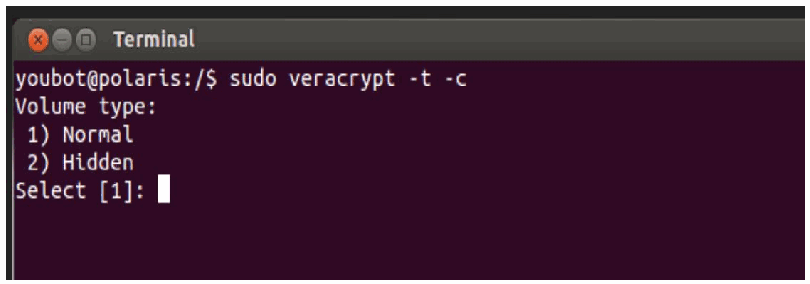
Ubuntu の "Terminal" ウィンドウに、"youbot@polaris:/$ sudo veracrypt -t -c"、"Volume type:"、" 1) Normal"、" 2) Hidden"、"Select [1]:" と表示されています。
2.Select 1 for Normal (Standard) Volume. Enter the complete path of the mapper file and select a size. This file will act as the virtual container of your encrypted data so, plan the path and volume size accordingly
2.標準ボリューム（Normal (Standard) Volume）には 1 を選択します。マッパーファイルの完全なパスを入力し、サイズを選択します。このファイルは暗号化データの仮想コンテナとして機能するため、パスとボリュームサイズを適切に計画してください。
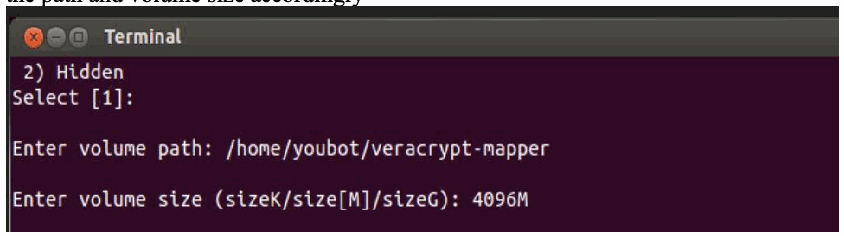
Ubuntu の「Terminal」ウィンドウで、「2) Hidden」「Select [1]:」「Enter volume path: /home/youbot/veracrypt-mapper」「Enter volume size (sizeK/size[M]/sizeG): 4096M」が表示されています。
3.Select an Encryption algorithm followed by Hashing algorithm from the list
3.一覧から、暗号化アルゴリズムを選択し、続いてハッシュアルゴリズムを選択します。
![Ubuntu "Terminal" window listing "Encryption Algorithm:" 1) AES, 2) Serpent, 3) Twofish, 4) Camellia, 5) Kuznyechik, 6) AES(Twofish), 7) AES(Twofish(Serpent)), 8) Camellia(Kuznyechik), 9) Camellia(Serpent), 10) Kuznyechik(AES), 11) Kuznyechik(Serpent(Camellia)), 12) Kuznyechik(Twofish), 13) Serpent(AES), 14) Serpent(Twofish(AES)), 15) Twofish(Serpent), "Select [1]:", then "Hash algorithm:" 1) SHA-512, 2) Whirlpool, 3) SHA-256, 4) Streebog, "Select [1]:".](assets/ir-8183av3/p0283-figure-02.png)
Ubuntu の「Terminal」ウィンドウで、「Encryption Algorithm:」として 1) AES、2) Serpent、3) Twofish、4) Camellia、5) Kuznyechik、6) AES(Twofish)、7) AES(Twofish(Serpent))、8) Camellia(Kuznyechik)、9) Camellia(Serpent)、10) Kuznyechik(AES)、11) Kuznyechik(Serpent(Camellia))、12) Kuznyechik(Twofish)、13) Serpent(AES)、14) Serpent(Twofish(AES))、15) Twofish(Serpent) と「Select [1]:」、続いて「Hash algorithm:」として 1) SHA-512、2) Whirlpool、3) SHA-256、4) Streebog と「Select [1]:」が表示されています。
4.Select a Filesystem type depending on the OS of the computer. FAT works on all Operating systems
4.コンピュータの OS に応じて、ファイルシステムの種類を選択します。FAT は、すべてのオペレーティングシステムで動作します。
5.Enter a password for the virtual container file. For the other options such as Enter PIM and Enter Keyfile path, hit Enter to leave them blank or configure one if required.
5.仮想コンテナファイルのパスワードを入力します。Enter PIM や Enter Keyfile path などのその他のオプションは、Enter キーを押して空白のままにするか、必要であれば設定します。
6.Enter 320 characters randomly at the prompt. This helps to increase the cryptographic strength of the encryption keys. The process should move forward.
6.プロンプトで、320 文字をランダムに入力します。これにより、暗号鍵の暗号学的強度が高まります。処理は先に進むはずです。
![Ubuntu "Terminal" window showing: "Enter password:", "WARNING: Short passwords are easy to crack using brute force techniques!", "We recommend choosing a password consisting of 20 or more characters. Are you sure you want to use a short password? (y=Yes/n=No) [No]: y", "Re-enter password:", "Enter PIM:", "Enter keyfile path [none]:", "Please type at least 320 randomly chosen characters and then press Enter:", "Characters remaining: 147", "Characters remaining: 110", "Characters remaining: 102", "Characters remaining: 72", "Characters remaining: 14", "Done: 100.000% Speed: 135 MB/s Left: 0 s", "The VeraCrypt volume has been successfully created.".](assets/ir-8183av3/p0284-figure-01.png)
Ubuntu の「Terminal」ウィンドウで、「Enter password:」「WARNING: Short passwords are easy to crack using brute force techniques!」「We recommend choosing a password consisting of 20 or more characters. Are you sure you want to use a short password? (y=Yes/n=No) [No]: y」「Re-enter password:」「Enter PIM:」「Enter keyfile path [none]:」「Please type at least 320 randomly chosen characters and then press Enter:」「Characters remaining: 147」「Characters remaining: 110」「Characters remaining: 102」「Characters remaining: 72」「Characters remaining: 14」「Done: 100.000% Speed: 135 MB/s Left: 0 s」「The VeraCrypt volume has been successfully created.」が表示されています。
7.Create a directory to mount this virtual container on. Run the following command to mount. In our case, a /encrypted directory was created to mount the container on.
7.この仮想コンテナをマウントするディレクトリを作成します。マウントするには、次のコマンドを実行します。今回は、コンテナをマウントするために /encrypted ディレクトリを作成しました。
sudo veracrypt <path of the container mapper file> <directory to mount on>
sudo veracrypt <path of the container mapper file> <directory to mount on>
8.Enter the password configured earlier and hit Enter for PIM and keyfile if left blank earlier. Choose NO for Protect hidden volume since there wasn’t any created.
8.先に設定したパスワードを入力し、PIM とキーファイルを空白にした場合は Enter キーを押します。隠しボリュームは作成していないため、Protect hidden volume には NO を選択します。
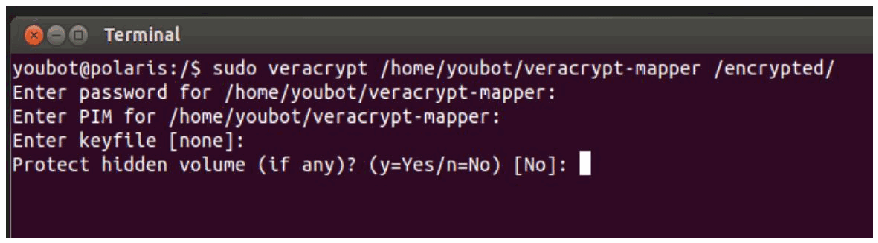
Ubuntu の「Terminal」ウィンドウで、「youbot@polaris:/$ sudo veracrypt /home/youbot/veracrypt-mapper /encrypted/」「Enter password for /home/youbot/veracrypt-mapper:」「Enter PIM for /home/youbot/veracrypt-mapper:」「Enter keyfile [none]:」「Protect hidden volume (if any)? (y=Yes/n=No) [No]:」が表示されています。
9.Verify the mount by running df -kh
9.df -kh を実行して、マウントを確認します。

「192.168.0.20 - PuTTY」と題した PuTTY のウィンドウで、「youbot@polaris:~$ df -kh」の出力が表示されています。「df: `/home/zimmermant/.gvfs': Permission denied」に続き、列 Filesystem、Size、Used、Avail、Use%、Mounted on の表として「/dev/sda1 1.8T 44G 1.7T 3% /」「udev 7.8G 4.0K 7.8G 1% /dev」「tmpfs 1.6G 936K 1.6G 1% /run」「none 5.0M 0 5.0M 0% /run/lock」「none 7.9G 324K 7.9G 1% /run/shm」「/dev/mapper/veracrypt1 4.8G 10M 4.6G 1% /encrypted」があり、最後にプロンプト「youbot@polaris:~$」があります。
Additional Information
追加情報
•By default, other system users would only have Read access to the mounted directory. Configure the permissions or owner as required. You can use this encrypted volume just like any other partition on your hard drive. Data saved in this directory is accessible only as long as the virtual container is mounted.
•デフォルトでは、ほかのシステムユーザーは、マウントされたディレクトリへの読み取りアクセスのみを持ちます。必要に応じて、権限または所有者を構成します。この暗号化ボリュームは、ハードドライブ上のほかのパーティションと同じように使用できます。このディレクトリに保存されたデータには、仮想コンテナがマウントされている間のみアクセスできます。
•An encrypted volume is just like a file and can be deleted. Ensure to take regular backups of the mapper file to avoid losing data incase if the volume gets deleted
•暗号化ボリュームはファイルと同じように削除できます。ボリュームが削除されてデータを失うことのないよう、マッパーファイルの定期的なバックアップを取ってください。
•In case of a system reboot, the directory would have to be mounted again using the commands shown earlier. Configuring Auto-mount and Favorite volumes options is outside of the scope of this document.
•システムを再起動した場合は、先に示したコマンドを使って、ディレクトリをもう一度マウントする必要があります。自動マウントとお気に入りボリュームのオプションの構成は、本書の範囲外です。
•Veracrypt official documentation104
•Veracrypt official documentation104
4.21.6 Highlighted Performance Impacts
4.21.6 注目すべき性能への影響
No performance measurement experiments were performed for VeraCrypt due to its implementation (i.e., it was used to encrypt data-at-rest; it does not encrypt data used to operate the manufacturing system).
VeraCrypt は、その実装の都合上（保存データの暗号化に使用しており、製造システムの運用に使用するデータは暗号化しない）、性能測定の実験を実施しませんでした。
4.21.7 Links to Entire Performance Measurement Data Set
4.21.7 性能測定データセット全体へのリンク
N/A
N/A
4.22 Media Protection
4.22 媒体保護
4.22.1 Technical Solution Overview
4.22.1 技術ソリューションの概要
Hardware-based port locks provide a low-cost solution for protecting USB ports. Implementation and ease of use provide for quick install and easy removal. USB Port locks provide a simple yet effective solution to restrict USB use. Once USB Port lock has been inserted and engaged there is no way of removing the lock device without damaging the USB port unless a key is used. Each USB Port lock can block up to two ports. These ports are the inserted port, and the port directly to either side depending on the blocking plate direction. USB Port Lock can be purchased with a collar that protects attached USB Mice and Keyboards from removal without prior approval.
ハードウェアベースのポートロックは、USB ポートを保護するための低コストなソリューションを提供します。実装と使いやすさにより、迅速に取り付けられ、簡単に取り外せます。USB ポートロックは、USB の使用を制限する、単純ながら効果的なソリューションを提供します。USB ポートロックを挿入して固定すると、鍵を使わない限り、USB ポートを損傷せずにロックデバイスを取り外す方法はありません。各 USB ポートロックは、最大 2 つのポートをブロックできます。これらのポートとは、ロックを挿入したポートと、ブロッキングプレートの向きに応じてその左右どちらかに隣接するポートです。USB ポートロックは、接続された USB マウスやキーボードを、事前承認なしに取り外されないよう保護するカラー付きで購入できます。
4.22.2 Technical Capabilities Provided by Solution
4.22.2 ソリューションが提供する技術的能力
Media Protection provides components of the following Technical Capabilities described in Section 6 of Volume 1:
媒体保護は、第1巻の第6節で説明した、次の技術的能力の構成要素を提供します。
•Media Protection
•媒体保護
4.22.3 Subcategories Addressed by Implementation
4.22.3 実装によって対処するサブカテゴリ
PR.PT-2
PR.PT-2
4.22.4 Architecture Map of Where Solution was Implemented
4.22.4 ソリューションを実装した場所のアーキテクチャマップ
![Network architecture map of the Collaborative Robotics System (CRS) testbed. Internet → "Corporate Network" → "Manufacturing System Router/Firewall", which connects the "Manufacturing DMZ" ("DMZ Historian 10.100.1.4" on "Manufacturing DMZ LAN - 10.100.1.0/24") and the "Cybersecurity LAN" ("Cybersecurity LAN - 10.100.0.0/24" with "NTP/PTP Clock 10.100.0.15", "Microsoft ActiveDirectory 10.100.0.13,17", "Symantec Antivirus 10.100.0.5", "GTB Data Loss Prev. 10.100.0.175,176", "Veeam Backup 10.100.0.10", "Graylog Syslog 10.100.0.14"). "Workcell #1" is reached through the "CRS LAN Router (NAT) 10.100.0.20/32" (192.168.0.2, 192.168.1.2) with a "Switch" on each side. On "Supervisory LAN - 192.168.0.0/24": "Engineering Workstation 192.168.0.20", "Supervisory and Safety PLC's 192.168.0.30", "Operator HMI 192.168.0.98", "Local Historian 192.168.0.10", "Remote I/O 192.168.0.60". On "Control LAN - 192.168.1.0/24": "Station 1 192.168.1.101" to "Station 4 192.168.1.104", "Robot Driver 192.168.1.5" connected to two robot arms by "Field Bus", and "Robot Controllers 192.168.1.3,4". A "Cybersecurity Scanning Laptop (Nessus, OpenAudIT) 192.168.0.11" is attached by a dashed line with the note "NOTE: Connection present only during vulnerability and asset scanning." Legend: blue USB symbol = "USB Port Locks". The USB symbol marks the DMZ Historian, the CRS LAN Router, the Engineering Workstation, the Supervisory and Safety PLC's, the Operator HMI, the Local Historian, the Remote I/O, the Robot Driver and the Robot Controllers. In this map the servers are labeled "Symantec Antivirus - SEPM 10.100.0.5" and "Veeam Backup & Replication 10.100.0.10", the router "CRS LAN Router (NAT) 10.100.0.20/24", and the scanning laptop "192.168.0.11.12".](assets/ir-8183av3/p0287-figure-02.png)
Collaborative Robotics System（CRS）の試験環境のネットワーク構成図です。Internet →「Corporate Network」→「Manufacturing System Router/Firewall」とつながり、このルーターに「Manufacturing DMZ」（「Manufacturing DMZ LAN - 10.100.1.0/24」上の「DMZ Historian 10.100.1.4」）と「Cybersecurity LAN」（「Cybersecurity LAN - 10.100.0.0/24」上の「NTP/PTP Clock 10.100.0.15」「Microsoft ActiveDirectory 10.100.0.13,17」「Symantec Antivirus 10.100.0.5」「GTB Data Loss Prev. 10.100.0.175,176」「Veeam Backup 10.100.0.10」「Graylog Syslog 10.100.0.14」）が接続されています。「Workcell #1」には「CRS LAN Router (NAT) 10.100.0.20/32」（192.168.0.2、192.168.1.2、両側に「Switch」）を経由して接続します。「Supervisory LAN - 192.168.0.0/24」には「Engineering Workstation 192.168.0.20」「Supervisory and Safety PLC's 192.168.0.30」「Operator HMI 192.168.0.98」「Local Historian 192.168.0.10」「Remote I/O 192.168.0.60」が、「Control LAN - 192.168.1.0/24」には「Station 1 192.168.1.101」〜「Station 4 192.168.1.104」、「Field Bus」で 2 台のロボットアームとつながる「Robot Driver 192.168.1.5」、「Robot Controllers 192.168.1.3,4」が接続されています。「Cybersecurity Scanning Laptop (Nessus, OpenAudIT) 192.168.0.11」が破線で接続され、「NOTE: Connection present only during vulnerability and asset scanning.」と注記されています。凡例は青い USB の記号が「USB Port Locks」です。この記号が DMZ Historian、CRS LAN Router、Engineering Workstation、Supervisory and Safety PLC's、Operator HMI、Local Historian、Remote I/O、Robot Driver、Robot Controllers に付いています。この図ではサーバーの表記が「Symantec Antivirus - SEPM 10.100.0.5」「Veeam Backup & Replication 10.100.0.10」、ルーターが「CRS LAN Router (NAT) 10.100.0.20/24」、スキャン用ノート PC が「192.168.0.11.12」です。
4.22.5 Installation Instructions and Configurations
4.22.5 インストール手順と構成
Insert USB Port lock then push locking button in to secure. Kensington provides inserts to block multiple ports including locks designed for securing USB Keyboards and Mice.
USB ポートロックを挿入し、ロックボタンを押し込んで固定します。Kensington は、USB キーボードやマウスを固定するように設計されたロックを含む、複数のポートをブロックするためのインサートを提供しています。
Patience is required when using this product so as not to inadvertently damage the USB port.
USB ポートを誤って損傷しないよう、この製品を使用する際は慎重に作業する必要があります。
4.22.6 Highlighted Performance Impacts
4.22.6 注目すべき性能への影響
No performance measurement experiments were performed for the USB port locks due to their implementation method (i.e., physically restricting access to USB ports).
USB ポートロックは、その実装方法（USB ポートへのアクセスを物理的に制限する）の都合上、性能測定の実験を実施しませんでした。
4.22.7 Links to Entire Performance Measurement Data Set
4.22.7 性能測定データセット全体へのリンク
N/A
N/A
Appendix A - Acronyms and Abbreviations
付録A - 頭字語および略語
Selected acronyms and abbreviations used in this document are defined below.
本書で使用する主な略語を、以下に定義します。
| ACL | Access Control List |
| AD | Active Directory |
| API | Application Programming Interface |
| ARP | Address Resolution Protocol |
| AV | Anti-Virus |
| CCN | Credit Card Number |
| CD | Compact Disk |
| CNC | Computer Numerical Control |
| COTS | Commercial Off-The-Shelf |
| CSET | Cyber Security Evaluation Tool |
| CSF | Cybersecurity Framework |
| DC | Domain Controller |
| DCS | Distributed Control System |
| DHCP | Dynamic Host Configuration Protocol |
| DHS | Department of Homeland Security |
| DLP | Data Loss Prevention |
| DMZ | Demilitarized Zone |
| DNS | Domain Name System |
| DS | Domain Services |
| EFS | Encrypted File System |
| FIPS | Federal Information Processing Standards |
| FTP | File Transfer Protocol |
| GID | Generator ID |
| HIDS | Host Intrusion Detection System |
| HMI | Human Machine Interface |
| HR | Human Resources |
| HTTP | Hypertext Transfer Protocol |
| HTTPS | Hypertext Transfer Protocol Secure |
| HVAC | Heating, Ventilation, and Air Conditioning |
| ICMP | Internet Control Message Protocol |
| ICS | Industrial Control System |
| ICS-CERT | Industrial Control Systems Cyber Emergency Response Team |
| ICSJWG | Industrial Control System Joint Working Group |
| IDE | Integrated Drive Electronics |
| IDS | Intrusion Detection System |
| IEEE | Institute of Electrical and Electronics Engineers |
| IG | Implementation Guide |
| IP | Internet Protocol |
| ISA | The International Society of Automation |
| ISE | Identity Services Engine |
| ISO | International Organization for Standardization |
| IT | Information Technology |
| KPI | Key Performance Indicator |
| LAN | Local Area Network |
| LDAP | Lightweight Directory Access Protocol |
| LDAPS | Secure LDAP |
| MAC | Media Access Control |
| MFG | Manufacturing |
| MGMT | Management |
| NAT | Network Address Translation |
| NCCIC | National Cybersecurity and Communications Integration Center |
| NETBIOS | Network Basic Input/Output System |
| NIDS | Network Intrusion Detection System |
| NIST | National Institute of Standards and Technology |
| NISTIR | National Institute of Standards and Technology Internal Report |
| NPS | Network Policy Server |
| NSA | National Security Agency |
| NTFS | New Technology File System |
| NTP | Network Time Protocol |
| NVD | National Vulnerability Database |
| OPC | Open Platform Communications |
| OS | Operating System |
| OSSEC | Open Source HIDS SECurity |
| OT | Operational Technology |
| PC | Personal Computer |
| PCS | Process Control System |
| PLC | Programmable Logic Controller |
| PPD | Presidential Policy Directive |
| PPP | Point to Point protocol |
| PPTP | Point to Point tunneling protocol |
| PTP | Precision Time Protocol |
| RDP | Remote Desktop Protocol |
| ROS | Robot Operating System |
| SCADA | Supervisory Control and Data Acquisition |
| SDLC | System Development Lifecycle |
| SEC | Security |
| SEPM | Symantec End-Point Protection Manager |
| SID | Signature ID |
| SIEM | Security Information and Event Management |
| SMB | Server Message Block |
| SMTP | Simple Mail Transfer Protocol |
| SNMP | Simple Network Management Protocol |
| SSH | Secure Shell |
| SSL | Secure Socket Layer |
| SSN | Social Security Number |
| TCP | Transmission Control Protocol |
| TLS | Transport Layer Security |
| UAC | User Access Control |
| UI | User Interface |
| UNC | Universal Naming Convention |
| UPN | Universal Principal Name |
| UPS | Uninterruptable Power Supply |
| USB | Universal Serial Bus |
| US-CERT | United States Computer Emergency Readiness Team |
| VHD | Virtual Hard Drive |
| VHDX | Hyper-V virtual hard disk |
| VLAN | Virtual Local Area Network |
| VPN | Virtual Private Network |
| WAN | Wide Area Network |
| WMI | Windows Management Instrumentation |
| XML | eXtensible Markup Language |
| ACL | アクセス制御リスト（Access Control List） |
| AD | Active Directory |
| API | アプリケーションプログラミングインターフェース（Application Programming Interface） |
| ARP | アドレス解決プロトコル（Address Resolution Protocol） |
| AV | ウイルス対策（Anti-Virus） |
| CCN | クレジットカード番号（Credit Card Number） |
| CD | コンパクトディスク（Compact Disk） |
| CNC | コンピュータ数値制御（Computer Numerical Control） |
| COTS | 市販の既製品（Commercial Off-The-Shelf） |
| CSET | サイバーセキュリティ評価ツール（Cyber Security Evaluation Tool） |
| CSF | サイバーセキュリティフレームワーク（Cybersecurity Framework） |
| DC | ドメインコントローラー（Domain Controller） |
| DCS | 分散制御システム（Distributed Control System） |
| DHCP | 動的ホスト構成プロトコル（Dynamic Host Configuration Protocol） |
| DHS | 国土安全保障省（Department of Homeland Security） |
| DLP | データ損失防止（Data Loss Prevention） |
| DMZ | 非武装地帯（Demilitarized Zone） |
| DNS | ドメインネームシステム（Domain Name System） |
| DS | ドメインサービス（Domain Services） |
| EFS | 暗号化ファイルシステム（Encrypted File System） |
| FIPS | 連邦情報処理標準（Federal Information Processing Standards） |
| FTP | ファイル転送プロトコル（File Transfer Protocol） |
| GID | ジェネレーター ID（Generator ID） |
| HIDS | ホスト型侵入検知システム（Host Intrusion Detection System） |
| HMI | ヒューマンマシンインターフェース（Human Machine Interface） |
| HR | 人事（Human Resources） |
| HTTP | ハイパーテキスト転送プロトコル（Hypertext Transfer Protocol） |
| HTTPS | ハイパーテキスト転送プロトコル（セキュア）（Hypertext Transfer Protocol Secure） |
| HVAC | 暖房、換気、空調（Heating, Ventilation, and Air Conditioning） |
| ICMP | インターネット制御メッセージプロトコル（Internet Control Message Protocol） |
| ICS | 産業用制御システム（Industrial Control System） |
| ICS-CERT | 産業用制御システムサイバー緊急対応チーム（Industrial Control Systems Cyber Emergency Response Team） |
| ICSJWG | 産業用制御システム合同作業部会（Industrial Control System Joint Working Group） |
| IDE | 統合ドライブエレクトロニクス（Integrated Drive Electronics） |
| IDS | 侵入検知システム（Intrusion Detection System） |
| IEEE | 電気電子学会（Institute of Electrical and Electronics Engineers） |
| IG | 実装ガイド（Implementation Guide） |
| IP | インターネットプロトコル（Internet Protocol） |
| ISA | 国際オートメーション学会（The International Society of Automation） |
| ISE | Identity Services Engine |
| ISO | 国際標準化機構（International Organization for Standardization） |
| IT | 情報技術（Information Technology） |
| KPI | 重要業績評価指標（Key Performance Indicator） |
| LAN | ローカルエリアネットワーク（Local Area Network） |
| LDAP | 軽量ディレクトリアクセスプロトコル（Lightweight Directory Access Protocol） |
| LDAPS | セキュア LDAP（Secure LDAP） |
| MAC | メディアアクセス制御（Media Access Control） |
| MFG | 製造（Manufacturing） |
| MGMT | 管理（Management） |
| NAT | ネットワークアドレス変換（Network Address Translation） |
| NCCIC | 国家サイバーセキュリティ・通信統合センター（National Cybersecurity and Communications Integration Center） |
| NETBIOS | ネットワーク基本入出力システム（Network Basic Input/Output System） |
| NIDS | ネットワーク型侵入検知システム（Network Intrusion Detection System） |
| NIST | 米国国立標準技術研究所（National Institute of Standards and Technology） |
| NISTIR | 米国国立標準技術研究所 内部報告書（National Institute of Standards and Technology Internal Report） |
| NPS | ネットワークポリシーサーバー（Network Policy Server） |
| NSA | 国家安全保障局（National Security Agency） |
| NTFS | NT ファイルシステム（New Technology File System） |
| NTP | ネットワークタイムプロトコル（Network Time Protocol） |
| NVD | 国家脆弱性データベース（National Vulnerability Database） |
| OPC | オープンプラットフォーム通信（Open Platform Communications） |
| OS | オペレーティングシステム（Operating System） |
| OSSEC | オープンソース HIDS セキュリティ（Open Source HIDS SECurity） |
| OT | 運用技術（Operational Technology） |
| PC | パーソナルコンピュータ（Personal Computer） |
| PCS | プロセス制御システム（Process Control System） |
| PLC | プログラマブルロジックコントローラー（Programmable Logic Controller） |
| PPD | 大統領政策指令（Presidential Policy Directive） |
| PPP | ポイントツーポイントプロトコル（Point to Point protocol） |
| PPTP | ポイントツーポイントトンネリングプロトコル（Point to Point tunneling protocol） |
| PTP | 高精度時刻プロトコル（Precision Time Protocol） |
| RDP | リモートデスクトッププロトコル（Remote Desktop Protocol） |
| ROS | ロボットオペレーティングシステム（Robot Operating System） |
| SCADA | 監視制御およびデータ収集（Supervisory Control and Data Acquisition） |
| SDLC | システム開発ライフサイクル（System Development Lifecycle） |
| SEC | セキュリティ（Security） |
| SEPM | Symantec End-Point Protection Manager |
| SID | シグネチャ ID（Signature ID） |
| SIEM | セキュリティ情報イベント管理（Security Information and Event Management） |
| SMB | サーバーメッセージブロック（Server Message Block） |
| SMTP | 簡易メール転送プロトコル（Simple Mail Transfer Protocol） |
| SNMP | 簡易ネットワーク管理プロトコル（Simple Network Management Protocol） |
| SSH | セキュアシェル（Secure Shell） |
| SSL | セキュアソケットレイヤー（Secure Socket Layer） |
| SSN | 社会保障番号（Social Security Number） |
| TCP | 伝送制御プロトコル（Transmission Control Protocol） |
| TLS | トランスポート層セキュリティ（Transport Layer Security） |
| UAC | ユーザーアクセス制御（User Access Control） |
| UI | ユーザーインターフェース（User Interface） |
| UNC | 汎用命名規則（Universal Naming Convention） |
| UPN | ユニバーサルプリンシパル名（Universal Principal Name） |
| UPS | 無停電電源装置（Uninterruptable Power Supply） |
| USB | ユニバーサルシリアルバス（Universal Serial Bus） |
| US-CERT | 米国コンピュータ緊急対応チーム（United States Computer Emergency Readiness Team） |
| VHD | 仮想ハードドライブ（Virtual Hard Drive） |
| VHDX | Hyper-V 仮想ハードディスク（Hyper-V virtual hard disk） |
| VLAN | 仮想ローカルエリアネットワーク（Virtual Local Area Network） |
| VPN | 仮想プライベートネットワーク（Virtual Private Network） |
| WAN | 広域ネットワーク（Wide Area Network） |
| WMI | Windows 管理インストルメンテーション（Windows Management Instrumentation） |
| XML | 拡張可能マークアップ言語（eXtensible Markup Language） |
Appendix B - Glossary
付録B - 用語集
Selected terms used in this document are defined below.
本書で使用する主な用語を、以下に定義します。
Business/Mission Objectives - Broad expression of business goals. Specified target outcome for business operations.
Business/Mission Objectives - 事業目標の広範な表現。事業運営について定められた、目標とする成果。
Capacity Planning - Systematic determination of resource requirements for the projected output, over a specific period. [businessdictionary.com]
Capacity Planning - 特定の期間にわたる、見込まれる生産量に必要なリソースの要件を、体系的に判断すること。[businessdictionary.com]
Category - The subdivision of a Function into groups of cybersecurity outcomes closely tied to programmatic needs and particular activities.
Category - 機能を、プログラム上のニーズと特定の活動に密接に結び付いた、サイバーセキュリティの成果のグループに細分化したもの。
Critical Infrastructure - Essential services and related assets that underpin American society and serve as the backbone of the nation's economy, security, and health. [DHS]
Critical Infrastructure - 米国社会を支え、国の経済、安全保障、健康の基盤となる、不可欠なサービスと関連する資産。[DHS]
Criticality Reviews - A determination of the ranking and priority of manufacturing system components, services, processes, and inputs in order to establish operational thresholds and recovery objectives.
Criticality Reviews - 運用上のしきい値と復旧目標を定めるために、製造システムの構成要素、サービス、プロセス、入力の順位と優先度を判断すること。
Critical Services - The subset of mission essential services required to conduct manufacturing operations. Function or capability that is required to maintain health, safety, the environment and availability for the equipment under control. [62443]
Critical Services - 製造運用を行うために必要な、ミッション上不可欠なサービスの部分集合。制御対象の機器の健全性、安全、環境、可用性を維持するために必要な機能または能力。[62443]
Cyber Risk - Risk of financial loss, operational disruption, or damage, from the failure of the digital technologies employed for informational and/or operational functions introduced to a manufacturing system via electronic means from the unauthorized access, use, disclosure, disruption, modification, or destruction of the manufacturing system.
Cyber Risk - 電子的手段を通じて製造システムに持ち込まれ、情報機能および／または運用機能に用いられるデジタル技術が、製造システムへの不正なアクセス、使用、開示、中断、変更、または破壊によって機能しなくなることから生じる、金銭的損失、運用の中断、または損害のリスク。
Cybersecurity - The process of protecting information by preventing, detecting, and responding to attacks. [CSF]
Cybersecurity - 攻撃を防止し、検知し、攻撃に対応することで、情報を保護するプロセス。[CSF]
Defense-in-depth - The application of multiple countermeasures in a layered or stepwise manner to achieve security objectives. The methodology involves layering heterogeneous security technologies in the common attack vectors to ensure that attacks missed by one technology are caught by another. [62443 1-1]
Defense-in-depth - セキュリティ目標を達成するために、複数の対策を層状または段階的に適用すること。この手法では、一般的な攻撃経路に異なる種類のセキュリティ技術を重ねることで、ある技術が見逃した攻撃を別の技術で捕捉できるようにします。[62443 1-1]
Event - Any observable occurrence on a manufacturing system. Events can include cybersecurity changes that may have an impact on manufacturing operations (including mission, capabilities, or reputation). [CSF]
Event - 製造システム上で観測可能なあらゆる事象。イベントには、製造運用（ミッション、能力、評判を含む）に影響を与えうるサイバーセキュリティ上の変化が含まれる場合があります。[CSF]
Firmware - Software program or set of instructions programmed on the flash ROM of a hardware device. It provides the necessary instructions for how the device communicates with the other computer hardware. [Techterms.com]
Firmware - ハードウェアデバイスのフラッシュ ROM にプログラムされた、ソフトウェアプログラムまたは命令の集合。デバイスがほかのコンピュータハードウェアとどのように通信するかについて、必要な命令を提供します。[Techterms.com]
Framework - The Cybersecurity Framework developed for defining protection of critical infrastructure. It provides a common language for understanding, managing, and expressing cybersecurity risk both internally and externally. Includes activities to achieve specific cybersecurity outcomes, and references examples of guidance to achieve those outcomes.
Framework - 重要インフラの保護を定めるために策定された、サイバーセキュリティフレームワーク。サイバーセキュリティリスクを、組織の内外で理解し、管理し、表現するための共通の言語を提供します。特定のサイバーセキュリティの成果を達成するための活動を含み、それらの成果を達成するためのガイダンスの例を参照しています。
Function - Primary unit within the Cybersecurity Framework. Exhibits basic cybersecurity activities at their highest level.
Function - サイバーセキュリティフレームワークにおける主要な単位。基本的なサイバーセキュリティ活動を、最上位のレベルで示します。
Incident - An occurrence that actually or potentially jeopardizes the confidentiality, integrity, or availability of an information system or the information the system processes, stores, or transmits or that constitutes a violation or imminent threat of violation of security policies, security procedures, or acceptable use policies. [CSF]
Incident - 情報システム、またはシステムが処理、保存、送信する情報の機密性、完全性、可用性を、現に、または潜在的に脅かす事象、あるいは、セキュリティポリシー、セキュリティ手順、または利用規定への違反、もしくは違反の差し迫った脅威となる事象。[CSF]
Integrator - A value-added engineering organization that focuses on industrial control and information systems, manufacturing execution systems, and workcell automation, that has application knowledge and technical expertise, and provides an integrated solution to an engineering problem. This solution includes final project engineering, documentation, procurement of hardware, development of custom software, installation, testing, and commissioning. [CSIA.com]
Integrator - 産業用制御システムと情報システム、製造実行システム、ワークセルの自動化に注力する、付加価値を提供するエンジニアリング組織。アプリケーションの知識と技術的な専門性を持ち、エンジニアリング上の課題に対する統合的なソリューションを提供します。このソリューションには、最終的なプロジェクトエンジニアリング、文書化、ハードウェアの調達、カスタムソフトウェアの開発、設置、テスト、試運転が含まれます。[CSIA.com]
Manufacturing Operations - Activities concerning the facility operation, system processes, materials input/output, maintenance, supply and distribution, health, and safety, emergency response, human resources, security, information technology and other contributing measures to the manufacturing enterprise.
Manufacturing Operations - 施設の運営、システムのプロセス、資材の入出力、保守、供給と流通、健康と安全、緊急時対応、人事、セキュリティ、情報技術、および製造エンタープライズに寄与するその他の措置に関する活動。
Network Access - any access across a network connection in lieu of local access (i.e., user being physically present at the device).
Network Access - ローカルアクセス（ユーザーがデバイスのそばに物理的にいること）の代わりに、ネットワーク接続を介して行うあらゆるアクセス。
Operational technology - Hardware and software that detects or causes a change through the direct monitoring and/or control of physical devices, processes and events in the enterprise. [Gartner.com]
Operational technology - エンタープライズ内の物理的なデバイス、プロセス、イベントを直接監視および／または制御することで、変化を検知する、または引き起こすハードウェアとソフトウェア。[Gartner.com]
Programmable Logic Controller - A solid-state control system that has a user-programmable memory for storing instructions for the purpose of implementing specific functions such as I/O control, logic, timing, counting, three mode (PID) control, communication, arithmetic, and data and file processing. [800-82]
Programmable Logic Controller - I/O 制御、ロジック、タイミング、カウント、三動作（PID）制御、通信、演算、データおよびファイル処理といった特定の機能を実装するための命令を保存する、ユーザーがプログラム可能なメモリを持つ、ソリッドステートの制御システム。[800-82]
Profile - A representation of the outcomes that a particular system or organization has selected from the Framework Categories and Subcategories. [CSF]
Profile - 特定のシステムまたは組織が、フレームワークのカテゴリとサブカテゴリから選択した成果の表現。[CSF]
•Target Profile - the desired outcome or ‘to be’ state of cybersecurity implementation
•Target Profile - サイバーセキュリティの実装における、望ましい成果、すなわち「あるべき」状態
•Current Profile – the ‘as is’ state of system cybersecurity
•Current Profile – システムのサイバーセキュリティの「現状（as is）」の状態
Protocol - A set of rules (i.e., formats and procedures) to implement and control some type of association (e.g., communication) between systems. [800-82]
Protocol - システム間の何らかの種類の関係（通信など）を実装し、制御するための、規則（形式と手順）の集合。[800-82]
Remote Access - Access by users (or information systems) communicating external to an information system security perimeter. Network access is any access across a network connection in lieu of local access (i.e., user being physically present at the device). [800-53]
Remote Access - 情報システムのセキュリティ境界の外部と通信するユーザー（または情報システム）によるアクセス。ネットワークアクセスとは、ローカルアクセス（ユーザーがデバイスのそばに物理的にいること）の代わりに、ネットワーク接続を介して行うあらゆるアクセスです。[800-53]
Resilience Requirements - The business-driven availability and reliability characteristics for the manufacturing system that specify recovery tolerances from disruptions and major incidents.
Resilience Requirements - 中断や重大なインシデントからの復旧の許容範囲を定める、製造システムの、事業主導の可用性と信頼性の特性。
Risk Assessment - The process of identifying risks to agency operations (including mission, functions, image, or reputation), agency assets, or individuals by determining the probability of occurrence, the resulting impact, and additional security controls that would mitigate this impact. Part of risk management, synonymous with risk analysis. Incorporates threat and vulnerability analyses. [800-82]
Risk Assessment - 発生確率、それによる影響、およびその影響を軽減する追加のセキュリティ管理策を判断することで、機関の運用（ミッション、機能、イメージ、評判を含む）、機関の資産、または個人に対するリスクを特定するプロセス。リスク管理の一部であり、リスク分析と同義です。脅威分析と脆弱性分析を含みます。[800-82]
Risk Tolerance - The level of risk that the Manufacturer is willing to accept in pursuit of strategic goals and objectives. [800-53]
Risk Tolerance - 戦略的な目標を追求するうえで、製造者が受け入れてもよいと考えるリスクのレベル（リスク許容度）。[800-53]
Router - A computer that is a gateway between two networks at OSI layer 3 and that relays and directs data packets through that inter-network. The most common form of router operates on IP packets. [800-82]
Router - OSI 第3層で2つのネットワークの間のゲートウェイとなり、そのネットワーク間でデータパケットを中継し、方向付けるコンピュータ。最も一般的なルーターは、IP パケットを扱います。[800-82]
Security Control - The management, operational, and technical controls (i.e., safeguards or countermeasures) prescribed for a system to protect the confidentiality, integrity, and availability of the system, its components, processes, and data. [800-82]
Security Control - システム、その構成要素、プロセス、データの機密性、完全性、可用性を保護するために、システムに対して規定された、管理的、運用的、技術的な管理策（保護手段または対抗手段）。[800-82]
Subcategory - The subdivision of a Category into specific outcomes of technical and/or management activities. Examples of Subcategories include “External information systems are catalogued,” “Data-at-rest is protected,” and “Notifications from detection systems are investigated.” [CSF]
Subcategory - カテゴリを、技術的および／または管理的活動の具体的な成果に細分化したもの。サブカテゴリの例には、「外部の情報システムがカタログ化されている」、「保存データが保護されている」、「検知システムからの通知が調査される」などがあります。[CSF]
Supporting Services - Providers of external system services to the manufacturer through a variety of consumer-producer relationships including but not limited to: joint ventures; business partnerships; outsourcing arrangements (i.e., through contracts, interagency agreements, lines of business arrangements); licensing agreements; and/or supply chain exchanges. Supporting services include, for example, Telecommunications, engineering services, power, water, software, tech support, and security. [800-53]
Supporting Services - 合弁事業、事業提携、アウトソーシングの取り決め（契約、機関間協定、事業ラインの取り決めによるもの）、ライセンス契約、および／またはサプライチェーンでの取引などを含む（ただしこれらに限定されない）、さまざまな消費者と生産者の関係を通じて、製造者に外部のシステムサービスを提供する者。支援サービスには、たとえば、電気通信、エンジニアリングサービス、電力、水道、ソフトウェア、技術サポート、セキュリティがあります。[800-53]
Switch - A device that channels incoming data from any of multiple input ports to the specific output port that will take the data toward its intended destination. [Whatis.com]
Switch - 複数の入力ポートのいずれかから入ってくるデータを、そのデータを目的の宛先に向かわせる特定の出力ポートに導くデバイス。[Whatis.com]
System Categorization - The characterization of a manufacturing system, its components, and operations, based on an assessment of the potential impact that a loss of availability, integrity, or confidentiality would have on organizational operations, organizational assets, or individuals. [FIPS 199]
System Categorization - 可用性、完全性、または機密性が失われた場合に、組織の運用、組織の資産、または個人に及ぶ潜在的な影響の評価に基づく、製造システム、その構成要素、運用の特性の把握。[FIPS 199]
Third-Party Relationships - relationships with external entities. External entities may include, for example, service providers, vendors, supply-side partners, demand-side partners, alliances, consortiums, and investors, and may include both contractual and non-contractual parties. [DHS]
Third-Party Relationships - 外部の組織との関係。外部の組織には、たとえば、サービスプロバイダー、ベンダー、供給側のパートナー、需要側のパートナー、アライアンス、コンソーシアム、投資家が含まれ、契約関係にある当事者と、契約関係にない当事者の両方を含む場合があります。[DHS]
Third-party Providers - Service providers, integrators, vendors, telecommunications, and infrastructure support that are external to the organization that operates the manufacturing system.
Third-party Providers - 製造システムを運用する組織の外部にある、サービスプロバイダー、インテグレーター、ベンダー、電気通信、インフラ支援。
Thresholds - Values used to establish concrete decision points and operational control limits to trigger management action and response escalation.
Thresholds - 具体的な判断のポイントと運用上の管理限界を定め、管理上の措置と対応のエスカレーションを発動させるために使用される値。
Appendix C - References
付録C - 参考文献
1.Executive Order no. 13636, Improving Critical Infrastructure Cybersecurity, DCPD-201300091, February 12, 2013. https://www.govinfo.gov/app/details/FR-2013-02-19/2013-03915
1.Executive Order no. 13636, Improving Critical Infrastructure Cybersecurity, DCPD-201300091, February 12, 2013. https://www.govinfo.gov/app/details/FR-2013-02-19/2013-03915
2.National Institute of Standards and Technology (2014) Framework for Improving Critical Infrastructure Cybersecurity, Version 1.0. (National Institute of Standards and Technology, Gaithersburg, MD), February 12, 2014. https://doi.org/10.6028/NIST.CSWP.02122014
2.National Institute of Standards and Technology (2014) Framework for Improving Critical Infrastructure Cybersecurity, Version 1.0. (National Institute of Standards and Technology, Gaithersburg, MD), February 12, 2014. https://doi.org/10.6028/NIST.CSWP.02122014
3.Stouffer KA, Lightman S, Pillitteri VY, Abrams M, Hahn A (2015) Guide to Industrial Control Systems (ICS) Security. (National Institute of Standards and Technology, Gaithersburg, MD), NIST Special Publication (SP) 800-82, Rev. 2. https://doi.org/10.6028/NIST.SP.800-82r2
3.Stouffer KA, Lightman S, Pillitteri VY, Abrams M, Hahn A (2015) Guide to Industrial Control Systems (ICS) Security. (National Institute of Standards and Technology, Gaithersburg, MD), NIST Special Publication (SP) 800-82, Rev. 2. https://doi.org/10.6028/NIST.SP.800-82r2
4.Stouffer K, Zimmerman T, Tang CY, Lubell J, Cichonski J, McCarthy J (2019) Cybersecurity Framework Manufacturing Profile. (National Institute of Standards and Technology, Gaithersburg, MD), NIST Internal Report (NISTIR) 8183, Includes updates as of May 20, 2019. https://doi.org/10.6028/NIST.IR.8183
4.Stouffer K, Zimmerman T, Tang CY, Lubell J, Cichonski J, McCarthy J (2019) Cybersecurity Framework Manufacturing Profile. (National Institute of Standards and Technology, Gaithersburg, MD), NIST Internal Report (NISTIR) 8183, Includes updates as of May 20, 2019. https://doi.org/10.6028/NIST.IR.8183
5.Federal Motor Vehicle Safety Standards, 49 C.F.R § 571, 2011.
5.Federal Motor Vehicle Safety Standards, 49 C.F.R § 571, 2011.
6.Zimmerman T (2017) Metrics and Key Performance Indicators for Robotic Cybersecurity Performance Analysis. (National Institute of Standards and Technology, Gaithersburg, MD), NIST Internal Report (NISTIR) 8177, Includes updates as of May 21, 2019. https://doi.org/10.6028/NIST.IR.8177
6.Zimmerman T (2017) Metrics and Key Performance Indicators for Robotic Cybersecurity Performance Analysis. (National Institute of Standards and Technology, Gaithersburg, MD), NIST Internal Report (NISTIR) 8177, Includes updates as of May 21, 2019. https://doi.org/10.6028/NIST.IR.8177
7.Zimmerman T (2019) Manufacturing Profile Implementation Methodology for a Robotic Workcell. (National Institute of Standards and Technology, Gaithersburg, MD), NIST Internal Report (NISTIR) 8227. https://doi.org/10.6028/NIST.IR.8227
7.Zimmerman T (2019) Manufacturing Profile Implementation Methodology for a Robotic Workcell. (National Institute of Standards and Technology, Gaithersburg, MD), NIST Internal Report (NISTIR) 8227. https://doi.org/10.6028/NIST.IR.8227